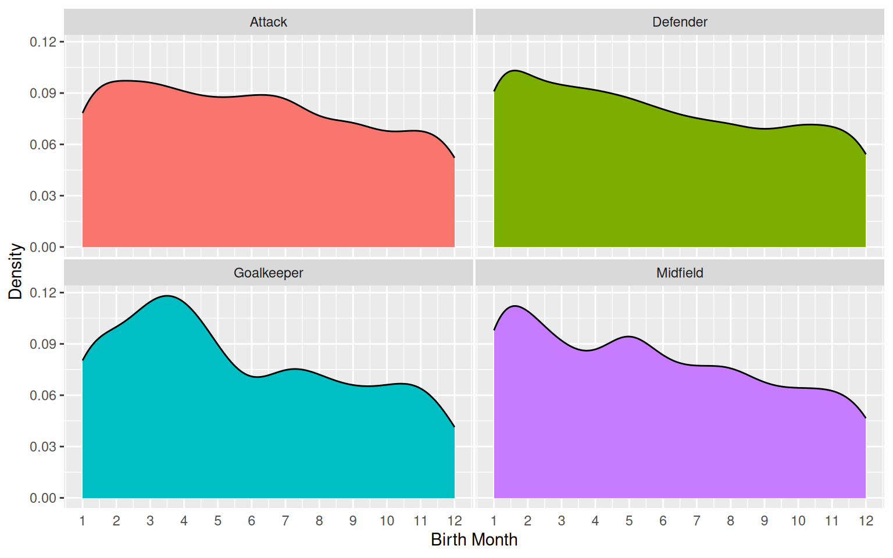

More Footballers are born in January than December

Impact of birth month more prominent for Goalkeepers

Month bias independent of adult height (Interactive)
A glimpse at the dataset (in alphabetical order)
| name | birth_date | height_cm | positions | nationality | age | club |
|---|---|---|---|---|---|---|
| Aaron Cresswell | 1989-12-15 | 170 | Defender | England | 34 | West Ham United Football Club |
| Aaron Essel | 2005-07-30 | 179 | Midfield | Ghana | 19 | Saint Johnstone Football Club |
| Aaron Hickey | 2002-06-10 | 185 | Defender | Scotland | 22 | Brentford Football Club |
| Aaron Meijers | 1987-10-28 | 176 | Defender | Netherlands | 36 | Rooms Katholieke Combinatie Waalwijk |
| Aaron Ramsdale | 1998-05-14 | 190 | Goalkeeper | England | 26 | Southampton Football Club |
| Aaron Wan-Bissaka | 1997-11-26 | 183 | Defender | England | 26 | West Ham United Football Club |
| Aarón Martín | 1997-04-22 | 178 | Defender | Spain | 27 | Genoa Cricket and Football Club |
| Abakar Gadzhiev | 2003-12-31 | 180 | Midfield | Russia | 20 | Dinamo Makhachkala |
| Abakar Sylla | 2002-12-25 | 188 | Defender | Cote d’Ivoire | 21 | Racing Club de Strasbourg Alsace |
| Abat Aymbetov | 1995-08-07 | 184 | Attack | Kazakhstan | 29 | Adana Demirspor Kulübü |
| Abbosbek Fayzullaev | 2003-10-03 | 170 | Midfield | Uzbekistan | 21 | PFK CSKA Moskva |
| Abdallah Sima | 2001-06-17 | 188 | Attack | Senegal | 23 | Stade brestois 29 |
| Abde Ezzalzouli | 2001-12-17 | 177 | Attack | Morocco | 22 | Real Betis Balompié S.A.D. |
| Abde Rebbach | 1998-08-11 | 176 | Attack | Algeria | 26 | Deportivo Alavés S.A.D. |
| Abdel Abqar | 1999-03-10 | 188 | Defender | Morocco | 25 | Deportivo Alavés S.A.D. |
| Abdelhamid Ait Boudlal | 2006-04-16 | 190 | Defender | Morocco | 18 | Stade Rennais Football Club |
| Abdelkahar Kadri | 2000-06-24 | 170 | Midfield | Algeria | 24 | Koninklijke Voetbalclub Kortrijk |
| Abdenego Nankishi | 2002-07-06 | 178 | Attack | Germany | 22 | Sportverein Werder Bremen von 1899 |
| Abdou Harroui | 1998-01-13 | 182 | Midfield | Morocco | 26 | Verona Hellas Football Club |
| Abdoul Kader Ouattara | 2005-05-26 | 171 | Attack | Burkina Faso | 19 | Cercle Brugge Koninklijke Sportvereniging |
| Abdoul Koné | 2005-04-22 | 192 | Defender | France | 19 | Stade de Reims |
| Abdoulaye Bamba | 1990-04-25 | 182 | Defender | Cote d’Ivoire | 34 | Angers Sporting Club de l’Ouest |
| Abdoulaye Doucouré | 1993-01-01 | 183 | Midfield | Mali | 31 | Everton Football Club |
| Abdoulaye Ndiaye | 2002-04-10 | 195 | Defender | Senegal | 22 | Stade brestois 29 |
| Abdoulaye Sissako | 1998-05-26 | 186 | Midfield | France | 26 | Koninklijke Voetbalclub Kortrijk |
| Abdoulaye Touré | 1994-03-03 | 188 | Midfield | Guinea | 30 | Le Havre Athletic Club |
| Abdoulaye Yahaya | 2001-10-07 | 170 | Attack | Cameroon | 23 | FC Verbroedering Denderhoutem Denderleeuw Eendracht Hekelgem |
| Abdukodir Khusanov | 2004-02-29 | 186 | Defender | Uzbekistan | 20 | Racing Club de Lens |
| Abdul Mumin | 1998-06-06 | 188 | Defender | Ghana | 26 | Rayo Vallecano de Madrid S.A.D. |
| Abdul Rahman Baba | 1994-07-02 | 179 | Defender | Ghana | 30 | Panthessalonikios Athlitikos Omilos Konstantinoupoliton |
| Abdula Bagamaev | 2004-10-18 | 176 | Midfield | Russia | 19 | FK Fakel Voronezh |
| Abdulkadir Parmak | 1994-12-28 | 176 | Midfield | Türkiye | 29 | Hatayspor Futbol Kulübü |
| Abdullah Yiğiter | 2000-02-20 | 189 | Goalkeeper | Türkiye | 24 | Antalyaspor |
| Abdulsamet Burak | 1996-05-13 | 185 | Defender | Türkiye | 28 | Adana Demirspor Kulübü |
| Abdurrahim Dursun | 1998-12-01 | 176 | Defender | Türkiye | 25 | Antalyaspor |
| Abdón Prats | 1992-12-07 | 181 | Attack | Spain | 31 | Real Club Deportivo Mallorca S.A.D. |
| Abdülkadir Aydın | 2002-05-24 | 175 | Defender | Türkiye | 22 | Eyüp Spor Kulübü |
| Abdülkerim Bardakcı | 1994-09-07 | 185 | Defender | Türkiye | 30 | Galatasaray Spor Kulübü |
| Abel Bretones | 2000-08-21 | 188 | Defender | Spain | 24 | Club Atlético Osasuna |
| Abel Ruiz | 2000-01-28 | 182 | Attack | Spain | 24 | Girona Fútbol Club S. A. D. |
| Aboubakary Koita | 1998-09-20 | 175 | Attack | Mauritania | 26 | Athlitiki Enosi Konstantinoupoleos |
| Abu Francis | 2001-04-27 | 182 | Midfield | Ghana | 23 | Cercle Brugge Koninklijke Sportvereniging |
| Achilleas Poungouras | 1995-12-13 | 187 | Defender | Greece | 28 | Sivasspor Kulübü |
| Achraf Hakimi | 1998-11-04 | 181 | Defender | Morocco | 25 | Paris Saint-Germain Football Club |
| Adam Armstrong | 1997-02-10 | 173 | Attack | England | 27 | Southampton Football Club |
| Adam Aznou | 2006-06-02 | 178 | Defender | Morocco | 18 | FC Bayern München |
| Adam Buksa | 1996-07-12 | 191 | Attack | Poland | 28 | Fodbold Club Midtjylland |
| Adam Devine | 2003-03-25 | 190 | Defender | Scotland | 21 | Rangers Football Club |
| Adam Dzwigala | 1995-09-25 | 185 | Defender | Poland | 29 | Fußball-Club St. Pauli von 1910 |
| Adam Gabriel | 2001-05-28 | 190 | Defender | Czech Republic | 23 | Fodbold Club Midtjylland |
| Adam Gnezda Cerin | 1999-07-16 | 180 | Midfield | Slovenia | 25 | Panathinaikos Athlitikos Omilos |
| Adam Hlozek | 2002-07-25 | 188 | Attack | Czech Republic | 22 | TSG 1899 Hoffenheim Fußball-Spielbetriebs GmbH |
| Adam Idah | 2001-02-11 | 190 | Attack | Ireland | 23 | The Celtic Football Club |
| Adam Kaied | 2002-03-02 | 177 | Attack | Sweden | 22 | Nooit Opgeven Altijd Doorzetten Aangenaam Door Vermaak En Nuttig Door Ontspanning Combinatie Breda |
| Adam Lallana | 1988-05-10 | 172 | Midfield | England | 36 | Southampton Football Club |
| Adam Legzdins | 1986-11-28 | 190 | Goalkeeper | England | 37 | Dundee Football Club |
| Adam Marusic | 1992-10-17 | 185 | Defender | Montenegro | 31 | Società Sportiva Lazio S.p.A. |
| Adam Masina | 1994-01-02 | 191 | Defender | Morocco | 30 | Torino Calcio |
| Adam Montgomery | 2002-07-18 | 173 | Defender | Scotland | 22 | The Celtic Football Club |
| Adam Nhaili | 2005-08-09 | 174 | Attack | Belgium | 19 | Koninklijke Sint-Truidense Voetbalvereniging |
| Adam Obert | 2002-08-23 | 188 | Defender | Slovakia | 22 | Cagliari Calcio |
| Adam Smith | 1991-04-29 | 174 | Defender | England | 33 | Association Football Club Bournemouth |
| Adam Webster | 1995-01-04 | 190 | Defender | England | 29 | Brighton and Hove Albion Football Club |
| Adam Wharton | 2004-02-06 | 182 | Midfield | England | 20 | Crystal Palace Football Club |
| Adama Boiro | 2002-06-22 | 183 | Defender | Spain | 22 | Athletic Club Bilbao |
| Adama Traoré | 1996-01-25 | 178 | Attack | Spain | 28 | Fulham Football Club |
| Adamo Nagalo | 2002-09-22 | 188 | Defender | Burkina Faso | 22 | Eindhovense Voetbalvereniging Philips Sport Vereniging |
| Adedire Mebude | 2004-05-28 | 189 | Attack | Scotland | 20 | Koninklijke Voetbal Club Westerlo |
| Adem Eren Kabak | 2000-12-12 | 185 | Midfield | Türkiye | 23 | Konyaspor |
| Adem Zorgane | 2000-01-06 | 184 | Midfield | Algeria | 24 | Royal Charleroi Sporting Club |
| Ademola Lookman | 1997-10-20 | 174 | Attack | Nigeria | 26 | Atalanta Bergamasca Calcio S.p.a. |
| Aderllan Santos | 1989-04-09 | 193 | Defender | Brazil | 35 | Rio Ave Futebol Clube |
| Adi Nalic | 1997-12-01 | 190 | Midfield | Bosnia-Herzegovina | 26 | Almere City Football Club |
| Adil Demirbağ | 1997-12-10 | 185 | Defender | Türkiye | 26 | Konyaspor |
| Admir Bristric | 2003-04-28 | 187 | Attack | Bosnia-Herzegovina | 21 | FK Polissya Zhytomyr |
| Adnan Aktaş | 2006-11-10 | 182 | Defender | Türkiye | 17 | Kasımpaşa Spor Kulübü |
| Adnan Januzaj | 1995-02-05 | 186 | Attack | Belgium | 29 | Unión Deportiva Las Palmas S.A.D. |
| Ado Onaiwu | 1995-11-08 | 180 | Attack | Japan | 28 | Association de la Jeunesse auxerroise |
| Adolfo Gaich | 1999-02-26 | 190 | Attack | Argentina | 25 | Antalyaspor |
| Adrian Bajrami | 2002-04-05 | 188 | Defender | Albania | 22 | Sport Lisboa e Benfica |
| Adrian Beck | 1997-06-09 | 186 | Midfield | Germany | 27 | 1. Fußballclub Heidenheim 1846 |
| Adrian Benedyczak | 2000-11-24 | 191 | Attack | Poland | 23 | Parma Calcio 1913 |
| Adriano Bertaccini | 2000-08-13 | 173 | Attack | Belgium | 24 | Koninklijke Sint-Truidense Voetbalvereniging |
| Adrien Hunou | 1994-01-19 | 179 | Attack | France | 30 | Angers Sporting Club de l’Ouest |
| Adrien Rabiot | 1995-04-03 | 188 | Midfield | France | 29 | Olympique de Marseille |
| Adrien Tamèze | 1994-02-04 | 182 | Midfield | France | 30 | Torino Calcio |
| Adrien Thomasson | 1993-12-10 | 175 | Midfield | France | 30 | Racing Club de Lens |
| Adrien Truffert | 2001-11-20 | 176 | Defender | France | 22 | Stade Rennais Football Club |
| Adrià Altimira | 2001-03-28 | 170 | Defender | Spain | 23 | Club Deportivo Leganés S.A.D. |
| Adrià Pedrosa | 1998-05-13 | 172 | Defender | Spain | 26 | Sevilla Fútbol Club S.A.D. |
| Adrián Bernabé | 2001-05-26 | 170 | Midfield | Spain | 23 | Parma Calcio 1913 |
| Adrián Butzke | 1999-03-30 | 193 | Attack | Spain | 25 | Clube Desportivo Nacional |
| Adrián Embarba | 1992-05-07 | 173 | Attack | Spain | 32 | Rayo Vallecano de Madrid S.A.D. |
| Adrián Marín | 1997-01-09 | 181 | Defender | Spain | 27 | Sporting Clube de Braga |
| Adrián Palacios | 2004-06-07 | 186 | Defender | Venezuela | 20 | Koninklijke Racing Club Genk |
| Adrián Riera | 1996-04-19 | 178 | Midfield | Spain | 28 | Omilos Filathlon Irakliou FC |
| Afonso Freitas | 2000-04-07 | 181 | Defender | Portugal | 24 | Clube Desportivo Nacional |
| Afonso Rodrigues | 2002-08-19 | 178 | Attack | Portugal | 22 | Futebol Clube de Famalicão |
| Agon Elezi | 2001-03-01 | 181 | Midfield | North Macedonia | 23 | Verein für Leibesübungen Bochum 1848 Fußballgemeinschaft |
| Ahmed Ildız | 1996-11-28 | 181 | Midfield | Türkiye | 27 | Göztepe Sportif Yatırımlar A.Ş. |
| Ahmed Kutucu | 2000-03-01 | 181 | Attack | Türkiye | 24 | Eyüp Spor Kulübü |
| Ahmed Touba | 1998-03-13 | 190 | Defender | Algeria | 26 | Yellow-Red Koninklijke Voetbalclub Mechelen |
| Ahmet Aslan | 2001-06-29 | 179 | Midfield | Türkiye | 23 | Bodrumspor Spor Faaliyetleri Anonim Şirketi |
| Ahmet Yıldırım | 2006-11-01 | 194 | Goalkeeper | Türkiye | 17 | Trabzonspor Kulübü |
| Ahmetcan Kaplan | 2003-01-16 | 189 | Defender | Türkiye | 21 | AFC Ajax Amsterdam |
| Aiden O’Neill | 1998-07-04 | 178 | Midfield | Australia | 26 | Royal Standard Club de Liège |
| Aiham Ousou | 2000-01-09 | 186 | Defender | Syria | 24 | Royal Charleroi Sporting Club |
| Aihen Muñoz | 1997-08-16 | 175 | Defender | Spain | 27 | Real Sociedad de Fútbol S.A.D. |
| Aimar Oroz | 2001-11-27 | 177 | Midfield | Spain | 22 | Club Atlético Osasuna |
| Aimé Omgba | 2002-10-22 | 190 | Midfield | Netherlands | 21 | Koninklijke Atletiek Associatie Gent |
| Ainsley Maitland-Niles | 1997-08-29 | 180 | Defender | England | 27 | Olympique Lyonnais |
| Aitor Fernández | 1991-05-03 | 182 | Goalkeeper | Spain | 33 | Club Atlético Osasuna |
| Aitor Paredes | 2000-04-29 | 185 | Defender | Spain | 24 | Athletic Club Bilbao |
| Aitor Ruibal | 1996-03-22 | 176 | Attack | Spain | 28 | Real Betis Balompié S.A.D. |
| Ajdi Dajko | 2002-10-28 | 188 | Defender | Albania | 21 | LNZ Cherkasy |
| Ajdin Redzic | 1997-01-25 | 178 | Midfield | Bosnia-Herzegovina | 27 | A.G.S Asteras Tripolis |
| Akil Wright | 1996-05-13 | 183 | Defender | England | 28 | Ross County Football Club |
| Akim Zedadka | 1995-05-30 | 174 | Defender | Algeria | 29 | Lille Olympique Sporting Club Lille Métropole |
| Akor Adams | 2000-01-29 | 190 | Attack | Nigeria | 24 | Montpellier Hérault Sport Club |
| Aksel Aktaş | 1999-07-15 | 178 | Midfield | Türkiye | 25 | Adana Demirspor Kulübü |
| Alaa Bellaarouch | 2002-02-01 | 188 | Goalkeeper | Morocco | 22 | Racing Club de Strasbourg Alsace |
| Alaa Ghram | 2001-07-24 | 190 | Defender | Tunisia | 23 | FC Shakhtar Donetsk |
| Alaaddin Okumuş | 1995-08-23 | 175 | Defender | Türkiye | 29 | Sivasspor Kulübü |
| Alaixys Romao | 1984-01-18 | 180 | Midfield | Togo | 40 | Athens Kallithea Football Club |
| Alama Bayo | 2006-02-02 | 181 | Attack | Belgium | 18 | Cercle Brugge Koninklijke Sportvereniging |
| Alan Forrest | 1996-09-09 | 175 | Attack | Scotland | 28 | Heart of Midlothian Football Club |
| Alan Matturro | 2004-10-11 | 189 | Defender | Uruguay | 19 | Genoa Cricket and Football Club |
| Alan Minda | 2003-05-14 | 171 | Attack | Ecuador | 21 | Cercle Brugge Koninklijke Sportvereniging |
| Alan Ruiz | 1993-08-19 | 183 | Midfield | Argentina | 31 | Club Football Estrela da Amadora |
| Alan Varela | 2001-07-04 | 177 | Midfield | Argentina | 23 | Futebol Clube do Porto |
| Alassane Ndao | 1996-12-20 | 176 | Attack | Senegal | 27 | Konyaspor |
| Alassane Plea | 1993-03-10 | 181 | Attack | France | 31 | Borussia Verein für Leibesübungen 1900 Mönchengladbach |
| Alban Lafont | 1999-01-23 | 196 | Goalkeeper | France | 25 | Football Club de Nantes |
| Albert Grønbaek | 2001-05-23 | 181 | Midfield | Denmark | 23 | Stade Rennais Football Club |
| Albert Gudmundsson | 1997-06-15 | 177 | Attack | Iceland | 27 | Associazione Calcio Fiorentina |
| Albert Sambi Lokonga | 1999-10-22 | 183 | Midfield | Belgium | 24 | Sevilla Fútbol Club S.A.D. |
| Alberto Brignoli | 1991-08-19 | 188 | Goalkeeper | Italy | 33 | Athlitiki Enosi Konstantinoupoleos |
| Alberto Cerri | 1996-04-16 | 194 | Attack | Italy | 28 | Calcio Como |
| Alberto Dossena | 1998-10-13 | 195 | Defender | Italy | 25 | Calcio Como |
| Alberto Grassi | 1995-03-07 | 183 | Midfield | Italy | 29 | Empoli Football Club S.r.l. |
| Alberto Moleiro | 2003-09-30 | 171 | Midfield | Spain | 21 | Unión Deportiva Las Palmas S.A.D. |
| Alberto Moreno | 1992-07-05 | 171 | Defender | Spain | 32 | Calcio Como |
| Alberto Paleari | 1992-08-29 | 193 | Goalkeeper | Italy | 32 | Torino Calcio |
| Alberto Simoni | 1996-11-05 | 182 | Attack | Albania | 27 | PAS Lamia 1964 |
| Alec Van Hoorenbeeck | 1998-12-30 | 187 | Defender | Belgium | 25 | Football Club Twente |
| Aleix García | 1997-06-28 | 173 | Midfield | Spain | 27 | Bayer 04 Leverkusen Fußball |
| Alejandro Balde | 2003-10-18 | 175 | Defender | Spain | 20 | Futbol Club Barcelona |
| Alejandro Catena | 1994-10-28 | 194 | Defender | Spain | 29 | Club Atlético Osasuna |
| Alejandro Francés | 2002-08-01 | 182 | Defender | Spain | 22 | Girona Fútbol Club S. A. D. |
| Alejandro Garnacho | 2004-07-01 | 180 | Attack | Argentina | 20 | Manchester United Football Club |
| Alejandro Grimaldo | 1995-09-20 | 171 | Defender | Spain | 29 | Bayer 04 Leverkusen Fußball |
| Alejandro Marqués | 2000-08-04 | 189 | Attack | Venezuela | 24 | Grupo Desportivo Estoril Praia |
| Alejo Veliz | 2003-09-19 | 186 | Attack | Argentina | 21 | Reial Club Deportiu Espanyol de Barcelona S.A.D. |
| Aleksa Djurasovic | 2002-12-23 | 188 | Midfield | Serbia | 21 | Akron Togliatti |
| Aleksandar Jukic | 2000-07-26 | 184 | Midfield | Austria | 24 | FC Rubin Kazan |
| Aleksandar Pavlovic | 2004-05-03 | 188 | Midfield | Germany | 20 | FC Bayern München |
| Aleksandar Sedlar | 1991-12-13 | 180 | Defender | Serbia | 32 | Deportivo Alavés S.A.D. |
| Aleksandr Belenov | 1986-09-13 | 198 | Goalkeeper | Russia | 38 | FK Fakel Voronezh |
| Aleksandr Chernikov | 2000-02-01 | 184 | Midfield | Russia | 24 | FK Krasnodar |
| Aleksandr Dovbnya | 1987-04-10 | 194 | Goalkeeper | Russia | 37 | FK Spartak Moskva |
| Aleksandr Ektov | 1996-01-30 | 173 | Defender | Russia | 28 | FK Nizhny Novgorod |
| Aleksandr Erokhin | 1989-10-13 | 195 | Midfield | Russia | 34 | AO FK Zenit Sankt-Peterburg |
| Aleksandr Filin | 1996-06-25 | 185 | Defender | Russia | 28 | FK Khimki |
| Aleksandr Golovin | 1996-05-30 | 178 | Midfield | Russia | 28 | Association sportive de Monaco Football Club |
| Aleksandr Koksharov | 2004-12-20 | 190 | Attack | Russia | 19 | FK Krasnodar |
| Aleksandr Kovalenko | 2003-08-08 | 177 | Midfield | Russia | 21 | FC Orenburg |
| Aleksandr Kutitskiy | 2002-01-01 | 184 | Midfield | Russia | 22 | FK Dinamo Moskva |
| Aleksandr Lomovitskiy | 1998-01-27 | 182 | Attack | Russia | 26 | FC Rubin Kazan |
| Aleksandr Maksimenko | 1998-03-19 | 187 | Goalkeeper | Russia | 26 | FK Spartak Moskva |
| Aleksandr Mukhin | 2002-04-29 | 185 | Defender | Russia | 22 | FK Rostov |
| Aleksandr Rudenko | 1999-03-15 | 173 | Attack | Russia | 25 | FK Khimki |
| Aleksandr Sandrachuk | 2002-01-02 | 176 | Defender | Russia | 22 | Dinamo Makhachkala |
| Aleksandr Selikhov | 1994-04-07 | 190 | Goalkeeper | Russia | 30 | FK Spartak Moskva |
| Aleksandr Silyanov | 2001-02-17 | 185 | Defender | Russia | 23 | Футбольный клуб “Локомотив” Москва |
| Aleksandr Sobolev | 1997-03-07 | 195 | Attack | Russia | 27 | AO FK Zenit Sankt-Peterburg |
| Aleksandr Soldatenkov | 1996-12-28 | 189 | Defender | Russia | 27 | PFK Krylya Sovetov Samara |
| Aleksandr Troshechkin | 1996-04-23 | 184 | Midfield | Russia | 28 | FK Nizhny Novgorod |
| Aleksandr Vasyutin | 1995-03-04 | 190 | Goalkeeper | Russia | 29 | Akron Togliatti |
| Aleksandr Zhirov | 1991-01-24 | 193 | Defender | Russia | 33 | RFK Akhmat Grozny |
| Aleksandr Zotov | 1990-08-27 | 178 | Midfield | Russia | 34 | FC Rubin Kazan |
| Aleksey Baranovskiy | 2005-01-25 | 184 | Midfield | Russia | 19 | FC Orenburg |
| Aleksey Batrakov | 2005-06-09 | 168 | Midfield | Russia | 19 | Футбольный клуб “Локомотив” Москва |
| Aleksey Gritsaenko | 1995-05-25 | 186 | Defender | Russia | 29 | FC Rubin Kazan |
| Aleksey Kashtanov | 1996-03-13 | 197 | Attack | Russia | 28 | FK Fakel Voronezh |
| Aleksey Kenyaykin | 1998-08-23 | 199 | Goalkeeper | Russia | 26 | FC Orenburg |
| Aleksey Mironov | 2000-01-01 | 175 | Midfield | Russia | 24 | FK Rostov |
| Aleksey Sutormin | 1994-01-10 | 188 | Attack | Russia | 30 | FK Rostov |
| Alen Halilovic | 1996-06-18 | 169 | Midfield | Croatia | 28 | Fortuna Sittardia Combinatie |
| Alen Ozbolt | 1996-06-24 | 182 | Attack | Slovenia | 28 | APO Levadiakos Football Club |
| Alen Sherri | 1997-12-15 | 197 | Goalkeeper | Albania | 26 | Cagliari Calcio |
| Alessandro Bastoni | 1999-04-13 | 190 | Defender | Italy | 25 | Football Club Internazionale Milano S.p.A. |
| Alessandro Berardi | 1991-01-16 | 185 | Goalkeeper | Italy | 33 | Verona Hellas Football Club |
| Alessandro Bianco | 2002-10-01 | 173 | Midfield | Italy | 22 | Associazione Calcio Monza |
| Alessandro Buongiorno | 1999-06-06 | 190 | Defender | Italy | 25 | Società Sportiva Calcio Napoli |
| Alessandro Circati | 2003-10-10 | 190 | Defender | Australia | 21 | Parma Calcio 1913 |
| Alessandro Deiola | 1995-08-01 | 190 | Midfield | Italy | 29 | Cagliari Calcio |
| Alessandro Florenzi | 1991-03-11 | 173 | Defender | Italy | 33 | Associazione Calcio Milan |
| Alessandro Gabrielloni | 1994-07-10 | 178 | Attack | Italy | 30 | Calcio Como |
| Alessandro Marcandalli | 2002-10-25 | 190 | Defender | Italy | 21 | Genoa Cricket and Football Club |
| Alessandro Mercati | 2002-05-12 | 181 | Midfield | Italy | 22 | Athens Kallithea Football Club |
| Alessandro Vogliacco | 1998-09-14 | 186 | Defender | Italy | 26 | Genoa Cricket and Football Club |
| Alessandro Zanoli | 2000-10-03 | 188 | Defender | Italy | 24 | Genoa Cricket and Football Club |
| Alessio Castro-Montes | 1997-05-17 | 175 | Midfield | Belgium | 27 | Royale Union Saint-Gilloise |
| Alessio Cragno | 1994-06-28 | 184 | Goalkeeper | Italy | 30 | Associazione Calcio Monza |
| Alessio Furlanetto | 2002-02-07 | 191 | Goalkeeper | Italy | 22 | Società Sportiva Lazio S.p.A. |
| Alessio Iovine | 1991-02-01 | 174 | Midfield | Italy | 33 | Calcio Como |
| Alessio Romagnoli | 1995-01-12 | 185 | Defender | Italy | 29 | Società Sportiva Lazio S.p.A. |
| Alessio Zerbin | 1999-03-03 | 182 | Attack | Italy | 25 | Società Sportiva Calcio Napoli |
| Alessio da Cruz | 1997-01-18 | 186 | Midfield | Cape Verde | 27 | Fortuna Sittardia Combinatie |
| Alex Gogic | 1994-04-13 | 185 | Midfield | Cyprus | 30 | Saint Mirren Football Club |
| Alex Iacovitti | 1997-09-02 | 193 | Defender | Scotland | 27 | Saint Mirren Football Club |
| Alex Iwobi | 1996-05-03 | 183 | Attack | Nigeria | 28 | Fulham Football Club |
| Alex Král | 1998-05-19 | 186 | Midfield | Czech Republic | 26 | Reial Club Deportiu Espanyol de Barcelona S.A.D. |
| Alex Marques | 2005-10-23 | 186 | Defender | Portugal | 18 | Boavista Futebol Clube |
| Alex McCarthy | 1989-12-03 | 193 | Goalkeeper | England | 34 | Southampton Football Club |
| Alex Meret | 1997-03-22 | 190 | Goalkeeper | Italy | 27 | Società Sportiva Calcio Napoli |
| Alex Mighten | 2002-04-11 | 171 | Attack | England | 22 | Fodbold Club Nordsjælland |
| Alex Murphy | 2004-06-25 | 188 | Defender | Ireland | 20 | Newcastle United Football Club |
| Alex Oxlade-Chamberlain | 1993-08-15 | 180 | Midfield | England | 31 | Beşiktaş Jimnastik Kulübü |
| Alex Pritchard | 1993-05-03 | 168 | Midfield | England | 31 | Sivasspor Kulübü |
| Alex Samuel | 1995-09-20 | 183 | Attack | Wales | 29 | Ross County Football Club |
| Alex Scott | 2003-08-21 | 178 | Midfield | England | 21 | Association Football Club Bournemouth |
| Alex Suárez | 1993-03-18 | 180 | Defender | Spain | 31 | Unión Deportiva Las Palmas S.A.D. |
| Alexander Bah | 1997-12-09 | 183 | Defender | Denmark | 26 | Sport Lisboa e Benfica |
| Alexander Bernhardsson | 1998-09-08 | 185 | Attack | Sweden | 26 | Kieler Sportvereinigung Holstein von 1900 |
| Alexander Busch | 2003-07-25 | 190 | Defender | Denmark | 21 | Silkeborg Idrætsforening |
| Alexander Callens | 1992-05-04 | 186 | Defender | Peru | 32 | Athlitiki Enosi Konstantinoupoleos |
| Alexander Djiku | 1994-08-09 | 182 | Defender | Ghana | 30 | Fenerbahçe Spor Kulübü |
| Alexander Isak | 1999-09-21 | 192 | Attack | Sweden | 25 | Newcastle United Football Club |
| Alexander Jakobsen | 1994-03-18 | 180 | Attack | Egypt | 30 | Rooms Katholieke Combinatie Waalwijk |
| Alexander Jeremejeff | 1993-10-12 | 192 | Attack | Sweden | 30 | Panathinaikos Athlitikos Omilos |
| Alexander Lyng | 2004-11-26 | 177 | Attack | Denmark | 19 | Sønderjyske Fodbold |
| Alexander Meyer | 1991-04-13 | 195 | Goalkeeper | Germany | 33 | Borussia Dortmund |
| Alexander Nübel | 1996-09-30 | 193 | Goalkeeper | Germany | 28 | Verein für Bewegungsspiele Stuttgart 1893 |
| Alexander Prass | 2001-05-26 | 180 | Midfield | Austria | 23 | TSG 1899 Hoffenheim Fußball-Spielbetriebs GmbH |
| Alexander Schwolow | 1992-06-02 | 190 | Goalkeeper | Germany | 32 | 1. FC Union Berlin |
| Alexander Simmelhack | 2005-11-11 | 190 | Attack | Denmark | 18 | Silkeborg Idrætsforening |
| Alexander Sørloth | 1995-12-05 | 195 | Attack | Norway | 28 | Club Atlético de Madrid S.A.D. |
| Alexandre Lacazette | 1991-05-28 | 175 | Attack | France | 33 | Olympique Lyonnais |
| Alexandre Olliero | 1996-02-15 | 193 | Goalkeeper | France | 28 | Stade de Reims |
| Alexandre Penetra | 2001-09-09 | 186 | Defender | Portugal | 23 | Alkmaar Zaanstreek |
| Alexandro Calut | 2003-04-22 | 180 | Defender | Belgium | 21 | Royal Standard Club de Liège |
| Alexandros Anagnostopoulos | 1994-08-18 | 186 | Goalkeeper | Greece | 30 | Olympiakos Syndesmos Filathlon Peiraios |
| Alexandros Maskanakis | 2004-08-08 | 173 | Attack | Greece | 20 | Panserraikos Serres |
| Alexandros Paschalakis | 1989-07-28 | 197 | Goalkeeper | Greece | 35 | Olympiakos Syndesmos Filathlon Peiraios |
| Alexandros Tereziou | 2000-03-01 | 181 | Defender | Greece | 24 | PAS Lamia 1964 |
| Alexandros Tsompanidis | 2004-08-05 | 185 | Goalkeeper | Greece | 20 | Panserraikos Serres |
| Alexandros Voilis | 2000-05-26 | 187 | Attack | Greece | 24 | Panetolikos Agrinio |
| Alexandru Borbei | 2003-06-27 | 191 | Goalkeeper | Romania | 21 | Unione Sportiva Lecce |
| Alexandru Maxim | 1990-07-08 | 177 | Midfield | Romania | 34 | Gaziantep Futbol Kulübü A.Ş. |
| Alexei Koselev | 1993-11-19 | 200 | Goalkeeper | Moldova | 30 | APS Atromitos Athinon |
| Alexios Kalogeropoulos | 2004-07-26 | 187 | Defender | Greece | 20 | Volou Neos Podosferikos Syllogos |
| Alexis Claude-Maurice | 1998-06-06 | 174 | Midfield | France | 26 | FC Augsburg 1907 |
| Alexis Duarte | 2000-03-12 | 185 | Defender | Paraguay | 24 | FK Spartak Moskva |
| Alexis Flips | 2000-01-18 | 173 | Midfield | France | 24 | Royal Charleroi Sporting Club |
| Alexis Mac Allister | 1998-12-24 | 176 | Midfield | Argentina | 25 | Liverpool Football Club |
| Alexis Saelemaekers | 1999-06-27 | 180 | Attack | Belgium | 25 | Associazione Sportiva Roma |
| Alexis Sánchez | 1988-12-19 | 169 | Attack | Chile | 35 | Udinese Calcio |
| Alexis Trouillet | 2000-12-23 | 175 | Midfield | France | 23 | Panathinaikos Athlitikos Omilos |
| Alfie Devine | 2004-08-01 | 182 | Midfield | England | 20 | Koninklijke Voetbal Club Westerlo |
| Alfie Whiteman | 1998-10-02 | 188 | Goalkeeper | England | 26 | Tottenham Hotspur Football Club |
| Alfon González | 1999-05-04 | 172 | Attack | Spain | 25 | Real Club Celta de Vigo S. A. D. |
| Alfonso Espino | 1992-01-05 | 172 | Defender | Uruguay | 32 | Rayo Vallecano de Madrid S.A.D. |
| Alfonso Pedraza | 1996-04-09 | 184 | Defender | Spain | 28 | Villarreal Club de Fútbol S.A.D. |
| Alfonso Trezza | 1999-06-22 | 166 | Attack | Uruguay | 25 | Futebol Clube de Arouca |
| Alfred Duncan | 1993-03-10 | 178 | Midfield | Ghana | 31 | Venezia Football Club |
| Alfredo Mejía | 1990-04-03 | 170 | Midfield | Honduras | 34 | APO Levadiakos Football Club |
| Ali Abdi | 1993-12-20 | 183 | Defender | Tunisia | 30 | Olympique Gymnaste Club Nice Côte d’Azur |
| Ali Akman | 2002-04-18 | 173 | Attack | Türkiye | 22 | FC Verbroedering Denderhoutem Denderleeuw Eendracht Hekelgem |
| Ali Al-Hamadi | 2002-03-01 | 187 | Attack | Iraq | 22 | Ipswich Town Football Club |
| Ali Aytemur | 1996-04-03 | 184 | Defender | Türkiye | 28 | Bodrumspor Spor Faaliyetleri Anonim Şirketi |
| Ali Dembélé | 2004-01-05 | 189 | Defender | France | 20 | Torino Calcio |
| Ali Demirel | 2003-01-02 | 182 | Attack | Türkiye | 21 | Kasımpaşa Spor Kulübü |
| Ali Emre Yanar | 1998-05-15 | 190 | Goalkeeper | Türkiye | 26 | Kasımpaşa Spor Kulübü |
| Ali Jasim | 2004-01-20 | 178 | Attack | Iraq | 20 | Calcio Como |
| Ali Karimi | 1994-02-11 | 185 | Midfield | Iran | 30 | Kayserispor Kulübü |
| Ali Kemal Aslankaya | 2007-01-03 | 177 | Midfield | Türkiye | 17 | Çaykur Rizespor Kulübü |
| Ali Mevran Ablak | 2003-07-27 | 179 | Attack | Türkiye | 21 | Gaziantep Futbol Kulübü A.Ş. |
| Ali Sowe | 1994-06-14 | 191 | Attack | The Gambia | 30 | Çaykur Rizespor Kulübü |
| Ali Yavuz Kol | 2001-01-29 | 175 | Attack | Türkiye | 23 | Adana Demirspor Kulübü |
| Ali Yeşilyurt | 2005-07-30 | 192 | Defender | Türkiye | 19 | Galatasaray Spor Kulübü |
| Ali Şahin Yılmaz | 2004-01-01 | 185 | Defender | Türkiye | 20 | Trabzonspor Kulübü |
| Ali Şaşal Vural | 1990-07-10 | 187 | Goalkeeper | Türkiye | 34 | Sivasspor Kulübü |
| Alidu Seidu | 2000-06-04 | 173 | Defender | Ghana | 24 | Stade Rennais Football Club |
| Alieu Fadera | 2001-11-03 | 182 | Attack | The Gambia | 22 | Calcio Como |
| Alimkhan Zaynivov | 2005-01-04 | 181 | Midfield | Russia | 19 | Dinamo Makhachkala |
| Aliou Baldé | 2002-12-12 | 170 | Attack | Guinea | 21 | Verein für Leibesübungen Bochum 1848 Fußballgemeinschaft |
| Alioune Ndour | 2001-03-03 | 188 | Attack | Senegal | 23 | FK Zarya Lugansk |
| Alisher Odilov | 2001-07-15 | 180 | Attack | Uzbekistan | 23 | FK Khimki |
| Alisson Safira | 1995-03-17 | 185 | Attack | Brazil | 29 | Clube Desportivo Santa Clara |
| Alistair Johnston | 1998-10-08 | 180 | Defender | Canada | 26 | The Celtic Football Club |
| Aljoscha Kemlein | 2004-08-02 | 185 | Midfield | Germany | 20 | 1. FC Union Berlin |
| Allahyar Sayyadmanesh | 2001-06-29 | 180 | Attack | Iran | 23 | Koninklijke Voetbal Club Westerlo |
| Allan Saint-Maximin | 1997-03-12 | 173 | Attack | France | 27 | Fenerbahçe Spor Kulübü |
| Ally Samatta | 1992-12-23 | 183 | Attack | Tanzania | 31 | Panthessalonikios Athlitikos Omilos Konstantinoupoliton |
| Almugera Kabar | 2006-06-06 | 186 | Defender | Germany | 18 | Borussia Dortmund |
| Alonzo Engwanda | 2003-01-27 | 185 | Midfield | Belgium | 21 | Football Club Utrecht |
| Aloïs Confais | 1996-09-07 | 174 | Midfield | France | 28 | Le Havre Athletic Club |
| Alp Köseer | 2003-01-01 | 186 | Goalkeeper | Türkiye | 21 | Eyüp Spor Kulübü |
| Alper Efe Pazar | 2005-02-08 | 180 | Midfield | Türkiye | 19 | Samsunspor |
| Alphonse Areola | 1993-02-27 | 195 | Goalkeeper | France | 31 | West Ham United Football Club |
| Alphonso Davies | 2000-11-02 | 185 | Defender | Canada | 23 | FC Bayern München |
| Altay Bayındır | 1998-04-14 | 198 | Goalkeeper | Türkiye | 26 | Manchester United Football Club |
| Altin Zeqiri | 2000-07-18 | 185 | Attack | Kosovo | 24 | Çaykur Rizespor Kulübü |
| Amad Diallo | 2002-07-11 | 173 | Attack | Cote d’Ivoire | 22 | Manchester United Football Club |
| Amadou Dante | 2000-10-07 | 178 | Defender | Mali | 24 | Futebol Clube de Arouca |
| Amadou Diawara | 1997-07-17 | 183 | Midfield | Guinea | 27 | Royal Sporting Club Anderlecht |
| Amadou Haidara | 1998-01-31 | 175 | Midfield | Mali | 26 | RasenBallsport Leipzig |
| Amadou Onana | 2001-08-16 | 195 | Midfield | Belgium | 23 | Aston Villa Football Club |
| Amar Fatah | 2004-02-19 | 180 | Attack | Sweden | 20 | Willem II |
| Amar Gerxhaliu | 2002-04-26 | 193 | Defender | Kosovo | 22 | Antalyaspor |
| Amar Rahmanovic | 1994-05-13 | 191 | Midfield | Bosnia-Herzegovina | 30 | PFK Krylya Sovetov Samara |
| Amara Condé | 1997-01-06 | 173 | Midfield | Germany | 27 | Sportclub Heerenveen |
| Amath Ndiaye | 1996-07-16 | 173 | Attack | Senegal | 28 | Real Valladolid Club de Fútbol S.A.D. |
| Ambrosiy Chachua | 1994-04-02 | 171 | Midfield | Ukraine | 30 | FK Karpaty Lviv |
| Ameen Al-Dakhil | 2002-03-06 | 187 | Defender | Belgium | 22 | Verein für Bewegungsspiele Stuttgart 1893 |
| Amidou Doumbouya | 2007-08-05 | 182 | Defender | France | 17 | Olympique Gymnaste Club Nice Côte d’Azur |
| Amin Chiakha | 2006-03-12 | 191 | Attack | Denmark | 18 | Football Club København |
| Amin Sarr | 2001-03-11 | 188 | Attack | Sweden | 23 | Verona Hellas Football Club |
| Amine Adli | 2000-05-10 | 174 | Attack | Morocco | 24 | Bayer 04 Leverkusen Fußball |
| Amine Boukamir | 2006-10-23 | 172 | Midfield | Morocco | 17 | Royal Charleroi Sporting Club |
| Amine El Ouazzani | 2001-07-15 | 188 | Attack | Morocco | 23 | Sporting Clube de Braga |
| Amine Gouiri | 2000-02-16 | 181 | Attack | Algeria | 24 | Stade Rennais Football Club |
| Amine Harit | 1997-06-18 | 180 | Midfield | Morocco | 27 | Olympique de Marseille |
| Amine Lachkar | 2003-04-18 | 189 | Midfield | Netherlands | 21 | Willem II |
| Amine Salama | 2000-07-18 | 192 | Attack | France | 24 | Stade de Reims |
| Amine Talal | 1996-06-05 | 177 | Midfield | Morocco | 28 | RFK Akhmat Grozny |
| Amir Hadziahmetovic | 1997-03-08 | 179 | Midfield | Bosnia-Herzegovina | 27 | Çaykur Rizespor Kulübü |
| Amir Murillo | 1996-02-11 | 184 | Defender | Panama | 28 | Olympique de Marseille |
| Amir Richardson | 2002-01-24 | 197 | Midfield | Morocco | 22 | Associazione Calcio Fiorentina |
| Amir Rrahmani | 1994-02-24 | 192 | Defender | Kosovo | 30 | Società Sportiva Calcio Napoli |
| Amos Pieper | 1998-01-17 | 192 | Defender | Germany | 26 | Sportverein Werder Bremen von 1899 |
| Amourricho Van Axel-Dongen | 2004-09-29 | 175 | Attack | Netherlands | 20 | AFC Ajax Amsterdam |
| Amr Warda | 1993-09-17 | 176 | Attack | Egypt | 31 | APS Atromitos Athinon |
| Anan Khalaili | 2004-09-03 | 183 | Attack | Israel | 20 | Royale Union Saint-Gilloise |
| Anas Haj Mohamed | 2005-03-26 | 174 | Attack | Tunisia | 19 | Parma Calcio 1913 |
| Anas Tahiri | 1995-05-15 | 179 | Midfield | Morocco | 29 | Almere City Football Club |
| Anass Salah-Eddine | 2002-01-18 | 181 | Defender | Netherlands | 22 | Football Club Twente |
| Anass Zaroury | 2000-11-07 | 176 | Midfield | Morocco | 23 | Racing Club de Lens |
| Anastasios Bakasetas | 1993-06-28 | 181 | Midfield | Greece | 31 | Panathinaikos Athlitikos Omilos |
| Anastasios Chatzigiovanis | 1997-05-31 | 177 | Attack | Greece | 27 | Eyüp Spor Kulübü |
| Anastasios Douvikas | 1999-08-02 | 186 | Attack | Greece | 25 | Real Club Celta de Vigo S. A. D. |
| Anastasios Tsokanis | 1991-05-02 | 176 | Midfield | Greece | 33 | Volou Neos Podosferikos Syllogos |
| Anatoliy Trubin | 2001-08-01 | 199 | Goalkeeper | Ukraine | 23 | Sport Lisboa e Benfica |
| Ander Barrenetxea | 2001-12-27 | 175 | Attack | Spain | 22 | Real Sociedad de Fútbol S.A.D. |
| Ander Guevara | 1997-07-07 | 180 | Midfield | Spain | 27 | Deportivo Alavés S.A.D. |
| Ander Herrera | 1989-08-14 | 182 | Midfield | Spain | 35 | Athletic Club Bilbao |
| Anders Dreyer | 1998-05-02 | 174 | Attack | Denmark | 26 | Royal Sporting Club Anderlecht |
| Anders Jacobsen | 1989-10-27 | 181 | Attack | Denmark | 34 | Vejle Boldklub |
| Anders Klynge | 2000-10-14 | 175 | Midfield | Denmark | 23 | Silkeborg Idrætsforening |
| Anders Noshe | 2006-01-09 | 174 | Attack | Denmark | 18 | Aalborg Boldspilklub |
| Andi Zeqiri | 1999-06-22 | 185 | Attack | Switzerland | 25 | Royal Standard Club de Liège |
| Andoni Gorosabel | 1996-08-04 | 174 | Defender | Spain | 28 | Athletic Club Bilbao |
| Andraz Sporar | 1994-02-27 | 186 | Attack | Slovenia | 30 | Panathinaikos Athlitikos Omilos |
| Andrea Belotti | 1993-12-20 | 181 | Attack | Italy | 30 | Calcio Como |
| Andrea Cambiaso | 2000-02-20 | 182 | Defender | Italy | 24 | Juventus Football Club |
| Andrea Carboni | 2001-02-04 | 187 | Defender | Italy | 23 | Associazione Calcio Monza |
| Andrea Colpani | 1999-05-11 | 184 | Midfield | Italy | 25 | Associazione Calcio Fiorentina |
| Andrea Mazza | 2004-03-19 | 190 | Goalkeeper | Italy | 20 | Associazione Calcio Monza |
| Andrea Petagna | 1995-06-30 | 190 | Attack | Italy | 29 | Associazione Calcio Monza |
| Andrea Pinamonti | 1999-05-19 | 185 | Attack | Italy | 25 | Genoa Cricket and Football Club |
| Andreas Albers | 1990-03-23 | 193 | Attack | Denmark | 34 | Fußball-Club St. Pauli von 1910 |
| Andreas Athanasakopoulos | 2001-11-27 | 181 | Midfield | Greece | 22 | PAS Lamia 1964 |
| Andreas Bjelland | 1988-07-11 | 188 | Defender | Denmark | 36 | Lyngby Boldklubben af 1921 |
| Andreas Bruus | 1999-01-16 | 184 | Defender | Denmark | 25 | Aalborg Boldspilklub |
| Andreas Christensen | 1996-04-10 | 187 | Defender | Denmark | 28 | Futbol Club Barcelona |
| Andreas Cornelius | 1993-03-16 | 193 | Attack | Denmark | 31 | Football Club København |
| Andreas Gianniotis | 1992-12-18 | 191 | Goalkeeper | Greece | 31 | Kasımpaşa Spor Kulübü |
| Andreas Hanche-Olsen | 1997-01-17 | 185 | Defender | Norway | 27 | 1. Fußball- und Sportverein Mainz 05 |
| Andreas Hansen | 1995-08-11 | 186 | Goalkeeper | Denmark | 29 | Fodbold Club Nordsjælland |
| Andreas Karamanolis | 2001-09-02 | 183 | Defender | Cyprus | 23 | Panserraikos Serres |
| Andreas Ntoi | 2003-02-02 | 190 | Defender | Greece | 21 | Olympiakos Syndesmos Filathlon Peiraios |
| Andreas Oggesen | 1994-03-18 | 173 | Defender | Denmark | 30 | Sønderjyske Fodbold |
| Andreas Pereira | 1996-01-01 | 178 | Midfield | Brazil | 28 | Fulham Football Club |
| Andreas Poulsen | 1999-10-13 | 188 | Defender | Denmark | 24 | Silkeborg Idrætsforening |
| Andreas Sakelliadis | 2007-09-02 | 190 | Goalkeeper | Greece | 17 | Athens Kallithea Football Club |
| Andreas Schjelderup | 2004-06-01 | 176 | Attack | Norway | 20 | Sport Lisboa e Benfica |
| Andreas Skov Olsen | 1999-12-29 | 187 | Attack | Denmark | 24 | Club Brugge Koninklijke Voetbalvereniging |
| Andreas Vasilogiannis | 1991-02-21 | 182 | Attack | Greece | 33 | Athens Kallithea Football Club |
| Andreas Verstraeten | 2006-01-10 | 173 | Defender | Belgium | 18 | Royal Antwerp Football Club |
| Andreaw Gravillon | 1998-02-08 | 189 | Defender | Guadeloupe | 26 | Adana Demirspor Kulübü |
| Andrei Motoc | 2002-12-13 | 195 | Defender | Moldova | 21 | Athens Kallithea Football Club |
| Andrei Radu | 1997-05-28 | 188 | Goalkeeper | Romania | 27 | Football Club Internazionale Milano S.p.A. |
| Andrei Rațiu | 1998-06-20 | 183 | Defender | Romania | 26 | Rayo Vallecano de Madrid S.A.D. |
| Andrej Ilic | 2000-04-03 | 189 | Attack | Serbia | 24 | 1. FC Union Berlin |
| Andrej Kramaric | 1991-06-19 | 177 | Attack | Croatia | 33 | TSG 1899 Hoffenheim Fußball-Spielbetriebs GmbH |
| Andres Jasson | 2002-01-17 | 175 | Attack | United States | 22 | Aalborg Boldspilklub |
| Andrew Hjulsager | 1995-01-15 | 175 | Midfield | Denmark | 29 | Koninklijke Atletiek Associatie Gent |
| Andrew Jung | 1997-10-08 | 192 | Attack | France | 27 | Omilos Filathlon Irakliou FC |
| Andrew Omobamidele | 2002-06-23 | 188 | Defender | Ireland | 22 | Nottingham Forest Football Club |
| Andrew Robertson | 1994-03-11 | 178 | Defender | Scotland | 30 | Liverpool Football Club |
| Andrey Ivlev | 2006-11-21 | 180 | Midfield | Russia | 17 | FK Fakel Voronezh |
| Andrey Kudravets | 2003-09-02 | 191 | Goalkeeper | Belarus | 21 | FK Dinamo Moskva |
| Andrey Langovich | 2003-05-28 | 180 | Defender | Russia | 21 | FK Rostov |
| Andrey Lunev | 1991-11-13 | 190 | Goalkeeper | Russia | 32 | FK Dinamo Moskva |
| Andrey Malykh | 1988-08-24 | 176 | Defender | Russia | 36 | FC Orenburg |
| Andrey Mostovoy | 1997-11-05 | 180 | Attack | Russia | 26 | AO FK Zenit Sankt-Peterburg |
| Andrey Santos | 2004-05-03 | 180 | Midfield | Brazil | 20 | Racing Club de Strasbourg Alsace |
| Andri Gudjohnsen | 2002-01-29 | 188 | Attack | Iceland | 22 | Koninklijke Atletiek Associatie Gent |
| Andrian Kraev | 1999-02-14 | 194 | Midfield | Bulgaria | 25 | Casa Pia Atlético Clube |
| Andries Noppert | 1994-04-07 | 203 | Goalkeeper | Netherlands | 30 | Sportclub Heerenveen |
| Andrija Majdevac | 1997-08-07 | 186 | Attack | Serbia | 27 | Panetolikos Agrinio |
| Andrija Zivkovic | 1996-07-11 | 169 | Attack | Serbia | 28 | Panthessalonikios Athlitikos Omilos Konstantinoupoliton |
| Andriy Batsula | 1992-02-06 | 184 | Defender | Ukraine | 32 | Vorskla Poltava |
| Andriy Buleza | 2004-01-25 | 177 | Defender | Ukraine | 20 | FK Karpaty Lviv |
| Andriy Kitela | 2004-12-13 | 178 | Defender | Ukraine | 19 | FC Rukh Lviv |
| Andriy Klishchuk | 1992-07-03 | 190 | Goalkeeper | Ukraine | 32 | FK Kryvbas Kryvyi Rig |
| Andriy Kozhukhar | 1999-07-20 | 197 | Goalkeeper | Moldova | 25 | NK Veres Rivne |
| Andriy Kulakov | 1999-04-28 | 184 | Attack | Ukraine | 25 | FC Oleksandriya |
| Andriy Lunin | 1999-02-11 | 191 | Goalkeeper | Ukraine | 25 | Real Madrid Club de Fútbol |
| Andriy Ponedelnik | 1997-02-28 | 180 | Defender | Ukraine | 27 | FK Kryvbas Kryvyi Rig |
| Andriy Spivakov | 1995-05-15 | 184 | Midfield | Ukraine | 29 | FK Livyi Bereh |
| Andriy Tsurikov | 1992-10-05 | 185 | Defender | Ukraine | 32 | FK Kolos Kovalivka |
| Andriy Yakymiv | 1997-06-15 | 183 | Defender | Ukraine | 27 | FK Livyi Bereh |
| Andriy Yarmolenko | 1989-10-23 | 189 | Attack | Ukraine | 34 | Futbolniy Klub Dynamo Kyiv |
| Andros Townsend | 1991-07-16 | 181 | Attack | England | 33 | Antalyaspor |
| András Schäfer | 1999-04-13 | 178 | Midfield | Hungary | 25 | 1. FC Union Berlin |
| André Almeida | 2000-05-30 | 176 | Midfield | Portugal | 24 | Valencia Club de Fútbol S. A. D. |
| André Anderson | 1999-09-23 | 180 | Midfield | Italy | 25 | Società Sportiva Lazio S.p.A. |
| André Ayew | 1989-12-17 | 175 | Attack | Ghana | 34 | Le Havre Athletic Club |
| André Ferreira | 1996-05-29 | 193 | Goalkeeper | Portugal | 28 | Real Valladolid Club de Fútbol S.A.D. |
| André Franco | 1998-04-12 | 177 | Midfield | Portugal | 26 | Futebol Clube do Porto |
| André Geraldes | 1991-05-02 | 181 | Defender | Portugal | 33 | Casa Pia Atlético Clube |
| André Gomes | 1993-07-30 | 190 | Midfield | Portugal | 31 | Lille Olympique Sporting Club Lille Métropole |
| André Gomes | 2004-10-20 | 182 | Goalkeeper | Portugal | 19 | Sport Lisboa e Benfica |
| André Horta | 1996-11-07 | 174 | Midfield | Portugal | 27 | Sporting Clube de Braga |
| André Lacximicant | 2001-05-19 | 188 | Attack | Portugal | 23 | Grupo Desportivo Estoril Praia |
| André Onana | 1996-04-02 | 190 | Goalkeeper | Cameroon | 28 | Manchester United Football Club |
| André Raymond | 2000-11-09 | 170 | Defender | Trinidad and Tobago | 23 | Saint Johnstone Football Club |
| André Römer | 1993-07-18 | 186 | Midfield | Denmark | 31 | Randers Fodbold Club |
| André Silva | 1995-11-06 | 185 | Attack | Portugal | 28 | RasenBallsport Leipzig |
| André Sousa | 1990-07-09 | 181 | Midfield | Portugal | 34 | Clube Desportivo Nacional |
| Andrés Ferrari | 2003-01-03 | 190 | Attack | Uruguay | 21 | Koninklijke Sint-Truidense Voetbalvereniging |
| Andrés Mehring | 1994-04-19 | 191 | Goalkeeper | Argentina | 30 | Clube Desportivo Santa Clara |
| Andrés Roa | 1993-05-25 | 175 | Midfield | Colombia | 31 | Panetolikos Agrinio |
| Andrés Salazar | 2003-01-15 | 182 | Defender | Colombia | 21 | Heart of Midlothian Football Club |
| Andu Kelati | 2002-08-13 | 181 | Attack | Germany | 22 | Kieler Sportvereinigung Holstein von 1900 |
| Andy Diouf | 2003-05-17 | 187 | Midfield | France | 21 | Racing Club de Lens |
| Andy Halliday | 1991-10-11 | 181 | Midfield | Scotland | 32 | Motherwell Football Club |
| Andy Irving | 2000-05-13 | 190 | Midfield | Scotland | 24 | West Ham United Football Club |
| Andy Logbo | 2004-05-06 | 188 | Attack | France | 20 | Le Havre Athletic Club |
| Andy Pelmard | 2000-03-12 | 180 | Defender | France | 24 | Unione Sportiva Lecce |
| Anestis Vlachomitros | 2001-11-06 | 186 | Attack | Greece | 22 | PAS Lamia 1964 |
| Ange Loïc N’Gatta | 2003-12-11 | 175 | Defender | France | 20 | Association de la Jeunesse auxerroise |
| Ange-Freddy Plumain | 1995-03-02 | 184 | Attack | Guadeloupe | 29 | FC Rukh Lviv |
| Ange-Yoan Bonny | 2003-10-25 | 189 | Attack | France | 20 | Parma Calcio 1913 |
| Angel Gomes | 2000-08-31 | 166 | Midfield | England | 24 | Lille Olympique Sporting Club Lille Métropole |
| Angelo Fulgini | 1996-08-20 | 182 | Midfield | France | 28 | Racing Club de Lens |
| Angelo Stiller | 2001-04-04 | 183 | Midfield | Germany | 23 | Verein für Bewegungsspiele Stuttgart 1893 |
| Angelos Angelopoulos | 2003-02-19 | 188 | Goalkeeper | Greece | 21 | Athlitiki Enosi Konstantinoupoleos |
| Angelos Liasos | 2000-05-26 | 185 | Midfield | Greece | 24 | Panserraikos Serres |
| Angelos Syritoudis | 2000-01-28 | 190 | Goalkeeper | Greece | 24 | PAS Lamia 1964 |
| Angus MacDonald | 1992-10-15 | 190 | Defender | England | 31 | Aberdeen Football Club |
| Anis Hadj Moussa | 2002-02-11 | 176 | Attack | Algeria | 22 | Feyenoord Rotterdam |
| Anosike Ementa | 2002-05-03 | 202 | Attack | Denmark | 22 | Viborg Fodsports Forening |
| Anouar Ait El Hadj | 2002-04-20 | 167 | Midfield | Belgium | 22 | Royale Union Saint-Gilloise |
| Anouar El Azzouzi | 2001-05-29 | 187 | Midfield | Morocco | 23 | Prins Hendrik Ende Desespereert Nimmer Combinatie Zwolle |
| Anrie Chase | 2004-03-24 | 188 | Defender | Japan | 20 | Verein für Bewegungsspiele Stuttgart 1893 |
| Anselmo García MacNulty | 2003-02-19 | 190 | Defender | Ireland | 21 | Prins Hendrik Ende Desespereert Nimmer Combinatie Zwolle |
| Ansgar Knauff | 2002-01-10 | 180 | Attack | Germany | 22 | Eintracht Frankfurt Fußball AG |
| Ansu Fati | 2002-10-31 | 178 | Attack | Spain | 21 | Futbol Club Barcelona |
| Ante Budimir | 1991-07-22 | 190 | Attack | Croatia | 33 | Club Atlético Osasuna |
| Ante Erceg | 1989-12-12 | 180 | Attack | Croatia | 34 | Fortuna Sittardia Combinatie |
| Ante Palaversa | 2000-04-06 | 187 | Midfield | Croatia | 24 | Aberdeen Football Club |
| Ante Rebić | 1993-09-21 | 185 | Attack | Croatia | 31 | Unione Sportiva Lecce |
| Antef Tsoungui | 2002-12-30 | 185 | Defender | Belgium | 21 | Oud-Heverlee Leuven |
| Anthony Briançon | 1994-11-28 | 185 | Defender | France | 29 | Association sportive de Saint-Étienne Loire |
| Anthony Caci | 1997-07-01 | 184 | Defender | France | 27 | 1. Fußball- und Sportverein Mainz 05 |
| Anthony Dennis | 2004-06-21 | 179 | Midfield | Nigeria | 20 | Göztepe Sportif Yatırımlar A.Ş. |
| Anthony Descotte | 2003-08-03 | 180 | Attack | Belgium | 21 | Football Club Utrecht |
| Anthony Elanga | 2002-04-27 | 178 | Attack | Sweden | 22 | Nottingham Forest Football Club |
| Anthony Fontana | 1999-10-14 | 177 | Midfield | United States | 24 | Prins Hendrik Ende Desespereert Nimmer Combinatie Zwolle |
| Anthony Gordon | 2001-02-24 | 183 | Attack | England | 23 | Newcastle United Football Club |
| Anthony Jung | 1991-11-03 | 186 | Defender | Germany | 32 | Sportverein Werder Bremen von 1899 |
| Anthony Lopes | 1990-10-01 | 184 | Goalkeeper | Portugal | 34 | Olympique Lyonnais |
| Anthony Losilla | 1986-03-10 | 185 | Midfield | France | 38 | Verein für Leibesübungen Bochum 1848 Fußballgemeinschaft |
| Anthony Martial | 1995-12-05 | 181 | Attack | France | 28 | Athlitiki Enosi Konstantinoupoleos |
| Anthony Moris | 1990-04-29 | 186 | Goalkeeper | Luxembourg | 34 | Royale Union Saint-Gilloise |
| Anthony Nwakaeme | 1989-03-21 | 185 | Attack | Nigeria | 35 | Trabzonspor Kulübü |
| Anthony Ralston | 1998-11-16 | 178 | Defender | Scotland | 25 | The Celtic Football Club |
| Anthony Rouault | 2001-05-29 | 186 | Defender | France | 23 | Verein für Bewegungsspiele Stuttgart 1893 |
| Anthony Uzodimma | 1999-04-17 | 176 | Defender | Nigeria | 25 | Kayserispor Kulübü |
| Anthony Valencia | 2003-07-21 | 174 | Attack | Ecuador | 21 | Royal Antwerp Football Club |
| Antoine Bernier | 1997-09-10 | 170 | Attack | Belgium | 27 | Royal Charleroi Sporting Club |
| Antoine Colassin | 2001-02-26 | 186 | Attack | Belgium | 23 | Koninklijke Beerschot Voetbalclub Antwerpen |
| Antoine Griezmann | 1991-03-21 | 176 | Attack | France | 33 | Club Atlético de Madrid S.A.D. |
| Antoine Hainaut | 2002-02-18 | 187 | Midfield | France | 22 | Parma Calcio 1913 |
| Antoine Joujou | 2003-03-12 | 189 | Attack | France | 21 | Le Havre Athletic Club |
| Antoine Makoumbou | 1998-07-18 | 187 | Midfield | Congo | 26 | Cagliari Calcio |
| Antoine Mendy | 2004-05-27 | 187 | Defender | France | 20 | Olympique Gymnaste Club Nice Côte d’Azur |
| Antoine Semenyo | 2000-01-07 | 185 | Attack | Ghana | 24 | Association Football Club Bournemouth |
| Anton Gaaei | 2002-11-19 | 183 | Defender | Denmark | 21 | AFC Ajax Amsterdam |
| Anton Glushchenko | 2004-04-20 | 185 | Attack | Ukraine | 20 | FC Shakhtar Donetsk |
| Anton Krachkovskiy | 2002-06-22 | 170 | Midfield | Russia | 22 | Dinamo Makhachkala |
| Anton Mitryushkin | 1996-02-08 | 189 | Goalkeeper | Russia | 28 | Футбольный клуб “Локомотив” Москва |
| Anton Mukhin | 2005-04-27 | 183 | Midfield | Russia | 19 | FK Nizhny Novgorod |
| Anton Salabay | 2002-06-12 | 187 | Attack | Ukraine | 22 | FK Kolos Kovalivka |
| Anton Shvets | 1993-04-26 | 190 | Midfield | Russia | 31 | RFK Akhmat Grozny |
| Anton Stach | 1998-11-15 | 194 | Midfield | Germany | 25 | TSG 1899 Hoffenheim Fußball-Spielbetriebs GmbH |
| Anton Zabolotnyi | 1991-06-13 | 191 | Attack | Russia | 33 | FK Khimki |
| Anton Zhylkin | 2003-04-14 | 197 | Goalkeeper | Ukraine | 21 | FC Ingulets Petrove |
| Anton Zinkovskiy | 1996-04-14 | 175 | Attack | Russia | 28 | FK Spartak Moskva |
| Antonee Robinson | 1997-08-08 | 183 | Defender | United States | 27 | Fulham Football Club |
| Antoni Milambo | 2005-04-03 | 179 | Midfield | Netherlands | 19 | Feyenoord Rotterdam |
| Antonino Gallo | 2000-01-05 | 183 | Defender | Italy | 24 | Unione Sportiva Lecce |
| Antonio Blanco | 2000-07-23 | 176 | Midfield | Spain | 24 | Deportivo Alavés S.A.D. |
| Antonio Candela | 2000-04-27 | 185 | Defender | Italy | 24 | Venezia Football Club |
| Antonio Donnarumma | 1990-07-07 | 192 | Goalkeeper | Italy | 34 | Torino Calcio |
| Antonio Nusa | 2005-04-17 | 180 | Attack | Norway | 19 | RasenBallsport Leipzig |
| Antonio Portales | 1996-05-16 | 183 | Defender | Mexico | 28 | Dundee Football Club |
| Antonio Raimondo | 2004-03-18 | 185 | Attack | Italy | 20 | Venezia Football Club |
| Antonio Raíllo | 1991-10-08 | 187 | Defender | Spain | 33 | Real Club Deportivo Mallorca S.A.D. |
| Antonio Rüdiger | 1993-03-03 | 190 | Defender | Germany | 31 | Real Madrid Club de Fútbol |
| Antonio Sanabria | 1996-03-04 | 180 | Attack | Paraguay | 28 | Torino Calcio |
| Antonio Sivera | 1996-08-11 | 185 | Goalkeeper | Spain | 28 | Deportivo Alavés S.A.D. |
| Antonio Sánchez | 1997-04-22 | 179 | Midfield | Spain | 27 | Real Club Deportivo Mallorca S.A.D. |
| Antonis Dentakis | 1995-03-13 | 179 | Defender | Greece | 29 | PAS Lamia 1964 |
| Antonis Papakanellos | 2005-08-11 | 186 | Midfield | Greece | 19 | Olympiakos Syndesmos Filathlon Peiraios |
| Antonis Stergiakis | 1999-03-16 | 196 | Goalkeeper | Greece | 25 | Panetolikos Agrinio |
| Antonis Tsiftsis | 1999-07-21 | 191 | Goalkeeper | Greece | 25 | Panthessalonikios Athlitikos Omilos Konstantinoupoliton |
| Antonín Barák | 1994-12-03 | 190 | Midfield | Czech Republic | 29 | Kasımpaşa Spor Kulübü |
| Antzelo Sina | 2004-01-07 | 186 | Goalkeeper | Albania | 20 | Rio Ave Futebol Clube |
| António Silva | 2003-10-30 | 187 | Defender | Portugal | 20 | Sport Lisboa e Benfica |
| Anıl Yaşar | 2002-07-01 | 192 | Defender | Türkiye | 22 | Çaykur Rizespor Kulübü |
| Apostolos Apostolopoulos | 2002-12-11 | 179 | Defender | Greece | 21 | Olympiakos Syndesmos Filathlon Peiraios |
| Apostolos Konstantopoulos | 2002-08-02 | 188 | Defender | Greece | 22 | Koninklijke Beerschot Voetbalclub Antwerpen |
| Apostolos Stamatelopoulos | 1999-04-09 | 184 | Attack | Australia | 25 | Motherwell Football Club |
| Arad Bar | 2000-01-29 | 186 | Midfield | Israel | 24 | LNZ Cherkasy |
| Aral Şimşir | 2002-06-19 | 167 | Attack | Türkiye | 22 | Fodbold Club Midtjylland |
| Arbnor Muja | 1998-11-29 | 179 | Attack | Albania | 25 | Samsunspor |
| Archie Brown | 2002-05-28 | 190 | Defender | England | 22 | Koninklijke Atletiek Associatie Gent |
| Archie Gray | 2006-03-12 | 187 | Midfield | England | 18 | Tottenham Hotspur Football Club |
| Arda Güler | 2005-02-25 | 175 | Attack | Türkiye | 19 | Real Madrid Club de Fútbol |
| Arda Kurtulan | 2002-11-19 | 183 | Attack | Albania | 21 | Adana Demirspor Kulübü |
| Arda Kılıç | 2005-01-04 | 179 | Attack | Türkiye | 19 | Beşiktaş Jimnastik Kulübü |
| Arda Kızıldağ | 1998-10-15 | 187 | Defender | Türkiye | 25 | Gaziantep Futbol Kulübü A.Ş. |
| Arda Usluoğlu | 2006-10-12 | 189 | Attack | Türkiye | 17 | Alanyaspor |
| Arda Özçimen | 2002-01-08 | 202 | Goalkeeper | Türkiye | 22 | Göztepe Sportif Yatırımlar A.Ş. |
| Ardian Ismajli | 1996-09-30 | 187 | Defender | Albania | 28 | Empoli Football Club S.r.l. |
| Ardon Jashari | 2002-07-30 | 181 | Midfield | Switzerland | 22 | Club Brugge Koninklijke Voetbalvereniging |
| Argyris Darelas | 2003-10-16 | 188 | Midfield | Greece | 20 | Nijmegen Eendracht Combinatie |
| Aridane Hernández | 1989-03-23 | 188 | Defender | Spain | 35 | Rayo Vallecano de Madrid S.A.D. |
| Arif Boşluk | 2003-06-06 | 184 | Defender | Türkiye | 21 | Trabzonspor Kulübü |
| Arif Kocaman | 2003-09-14 | 186 | Defender | Türkiye | 21 | Kayserispor Kulübü |
| Arijanet Muric | 1998-11-07 | 198 | Goalkeeper | Kosovo | 25 | Ipswich Town Football Club |
| Arijon Ibrahimovic | 2005-12-11 | 176 | Attack | Germany | 18 | FC Bayern München |
| Aristotelis Karasalidis | 1991-05-03 | 185 | Defender | Greece | 33 | Panserraikos Serres |
| Aritz Elustondo | 1994-03-28 | 180 | Defender | Spain | 30 | Real Sociedad de Fútbol S.A.D. |
| Arkadiusz Milik | 1994-02-28 | 186 | Attack | Poland | 30 | Juventus Football Club |
| Arlind Ajeti | 1993-09-25 | 184 | Defender | Albania | 31 | Bodrumspor Spor Faaliyetleri Anonim Şirketi |
| Armando Broja | 2001-09-10 | 191 | Attack | Albania | 23 | Everton Football Club |
| Armando Izzo | 1992-03-02 | 183 | Defender | Italy | 32 | Associazione Calcio Monza |
| Armando Obispo | 1999-03-05 | 185 | Defender | Netherlands | 25 | Eindhovense Voetbalvereniging Philips Sport Vereniging |
| Armel Bella-Kotchap | 2001-12-11 | 190 | Defender | Germany | 22 | Southampton Football Club |
| Armin Gigovic | 2002-04-06 | 187 | Midfield | Bosnia-Herzegovina | 22 | Kieler Sportvereinigung Holstein von 1900 |
| Armindo Sieb | 2003-02-17 | 175 | Attack | Germany | 21 | 1. Fußball- und Sportverein Mainz 05 |
| Arnau Martínez | 2003-04-25 | 182 | Defender | Spain | 21 | Girona Fútbol Club S. A. D. |
| Arnau Tenas | 2001-05-30 | 185 | Goalkeeper | Spain | 23 | Paris Saint-Germain Football Club |
| Arnaud Bodart | 1998-03-11 | 187 | Goalkeeper | Belgium | 26 | Royal Standard Club de Liège |
| Arnaud Dony | 2004-05-08 | 170 | Defender | Belgium | 20 | Royale Union Saint-Gilloise |
| Arnaud Kalimuendo | 2002-01-20 | 175 | Attack | France | 22 | Stade Rennais Football Club |
| Arnaud Nordin | 1998-06-17 | 170 | Attack | France | 26 | Montpellier Hérault Sport Club |
| Arnaut Danjuma | 1997-01-31 | 178 | Attack | Netherlands | 27 | Girona Fútbol Club S. A. D. |
| Arne Engels | 2003-09-08 | 185 | Midfield | Belgium | 21 | The Celtic Football Club |
| Arne Maier | 1999-01-08 | 186 | Midfield | Germany | 25 | FC Augsburg 1907 |
| Arno Verschueren | 1997-04-08 | 185 | Midfield | Belgium | 27 | Sparta Rotterdam |
| Aron Dønnum | 1998-04-20 | 178 | Attack | Norway | 26 | Toulouse Football Club |
| Arouna Sangante | 2002-04-12 | 189 | Defender | Senegal | 22 | Le Havre Athletic Club |
| Arsen Adamov | 1999-10-20 | 180 | Defender | Russia | 24 | RFK Akhmat Grozny |
| Arsen Zakharyan | 2003-05-26 | 183 | Midfield | Russia | 21 | Real Sociedad de Fútbol S.A.D. |
| Arseniy Batagov | 2002-03-05 | 185 | Defender | Ukraine | 22 | Trabzonspor Kulübü |
| Arseniy Dmitriev | 2007-07-18 | 172 | Attack | Russia | 17 | Akron Togliatti |
| Artem Bondarenko | 2000-08-21 | 187 | Midfield | Ukraine | 24 | FC Shakhtar Donetsk |
| Artem Bykov | 1992-10-19 | 183 | Midfield | Belarus | 31 | PAS Lamia 1964 |
| Artem Chelyadin | 1999-12-29 | 184 | Midfield | Ukraine | 24 | Vorskla Poltava |
| Artem Dovbyk | 1997-06-21 | 189 | Attack | Ukraine | 27 | Associazione Sportiva Roma |
| Artem Dzyuba | 1988-08-22 | 197 | Attack | Russia | 36 | Akron Togliatti |
| Artem Gabelok | 1995-01-02 | 177 | Midfield | Ukraine | 29 | ZAO FK Chornomorets Odessa |
| Artem Gusol | 2006-01-05 | 184 | Attack | Ukraine | 18 | FK Kolos Kovalivka |
| Artem Karpukas | 2002-06-13 | 184 | Midfield | Russia | 22 | Футбольный клуб “Локомотив” Москва |
| Artem Kasimov | 2003-04-17 | 192 | Defender | Russia | 21 | FC Orenburg |
| Artem Kozak | 1998-05-28 | 180 | Midfield | Ukraine | 26 | FC Oleksandriya |
| Artem Kulakovskyi | 2002-02-11 | 174 | Midfield | Ukraine | 22 | Vorskla Poltava |
| Artem Kychak | 1989-05-16 | 198 | Goalkeeper | Ukraine | 35 | FK Obolon Kyiv |
| Artem Pospelov | 1998-01-11 | 190 | Goalkeeper | Ukraine | 26 | FK Polissya Zhytomyr |
| Artem Prysyazhnyuk | 2005-07-17 | 180 | Midfield | Ukraine | 19 | ZAO FK Chornomorets Odessa |
| Artem Shabanov | 1992-03-07 | 190 | Defender | Ukraine | 32 | FC Oleksandriya |
| Artem Shulyanskyi | 2001-04-11 | 173 | Attack | Ukraine | 23 | FC Oleksandriya |
| Artem Shumanskiy | 2004-11-25 | 186 | Attack | Belarus | 19 | PFK CSKA Moskva |
| Artem Sitalo | 1989-08-01 | 188 | Attack | Ukraine | 35 | FC Ingulets Petrove |
| Artem Slesar | 2004-12-12 | 181 | Attack | Ukraine | 19 | FK Zarya Lugansk |
| Artem Smolyakov | 2003-05-29 | 180 | Defender | Ukraine | 21 | FK Polissya Zhytomyr |
| Artem Timofeev | 1994-01-12 | 185 | Midfield | Russia | 30 | Футбольный клуб “Локомотив” Москва |
| Arthur Atta | 2003-01-14 | 189 | Midfield | France | 21 | Udinese Calcio |
| Arthur Cabral | 1998-04-25 | 186 | Attack | Brazil | 26 | Sport Lisboa e Benfica |
| Arthur Chaves | 2001-01-29 | 188 | Defender | Brazil | 23 | TSG 1899 Hoffenheim Fußball-Spielbetriebs GmbH |
| Arthur Desmas | 1994-04-07 | 196 | Goalkeeper | France | 30 | Le Havre Athletic Club |
| Arthur Masuaku | 1993-11-07 | 179 | Defender | DR Congo | 30 | Beşiktaş Jimnastik Kulübü |
| Arthur Piedfort | 2005-02-01 | 186 | Midfield | Belgium | 19 | Koninklijke Voetbal Club Westerlo |
| Arthur Theate | 2000-05-25 | 185 | Defender | Belgium | 24 | Eintracht Frankfurt Fußball AG |
| Arthur Vermeeren | 2005-02-07 | 180 | Midfield | Belgium | 19 | RasenBallsport Leipzig |
| Artur Avagimyan | 1997-01-16 | 172 | Midfield | Ukraine | 27 | LNZ Cherkasy |
| Artur Galoyan | 1999-06-25 | 176 | Midfield | Armenia | 25 | Akron Togliatti |
| Artur Mykytyshyn | 2003-07-14 | 177 | Attack | Ukraine | 21 | FK Kryvbas Kryvyi Rig |
| Artur Nigmatullin | 1991-05-17 | 194 | Goalkeeper | Russia | 33 | FC Rubin Kazan |
| Artur Rudko | 1992-05-07 | 198 | Goalkeeper | Ukraine | 32 | ZAO FK Chornomorets Odessa |
| Artur Ryabov | 2000-08-20 | 175 | Midfield | Ukraine | 24 | FK Karpaty Lviv |
| Artur Shakh | 2005-05-11 | 175 | Midfield | Ukraine | 19 | FK Karpaty Lviv |
| Arvin Appiah | 2001-01-05 | 177 | Attack | England | 23 | Clube Desportivo Nacional |
| Ashley Young | 1985-07-09 | 175 | Defender | England | 39 | Everton Football Club |
| Asier Villalibre | 1997-09-30 | 182 | Attack | Spain | 27 | Deportivo Alavés S.A.D. |
| Aske Adelgaard | 2003-11-10 | 175 | Defender | Denmark | 20 | Go Ahead Eagles |
| Aske Andrésen | 2005-07-12 | 200 | Goalkeeper | Denmark | 19 | Silkeborg Idrætsforening |
| Asmir Begovic | 1987-06-20 | 199 | Goalkeeper | Bosnia-Herzegovina | 37 | Everton Football Club |
| Assan Ouédraogo | 2006-05-09 | 191 | Midfield | Germany | 18 | RasenBallsport Leipzig |
| Assane Diao | 2005-09-07 | 185 | Attack | Spain | 19 | Real Betis Balompié S.A.D. |
| Assane Dioussé | 1997-09-20 | 175 | Midfield | Senegal | 27 | Association de la Jeunesse auxerroise |
| Aster Vranckx | 2002-10-04 | 183 | Midfield | Belgium | 22 | Verein für Leibesübungen Wolfsburg |
| Aston Oxborough | 1998-05-09 | 196 | Goalkeeper | England | 26 | Motherwell Football Club |
| Atakan Karazor | 1996-10-13 | 191 | Midfield | Türkiye | 27 | Verein für Bewegungsspiele Stuttgart 1893 |
| Atakan Ordu | 2005-03-29 | 190 | Goalkeeper | Türkiye | 19 | Galatasaray Spor Kulübü |
| Athanasios Androutsos | 1997-05-06 | 182 | Defender | Greece | 27 | Olympiakos Syndesmos Filathlon Peiraios |
| Athanasios Dabizas | 2004-05-26 | 189 | Attack | Greece | 20 | Panathinaikos Athlitikos Omilos |
| Athanasios Garavelis | 1992-08-06 | 190 | Goalkeeper | Greece | 32 | APO Levadiakos Football Club |
| Athanasios Koutsogoulas | 2004-04-03 | 182 | Defender | Greece | 20 | Panserraikos Serres |
| Athanasios Pantos | 1998-10-09 | 190 | Goalkeeper | Greece | 26 | Athens Kallithea Football Club |
| Athanasios Triantafyllou | 2003-07-22 | 192 | Defender | Greece | 21 | Volou Neos Podosferikos Syllogos |
| Atsuki Ito | 1998-08-11 | 185 | Midfield | Japan | 26 | Koninklijke Atletiek Associatie Gent |
| Attila Mocsi | 2000-05-29 | 190 | Defender | Hungary | 24 | Çaykur Rizespor Kulübü |
| Attila Szalai | 1998-01-20 | 192 | Defender | Hungary | 26 | TSG 1899 Hoffenheim Fußball-Spielbetriebs GmbH |
| Augustine Boakye | 2000-11-03 | 178 | Midfield | Ghana | 23 | Association sportive de Saint-Étienne Loire |
| Augusto Batalla | 1996-04-30 | 186 | Goalkeeper | Argentina | 28 | Rayo Vallecano de Madrid S.A.D. |
| Augusto Dabó | 2004-03-13 | 186 | Defender | Portugal | 20 | Boavista Futebol Clube |
| Aurel Wagbe | 2004-02-04 | 191 | Midfield | Germany | 20 | Kieler Sportvereinigung Holstein von 1900 |
| Aurèle Amenda | 2003-07-31 | 197 | Defender | Switzerland | 21 | Eintracht Frankfurt Fußball AG |
| Aurélien Scheidler | 1998-06-04 | 192 | Attack | France | 26 | FC Verbroedering Denderhoutem Denderleeuw Eendracht Hekelgem |
| Aurélien Tchouaméni | 2000-01-27 | 188 | Midfield | France | 24 | Real Madrid Club de Fútbol |
| Aurélio Buta | 1997-02-10 | 172 | Defender | Portugal | 27 | Stade de Reims |
| Auston Trusty | 1998-08-12 | 190 | Defender | United States | 26 | The Celtic Football Club |
| Axel Camblan | 2003-08-30 | 169 | Attack | France | 21 | Stade brestois 29 |
| Axel Disasi | 1998-03-11 | 190 | Defender | France | 26 | Chelsea Football Club |
| Axel Guessand | 2004-11-06 | 192 | Defender | France | 19 | Udinese Calcio |
| Axel Tuanzebe | 1997-11-14 | 185 | Defender | DR Congo | 26 | Ipswich Town Football Club |
| Axel Witsel | 1989-01-12 | 186 | Defender | Belgium | 35 | Club Atlético de Madrid S.A.D. |
| Ayanda Sishuba | 2005-02-02 | 169 | Midfield | Belgium | 19 | Verona Hellas Football Club |
| Ayase Ueda | 1998-08-28 | 182 | Attack | Japan | 26 | Feyenoord Rotterdam |
| Ayberk Karapo | 2004-07-21 | 186 | Defender | Türkiye | 20 | Çaykur Rizespor Kulübü |
| Aylton Boa Morte | 1993-09-23 | 182 | Attack | Portugal | 31 | Kayserispor Kulübü |
| Ayman Kari | 2004-11-19 | 176 | Midfield | France | 19 | Paris Saint-Germain Football Club |
| Aymen Barkok | 1998-05-21 | 189 | Midfield | Morocco | 26 | 1. Fußball- und Sportverein Mainz 05 |
| Ayoub El Kaabi | 1993-06-25 | 182 | Attack | Morocco | 31 | Olympiakos Syndesmos Filathlon Peiraios |
| Ayouba Kosiah | 2001-07-22 | 188 | Attack | Liberia | 23 | Koninklijke Beerschot Voetbalclub Antwerpen |
| Ayoze Pérez | 1993-07-29 | 178 | Attack | Spain | 31 | Villarreal Club de Fútbol S.A.D. |
| Ayrton Costa | 1999-07-12 | 179 | Defender | Argentina | 25 | Royal Antwerp Football Club |
| Aytaç Kara | 1993-03-23 | 188 | Midfield | Türkiye | 31 | Kasımpaşa Spor Kulübü |
| Ayyoub Bouaddi | 2007-10-02 | 186 | Midfield | France | 17 | Lille Olympique Sporting Club Lille Métropole |
| Aziz Ouattara | 2001-01-04 | 188 | Midfield | Cote d’Ivoire | 23 | Yellow-Red Koninklijke Voetbalclub Mechelen |
| Azizbek Turgunboev | 1994-10-01 | 173 | Midfield | Uzbekistan | 30 | Sivasspor Kulübü |
| Azor Matusiwa | 1998-04-28 | 173 | Midfield | Netherlands | 26 | Stade Rennais Football Club |
| Azzedine Ounahi | 2000-04-19 | 182 | Midfield | Morocco | 24 | Panathinaikos Athlitikos Omilos |
| Aïmen Moueffek | 2001-04-09 | 179 | Midfield | Morocco | 23 | Association sportive de Saint-Étienne Loire |
| Aïssa Mandi | 1991-10-22 | 186 | Defender | Algeria | 32 | Lille Olympique Sporting Club Lille Métropole |
| Badou Ndiaye | 1990-10-27 | 180 | Midfield | Senegal | 33 | Gaziantep Futbol Kulübü A.Ş. |
| Badredine Bouanani | 2004-12-08 | 177 | Attack | Algeria | 19 | Olympique Gymnaste Club Nice Côte d’Azur |
| Bafodé Diakité | 2001-01-06 | 184 | Defender | France | 23 | Lille Olympique Sporting Club Lille Métropole |
| Bahadır Gölgeli | 2003-07-01 | 185 | Midfield | Türkiye | 21 | Gaziantep Futbol Kulübü A.Ş. |
| Bahadır Öztürk | 1995-10-01 | 185 | Defender | Türkiye | 29 | Antalyaspor |
| Bakary Haidara | 2005-06-01 | 185 | Defender | Cote d’Ivoire | 19 | Koninklijke Voetbal Club Westerlo |
| Bakary Konaté | 2003-04-17 | 177 | Defender | Mali | 21 | FK Kryvbas Kryvyi Rig |
| Bakhtiyor Zaynutdinov | 1998-04-02 | 183 | Midfield | Kazakhstan | 26 | Beşiktaş Jimnastik Kulübü |
| Balthazar Pierret | 2000-05-15 | 186 | Midfield | France | 24 | Unione Sportiva Lecce |
| Bamba Dieng | 2000-03-23 | 178 | Attack | Senegal | 24 | Angers Sporting Club de l’Ouest |
| Bamo Meïté | 2001-12-03 | 183 | Defender | Cote d’Ivoire | 22 | Olympique de Marseille |
| Baptiste Guillaume | 1995-06-16 | 189 | Attack | Belgium | 29 | Almere City Football Club |
| Baptiste Rolland | 2003-01-14 | 186 | Defender | France | 21 | Lyngby Boldklubben af 1921 |
| Baptiste Roux | 1999-11-26 | 190 | Midfield | France | 24 | Avs Futebol SAD |
| Baptiste Santamaria | 1995-03-09 | 183 | Midfield | France | 29 | Stade Rennais Football Club |
| Baran Gezek | 2005-08-26 | 182 | Midfield | Türkiye | 19 | Kayserispor Kulübü |
| Barrie McKay | 1994-12-30 | 175 | Attack | Scotland | 29 | Heart of Midlothian Football Club |
| Bart Nieuwkoop | 1996-03-07 | 181 | Defender | Netherlands | 28 | Feyenoord Rotterdam |
| Bart Schenkeveld | 1991-08-28 | 184 | Defender | Netherlands | 33 | Panathinaikos Athlitikos Omilos |
| Bart Verbruggen | 2002-08-18 | 194 | Goalkeeper | Netherlands | 22 | Brighton and Hove Albion Football Club |
| Bart van Rooij | 2001-05-26 | 174 | Defender | Netherlands | 23 | Football Club Twente |
| Bartlomiej Dragowski | 1997-08-19 | 191 | Goalkeeper | Poland | 27 | Panathinaikos Athlitikos Omilos |
| Bartol Franjic | 2000-01-14 | 188 | Midfield | Croatia | 24 | FC Shakhtar Donetsk |
| Bartosz Bialek | 2001-11-11 | 191 | Attack | Poland | 22 | Verein für Leibesübungen Wolfsburg |
| Bartuğ Elmaz | 2003-02-19 | 179 | Midfield | Türkiye | 21 | Fenerbahçe Spor Kulübü |
| Barış Alper Yılmaz | 2000-05-23 | 186 | Attack | Türkiye | 24 | Galatasaray Spor Kulübü |
| Bas Kuipers | 1994-08-17 | 180 | Defender | Netherlands | 30 | Football Club Twente |
| Bas Langenbick | 2003-02-13 | 189 | Goalkeeper | Belgium | 21 | Cercle Brugge Koninklijke Sportvereniging |
| Bas Van den Eynden | 2002-01-07 | 190 | Defender | Belgium | 22 | Yellow-Red Koninklijke Voetbalclub Mechelen |
| Bastien Meupiyou | 2006-03-19 | 191 | Defender | France | 18 | Wolverhampton Wanderers Football Club |
| Batista Mendy | 2000-01-12 | 191 | Midfield | France | 24 | Trabzonspor Kulübü |
| Batuhan Şen | 1999-02-03 | 194 | Goalkeeper | Türkiye | 25 | Galatasaray Spor Kulübü |
| Başar Önal | 2004-07-06 | 179 | Attack | Türkiye | 20 | Nijmegen Eendracht Combinatie |
| Becir Omeragic | 2002-01-20 | 187 | Defender | Switzerland | 22 | Montpellier Hérault Sport Club |
| Bedirhan Çetin | 2006-06-29 | 182 | Defender | Türkiye | 18 | Samsunspor |
| Belmin Dizdarevic | 2001-08-09 | 189 | Goalkeeper | Bosnia-Herzegovina | 23 | Montpellier Hérault Sport Club |
| Ben Brereton Díaz | 1999-04-18 | 185 | Attack | Chile | 25 | Southampton Football Club |
| Ben Chilwell | 1996-12-21 | 180 | Defender | England | 27 | Chelsea Football Club |
| Ben Davies | 1993-04-24 | 181 | Defender | Wales | 31 | Tottenham Hotspur Football Club |
| Ben Godfrey | 1998-01-15 | 184 | Defender | England | 26 | Atalanta Bergamasca Calcio S.p.a. |
| Ben Johnson | 2000-01-24 | 184 | Defender | England | 24 | Ipswich Town Football Club |
| Ben Lhassine Kone | 2000-03-14 | 172 | Midfield | Cote d’Ivoire | 24 | Calcio Como |
| Ben Mee | 1989-09-21 | 180 | Defender | England | 35 | Brentford Football Club |
| Ben Old | 2002-08-13 | 173 | Attack | New Zealand | 22 | Association sportive de Saint-Étienne Loire |
| Ben Viadere | 2005-09-02 | 176 | Midfield | France | 19 | Association de la Jeunesse auxerroise |
| Ben Voll | 2000-12-09 | 195 | Goalkeeper | Germany | 23 | Fußball-Club St. Pauli von 1910 |
| Ben White | 1997-10-08 | 186 | Defender | England | 27 | Arsenal Football Club |
| Bence Dárdai | 2006-01-24 | 189 | Midfield | Germany | 18 | Verein für Leibesübungen Wolfsburg |
| Benedict Hollerbach | 2001-05-17 | 181 | Attack | Germany | 23 | 1. FC Union Berlin |
| Benedikt Gimber | 1997-02-19 | 187 | Defender | Germany | 27 | 1. Fußballclub Heidenheim 1846 |
| Benedikt Pichler | 1997-07-20 | 188 | Attack | Austria | 27 | Kieler Sportvereinigung Holstein von 1900 |
| Benhur Keser | 1996-10-29 | 185 | Attack | Türkiye | 27 | Çaykur Rizespor Kulübü |
| Beni Baningime | 1998-09-09 | 178 | Midfield | DR Congo | 26 | Heart of Midlothian Football Club |
| Benito Raman | 1994-11-07 | 172 | Attack | Belgium | 29 | Yellow-Red Koninklijke Voetbalclub Mechelen |
| Benito Ramírez | 1995-07-11 | 179 | Attack | Spain | 29 | Unión Deportiva Las Palmas S.A.D. |
| Benja Domínguez | 2003-09-19 | 172 | Attack | Argentina | 21 | Bologna Football Club 1909 |
| Benjamin André | 1990-08-03 | 180 | Midfield | France | 34 | Lille Olympique Sporting Club Lille Métropole |
| Benjamin Bouchouari | 2001-11-13 | 165 | Midfield | Morocco | 22 | Association sportive de Saint-Étienne Loire |
| Benjamin Henrichs | 1997-02-23 | 185 | Defender | Germany | 27 | RasenBallsport Leipzig |
| Benjamin Kimpioka | 2000-02-21 | 183 | Attack | Sweden | 24 | Saint Johnstone Football Club |
| Benjamin Lecomte | 1991-04-26 | 186 | Goalkeeper | France | 33 | Montpellier Hérault Sport Club |
| Benjamin Nygren | 2001-07-08 | 188 | Attack | Sweden | 23 | Fodbold Club Nordsjælland |
| Benjamin Pavard | 1996-03-28 | 186 | Defender | France | 28 | Football Club Internazionale Milano S.p.A. |
| Benjamin Rasmussen | 2006-06-25 | 189 | Goalkeeper | Denmark | 18 | Sønderjyske Fodbold |
| Benjamin Sesko | 2003-05-31 | 195 | Attack | Slovenia | 21 | RasenBallsport Leipzig |
| Benjamin Tahirovic | 2003-03-03 | 183 | Midfield | Bosnia-Herzegovina | 21 | AFC Ajax Amsterdam |
| Benjamin Verbic | 1993-11-27 | 183 | Attack | Slovenia | 30 | Panathinaikos Athlitikos Omilos |
| Benjamín Garré | 2000-07-11 | 172 | Attack | Argentina | 24 | PFK Krylya Sovetov Samara |
| Benjamín Rollheiser | 2000-03-24 | 172 | Attack | Argentina | 24 | Sport Lisboa e Benfica |
| Bennit Bröger | 2006-07-01 | 181 | Midfield | Germany | 18 | Verein für Leibesübungen Wolfsburg |
| Benoît Badiashile | 2001-03-26 | 194 | Defender | France | 23 | Chelsea Football Club |
| Bera Çeken | 2005-08-18 | 178 | Attack | Türkiye | 19 | Alanyaspor |
| Berat Djimsiti | 1993-02-19 | 190 | Defender | Albania | 31 | Atalanta Bergamasca Calcio S.p.a. |
| Berat Kalkan | 2003-03-02 | 171 | Attack | North Macedonia | 21 | Kasımpaşa Spor Kulübü |
| Berat Özdemir | 1998-05-23 | 187 | Midfield | Türkiye | 26 | İstanbul Başakşehir Futbol Kulübü |
| Berkan Kutlu | 1998-01-25 | 186 | Midfield | Türkiye | 26 | Galatasaray Spor Kulübü |
| Berkay Özcan | 1998-02-15 | 178 | Midfield | Türkiye | 26 | İstanbul Başakşehir Futbol Kulübü |
| Berke Özer | 2000-05-25 | 191 | Goalkeeper | Türkiye | 24 | Eyüp Spor Kulübü |
| Bernabé Barragán | 1993-02-18 | 190 | Goalkeeper | Spain | 31 | Athens Kallithea Football Club |
| Bernard Berisha | 1991-10-24 | 165 | Attack | Kosovo | 32 | RFK Akhmat Grozny |
| Bernardo Silva | 1994-08-10 | 173 | Midfield | Portugal | 30 | Manchester City Football Club |
| Bernd Leno | 1992-03-04 | 190 | Goalkeeper | Germany | 32 | Fulham Football Club |
| Bernt Klaverboer | 2005-09-26 | 190 | Goalkeeper | Netherlands | 19 | Sportclub Heerenveen |
| Bertrand Traoré | 1995-09-06 | 181 | Attack | Burkina Faso | 29 | AFC Ajax Amsterdam |
| Bertuğ Yıldırım | 2002-07-12 | 191 | Attack | Türkiye | 22 | Getafe Club de Fútbol S.A.D. Team Dubai |
| Beñat Prados | 2001-02-08 | 180 | Midfield | Spain | 23 | Athletic Club Bilbao |
| Beñat Turrientes | 2002-01-31 | 181 | Midfield | Spain | 22 | Real Sociedad de Fútbol S.A.D. |
| Bilal Bafdili | 2004-08-03 | 180 | Midfield | Belgium | 20 | Yellow-Red Koninklijke Voetbalclub Mechelen |
| Bilal Bayazıt | 1999-04-08 | 185 | Goalkeeper | Türkiye | 25 | Kayserispor Kulübü |
| Bilal Boutobba | 1998-08-29 | 172 | Attack | France | 26 | Hatayspor Futbol Kulübü |
| Bilal El Khannouss | 2004-05-10 | 180 | Midfield | Morocco | 20 | Leicester City Football Club |
| Bilal Nadir | 2003-11-28 | 179 | Midfield | Morocco | 20 | Olympique de Marseille |
| Bill Antonio | 2002-09-03 | 177 | Attack | Zimbabwe | 22 | Yellow-Red Koninklijke Voetbalclub Mechelen |
| Billal Brahimi | 2000-03-14 | 183 | Attack | Algeria | 24 | Koninklijke Sint-Truidense Voetbalvereniging |
| Billal Messaoudi | 1997-12-21 | 184 | Attack | Algeria | 26 | Koninklijke Voetbalclub Kortrijk |
| Billy Gilmour | 2001-06-11 | 170 | Midfield | Scotland | 23 | Società Sportiva Calcio Napoli |
| Billy Koumetio | 2002-11-14 | 195 | Defender | France | 21 | Dundee Football Club |
| Birama Touré | 1992-06-06 | 183 | Midfield | Mali | 32 | Montpellier Hérault Sport Club |
| Birger Meling | 1994-12-17 | 173 | Defender | Norway | 29 | Football Club København |
| Birger Verstraete | 1994-04-16 | 174 | Midfield | Belgium | 30 | Oud-Heverlee Leuven |
| Birkan Tetik | 1995-10-19 | 190 | Goalkeeper | Türkiye | 28 | Eyüp Spor Kulübü |
| Bjarki Bjarkason | 2000-05-11 | 180 | Attack | Iceland | 24 | Venezia Football Club |
| Bjarne Pudel | 2001-05-09 | 188 | Defender | Germany | 23 | Aalborg Boldspilklub |
| Bjorn Meijer | 2003-03-18 | 190 | Defender | Netherlands | 21 | Club Brugge Koninklijke Voetbalvereniging |
| Björn Engels | 1994-09-15 | 195 | Defender | Belgium | 30 | Royal Antwerp Football Club |
| Björn Kopplin | 1989-01-07 | 184 | Defender | Germany | 35 | Randers Fodbold Club |
| Blair Spittal | 1995-12-19 | 183 | Midfield | Scotland | 28 | Heart of Midlothian Football Club |
| Blaz Kramer | 1996-06-01 | 191 | Attack | Slovenia | 28 | Konyaspor |
| Bobby Adekanye | 1999-02-14 | 175 | Attack | Netherlands | 25 | Go Ahead Eagles |
| Bobby De Cordova-Reid | 1993-02-02 | 170 | Attack | Jamaica | 31 | Leicester City Football Club |
| Bogdan Biloshevskyi | 2000-01-12 | 187 | Midfield | Ukraine | 24 | ZAO FK Chornomorets Odessa |
| Bogdan Butko | 1991-01-13 | 182 | Defender | Ukraine | 33 | ZAO FK Chornomorets Odessa |
| Bogdan Jocic | 2001-01-11 | 184 | Midfield | Serbia | 23 | FC Rubin Kazan |
| Bogdan Khoma | 2003-04-02 | 196 | Goalkeeper | Ukraine | 21 | FK Kryvbas Kryvyi Rig |
| Bogdan Kobzar | 2002-04-22 | 184 | Attack | Ukraine | 22 | FK Livyi Bereh |
| Bogdan Kogut | 1987-10-10 | 190 | Goalkeeper | Ukraine | 37 | NK Veres Rivne |
| Bogdan Kushnirenko | 1995-11-02 | 192 | Midfield | Ukraine | 28 | FK Polissya Zhytomyr |
| Bogdan Lednev | 1998-04-07 | 173 | Midfield | Ukraine | 26 | FK Polissya Zhytomyr |
| Bogdan Mogylnyi | 2000-01-09 | 176 | Attack | Ukraine | 24 | FC Ingulets Petrove |
| Bogdan Moskvichev | 2004-04-30 | 193 | Goalkeeper | Russia | 20 | FC Orenburg |
| Bogdan Mykhaylichenko | 1997-03-21 | 178 | Defender | Ukraine | 27 | FK Polissya Zhytomyr |
| Bogdan Ovsyannikov | 1999-01-05 | 189 | Goalkeeper | Russia | 25 | PFK Krylya Sovetov Samara |
| Bogdan Slyubyk | 2004-02-11 | 186 | Defender | Ukraine | 20 | FC Rukh Lviv |
| Bogdan Veklyak | 1999-08-31 | 186 | Defender | Ukraine | 25 | FK Karpaty Lviv |
| Bojan Dimoski | 2001-11-23 | 176 | Defender | North Macedonia | 22 | Akron Togliatti |
| Bojan Miovski | 1999-06-24 | 189 | Attack | North Macedonia | 25 | Girona Fútbol Club S. A. D. |
| Boli Bolingoli | 1995-07-01 | 181 | Defender | Belgium | 29 | Royal Standard Club de Liège |
| Borel Tomandzoto | 2002-08-14 | 173 | Midfield | Congo | 22 | FK Polissya Zhytomyr |
| Boris Lambert | 2000-04-10 | 187 | Midfield | Belgium | 24 | Willem II |
| Boris Popović | 2000-02-26 | 189 | Defender | Serbia | 24 | Futebol Clube de Arouca |
| Borja Garcés | 1999-08-06 | 183 | Attack | Spain | 25 | Club Atlético de Madrid S.A.D. |
| Borja González | 1995-11-17 | 176 | Defender | Spain | 28 | Omilos Filathlon Irakliou FC |
| Borja Iglesias | 1993-01-17 | 187 | Attack | Spain | 31 | Real Club Celta de Vigo S. A. D. |
| Borja Mayoral | 1997-04-05 | 182 | Attack | Spain | 27 | Getafe Club de Fútbol S.A.D. Team Dubai |
| Borna Barisic | 1992-11-10 | 186 | Defender | Croatia | 31 | Trabzonspor Kulübü |
| Borna Sosa | 1998-01-21 | 187 | Defender | Croatia | 26 | Torino Calcio |
| Borys Krushynskyi | 2002-05-10 | 190 | Midfield | Ukraine | 22 | FK Polissya Zhytomyr |
| Borys Lototskyi | 2003-04-11 | 183 | Defender | Ukraine | 21 | ZAO FK Chornomorets Odessa |
| Bosko Sutalo | 2000-01-01 | 188 | Defender | Croatia | 24 | Royal Standard Club de Liège |
| Botond Balogh | 2002-06-06 | 189 | Defender | Hungary | 22 | Parma Calcio 1913 |
| Boubacar Fall | 2001-02-03 | 198 | Goalkeeper | Senegal | 23 | Association sportive de Saint-Étienne Loire |
| Boubacar Kamara | 1999-11-23 | 184 | Midfield | France | 24 | Aston Villa Football Club |
| Boubacar Traoré | 2001-08-20 | 183 | Midfield | Mali | 23 | Wolverhampton Wanderers Football Club |
| Boubakary Soumaré | 1999-02-27 | 188 | Midfield | France | 25 | Leicester City Football Club |
| Boulaye Dia | 1996-11-16 | 180 | Attack | Senegal | 27 | Società Sportiva Lazio S.p.A. |
| Boy Kemper | 1999-06-21 | 185 | Defender | Netherlands | 25 | Nooit Opgeven Altijd Doorzetten Aangenaam Door Vermaak En Nuttig Door Ontspanning Combinatie Breda |
| Boyd Lucassen | 1998-07-01 | 173 | Defender | Netherlands | 26 | Nooit Opgeven Altijd Doorzetten Aangenaam Door Vermaak En Nuttig Door Ontspanning Combinatie Breda |
| Boyd Reith | 1999-05-05 | 176 | Defender | Netherlands | 25 | Sparta Rotterdam |
| Brad Lyons | 1997-05-26 | 176 | Midfield | Northern Ireland | 27 | Kilmarnock Football Club |
| Brad Manguelle | 2007-11-27 | 185 | Defender | Belgium | 16 | Koninklijke Racing Club Genk |
| Bradley Barcola | 2002-09-02 | 182 | Attack | France | 22 | Paris Saint-Germain Football Club |
| Bradley Locko | 2002-05-06 | 180 | Defender | France | 22 | Stade brestois 29 |
| Brahim Díaz | 1999-08-03 | 170 | Midfield | Morocco | 25 | Real Madrid Club de Fútbol |
| Brahim Ghalidi | 2005-01-31 | 174 | Attack | Morocco | 19 | Royal Standard Club de Liège |
| Braian Samudio | 1995-12-23 | 181 | Attack | Paraguay | 28 | Antalyaspor |
| Brais Méndez | 1997-01-07 | 184 | Midfield | Spain | 27 | Real Sociedad de Fútbol S.A.D. |
| Brajan Gruda | 2004-05-31 | 178 | Attack | Germany | 20 | Brighton and Hove Albion Football Club |
| Bram Lagae | 2004-01-14 | 183 | Defender | Belgium | 20 | Koninklijke Voetbalclub Kortrijk |
| Bram Nuytinck | 1990-05-04 | 191 | Defender | Netherlands | 34 | Nijmegen Eendracht Combinatie |
| Branco van den Boomen | 1995-07-21 | 188 | Midfield | Netherlands | 29 | AFC Ajax Amsterdam |
| Brandon Aguilera | 2003-06-28 | 179 | Midfield | Costa Rica | 21 | Rio Ave Futebol Clube |
| Brandon Austin | 1999-01-08 | 188 | Goalkeeper | England | 25 | Tottenham Hotspur Football Club |
| Brandon Mechele | 1993-01-28 | 190 | Defender | Belgium | 31 | Club Brugge Koninklijke Voetbalvereniging |
| Brandon Soppy | 2002-02-21 | 180 | Defender | France | 22 | Atalanta Bergamasca Calcio S.p.a. |
| Brandon Thomas | 1995-02-04 | 173 | Attack | Spain | 29 | Panthessalonikios Athlitikos Omilos Konstantinoupoliton |
| Brayan Ceballos | 2001-05-24 | 183 | Defender | Colombia | 23 | Futbolniy Klub Dynamo Kyiv |
| Brayann Pereira | 2003-05-21 | 172 | Defender | France | 21 | Nijmegen Eendracht Combinatie |
| Braydon Manu | 1997-03-28 | 170 | Attack | Ghana | 27 | Prins Hendrik Ende Desespereert Nimmer Combinatie Zwolle |
| Brecht Dejaegere | 1991-05-29 | 173 | Midfield | Belgium | 33 | Koninklijke Voetbalclub Kortrijk |
| Breel Embolo | 1997-02-14 | 187 | Attack | Switzerland | 27 | Association sportive de Monaco Football Club |
| Brendan Chardonnet | 1994-12-22 | 181 | Defender | France | 29 | Stade brestois 29 |
| Brennan Johnson | 2001-05-23 | 186 | Attack | Wales | 23 | Tottenham Hotspur Football Club |
| Breyton Fougeu | 2004-01-06 | 175 | Attack | France | 20 | Adana Demirspor Kulübü |
| Brian Araújo | 2000-04-29 | 189 | Goalkeeper | Portugal | 24 | Gil Vicente Futebol Clube |
| Brian Bayeye | 2000-06-30 | 182 | Defender | DR Congo | 24 | Torino Calcio |
| Brian Brobbey | 2002-02-01 | 182 | Attack | Netherlands | 22 | AFC Ajax Amsterdam |
| Brian De Keersmaecker | 2000-05-06 | 182 | Midfield | Belgium | 24 | Heracles Almelo |
| Brian Hamalainen | 1989-05-29 | 176 | Defender | Denmark | 35 | Lyngby Boldklubben af 1921 |
| Brian Mansilla | 1997-04-16 | 178 | Attack | Argentina | 27 | FC Orenburg |
| Brian Oliván | 1994-04-01 | 175 | Defender | Spain | 30 | Reial Club Deportiu Espanyol de Barcelona S.A.D. |
| Brian Plat | 2000-04-05 | 191 | Defender | Netherlands | 24 | Koninklijke Beerschot Voetbalclub Antwerpen |
| Brice Maubleu | 1989-12-01 | 192 | Goalkeeper | France | 34 | Association sportive de Saint-Étienne Loire |
| Brice Samba | 1994-04-25 | 187 | Goalkeeper | France | 30 | Racing Club de Lens |
| Bright Arrey-Mbi | 2003-03-26 | 187 | Defender | Germany | 21 | Sporting Clube de Braga |
| Bright Osayi-Samuel | 1997-12-31 | 175 | Defender | Nigeria | 26 | Fenerbahçe Spor Kulübü |
| Brooke Norton-Cuffy | 2004-01-12 | 181 | Defender | England | 20 | Genoa Cricket and Football Club |
| Bruce Anderson | 1998-09-23 | 173 | Attack | Scotland | 26 | Kilmarnock Football Club |
| Bruno Almeida | 1996-09-09 | 172 | Attack | Portugal | 28 | Clube Desportivo Santa Clara |
| Bruno Bertinato | 1998-05-31 | 194 | Goalkeeper | Brazil | 26 | Venezia Football Club |
| Bruno Costa | 1997-04-19 | 174 | Midfield | Portugal | 27 | Clube Desportivo Nacional |
| Bruno Fernandes | 1994-09-08 | 179 | Midfield | Portugal | 30 | Manchester United Football Club |
| Bruno Gaspar | 1993-04-21 | 180 | Defender | Angola | 31 | Vitória Sport Clube |
| Bruno Godeau | 1992-05-10 | 190 | Defender | Belgium | 32 | Koninklijke Sint-Truidense Voetbalvereniging |
| Bruno Guimarães | 1997-11-16 | 182 | Midfield | Brazil | 26 | Newcastle United Football Club |
| Bruno Martins Indi | 1992-02-08 | 185 | Defender | Netherlands | 32 | Alkmaar Zaanstreek |
| Bruno Ogbus | 2005-12-17 | 185 | Defender | Switzerland | 18 | Sport-Club Freiburg |
| Bruno Onyemaechi | 1999-04-03 | 184 | Defender | Nigeria | 25 | Boavista Futebol Clube |
| Bruno Varela | 1994-11-04 | 191 | Goalkeeper | Cape Verde | 29 | Vitória Sport Clube |
| Bruny Nsimba | 2000-04-05 | 187 | Attack | Belgium | 24 | FC Verbroedering Denderhoutem Denderleeuw Eendracht Hekelgem |
| Bryan Cristante | 1995-03-03 | 186 | Midfield | Italy | 29 | Associazione Sportiva Roma |
| Bryan Gil | 2001-02-11 | 175 | Attack | Spain | 23 | Girona Fútbol Club S. A. D. |
| Bryan Goncalves | 1996-07-19 | 190 | Defender | France | 28 | FC Verbroedering Denderhoutem Denderleeuw Eendracht Hekelgem |
| Bryan Heynen | 1997-02-06 | 183 | Midfield | Belgium | 27 | Koninklijke Racing Club Genk |
| Bryan Limbombe | 2001-05-14 | 172 | Attack | Belgium | 23 | Heracles Almelo |
| Bryan Mbeumo | 1999-08-07 | 171 | Attack | Cameroon | 25 | Brentford Football Club |
| Bryan Reynolds | 2001-06-28 | 185 | Defender | United States | 23 | Koninklijke Voetbal Club Westerlo |
| Bryan Zaragoza | 2001-09-09 | 164 | Attack | Spain | 23 | Club Atlético Osasuna |
| Brynjólfur Andersen Willumsson | 2000-08-12 | 185 | Attack | Iceland | 24 | Football Club Groningen |
| Buba Sangaré | 2007-08-06 | 183 | Defender | Spain | 17 | Associazione Sportiva Roma |
| Bukayo Saka | 2001-09-05 | 178 | Attack | England | 23 | Arsenal Football Club |
| Buluthan Bulut | 2002-07-21 | 175 | Midfield | Türkiye | 22 | Alanyaspor |
| Burak Bozan | 2000-08-23 | 190 | Goalkeeper | Türkiye | 24 | Gaziantep Futbol Kulübü A.Ş. |
| Burak Kapacak | 1999-12-08 | 180 | Attack | Türkiye | 24 | Fenerbahçe Spor Kulübü |
| Burak Sefa Kavraz | 2005-05-05 | 177 | Defender | Türkiye | 19 | İstanbul Başakşehir Futbol Kulübü |
| Burak Yılmaz | 1995-11-27 | 185 | Defender | Türkiye | 28 | Hatayspor Futbol Kulübü |
| Burak İngenç | 2006-04-14 | 175 | Midfield | Türkiye | 18 | Antalyaspor |
| Burhan Ersoy | 2003-06-13 | 187 | Defender | Türkiye | 21 | Adana Demirspor Kulübü |
| Butta Magomedov | 1997-12-25 | 176 | Midfield | Russia | 26 | FK Khimki |
| Béni Makouana | 2002-09-28 | 182 | Attack | Congo | 22 | FK Polissya Zhytomyr |
| Bünyamin Balat | 1997-01-05 | 175 | Midfield | Türkiye | 27 | Adana Demirspor Kulübü |
| Bünyamin Balcı | 2000-05-31 | 173 | Defender | Türkiye | 24 | Antalyaspor |
| Caio Santana | 2004-03-22 | 188 | Attack | Brazil | 20 | Club Football Estrela da Amadora |
| Caio Secco | 1990-12-22 | 195 | Goalkeeper | Brazil | 33 | Moreirense Futebol Clube |
| Caleb Ekuban | 1994-03-23 | 182 | Attack | Ghana | 30 | Genoa Cricket and Football Club |
| Caleb Okoli | 2001-07-13 | 191 | Defender | Italy | 23 | Leicester City Football Club |
| Caleb Wiley | 2004-12-22 | 180 | Defender | United States | 19 | Racing Club de Strasbourg Alsace |
| Calem Nieuwenhof | 2001-02-17 | 182 | Midfield | Australia | 23 | Heart of Midlothian Football Club |
| Callum Hudson-Odoi | 2000-11-07 | 178 | Attack | England | 23 | Nottingham Forest Football Club |
| Callum McCowatt | 1999-04-30 | 179 | Attack | New Zealand | 25 | Silkeborg Idrætsforening |
| Callum McGregor | 1993-06-14 | 178 | Midfield | Scotland | 31 | The Celtic Football Club |
| Callum Slattery | 1999-02-08 | 180 | Midfield | England | 25 | Motherwell Football Club |
| Callum Wilson | 1992-02-27 | 180 | Attack | England | 32 | Newcastle United Football Club |
| Calvin Bassey | 1999-12-31 | 185 | Defender | Nigeria | 24 | Fulham Football Club |
| Calvin Stengs | 1998-12-18 | 187 | Midfield | Netherlands | 25 | Feyenoord Rotterdam |
| Calvin Twigt | 2003-01-30 | 183 | Midfield | Netherlands | 21 | Go Ahead Eagles |
| Calvin Verdonk | 1997-04-26 | 174 | Defender | Indonesia | 27 | Nijmegen Eendracht Combinatie |
| Cameron Archer | 2001-12-09 | 175 | Attack | England | 22 | Southampton Football Club |
| Cameron Burgess | 1995-10-21 | 194 | Defender | Australia | 28 | Ipswich Town Football Club |
| Cameron Carter-Vickers | 1997-12-31 | 183 | Defender | United States | 26 | The Celtic Football Club |
| Camiel Neghli | 2001-11-06 | 179 | Attack | Algeria | 22 | Sparta Rotterdam |
| Cammy Devlin | 1998-06-07 | 169 | Midfield | Australia | 26 | Heart of Midlothian Football Club |
| Cammy MacPherson | 1998-12-29 | 173 | Midfield | Scotland | 25 | Saint Johnstone Football Club |
| Can Bozdogan | 2001-04-05 | 174 | Midfield | Germany | 23 | Football Club Utrecht |
| Can Keleş | 2001-09-02 | 180 | Attack | Austria | 23 | Beşiktaş Jimnastik Kulübü |
| Can Uzun | 2005-11-11 | 186 | Midfield | Türkiye | 18 | Eintracht Frankfurt Fußball AG |
| Canberk Yurdakul | 2001-04-30 | 190 | Goalkeeper | Türkiye | 23 | Çaykur Rizespor Kulübü |
| Caner Erkin | 1988-10-04 | 181 | Defender | Türkiye | 36 | Eyüp Spor Kulübü |
| Caoimhín Kelleher | 1998-11-23 | 188 | Goalkeeper | Ireland | 25 | Liverpool Football Club |
| Caolan Boyd-Munce | 2000-01-26 | 183 | Midfield | Northern Ireland | 24 | Saint Mirren Football Club |
| Carel Eiting | 1998-02-11 | 179 | Midfield | Netherlands | 26 | Football Club Twente |
| Carl Johansson | 1994-05-23 | 194 | Defender | Sweden | 30 | Kieler Sportvereinigung Holstein von 1900 |
| Carl Klaus | 1994-01-16 | 189 | Goalkeeper | Germany | 30 | 1. FC Union Berlin |
| Carl Starfelt | 1995-06-01 | 187 | Defender | Sweden | 29 | Real Club Celta de Vigo S. A. D. |
| Carlens Arcus | 1996-06-28 | 176 | Defender | Haiti | 28 | Angers Sporting Club de l’Ouest |
| Carles Aleñá | 1998-01-05 | 180 | Midfield | Spain | 26 | Getafe Club de Fútbol S.A.D. Team Dubai |
| Carles Pérez | 1998-02-16 | 173 | Attack | Spain | 26 | Getafe Club de Fútbol S.A.D. Team Dubai |
| Carlo Boukhalfa | 1999-05-03 | 186 | Midfield | Germany | 25 | Fußball-Club St. Pauli von 1910 |
| Carlo Holse | 1999-06-02 | 177 | Midfield | Denmark | 25 | Samsunspor |
| Carlo Pinsoglio | 1990-03-16 | 194 | Goalkeeper | Italy | 34 | Juventus Football Club |
| Carlos Andrés Gómez | 2002-09-12 | 171 | Attack | Colombia | 22 | Stade Rennais Football Club |
| Carlos Baleba | 2004-01-03 | 179 | Midfield | Cameroon | 20 | Brighton and Hove Albion Football Club |
| Carlos Cuesta | 1999-03-09 | 179 | Defender | Colombia | 25 | Koninklijke Racing Club Genk |
| Carlos Domínguez | 2001-02-11 | 187 | Defender | Spain | 23 | Real Club Celta de Vigo S. A. D. |
| Carlos Forbs | 2004-03-19 | 169 | Attack | Portugal | 20 | Wolverhampton Wanderers Football Club |
| Carlos Mané | 1994-03-11 | 173 | Attack | Guinea-Bissau | 30 | Kayserispor Kulübü |
| Carlos Martín | 2002-04-22 | 180 | Attack | Spain | 22 | Deportivo Alavés S.A.D. |
| Carlos Protesoni | 1998-03-30 | 185 | Midfield | Uruguay | 26 | Deportivo Alavés S.A.D. |
| Carlos Soler | 1997-01-02 | 180 | Midfield | Spain | 27 | West Ham United Football Club |
| Carlos Strandberg | 1996-04-14 | 187 | Attack | Sweden | 28 | Hatayspor Futbol Kulübü |
| Carlos Vicente | 1999-04-23 | 179 | Attack | Spain | 25 | Deportivo Alavés S.A.D. |
| Carney Chukwuemeka | 2003-10-20 | 187 | Midfield | England | 20 | Chelsea Football Club |
| Casper Højer | 1994-11-20 | 183 | Defender | Denmark | 29 | Çaykur Rizespor Kulübü |
| Casper Nielsen | 1994-04-29 | 182 | Midfield | Denmark | 30 | Club Brugge Koninklijke Voetbalvereniging |
| Casper Staring | 2001-02-01 | 186 | Midfield | Netherlands | 23 | Nooit Opgeven Altijd Doorzetten Aangenaam Door Vermaak En Nuttig Door Ontspanning Combinatie Breda |
| Casper Tengstedt | 2000-06-01 | 184 | Attack | Denmark | 24 | Verona Hellas Football Club |
| Casper Terho | 2003-06-24 | 184 | Attack | Finland | 21 | Royale Union Saint-Gilloise |
| Casper Winther | 2003-02-11 | 177 | Midfield | Denmark | 21 | Lyngby Boldklubben af 1921 |
| Castello Lukeba | 2002-12-17 | 184 | Defender | France | 21 | RasenBallsport Leipzig |
| Celal Dumanlı | 1994-04-28 | 189 | Attack | Türkiye | 30 | Bodrumspor Spor Faaliyetleri Anonim Şirketi |
| Celil Yüksel | 1998-01-01 | 171 | Midfield | Türkiye | 26 | Samsunspor |
| Cemali Sertel | 2000-01-06 | 186 | Defender | Türkiye | 24 | Hatayspor Futbol Kulübü |
| Cengiz Demir | 2001-04-18 | 186 | Defender | Türkiye | 23 | Hatayspor Futbol Kulübü |
| Cengiz Ünder | 1997-07-14 | 173 | Attack | Türkiye | 27 | Fenerbahçe Spor Kulübü |
| Cenk Tosun | 1991-06-07 | 183 | Attack | Türkiye | 33 | Fenerbahçe Spor Kulübü |
| Cenk Özkacar | 2000-10-06 | 190 | Defender | Türkiye | 24 | Real Valladolid Club de Fútbol S.A.D. |
| Cenk Şen | 2000-10-02 | 170 | Defender | Türkiye | 24 | Bodrumspor Spor Faaliyetleri Anonim Şirketi |
| Cesare Casadei | 2003-01-10 | 185 | Midfield | Italy | 21 | Chelsea Football Club |
| Cezary Miszta | 2001-10-30 | 193 | Goalkeeper | Poland | 22 | Rio Ave Futebol Clube |
| Chadi Riad | 2003-06-17 | 187 | Defender | Morocco | 21 | Crystal Palace Football Club |
| Chancel Mbemba | 1994-08-08 | 182 | Defender | DR Congo | 30 | Olympique de Marseille |
| Chandrel Massanga | 1999-08-17 | 172 | Midfield | Congo | 25 | Hatayspor Futbol Kulübü |
| Charalampos Kostoulas | 2007-05-30 | 185 | Attack | Greece | 17 | Olympiakos Syndesmos Filathlon Peiraios |
| Charalampos Lykogiannis | 1993-10-22 | 191 | Defender | Greece | 30 | Bologna Football Club 1909 |
| Charalampos Mavrias | 1994-02-21 | 178 | Defender | Greece | 30 | Panetolikos Agrinio |
| Charilaos Charisis | 1995-01-12 | 177 | Midfield | Greece | 29 | Sivasspor Kulübü |
| Charles De Ketelaere | 2001-03-10 | 192 | Midfield | Belgium | 23 | Atalanta Bergamasca Calcio S.p.a. |
| Charles Herrmann | 2006-01-21 | 180 | Attack | Germany | 18 | Borussia Verein für Leibesübungen 1900 Mönchengladbach |
| Charles Vanhoutte | 1998-09-16 | 182 | Midfield | Belgium | 26 | Royale Union Saint-Gilloise |
| Charles-Andreas Brym | 1998-08-08 | 185 | Attack | Canada | 26 | Sparta Rotterdam |
| Charlie Cresswell | 2002-08-17 | 190 | Defender | England | 22 | Toulouse Football Club |
| Charlie Reilly | 2001-12-05 | 181 | Midfield | Scotland | 22 | Dundee Football Club |
| Charlie Taylor | 1993-09-18 | 183 | Defender | England | 31 | Southampton Football Club |
| Charlie Telfer | 1995-07-04 | 173 | Midfield | Scotland | 29 | Ross County Football Club |
| Charly Keita | 1999-06-16 | 192 | Attack | France | 25 | Koninklijke Beerschot Voetbalclub Antwerpen |
| Charly Nouck | 2004-03-21 | 184 | Attack | Denmark | 20 | Viborg Fodsports Forening |
| Check Keita | 2003-04-02 | 185 | Defender | France | 21 | Royal Charleroi Sporting Club |
| Cheick Doucouré | 2000-01-08 | 180 | Midfield | Mali | 24 | Crystal Palace Football Club |
| Cheick Thiam | 2003-09-27 | 194 | Defender | Guinea | 21 | Koninklijke Beerschot Voetbalclub Antwerpen |
| Chemsdine Talbi | 2005-05-09 | 175 | Attack | Belgium | 19 | Club Brugge Koninklijke Voetbalvereniging |
| Cher Ndour | 2004-07-27 | 190 | Midfield | Italy | 20 | Beşiktaş Jimnastik Kulübü |
| Chico Gonçalves | 2004-03-05 | 188 | Defender | Portugal | 20 | Clube Desportivo Nacional |
| Chico Lamba | 2003-03-10 | 190 | Defender | Portugal | 21 | Futebol Clube de Arouca |
| Chidera Ejuke | 1998-01-02 | 176 | Attack | Nigeria | 26 | Sevilla Fútbol Club S.A.D. |
| Chiedozie Ogbene | 1997-05-01 | 181 | Attack | Ireland | 27 | Ipswich Town Football Club |
| Chiheb Labidi | 2001-06-01 | 190 | Midfield | Tunisia | 23 | Clube Desportivo Nacional |
| Chijioke Aniagboso | 2004-04-15 | 190 | Goalkeeper | Nigeria | 20 | ZAO FK Chornomorets Odessa |
| Chimy Ávila | 1994-02-06 | 172 | Attack | Argentina | 30 | Real Betis Balompié S.A.D. |
| Chris Cadden | 1996-09-19 | 183 | Defender | Scotland | 28 | Hibernian Football Club |
| Chris Führich | 1998-01-09 | 181 | Attack | Germany | 26 | Verein für Bewegungsspiele Stuttgart 1893 |
| Chris Richards | 2000-03-28 | 188 | Defender | United States | 24 | Crystal Palace Football Club |
| Chris Wood | 1991-12-07 | 191 | Attack | New Zealand | 32 | Nottingham Forest Football Club |
| Chris-Kévin Nadje | 2001-08-14 | 190 | Midfield | Cote d’Ivoire | 23 | Feyenoord Rotterdam |
| Chrisantus Uche | 2003-05-19 | 190 | Midfield | Nigeria | 21 | Getafe Club de Fútbol S.A.D. Team Dubai |
| Chrislain Matsima | 2002-05-15 | 193 | Defender | France | 22 | FC Augsburg 1907 |
| Christ Souanga | 2006-10-23 | 186 | Defender | Belgium | 17 | Oud-Heverlee Leuven |
| Christiaan Ravych | 2002-07-30 | 193 | Defender | Belgium | 22 | Cercle Brugge Koninklijke Sportvereniging |
| Christian Burgess | 1991-10-07 | 196 | Defender | England | 33 | Royale Union Saint-Gilloise |
| Christian Eriksen | 1992-02-14 | 182 | Midfield | Denmark | 32 | Manchester United Football Club |
| Christian Früchtl | 2000-01-28 | 193 | Goalkeeper | Germany | 24 | Unione Sportiva Lecce |
| Christian Gammelgaard | 2003-03-10 | 185 | Attack | Denmark | 21 | Vejle Boldklub |
| Christian Gytkjaer | 1990-05-06 | 185 | Attack | Denmark | 34 | Venezia Football Club |
| Christian Günter | 1993-02-28 | 184 | Defender | Germany | 31 | Sport-Club Freiburg |
| Christian Kabasele | 1991-02-24 | 187 | Defender | Belgium | 33 | Udinese Calcio |
| Christian Kouamé | 1997-12-06 | 185 | Attack | Cote d’Ivoire | 26 | Associazione Calcio Fiorentina |
| Christian Mawissa | 2005-04-18 | 184 | Defender | France | 19 | Association sportive de Monaco Football Club |
| Christian Nørgaard | 1994-03-10 | 187 | Midfield | Denmark | 30 | Brentford Football Club |
| Christian Pulisic | 1998-09-18 | 177 | Attack | United States | 26 | Associazione Calcio Milan |
| Christian Rasmussen | 2003-01-19 | 184 | Attack | Denmark | 21 | AFC Ajax Amsterdam |
| Christian Sørensen | 1992-08-06 | 179 | Defender | Denmark | 32 | Fodbold Club Midtjylland |
| Christian Walton | 1995-11-09 | 195 | Goalkeeper | England | 28 | Ipswich Town Football Club |
| Christian Østergaard | 2005-04-13 | 187 | Defender | Denmark | 19 | Randers Fodbold Club |
| Christoph Baumgartner | 1999-08-01 | 180 | Midfield | Austria | 25 | RasenBallsport Leipzig |
| Christophe Hérelle | 1992-08-22 | 191 | Defender | Martinique | 32 | Bodrumspor Spor Faaliyetleri Anonim Şirketi |
| Christopher Bonsu Baah | 2004-12-14 | 172 | Attack | Ghana | 19 | Koninklijke Racing Club Genk |
| Christopher Jullien | 1993-03-22 | 196 | Defender | France | 31 | Montpellier Hérault Sport Club |
| Christopher Lenz | 1994-09-22 | 180 | Defender | Germany | 30 | TSG 1899 Hoffenheim Fußball-Spielbetriebs GmbH |
| Christopher Lungoyi | 2000-07-04 | 182 | Attack | Switzerland | 24 | Gaziantep Futbol Kulübü A.Ş. |
| Christopher Mamengi | 2001-04-03 | 182 | Defender | Netherlands | 23 | Almere City Football Club |
| Christopher Martins | 1997-02-19 | 188 | Midfield | Luxembourg | 27 | FK Spartak Moskva |
| Christopher Negele | 2005-04-11 | 172 | Attack | Germany | 19 | 1. Fußballclub Heidenheim 1846 |
| Christopher Nkunku | 1997-11-14 | 177 | Attack | France | 26 | Chelsea Football Club |
| Christopher Nwaeze | 2002-11-16 | 185 | Defender | Nigeria | 21 | FK Zarya Lugansk |
| Christopher Operi | 1997-04-29 | 183 | Defender | Cote d’Ivoire | 27 | Le Havre Athletic Club |
| Christopher Scott | 2002-06-07 | 178 | Midfield | Germany | 22 | Royal Antwerp Football Club |
| Christopher Trimmel | 1987-02-24 | 189 | Defender | Austria | 37 | 1. FC Union Berlin |
| Christopher Wooh | 2001-09-18 | 191 | Defender | Cameroon | 23 | Stade Rennais Football Club |
| Christos Belevonis | 2002-07-29 | 183 | Midfield | Greece | 22 | Panetolikos Agrinio |
| Christos Mandas | 2001-09-17 | 189 | Goalkeeper | Greece | 23 | Società Sportiva Lazio S.p.A. |
| Christos Mouzakitis | 2006-12-25 | 178 | Midfield | Greece | 17 | Olympiakos Syndesmos Filathlon Peiraios |
| Christos Sielis | 2000-02-02 | 186 | Defender | Cyprus | 24 | Panetolikos Agrinio |
| Christos Tzolis | 2002-01-30 | 179 | Attack | Greece | 22 | Club Brugge Koninklijke Voetbalvereniging |
| Chuba Akpom | 1995-10-09 | 183 | Attack | England | 29 | AFC Ajax Amsterdam |
| Chukwubuikem Ikwuemesi | 2001-08-05 | 195 | Attack | Nigeria | 23 | Oud-Heverlee Leuven |
| Chukwudi Igbokwe | 2002-06-20 | 181 | Attack | Nigeria | 22 | Rio Ave Futebol Clube |
| Ché Adams | 1996-07-13 | 179 | Attack | Scotland | 28 | Torino Calcio |
| Ché Nunnely | 1999-02-04 | 170 | Attack | Suriname | 25 | Sportclub Heerenveen |
| Cican Stankovic | 1992-11-04 | 187 | Goalkeeper | Austria | 31 | Athlitiki Enosi Konstantinoupoleos |
| Cihan Çanak | 2005-01-24 | 175 | Attack | Türkiye | 19 | Trabzonspor Kulübü |
| Ciro Immobile | 1990-02-20 | 185 | Attack | Italy | 34 | Beşiktaş Jimnastik Kulübü |
| Cisse Sandra | 2003-12-16 | 184 | Midfield | Belgium | 20 | Willem II |
| Clark Robertson | 1993-09-05 | 188 | Defender | Scotland | 31 | Dundee Football Club |
| Clau Mendes | 2000-12-08 | 186 | Attack | Guinea-Bissau | 23 | Casa Pia Atlético Clube |
| Claudio Falcão | 1994-07-03 | 187 | Midfield | Brazil | 30 | Sporting Clube Farense |
| Clayton Diandy | 2006-07-29 | 174 | Attack | Senegal | 18 | Aris Thessalonikis |
| Clement Bischoff | 2005-12-16 | 180 | Defender | Denmark | 18 | Brøndby Idrætsforening |
| Clint Leemans | 1995-09-15 | 189 | Midfield | Netherlands | 29 | Nooit Opgeven Altijd Doorzetten Aangenaam Door Vermaak En Nuttig Door Ontspanning Combinatie Breda |
| Clinton Mata | 1992-11-07 | 180 | Defender | Angola | 31 | Olympique Lyonnais |
| Clinton Nsiala | 2004-01-17 | 189 | Defender | France | 20 | Rangers Football Club |
| Cláudio Ramos | 1991-11-16 | 183 | Goalkeeper | Portugal | 32 | Futebol Clube do Porto |
| Cláudio Winck | 1994-04-15 | 184 | Defender | Brazil | 30 | Kasımpaşa Spor Kulübü |
| Clément Akpa | 2001-11-24 | 181 | Defender | Cote d’Ivoire | 22 | Association de la Jeunesse auxerroise |
| Clément Lenglet | 1995-06-17 | 186 | Defender | France | 29 | Club Atlético de Madrid S.A.D. |
| Cody Gakpo | 1999-05-07 | 193 | Attack | Netherlands | 25 | Liverpool Football Club |
| Cole McKinnon | 2003-01-29 | 174 | Midfield | Scotland | 21 | Rangers Football Club |
| Cole Palmer | 2002-05-06 | 189 | Midfield | England | 22 | Chelsea Football Club |
| Colin Coosemans | 1992-08-03 | 184 | Goalkeeper | Belgium | 32 | Royal Sporting Club Anderlecht |
| Colin Dagba | 1998-09-09 | 170 | Defender | France | 26 | Koninklijke Beerschot Voetbalclub Antwerpen |
| Colin Kleine-Bekel | 2003-01-24 | 192 | Defender | Germany | 21 | Kieler Sportvereinigung Holstein von 1900 |
| Connor Barron | 2002-08-29 | 175 | Midfield | Scotland | 22 | Rangers Football Club |
| Connor Metcalfe | 1999-11-05 | 183 | Midfield | Australia | 24 | Fußball-Club St. Pauli von 1910 |
| Connor Randall | 1995-10-21 | 180 | Defender | England | 28 | Ross County Football Club |
| Connor van den Berg | 2001-03-18 | 187 | Goalkeeper | Netherlands | 23 | Willem II |
| Conor Bradley | 2003-07-09 | 181 | Defender | Northern Ireland | 21 | Liverpool Football Club |
| Conor Chaplin | 1997-02-16 | 168 | Attack | England | 27 | Ipswich Town Football Club |
| Conor Coady | 1993-02-25 | 185 | Defender | England | 31 | Leicester City Football Club |
| Conor Gallagher | 2000-02-06 | 182 | Midfield | England | 24 | Club Atlético de Madrid S.A.D. |
| Conor McMenamin | 1995-08-24 | 183 | Attack | Northern Ireland | 29 | Saint Mirren Football Club |
| Conor Townsend | 1993-03-04 | 183 | Defender | England | 31 | Ipswich Town Football Club |
| Conrad Harder | 2005-04-07 | 185 | Attack | Denmark | 19 | Sporting Clube de Portugal |
| Corentin Tolisso | 1994-08-03 | 181 | Midfield | France | 30 | Olympique Lyonnais |
| Corrie Ndaba | 1999-12-25 | 188 | Defender | Ireland | 24 | Kilmarnock Football Club |
| Couhaib Driouech | 2002-04-17 | 175 | Attack | Morocco | 22 | Eindhovense Voetbalvereniging Philips Sport Vereniging |
| Côme Bianay Balcot | 2005-05-13 | 188 | Defender | France | 19 | Torino Calcio |
| Craig Dawson | 1990-05-06 | 188 | Defender | England | 34 | Wolverhampton Wanderers Football Club |
| Craig Gordon | 1982-12-31 | 193 | Goalkeeper | Scotland | 41 | Heart of Midlothian Football Club |
| Craig Halkett | 1995-05-29 | 183 | Defender | Scotland | 29 | Heart of Midlothian Football Club |
| Craig Sibbald | 1995-05-18 | 170 | Midfield | Scotland | 29 | Dundee United Football Club |
| Cristhian Mosquera | 2004-06-27 | 191 | Defender | Spain | 20 | Valencia Club de Fútbol S. A. D. |
| Cristhian Stuani | 1986-10-12 | 184 | Attack | Uruguay | 37 | Girona Fútbol Club S. A. D. |
| Cristian Cásseres Jr. | 2000-01-20 | 176 | Midfield | Venezuela | 24 | Toulouse Football Club |
| Cristian Devenish | 2001-01-25 | 192 | Defender | Colombia | 23 | Avs Futebol SAD |
| Cristian Gamboa | 1989-10-24 | 175 | Defender | Costa Rica | 34 | Verein für Leibesübungen Bochum 1848 Fußballgemeinschaft |
| Cristian Romero | 1998-04-27 | 185 | Defender | Argentina | 26 | Tottenham Hotspur Football Club |
| Cristiano Biraghi | 1992-09-01 | 185 | Defender | Italy | 32 | Associazione Calcio Fiorentina |
| Cristopher Núñez | 1997-12-08 | 171 | Midfield | Costa Rica | 26 | PAS Lamia 1964 |
| Crysencio Summerville | 2001-10-30 | 174 | Attack | Netherlands | 22 | West Ham United Football Club |
| Curtis Jones | 2001-01-30 | 185 | Midfield | England | 23 | Liverpool Football Club |
| Curtis Main | 1992-06-20 | 178 | Attack | England | 32 | Dundee Football Club |
| Cyle Larin | 1995-04-17 | 188 | Attack | Canada | 29 | Real Club Deportivo Mallorca S.A.D. |
| Cyriel Dessers | 1994-12-08 | 185 | Attack | Nigeria | 29 | Rangers Football Club |
| Cyril Mandouki | 1991-08-21 | 180 | Midfield | Martinique | 33 | Gaziantep Futbol Kulübü A.Ş. |
| Cyril Ngonge | 2000-05-26 | 180 | Attack | Belgium | 24 | Società Sportiva Calcio Napoli |
| Cédric Bakambu | 1991-04-11 | 182 | Attack | DR Congo | 33 | Real Betis Balompié S.A.D. |
| Cédric Gogoua | 1994-07-10 | 190 | Defender | Cote d’Ivoire | 30 | FK Khimki |
| Cédric Hountondji | 1994-01-19 | 194 | Defender | Benin | 30 | Angers Sporting Club de l’Ouest |
| Cédric Kipré | 1996-12-09 | 193 | Defender | Cote d’Ivoire | 27 | Stade de Reims |
| Cédric Zesiger | 1998-06-24 | 194 | Defender | Switzerland | 26 | Verein für Leibesübungen Wolfsburg |
| César Azpilicueta | 1989-08-28 | 178 | Defender | Spain | 35 | Club Atlético de Madrid S.A.D. |
| César Montes | 1997-02-24 | 195 | Defender | Mexico | 27 | Футбольный клуб “Локомотив” Москва |
| César Tárrega | 2002-02-26 | 194 | Defender | Spain | 22 | Valencia Club de Fútbol S. A. D. |
| César de la Hoz | 1992-03-30 | 179 | Midfield | Spain | 32 | Real Valladolid Club de Fútbol S.A.D. |
| D’Margio Wright-Phillips | 2001-09-24 | 170 | Attack | England | 23 | Koninklijke Beerschot Voetbalclub Antwerpen |
| Daam Foulon | 1999-03-23 | 180 | Defender | Belgium | 25 | Yellow-Red Koninklijke Voetbalclub Mechelen |
| Daan Dierckx | 2003-02-24 | 192 | Defender | Belgium | 21 | Royal Standard Club de Liège |
| Daan Heymans | 1999-06-15 | 189 | Midfield | Belgium | 25 | Royal Charleroi Sporting Club |
| Daan Rots | 2001-07-25 | 179 | Attack | Netherlands | 23 | Football Club Twente |
| Daichi Kamada | 1996-08-05 | 184 | Midfield | Japan | 28 | Crystal Palace Football Club |
| Dailon Rocha Livramento | 2001-05-04 | 185 | Attack | Cape Verde | 23 | Verona Hellas Football Club |
| Daizen Maeda | 1997-10-20 | 173 | Attack | Japan | 26 | The Celtic Football Club |
| Dal Varesanovic | 2001-05-23 | 177 | Midfield | Bosnia-Herzegovina | 23 | Çaykur Rizespor Kulübü |
| Dalangunypole Gomis | 2004-06-28 | 191 | Defender | France | 20 | Cercle Brugge Koninklijke Sportvereniging |
| Daler Kuzyaev | 1993-01-15 | 182 | Midfield | Russia | 31 | Le Havre Athletic Club |
| Daley Blind | 1990-03-09 | 180 | Defender | Netherlands | 34 | Girona Fútbol Club S. A. D. |
| Daley Sinkgraven | 1995-07-04 | 179 | Defender | Netherlands | 29 | Unión Deportiva Las Palmas S.A.D. |
| Dalton Wilkins | 1999-04-15 | 181 | Defender | New Zealand | 25 | Sønderjyske Fodbold |
| Damian Szymanski | 1995-06-16 | 185 | Midfield | Poland | 29 | Athlitiki Enosi Konstantinoupoleos |
| Damian van Bruggen | 1996-03-18 | 185 | Defender | Netherlands | 28 | Vejle Boldklub |
| Damil Dankerlui | 1996-08-24 | 172 | Defender | Suriname | 28 | Almere City Football Club |
| Damián Pizarro | 2005-03-28 | 187 | Attack | Chile | 19 | Udinese Calcio |
| Damián Rodríguez | 2003-03-17 | 180 | Midfield | Spain | 21 | Real Club Celta de Vigo S. A. D. |
| Damon Mirani | 1996-05-13 | 183 | Defender | Netherlands | 28 | Heracles Almelo |
| Dan Burn | 1992-05-09 | 201 | Defender | England | 32 | Newcastle United Football Club |
| Dan Casey | 1997-10-29 | 186 | Defender | Ireland | 26 | Motherwell Football Club |
| Dan Glazer | 1996-09-20 | 178 | Midfield | Israel | 28 | FK Nizhny Novgorod |
| Dan Ndoye | 2000-10-25 | 184 | Attack | Switzerland | 23 | Bologna Football Club 1909 |
| Dan-Axel Zagadou | 1999-06-03 | 196 | Defender | France | 25 | Verein für Bewegungsspiele Stuttgart 1893 |
| Danel Sinani | 1997-04-05 | 185 | Attack | Luxembourg | 27 | Fußball-Club St. Pauli von 1910 |
| Dango Ouattara | 2002-02-11 | 177 | Attack | Burkina Faso | 22 | Association Football Club Bournemouth |
| Dani Borges | 2003-04-06 | 183 | Midfield | Brazil | 21 | Clube Desportivo Santa Clara |
| Dani Ceballos | 1996-08-07 | 179 | Midfield | Spain | 28 | Real Madrid Club de Fútbol |
| Dani Cárdenas | 1997-03-28 | 186 | Goalkeeper | Spain | 27 | Rayo Vallecano de Madrid S.A.D. |
| Dani Fernández | 1997-04-30 | 178 | Defender | Spain | 27 | FK Khimki |
| Dani García | 1990-05-24 | 180 | Midfield | Spain | 34 | Olympiakos Syndesmos Filathlon Peiraios |
| Dani Gómez | 1998-07-30 | 178 | Attack | Spain | 26 | Valencia Club de Fútbol S. A. D. |
| Dani Olmo | 1998-05-07 | 179 | Midfield | Spain | 26 | Futbol Club Barcelona |
| Dani Parejo | 1989-04-16 | 182 | Midfield | Spain | 35 | Villarreal Club de Fútbol S.A.D. |
| Dani Raba | 1995-10-29 | 185 | Attack | Spain | 28 | Club Deportivo Leganés S.A.D. |
| Dani Rodríguez | 1988-06-06 | 178 | Midfield | Spain | 36 | Real Club Deportivo Mallorca S.A.D. |
| Dani Vivian | 1999-07-05 | 184 | Defender | Spain | 25 | Athletic Club Bilbao |
| Dani de Wit | 1998-01-28 | 184 | Midfield | Netherlands | 26 | Verein für Leibesübungen Bochum 1848 Fußballgemeinschaft |
| Dani van den Heuvel | 2003-05-28 | 188 | Goalkeeper | Netherlands | 21 | Club Brugge Koninklijke Voetbalvereniging |
| Daniel Anyembe | 1998-07-22 | 189 | Defender | Kenya | 26 | Viborg Fodsports Forening |
| Daniel Azevedo | 1998-02-12 | 195 | Goalkeeper | Portugal | 26 | Casa Pia Atlético Clube |
| Daniel Batz | 1991-01-12 | 191 | Goalkeeper | Germany | 33 | 1. Fußball- und Sportverein Mainz 05 |
| Daniel Bentley | 1993-07-13 | 193 | Goalkeeper | England | 31 | Wolverhampton Wanderers Football Club |
| Daniel Bielica | 1999-04-30 | 191 | Goalkeeper | Poland | 25 | Nooit Opgeven Altijd Doorzetten Aangenaam Door Vermaak En Nuttig Door Ontspanning Combinatie Breda |
| Daniel Bragança | 1999-05-27 | 178 | Midfield | Portugal | 25 | Sporting Clube de Portugal |
| Daniel Carvajal | 1992-01-11 | 173 | Defender | Spain | 32 | Real Madrid Club de Fútbol |
| Daniel Høegh | 1991-01-06 | 190 | Defender | Denmark | 33 | Randers Fodbold Club |
| Daniel Iversen | 1997-07-19 | 191 | Goalkeeper | Denmark | 27 | Leicester City Football Club |
| Daniel Karlsbakk | 2003-04-07 | 186 | Attack | Norway | 21 | Sportclub Heerenveen |
| Daniel Klein | 2001-03-13 | 191 | Goalkeeper | Germany | 23 | FC Augsburg 1907 |
| Daniel Lajud | 1999-01-22 | 170 | Attack | Lebanon | 25 | Panetolikos Agrinio |
| Daniel Maldini | 2001-10-11 | 188 | Midfield | Italy | 22 | Associazione Calcio Monza |
| Daniel Mancini | 1996-11-11 | 172 | Attack | Argentina | 27 | Panathinaikos Athlitikos Omilos |
| Daniel Mosquera | 1999-10-20 | 180 | Attack | Colombia | 24 | Verona Hellas Football Club |
| Daniel Muñoz | 1996-05-26 | 181 | Defender | Colombia | 28 | Crystal Palace Football Club |
| Daniel Naumov | 1998-03-29 | 188 | Goalkeeper | Bulgaria | 26 | Omilos Filathlon Irakliou FC |
| Daniel Oyegoke | 2003-01-03 | 188 | Defender | England | 21 | Heart of Midlothian Football Club |
| Daniel Penha | 1998-10-17 | 170 | Midfield | Brazil | 25 | Clube Desportivo Nacional |
| Daniel Peretz | 2000-07-10 | 190 | Goalkeeper | Israel | 24 | FC Bayern München |
| Daniel Schmidt | 1992-02-03 | 197 | Goalkeeper | Japan | 32 | Koninklijke Atletiek Associatie Gent |
| Daniel Sosah | 1998-09-21 | 179 | Attack | Niger | 26 | FK Kryvbas Kryvyi Rig |
| Daniel Sundgren | 1990-11-22 | 178 | Defender | Sweden | 33 | Volou Neos Podosferikos Syllogos |
| Daniel Svensson | 2002-02-12 | 183 | Midfield | Sweden | 22 | Fodbold Club Nordsjælland |
| Daniel Wass | 1989-05-31 | 178 | Midfield | Denmark | 35 | Brøndby Idrætsforening |
| Daniel-Kofi Kyereh | 1996-03-08 | 179 | Midfield | Ghana | 28 | Sport-Club Freiburg |
| Daniele Baselli | 1992-03-12 | 182 | Midfield | Italy | 32 | Calcio Como |
| Daniele Ghilardi | 2003-01-06 | 189 | Defender | Italy | 21 | Verona Hellas Football Club |
| Daniele Padelli | 1985-10-25 | 191 | Goalkeeper | Italy | 38 | Udinese Calcio |
| Daniele Rugani | 1994-07-29 | 190 | Defender | Italy | 30 | AFC Ajax Amsterdam |
| Daniele Sommariva | 1997-07-18 | 185 | Goalkeeper | Italy | 27 | Genoa Cricket and Football Club |
| Daniil Denisov | 2002-10-21 | 185 | Defender | Russia | 21 | FK Spartak Moskva |
| Daniil Fomin | 1997-03-02 | 187 | Midfield | Russia | 27 | FK Dinamo Moskva |
| Daniil Khlusevich | 2001-02-26 | 186 | Defender | Russia | 23 | FK Spartak Moskva |
| Daniil Khrypchuk | 2003-12-09 | 192 | Defender | Ukraine | 20 | Vorskla Poltava |
| Daniil Kuznetsov | 2003-04-23 | 182 | Attack | Russia | 21 | FC Rubin Kazan |
| Daniil Odoevskiy | 2003-01-22 | 190 | Goalkeeper | Russia | 21 | FK Rostov |
| Daniil Utkin | 1999-10-12 | 183 | Midfield | Russia | 24 | RFK Akhmat Grozny |
| Daniil Vashchenko | 2005-10-02 | 174 | Midfield | Ukraine | 19 | FC Oleksandriya |
| Daniil Veselov | 2005-01-30 | 193 | Goalkeeper | Russia | 19 | Футбольный клуб “Локомотив” Москва |
| Daniil Zorin | 2004-02-22 | 180 | Midfield | Russia | 20 | FK Spartak Moskva |
| Danijel Aleksic | 1991-04-30 | 182 | Midfield | Serbia | 33 | Konyaspor |
| Danil Glebov | 1999-11-03 | 178 | Midfield | Russia | 24 | FK Rostov |
| Danil Krugovoy | 1998-05-28 | 176 | Defender | Russia | 26 | PFK CSKA Moskva |
| Danil Prutsev | 2000-03-25 | 174 | Midfield | Russia | 24 | FK Spartak Moskva |
| Danil Skorko | 2002-04-06 | 180 | Defender | Ukraine | 22 | FC Oleksandriya |
| Danil Stepanov | 2000-01-25 | 172 | Defender | Russia | 24 | FK Khimki |
| Danila Bokov | 2002-08-09 | 185 | Goalkeeper | Russia | 22 | PFK CSKA Moskva |
| Danila Khotulev | 2002-10-01 | 187 | Defender | Russia | 22 | FC Orenburg |
| Danila Kozlov | 2005-01-19 | 183 | Midfield | Russia | 19 | FK Krasnodar |
| Danila Prokhin | 2001-05-24 | 186 | Defender | Russia | 23 | FC Orenburg |
| Danila Vedernikov | 2001-06-06 | 176 | Defender | Russia | 23 | FK Nizhny Novgorod |
| Danilho Doekhi | 1998-06-30 | 190 | Defender | Netherlands | 26 | 1. FC Union Berlin |
| Danilo Al-Saed | 1999-02-24 | 178 | Attack | Iraq | 25 | Sportclub Heerenveen |
| Danilo Cataldi | 1994-08-06 | 180 | Midfield | Italy | 30 | Associazione Calcio Fiorentina |
| Danilo D’Ambrosio | 1988-09-09 | 180 | Defender | Italy | 36 | Associazione Calcio Monza |
| Danilo Veiga | 2002-09-25 | 183 | Defender | Portugal | 22 | Club Football Estrela da Amadora |
| Daniyil Yermolov | 2000-12-03 | 196 | Goalkeeper | Ukraine | 23 | Vorskla Poltava |
| Daniël van Kaam | 2000-06-23 | 175 | Midfield | Netherlands | 24 | Heracles Almelo |
| Danny Armstrong | 1997-10-11 | 175 | Attack | Scotland | 26 | Kilmarnock Football Club |
| Danny Fofana | 2002-08-02 | 188 | Midfield | Belgium | 22 | FC Verbroedering Denderhoutem Denderleeuw Eendracht Hekelgem |
| Danny Ings | 1992-07-23 | 177 | Attack | England | 32 | West Ham United Football Club |
| Danny Ward | 1993-06-22 | 191 | Goalkeeper | Wales | 31 | Leicester City Football Club |
| Danny Welbeck | 1990-11-26 | 185 | Attack | England | 33 | Brighton and Hove Albion Football Club |
| Danny da Costa | 1993-07-13 | 187 | Defender | Germany | 31 | 1. Fußball- und Sportverein Mainz 05 |
| Dante Polvara | 2000-06-21 | 193 | Midfield | United States | 24 | Aberdeen Football Club |
| Dany Mota | 1998-05-02 | 180 | Attack | Portugal | 26 | Associazione Calcio Monza |
| Danyil Alefirenko | 2000-04-19 | 176 | Attack | Ukraine | 24 | FK Kolos Kovalivka |
| Danyil Checher | 2004-11-17 | 189 | Defender | Ukraine | 19 | NK Veres Rivne |
| Danyil Sukhoruchko | 2000-02-21 | 191 | Attack | Ukraine | 24 | FK Livyi Bereh |
| Danylo Beskorovaynyi | 1999-02-07 | 194 | Defender | Ukraine | 25 | FK Polissya Zhytomyr |
| Danylo Karas | 1997-01-02 | 186 | Defender | Ukraine | 27 | FK Obolon Kyiv |
| Danylo Sikan | 2001-04-16 | 187 | Attack | Ukraine | 23 | FC Shakhtar Donetsk |
| Danylo Udod | 2004-03-09 | 181 | Defender | Ukraine | 20 | ZAO FK Chornomorets Odessa |
| Daníel Leó Grétarsson | 1995-10-02 | 185 | Defender | Iceland | 29 | Sønderjyske Fodbold |
| Daouda Weidmann | 2003-05-04 | 180 | Midfield | France | 21 | Rooms Katholieke Combinatie Waalwijk |
| Dara O’Shea | 1999-03-04 | 189 | Defender | Ireland | 25 | Ipswich Town Football Club |
| Dardan Shabanhaxhaj | 2001-04-23 | 183 | Attack | Austria | 23 | FC Rubin Kazan |
| Darijo Grujcic | 1999-05-19 | 188 | Defender | Austria | 25 | Fortuna Sittardia Combinatie |
| Dario Daka | 2004-01-24 | 173 | Attack | Albania | 20 | Unione Sportiva Lecce |
| Dario Van den Buijs | 1995-09-12 | 187 | Defender | Belgium | 29 | Rooms Katholieke Combinatie Waalwijk |
| Darko Brasanac | 1992-02-12 | 178 | Midfield | Serbia | 32 | Club Deportivo Leganés S.A.D. |
| Darko Lazović | 1990-09-15 | 181 | Midfield | Serbia | 34 | Verona Hellas Football Club |
| Darko Todorovic | 1997-05-05 | 175 | Defender | Bosnia-Herzegovina | 27 | RFK Akhmat Grozny |
| Darwin Machís | 1993-02-07 | 171 | Attack | Venezuela | 31 | Real Valladolid Club de Fútbol S.A.D. |
| Darwin Núñez | 1999-06-24 | 187 | Attack | Uruguay | 25 | Liverpool Football Club |
| Darío Osorio | 2004-01-24 | 184 | Attack | Chile | 20 | Fodbold Club Midtjylland |
| Darío Poveda | 1997-03-13 | 187 | Attack | Spain | 27 | Sporting Clube Farense |
| Dave Kwakman | 2004-08-07 | 185 | Midfield | Netherlands | 20 | Alkmaar Zaanstreek |
| Dave Richards | 1993-12-31 | 186 | Goalkeeper | Wales | 30 | Dundee United Football Club |
| David Akintola | 1996-01-13 | 178 | Attack | Nigeria | 28 | Çaykur Rizespor Kulübü |
| David Alaba | 1992-06-24 | 180 | Defender | Austria | 32 | Real Madrid Club de Fútbol |
| David Ankeye | 2002-05-22 | 191 | Attack | Nigeria | 22 | Genoa Cricket and Football Club |
| David Babunski | 1994-03-01 | 178 | Midfield | North Macedonia | 30 | Dundee United Football Club |
| David Bates | 1996-10-05 | 193 | Defender | Scotland | 28 | Royal Standard Club de Liège |
| David Brooks | 1997-07-08 | 173 | Attack | Wales | 27 | Association Football Club Bournemouth |
| David Carmo | 1999-07-19 | 196 | Defender | Angola | 25 | Olympiakos Syndesmos Filathlon Peiraios |
| David Colina | 2000-07-19 | 174 | Defender | Croatia | 24 | Vejle Boldklub |
| David Datro Fofana | 2002-12-22 | 180 | Attack | Cote d’Ivoire | 21 | Göztepe Sportif Yatırımlar A.Ş. |
| David Hrncar | 1997-12-10 | 187 | Defender | Slovakia | 26 | FC Verbroedering Denderhoutem Denderleeuw Eendracht Hekelgem |
| David Jensen | 1992-03-25 | 195 | Goalkeeper | Denmark | 32 | Lyngby Boldklubben af 1921 |
| David Jurásek | 2000-08-07 | 183 | Defender | Czech Republic | 24 | TSG 1899 Hoffenheim Fußball-Spielbetriebs GmbH |
| David Keltjens | 1995-06-11 | 181 | Midfield | Israel | 29 | Saint Johnstone Football Club |
| David López | 1989-10-09 | 185 | Defender | Spain | 35 | Girona Fútbol Club S. A. D. |
| David Min | 1999-06-23 | 194 | Attack | Netherlands | 25 | Football Club Utrecht |
| David Mindombe | 2001-06-19 | 183 | Defender | Belgium | 23 | Koninklijke Sint-Truidense Voetbalvereniging |
| David Møller Wolfe | 2002-04-23 | 185 | Defender | Norway | 22 | Alkmaar Zaanstreek |
| David Nemeth | 2001-03-18 | 191 | Defender | Austria | 23 | Fußball-Club St. Pauli von 1910 |
| David Neres | 1997-03-03 | 176 | Attack | Brazil | 27 | Società Sportiva Calcio Napoli |
| David Odogu | 2006-06-03 | 191 | Defender | Germany | 18 | Verein für Leibesübungen Wolfsburg |
| David Okereke | 1997-08-29 | 181 | Attack | Nigeria | 27 | Gaziantep Futbol Kulübü A.Ş. |
| David Pereira da Costa | 2001-01-05 | 168 | Midfield | Portugal | 23 | Racing Club de Lens |
| David Preu | 2004-10-26 | 172 | Attack | Germany | 19 | 1. FC Union Berlin |
| David Raum | 1998-04-22 | 180 | Defender | Germany | 26 | RasenBallsport Leipzig |
| David Raya | 1995-09-15 | 183 | Goalkeeper | Spain | 29 | Arsenal Football Club |
| David Simão | 1990-05-15 | 183 | Midfield | Portugal | 34 | Futebol Clube de Arouca |
| David Soria | 1993-04-04 | 192 | Goalkeeper | Spain | 31 | Getafe Club de Fútbol S.A.D. Team Dubai |
| David Tijanic | 1997-07-16 | 174 | Midfield | Slovenia | 27 | Göztepe Sportif Yatırımlar A.Ş. |
| David Torres | 2003-03-05 | 182 | Defender | Spain | 21 | Real Valladolid Club de Fútbol S.A.D. |
| David Volk | 2001-04-11 | 192 | Goalkeeper | Russia | 23 | Dinamo Makhachkala |
| David de Gea | 1990-11-07 | 192 | Goalkeeper | Spain | 33 | Associazione Calcio Fiorentina |
| Davide Calabria | 1996-12-06 | 176 | Defender | Italy | 27 | Associazione Calcio Milan |
| Davide Diaw | 1992-01-06 | 191 | Attack | Italy | 32 | Associazione Calcio Monza |
| Davide Faraoni | 1991-10-25 | 180 | Defender | Italy | 32 | Verona Hellas Football Club |
| Davide Frattesi | 1999-09-22 | 178 | Midfield | Italy | 25 | Football Club Internazionale Milano S.p.A. |
| Davide Renzetti | 2006-06-09 | 194 | Goalkeeper | Italy | 18 | Società Sportiva Lazio S.p.A. |
| Davide Zappacosta | 1992-06-11 | 182 | Midfield | Italy | 32 | Atalanta Bergamasca Calcio S.p.a. |
| Davinson Sánchez | 1996-06-12 | 187 | Defender | Colombia | 28 | Galatasaray Spor Kulübü |
| Davor Matijas | 1999-08-23 | 188 | Goalkeeper | Croatia | 25 | Koninklijke Beerschot Voetbalclub Antwerpen |
| Davor Zdravkovski | 1998-03-20 | 175 | Midfield | North Macedonia | 26 | Motherwell Football Club |
| Davy Klaassen | 1993-02-21 | 179 | Midfield | Netherlands | 31 | AFC Ajax Amsterdam |
| Davy Roef | 1994-02-06 | 187 | Goalkeeper | Belgium | 30 | Koninklijke Atletiek Associatie Gent |
| Davy van den Berg | 2000-02-04 | 185 | Midfield | Netherlands | 24 | Prins Hendrik Ende Desespereert Nimmer Combinatie Zwolle |
| Dayot Upamecano | 1998-10-27 | 186 | Defender | France | 25 | FC Bayern München |
| Dean Henderson | 1997-03-12 | 188 | Goalkeeper | England | 27 | Crystal Palace Football Club |
| Dean Huiberts | 2000-05-16 | 186 | Midfield | Netherlands | 24 | Koninklijke Beerschot Voetbalclub Antwerpen |
| Dean Huijsen | 2005-04-14 | 197 | Defender | Spain | 19 | Association Football Club Bournemouth |
| Declan Gallagher | 1991-02-13 | 196 | Defender | Scotland | 33 | Dundee United Football Club |
| Declan Rice | 1999-01-14 | 188 | Midfield | England | 25 | Arsenal Football Club |
| Dedryck Boyata | 1990-11-28 | 188 | Defender | Belgium | 33 | Club Brugge Koninklijke Voetbalvereniging |
| Dehmaine Assoumani | 2005-04-17 | 181 | Midfield | France | 19 | Football Club de Nantes |
| Deian Sorescu | 1997-08-29 | 175 | Attack | Romania | 27 | Gaziantep Futbol Kulübü A.Ş. |
| Deiver Machado | 1993-09-02 | 180 | Defender | Colombia | 31 | Racing Club de Lens |
| Dejan Kulusevski | 2000-04-25 | 186 | Midfield | Sweden | 24 | Tottenham Hotspur Football Club |
| Dejan Lovren | 1989-07-05 | 188 | Defender | Croatia | 35 | Panthessalonikios Athlitikos Omilos Konstantinoupoliton |
| Dembo Sylla | 2002-11-10 | 175 | Defender | Guinea | 21 | FC Verbroedering Denderhoutem Denderleeuw Eendracht Hekelgem |
| Demir Sarıcalı | 2005-01-01 | 195 | Goalkeeper | Türkiye | 19 | Hatayspor Futbol Kulübü |
| Demir Skrijelj | 1997-07-10 | 176 | Attack | Montenegro | 27 | Vorskla Poltava |
| Deni Milosevic | 1995-03-09 | 183 | Midfield | Bosnia-Herzegovina | 29 | Antalyaspor |
| Denil Castillo | 2004-03-24 | 189 | Midfield | Ecuador | 20 | Fodbold Club Midtjylland |
| Denilho Cleonise | 2001-12-08 | 179 | Attack | Netherlands | 22 | Rooms Katholieke Combinatie Waalwijk |
| Denis Adamov | 1998-02-20 | 196 | Goalkeeper | Russia | 26 | AO FK Zenit Sankt-Peterburg |
| Denis Drăguș | 1999-07-06 | 185 | Attack | Romania | 25 | Trabzonspor Kulübü |
| Denis Genreau | 1999-05-21 | 175 | Midfield | Australia | 25 | Toulouse Football Club |
| Denis Glushakov | 1987-01-27 | 181 | Midfield | Russia | 37 | FK Khimki |
| Denis Makarov | 1998-02-18 | 183 | Attack | Russia | 26 | FK Dinamo Moskva |
| Denis Odoi | 1988-05-27 | 178 | Defender | Ghana | 36 | Royal Antwerp Football Club |
| Denis Petric | 1988-05-24 | 186 | Goalkeeper | Slovenia | 36 | Racing Club de Lens |
| Denis Suárez | 1994-01-06 | 176 | Midfield | Spain | 30 | Villarreal Club de Fútbol S.A.D. |
| Denis Thomalla | 1992-08-16 | 186 | Midfield | Germany | 32 | 1. Fußballclub Heidenheim 1846 |
| Denis Vavro | 1996-04-10 | 189 | Defender | Slovakia | 28 | Verein für Leibesübungen Wolfsburg |
| Denis Yakuba | 1996-05-26 | 170 | Midfield | Russia | 28 | PFK Krylya Sovetov Samara |
| Denis Yanakov | 1999-01-01 | 180 | Attack | Ukraine | 25 | ZAO FK Chornomorets Odessa |
| Denis Zakaria | 1996-11-20 | 190 | Midfield | Switzerland | 27 | Association sportive de Monaco Football Club |
| Deniz Dilmen | 2005-06-05 | 200 | Goalkeeper | Türkiye | 19 | İstanbul Başakşehir Futbol Kulübü |
| Deniz Dönmezer | 2008-09-21 | 190 | Goalkeeper | Türkiye | 16 | Adana Demirspor Kulübü |
| Deniz Ertaş | 2005-03-20 | 193 | Goalkeeper | Türkiye | 19 | Konyaspor |
| Deniz Gül | 2004-07-02 | 190 | Attack | Sweden | 20 | Futebol Clube do Porto |
| Deniz Türüç | 1993-01-29 | 177 | Attack | Türkiye | 31 | İstanbul Başakşehir Futbol Kulübü |
| Deniz Undav | 1996-07-19 | 179 | Attack | Germany | 28 | Verein für Bewegungsspiele Stuttgart 1893 |
| Dennis Adeniran | 1999-01-02 | 180 | Midfield | England | 25 | Saint Mirren Football Club |
| Dennis Appiah | 1992-06-09 | 179 | Defender | France | 32 | Association sportive de Saint-Étienne Loire |
| Dennis Eckert Ayensa | 1997-01-09 | 183 | Attack | Germany | 27 | Royal Standard Club de Liège |
| Dennis Geiger | 1998-06-10 | 173 | Midfield | Germany | 26 | TSG 1899 Hoffenheim Fußball-Spielbetriebs GmbH |
| Dennis Man | 1998-08-26 | 183 | Attack | Romania | 26 | Parma Calcio 1913 |
| Dennis Praet | 1994-05-14 | 181 | Midfield | Belgium | 30 | Royal Antwerp Football Club |
| Dennis Seimen | 2005-12-01 | 192 | Goalkeeper | Germany | 18 | Verein für Bewegungsspiele Stuttgart 1893 |
| Denso Kasius | 2002-10-06 | 183 | Defender | Netherlands | 22 | Alkmaar Zaanstreek |
| Denys Antyukh | 1997-07-30 | 183 | Attack | Ukraine | 27 | FK Zarya Lugansk |
| Denys Bezborodko | 1994-05-31 | 183 | Attack | Ukraine | 30 | FK Kolos Kovalivka |
| Denys Kostyshyn | 1997-08-31 | 179 | Midfield | Ukraine | 27 | FC Oleksandriya |
| Denys Kuzyk | 2002-09-18 | 179 | Midfield | Ukraine | 22 | FK Kryvbas Kryvyi Rig |
| Denys Miroshnichenko | 1994-10-11 | 178 | Defender | Ukraine | 29 | FK Karpaty Lviv |
| Denys Ndukve | 2000-02-28 | 180 | Attack | Ukraine | 24 | Vorskla Poltava |
| Denys Norenkov | 1996-07-25 | 181 | Defender | Ukraine | 28 | LNZ Cherkasy |
| Denys Oliynyk | 1987-06-16 | 176 | Attack | Ukraine | 37 | LNZ Cherkasy |
| Denys Pidgurskyi | 2003-05-27 | 190 | Midfield | Ukraine | 21 | FC Rukh Lviv |
| Denys Popov | 1999-02-17 | 185 | Defender | Ukraine | 25 | Futbolniy Klub Dynamo Kyiv |
| Denys Rezepov | 2002-02-11 | 186 | Midfield | Ukraine | 22 | FC Ingulets Petrove |
| Denys Shostak | 2003-01-24 | 190 | Midfield | Ukraine | 21 | FC Oleksandriya |
| Denys Slyusar | 2002-05-27 | 188 | Defender | Ukraine | 22 | FC Rukh Lviv |
| Denys Svityukha | 2002-02-08 | 186 | Attack | Ukraine | 22 | NK Veres Rivne |
| Denys Teslyuk | 2003-04-11 | 184 | Attack | Ukraine | 21 | FK Obolon Kyiv |
| Denys Tvardovskyi | 2003-06-13 | 206 | Goalkeeper | Ukraine | 21 | FC Shakhtar Donetsk |
| Denys Ustymenko | 1999-04-12 | 185 | Attack | Ukraine | 25 | FK Karpaty Lviv |
| Denzel Dumfries | 1996-04-18 | 188 | Defender | Netherlands | 28 | Football Club Internazionale Milano S.p.A. |
| Denzel Hall | 2001-05-22 | 180 | Defender | Netherlands | 23 | Sportclub Heerenveen |
| Denzel Jubitana | 1999-05-06 | 175 | Attack | Suriname | 25 | APS Atromitos Athinon |
| Derek Cornelius | 1997-11-25 | 187 | Defender | Canada | 26 | Olympique de Marseille |
| Derick Poloni | 1993-09-01 | 173 | Defender | Brazil | 31 | Sporting Clube Farense |
| Derrick Köhn | 1999-02-04 | 180 | Defender | Germany | 25 | Sportverein Werder Bremen von 1899 |
| Derrick Tshimanga | 1988-11-06 | 176 | Defender | Belgium | 35 | Koninklijke Beerschot Voetbalclub Antwerpen |
| Desmond Acquah | 2002-07-23 | 173 | Midfield | Belgium | 22 | FC Verbroedering Denderhoutem Denderleeuw Eendracht Hekelgem |
| Destiny Udogie | 2002-11-28 | 188 | Defender | Italy | 21 | Tottenham Hotspur Football Club |
| Devis Vásquez | 1998-05-12 | 195 | Goalkeeper | Colombia | 26 | Empoli Football Club S.r.l. |
| Devyne Rensch | 2003-01-18 | 179 | Defender | Netherlands | 21 | AFC Ajax Amsterdam |
| Diadié Samassékou | 1996-01-11 | 177 | Midfield | Mali | 28 | TSG 1899 Hoffenheim Fußball-Spielbetriebs GmbH |
| Diamantis Chouchoumis | 1994-07-17 | 183 | Defender | Greece | 30 | A.G.S Asteras Tripolis |
| Diant Ramaj | 2001-09-19 | 189 | Goalkeeper | Germany | 23 | AFC Ajax Amsterdam |
| Diego Caballo | 1994-02-17 | 171 | Defender | Spain | 30 | Aalborg Boldspilklub |
| Diego Callai | 2004-07-18 | 190 | Goalkeeper | Brazil | 20 | Sporting Clube de Portugal |
| Diego Collado | 2001-01-09 | 183 | Attack | Spain | 23 | Gil Vicente Futebol Clube |
| Diego Conde | 1998-10-28 | 188 | Goalkeeper | Spain | 25 | Villarreal Club de Fútbol S.A.D. |
| Diego Coppola | 2003-12-28 | 193 | Defender | Italy | 20 | Verona Hellas Football Club |
| Diego García | 2000-04-18 | 188 | Attack | Spain | 24 | Club Deportivo Leganés S.A.D. |
| Diego González | 2003-01-07 | 177 | Attack | Paraguay | 21 | Società Sportiva Lazio S.p.A. |
| Diego Laxalt | 1993-02-07 | 178 | Defender | Uruguay | 31 | FK Dinamo Moskva |
| Diego Llorente | 1993-08-16 | 186 | Defender | Spain | 31 | Real Betis Balompié S.A.D. |
| Diego Llorente | 2001-10-08 | 180 | Attack | Dominican Republic | 23 | Boavista Futebol Clube |
| Diego Luna | 2000-01-02 | 186 | Defender | Venezuela | 24 | FK Khimki |
| Diego López | 2002-05-13 | 172 | Attack | Spain | 22 | Valencia Club de Fútbol S. A. D. |
| Diego Moreira | 2004-08-06 | 179 | Attack | Portugal | 20 | Racing Club de Strasbourg Alsace |
| Diego Rico | 1993-02-23 | 183 | Defender | Spain | 31 | Getafe Club de Fútbol S.A.D. Team Dubai |
| Diego van Oorschot | 2005-10-02 | 173 | Attack | Netherlands | 19 | Heracles Almelo |
| Dies Janse | 2006-01-17 | 196 | Defender | Netherlands | 18 | AFC Ajax Amsterdam |
| Dilane Bakwa | 2002-08-26 | 180 | Attack | France | 22 | Racing Club de Strasbourg Alsace |
| Dimitar Mitov | 1997-01-22 | 193 | Goalkeeper | Bulgaria | 27 | Aberdeen Football Club |
| Dimitar Trajkov | 2004-08-08 | 184 | Attack | North Macedonia | 20 | FK Polissya Zhytomyr |
| Dimitri Foulquier | 1993-03-23 | 183 | Defender | Guadeloupe | 31 | Valencia Club de Fútbol S. A. D. |
| Dimitrios Chantakias | 1995-01-04 | 184 | Defender | Greece | 29 | Panserraikos Serres |
| Dimitrios Giannoulis | 1995-10-17 | 178 | Defender | Greece | 28 | FC Augsburg 1907 |
| Dimitrios Goumas | 2003-11-04 | 191 | Goalkeeper | Greece | 20 | Athlitiki Enosi Konstantinoupoleos |
| Dimitrios Kaloskamis | 2005-03-01 | 185 | Midfield | Greece | 19 | APS Atromitos Athinon |
| Dimitrios Kolovetsios | 1991-10-16 | 183 | Defender | Greece | 32 | Kayserispor Kulübü |
| Dimitrios Limnios | 1998-05-27 | 178 | Attack | Greece | 26 | Panathinaikos Athlitikos Omilos |
| Dimitrios Monastirlis | 2004-03-22 | 192 | Goalkeeper | Greece | 20 | Panthessalonikios Athlitikos Omilos Konstantinoupoliton |
| Dimitrios Pelkas | 1993-10-26 | 175 | Midfield | Greece | 30 | İstanbul Başakşehir Futbol Kulübü |
| Dimitrios Siovas | 1988-09-16 | 191 | Defender | Greece | 36 | PAS Lamia 1964 |
| Dimitrios Sotiriou | 1987-09-13 | 185 | Goalkeeper | Greece | 37 | Omilos Filathlon Irakliou FC |
| Dimitrios Stavropoulos | 1997-05-01 | 191 | Defender | Greece | 27 | APS Atromitos Athinon |
| Dimitrios Tsakmakis | 1999-07-28 | 187 | Defender | Greece | 25 | APS Atromitos Athinon |
| Dimitris Emmanouilidis | 2000-10-24 | 175 | Attack | Greece | 23 | Vejle Boldklub |
| Dimitry Bertaud | 1998-06-06 | 180 | Goalkeeper | DR Congo | 26 | Montpellier Hérault Sport Club |
| Dinis Pinto | 2000-08-24 | 178 | Defender | Portugal | 24 | Moreirense Futebol Clube |
| Dinko Horkas | 1999-03-10 | 189 | Goalkeeper | Croatia | 25 | Unión Deportiva Las Palmas S.A.D. |
| Dino Grozdanic | 2002-12-27 | 193 | Defender | Croatia | 21 | A.G.S Asteras Tripolis |
| Diogo Costa | 1999-09-19 | 186 | Goalkeeper | Portugal | 25 | Futebol Clube do Porto |
| Diogo Costa | 2003-07-27 | 180 | Defender | Portugal | 21 | Futebol Clube de Famalicão |
| Diogo Dalot | 1999-03-18 | 183 | Defender | Portugal | 25 | Manchester United Football Club |
| Diogo Leite | 1999-01-23 | 190 | Defender | Portugal | 25 | 1. FC Union Berlin |
| Diogo Pinto | 2004-06-18 | 194 | Goalkeeper | Portugal | 20 | Sporting Clube de Portugal |
| Diogo Sousa | 1998-09-16 | 198 | Goalkeeper | Portugal | 26 | Bodrumspor Spor Faaliyetleri Anonim Şirketi |
| Dion De Neve | 2001-06-12 | 180 | Midfield | Belgium | 23 | Koninklijke Voetbalclub Kortrijk |
| Dirk Baron | 2002-08-16 | 190 | Goalkeeper | Netherlands | 22 | Football Club Groningen |
| Dirk Proper | 2002-02-24 | 167 | Midfield | Netherlands | 22 | Nijmegen Eendracht Combinatie |
| Djaoui Cissé | 2004-01-31 | 188 | Midfield | France | 20 | Stade Rennais Football Club |
| Djed Spence | 2000-08-09 | 184 | Defender | England | 24 | Tottenham Hotspur Football Club |
| Djevencio van der Kust | 2001-04-30 | 178 | Defender | Suriname | 23 | Sparta Rotterdam |
| Djibril Sidibé | 1992-07-29 | 183 | Defender | France | 32 | Toulouse Football Club |
| Djibril Soumaré | 2003-01-07 | 185 | Midfield | Senegal | 21 | Clube Desportivo Nacional |
| Djibril Sow | 1997-02-06 | 184 | Midfield | Switzerland | 27 | Sevilla Fútbol Club S.A.D. |
| Djihad Bizimana | 1996-12-12 | 180 | Midfield | Rwanda | 27 | FK Kryvbas Kryvyi Rig |
| Djordje Nikolic | 1997-04-13 | 195 | Goalkeeper | Serbia | 27 | Sivasspor Kulübü |
| Djordje Petrovic | 1999-10-08 | 194 | Goalkeeper | Serbia | 25 | Racing Club de Strasbourg Alsace |
| Dmitriy Barinov | 1996-09-11 | 181 | Midfield | Russia | 28 | Футбольный клуб “Локомотив” Москва |
| Dmitriy Chistyakov | 1994-01-13 | 185 | Defender | Russia | 30 | AO FK Zenit Sankt-Peterburg |
| Dmitriy Kabutov | 1992-03-26 | 173 | Defender | Russia | 32 | FC Rubin Kazan |
| Dmitriy Kalayda | 2005-02-04 | 174 | Midfield | Russia | 19 | FK Nizhny Novgorod |
| Dmitriy Nagaev | 2003-03-19 | 186 | Goalkeeper | Russia | 21 | Akron Togliatti |
| Dmitriy Pestryakov | 2006-12-08 | 176 | Midfield | Russia | 17 | Akron Togliatti |
| Dmitriy Radikovskiy | 2005-06-04 | 193 | Attack | Russia | 19 | Футбольный клуб “Локомотив” Москва |
| Dmitriy Rybchinskiy | 1998-08-19 | 179 | Midfield | Russia | 26 | FC Orenburg |
| Dmitriy Skopintsev | 1997-03-02 | 177 | Defender | Russia | 27 | FK Dinamo Moskva |
| Dmitriy Tikhiy | 1992-10-29 | 186 | Defender | Russia | 31 | FK Nizhny Novgorod |
| Dmitriy Tsypchenko | 1999-06-29 | 184 | Attack | Russia | 25 | PFK Krylya Sovetov Samara |
| Dmitriy Vasiljev | 2004-06-16 | 184 | Midfield | Russia | 20 | AO FK Zenit Sankt-Peterburg |
| Dmitriy Vorobyov | 1997-11-28 | 185 | Attack | Russia | 26 | Футбольный клуб “Локомотив” Москва |
| Dmitriy Zhivoglyadov | 1994-05-29 | 178 | Defender | Russia | 30 | FK Nizhny Novgorod |
| Dmytro Chernysh | 2004-08-10 | 173 | Midfield | Ukraine | 20 | Vorskla Poltava |
| Dmytro Fastov | 1997-07-25 | 199 | Goalkeeper | Ukraine | 27 | FK Livyi Bereh |
| Dmytro Godya | 2005-03-10 | 170 | Midfield | Ukraine | 19 | NK Veres Rivne |
| Dmytro Ivanisenya | 1994-01-11 | 187 | Midfield | Ukraine | 30 | PFK Krylya Sovetov Samara |
| Dmytro Khomchenovskyi | 1990-04-16 | 182 | Midfield | Ukraine | 34 | FK Kryvbas Kryvyi Rig |
| Dmytro Klyots | 1996-04-15 | 174 | Midfield | Ukraine | 28 | NK Veres Rivne |
| Dmytro Kryskiv | 2000-10-06 | 180 | Midfield | Ukraine | 24 | FC Shakhtar Donetsk |
| Dmytro Ledviy | 2003-08-26 | 192 | Goalkeeper | Ukraine | 21 | FC Rukh Lviv |
| Dmytro Matsapura | 2000-03-10 | 189 | Goalkeeper | Ukraine | 24 | FK Zarya Lugansk |
| Dmytro Myshnyov | 1994-01-26 | 170 | Midfield | Ukraine | 30 | FC Oleksandriya |
| Dmytro Riznyk | 1999-01-30 | 191 | Goalkeeper | Ukraine | 25 | FC Shakhtar Donetsk |
| Dmytro Semenov | 1999-11-04 | 184 | Defender | Ukraine | 24 | FK Livyi Bereh |
| Dmytro Shastal | 1995-12-30 | 179 | Attack | Ukraine | 28 | FK Polissya Zhytomyr |
| Dmytro Topalov | 1998-03-12 | 176 | Attack | Ukraine | 26 | LNZ Cherkasy |
| Dodi Lukébakio | 1997-09-24 | 187 | Attack | Belgium | 27 | Sevilla Fútbol Club S.A.D. |
| Domagoj Bradarić | 1999-12-10 | 178 | Defender | Croatia | 24 | Verona Hellas Football Club |
| Domagoj Vida | 1989-04-29 | 184 | Defender | Croatia | 35 | Athlitiki Enosi Konstantinoupoleos |
| Domen Crnigoj | 1995-11-18 | 188 | Midfield | Slovenia | 28 | Venezia Football Club |
| Domingos Duarte | 1995-03-10 | 192 | Defender | Portugal | 29 | Getafe Club de Fútbol S.A.D. Team Dubai |
| Dominic Calvert-Lewin | 1997-03-16 | 189 | Attack | England | 27 | Everton Football Club |
| Dominic Solanke | 1997-09-14 | 186 | Attack | England | 27 | Tottenham Hotspur Football Club |
| Dominik Greif | 1997-04-06 | 197 | Goalkeeper | Slovakia | 27 | Real Club Deportivo Mallorca S.A.D. |
| Dominik Janosek | 1998-06-13 | 183 | Attack | Czech Republic | 26 | Nooit Opgeven Altijd Doorzetten Aangenaam Door Vermaak En Nuttig Door Ontspanning Combinatie Breda |
| Dominik Javorcek | 2002-11-02 | 183 | Defender | Slovakia | 21 | Kieler Sportvereinigung Holstein von 1900 |
| Dominik Kohr | 1994-01-31 | 183 | Midfield | Germany | 30 | 1. Fußball- und Sportverein Mainz 05 |
| Dominik Kotarski | 2000-02-10 | 189 | Goalkeeper | Croatia | 24 | Panthessalonikios Athlitikos Omilos Konstantinoupoliton |
| Dominik Livakovic | 1995-01-09 | 188 | Goalkeeper | Croatia | 29 | Fenerbahçe Spor Kulübü |
| Dominik Oroz | 2000-10-29 | 192 | Defender | Croatia | 23 | PFK Krylya Sovetov Samara |
| Dominik Szoboszlai | 2000-10-25 | 187 | Midfield | Hungary | 23 | Liverpool Football Club |
| Donny van de Beek | 1997-04-18 | 184 | Midfield | Netherlands | 27 | Girona Fútbol Club S. A. D. |
| Donovan Léon | 1992-11-03 | 187 | Goalkeeper | French Guiana | 31 | Association de la Jeunesse auxerroise |
| Donyell Malen | 1999-01-19 | 176 | Attack | Netherlands | 25 | Borussia Dortmund |
| Dorukhan Toköz | 1996-05-21 | 180 | Midfield | Türkiye | 28 | Eyüp Spor Kulübü |
| Douglas Augusto | 1997-01-13 | 173 | Midfield | Brazil | 27 | Football Club de Nantes |
| Douglas Santos | 1994-03-22 | 176 | Defender | Brazil | 30 | AO FK Zenit Sankt-Peterburg |
| Douglas Sequeira | 2003-09-16 | 187 | Defender | Costa Rica | 21 | Clube Desportivo Nacional |
| Doğan Alemdar | 2002-10-29 | 192 | Goalkeeper | Türkiye | 21 | Stade Rennais Football Club |
| Doğan Erdoğan | 1996-08-22 | 182 | Midfield | Türkiye | 28 | Göztepe Sportif Yatırımlar A.Ş. |
| Doğanay Avcı | 2006-02-07 | 187 | Attack | Türkiye | 18 | Çaykur Rizespor Kulübü |
| Doğucan Haspolat | 2000-02-11 | 177 | Midfield | Türkiye | 24 | Koninklijke Voetbal Club Westerlo |
| Doğukan Özkan | 2000-02-04 | 187 | Goalkeeper | Türkiye | 24 | Antalyaspor |
| Drey Wright | 1995-04-30 | 175 | Midfield | England | 29 | Saint Johnstone Football Club |
| Dries Mertens | 1987-05-06 | 169 | Attack | Belgium | 37 | Galatasaray Spor Kulübü |
| Driess Saddiki | 1996-08-09 | 179 | Midfield | Morocco | 28 | Kasımpaşa Spor Kulübü |
| Drissa Camara | 2002-02-18 | 179 | Midfield | Cote d’Ivoire | 22 | Parma Calcio 1913 |
| Duckens Nazon | 1994-04-07 | 181 | Attack | Haiti | 30 | Kayserispor Kulübü |
| Dudu Teodora | 1999-08-10 | 179 | Attack | Brazil | 25 | Clube Desportivo Nacional |
| Duje Caleta-Car | 1996-09-17 | 193 | Defender | Croatia | 28 | Olympique Lyonnais |
| Dujon Sterling | 1999-10-24 | 186 | Defender | England | 24 | Rangers Football Club |
| Duke Verduin | 2003-10-30 | 195 | Goalkeeper | Netherlands | 20 | Prins Hendrik Ende Desespereert Nimmer Combinatie Zwolle |
| Duran Ferree | 2006-09-28 | 185 | Goalkeeper | United States | 18 | Fodbold Club Nordsjælland |
| Dusan Tadic | 1988-11-20 | 181 | Attack | Serbia | 35 | Fenerbahçe Spor Kulübü |
| Duván Zapata | 1991-04-01 | 188 | Attack | Colombia | 33 | Torino Calcio |
| Dušan Vlahović | 2000-01-28 | 190 | Attack | Serbia | 24 | Juventus Football Club |
| Dwight Gayle | 1989-10-17 | 174 | Attack | England | 34 | Hibernian Football Club |
| Dwight McNeil | 1999-11-22 | 183 | Attack | England | 24 | Everton Football Club |
| Dyego Sousa | 1989-09-14 | 189 | Attack | Portugal | 35 | Clube Desportivo Nacional |
| Dylan Batubinsika | 1996-02-15 | 185 | Defender | DR Congo | 28 | Association sportive de Saint-Étienne Loire |
| Dylan Levitt | 2000-11-17 | 180 | Midfield | Wales | 23 | Hibernian Football Club |
| Dylan Mbayo | 2001-10-11 | 175 | Attack | Belgium | 22 | Prins Hendrik Ende Desespereert Nimmer Combinatie Zwolle |
| Dylan Mertens | 1995-07-20 | 187 | Midfield | Netherlands | 29 | FK Fakel Voronezh |
| Dylan Vente | 1999-05-09 | 185 | Attack | Suriname | 25 | Prins Hendrik Ende Desespereert Nimmer Combinatie Zwolle |
| Dániel Kovács | 1994-01-16 | 190 | Goalkeeper | Hungary | 30 | Volou Neos Podosferikos Syllogos |
| Dário Essugo | 2005-03-14 | 178 | Midfield | Portugal | 19 | Unión Deportiva Las Palmas S.A.D. |
| Dávid Gróf | 1989-04-17 | 193 | Goalkeeper | Hungary | 35 | APO Levadiakos Football Club |
| Dávid Hancko | 1997-12-13 | 188 | Defender | Slovakia | 26 | Feyenoord Rotterdam |
| Désiré Doué | 2005-06-03 | 181 | Attack | France | 19 | Paris Saint-Germain Football Club |
| Eamonn Brophy | 1996-03-10 | 175 | Attack | Scotland | 28 | Ross County Football Club |
| Ebbe De Vlaeminck | 2005-11-04 | 184 | Goalkeeper | Belgium | 18 | Koninklijke Voetbalclub Kortrijk |
| Ebenezer Ofori | 1995-07-01 | 172 | Midfield | Ghana | 29 | Vejle Boldklub |
| Eberechi Eze | 1998-06-29 | 178 | Midfield | England | 26 | Crystal Palace Football Club |
| Eboue Kouassi | 1997-12-13 | 185 | Midfield | Cote d’Ivoire | 26 | Futebol Clube de Arouca |
| Ebube Duru | 1999-07-31 | 182 | Defender | Nigeria | 25 | Sønderjyske Fodbold |
| Ed McJannet | 2004-01-25 | 183 | Midfield | Ireland | 20 | Unione Sportiva Lecce |
| Edan Diop | 2004-08-28 | 173 | Midfield | France | 20 | Association sportive de Monaco Football Club |
| Eddie Nketiah | 1999-05-30 | 175 | Attack | England | 25 | Crystal Palace Football Club |
| Eddie Salcedo | 2001-10-01 | 178 | Attack | Italy | 23 | Omilos Filathlon Irakliou FC |
| Eder González | 1997-01-07 | 170 | Midfield | Spain | 27 | APS Atromitos Athinon |
| Edgar Babayan | 1995-10-28 | 180 | Attack | Armenia | 28 | Randers Fodbold Club |
| Edgar Sevikyan | 2001-08-08 | 175 | Attack | Armenia | 23 | Футбольный клуб “Локомотив” Москва |
| Edgaras Utkus | 2000-06-22 | 190 | Defender | Lithuania | 24 | Cercle Brugge Koninklijke Sportvereniging |
| Edgardo Fariña | 2001-10-19 | 195 | Defender | Panama | 22 | FK Khimki |
| Edimilson Fernandes | 1996-04-15 | 187 | Midfield | Switzerland | 28 | Stade brestois 29 |
| Edin Dzeko | 1986-03-17 | 193 | Attack | Bosnia-Herzegovina | 38 | Fenerbahçe Spor Kulübü |
| Edin Visca | 1990-02-17 | 172 | Attack | Bosnia-Herzegovina | 34 | Trabzonspor Kulübü |
| Edisson Jordanov | 1993-06-08 | 172 | Defender | Bulgaria | 31 | Koninklijke Voetbal Club Westerlo |
| Edmond Tapsoba | 1999-02-02 | 194 | Defender | Burkina Faso | 25 | Bayer 04 Leverkusen Fußball |
| Edoardo Bove | 2002-05-16 | 181 | Midfield | Italy | 22 | Associazione Calcio Fiorentina |
| Edoardo Corvi | 2001-03-23 | 187 | Goalkeeper | Italy | 23 | Parma Calcio 1913 |
| Edoardo Goldaniga | 1993-11-02 | 193 | Defender | Italy | 30 | Calcio Como |
| Edoardo Piana | 2003-09-29 | 198 | Goalkeeper | Italy | 21 | Udinese Calcio |
| Edon Zhegrova | 1999-03-31 | 180 | Attack | Kosovo | 25 | Lille Olympique Sporting Club Lille Métropole |
| Edson Álvarez | 1997-10-24 | 190 | Midfield | Mexico | 26 | West Ham United Football Club |
| Edu Expósito | 1996-08-01 | 178 | Midfield | Spain | 28 | Reial Club Deportiu Espanyol de Barcelona S.A.D. |
| Eduard Kozik | 2003-04-19 | 185 | Defender | Ukraine | 21 | FK Kolos Kovalivka |
| Eduard Sarapiy | 1999-05-12 | 186 | Defender | Ukraine | 25 | FK Polissya Zhytomyr |
| Eduard Sobol | 1995-04-20 | 186 | Defender | Ukraine | 29 | Racing Club de Strasbourg Alsace |
| Eduard Spertsyan | 2000-06-07 | 178 | Midfield | Armenia | 24 | FK Krasnodar |
| Eduardo Camavinga | 2002-11-10 | 182 | Midfield | France | 21 | Real Madrid Club de Fútbol |
| Eduardo Guerrero | 2000-02-21 | 180 | Attack | Panama | 24 | Futbolniy Klub Dynamo Kyiv |
| Eduardo Quaresma | 2002-03-02 | 185 | Defender | Portugal | 22 | Sporting Clube de Portugal |
| Edward Chilufya | 1999-09-17 | 171 | Attack | Zambia | 25 | Fodbold Club Midtjylland |
| Efe Akman | 2006-03-20 | 175 | Midfield | Türkiye | 18 | Galatasaray Spor Kulübü |
| Efe Berat Törüz | 2006-09-08 | 194 | Goalkeeper | Türkiye | 18 | Samsunspor |
| Efe Geçim | 2004-10-23 | 182 | Midfield | Türkiye | 19 | Çaykur Rizespor Kulübü |
| Efecan Gülerce | 2002-03-07 | 180 | Defender | Türkiye | 22 | Antalyaspor |
| Efecan Karaca | 1989-11-16 | 170 | Midfield | Türkiye | 34 | Alanyaspor |
| Egas Cacintura | 1997-10-29 | 174 | Midfield | Angola | 26 | Dinamo Makhachkala |
| Ege Albayrak | 2007-08-20 | 191 | Goalkeeper | Türkiye | 17 | Kasımpaşa Spor Kulübü |
| Ege Bilsel | 2004-01-04 | 175 | Attack | Türkiye | 20 | Bodrumspor Spor Faaliyetleri Anonim Şirketi |
| Ege Tıknaz | 2004-08-17 | 193 | Midfield | Türkiye | 20 | Rio Ave Futebol Clube |
| Egor Golenkov | 1999-07-07 | 189 | Attack | Russia | 25 | FK Rostov |
| Egor Pogostnov | 2004-03-01 | 198 | Defender | Russia | 20 | Футбольный клуб “Локомотив” Москва |
| Egor Teslenko | 2001-01-31 | 186 | Defender | Russia | 23 | FC Rubin Kazan |
| Egor Ushakov | 2002-12-02 | 177 | Attack | Russia | 21 | PFK CSKA Moskva |
| Ehsan Hajsafi | 1990-02-25 | 178 | Defender | Iran | 34 | Athlitiki Enosi Konstantinoupoleos |
| El Bilal Touré | 2001-10-03 | 185 | Attack | Mali | 23 | Verein für Bewegungsspiele Stuttgart 1893 |
| El Chadaille Bitshiabu | 2005-05-16 | 196 | Defender | France | 19 | RasenBallsport Leipzig |
| El Mehdi Maouhoub | 2003-06-05 | 186 | Attack | Morocco | 21 | FK Dinamo Moskva |
| Elano Yegen | 2002-10-08 | 191 | Defender | Türkiye | 22 | Samsunspor |
| Eldor Shomurodov | 1995-06-29 | 190 | Attack | Uzbekistan | 29 | Associazione Sportiva Roma |
| Eli Dasa | 1992-12-03 | 177 | Defender | Israel | 31 | FK Dinamo Moskva |
| Elia Caprile | 2001-08-25 | 191 | Goalkeeper | Italy | 23 | Società Sportiva Calcio Napoli |
| Elia Giani | 2000-12-20 | 185 | Attack | Italy | 23 | Athens Kallithea Football Club |
| Eliano Reijnders | 2000-10-23 | 168 | Defender | Indonesia | 23 | Prins Hendrik Ende Desespereert Nimmer Combinatie Zwolle |
| Eliaquim Mangala | 1991-02-13 | 187 | Defender | France | 33 | Grupo Desportivo Estoril Praia |
| Elias Achouri | 1999-02-10 | 177 | Attack | Tunisia | 25 | Football Club København |
| Elias Jelert | 2003-06-12 | 178 | Defender | Denmark | 21 | Galatasaray Spor Kulübü |
| Elias Saad | 1999-12-27 | 185 | Attack | Tunisia | 24 | Fußball-Club St. Pauli von 1910 |
| Eliesse Ben Seghir | 2005-02-16 | 178 | Attack | Morocco | 19 | Association sportive de Monaco Football Club |
| Elijah Campbell | 2004-08-02 | 182 | Defender | England | 20 | Ross County Football Club |
| Eliot Matazo | 2002-02-15 | 170 | Midfield | Belgium | 22 | Association sportive de Monaco Football Club |
| Elisha Owusu | 1997-11-07 | 182 | Midfield | Ghana | 26 | Association de la Jeunesse auxerroise |
| Eljif Elmas | 1999-09-24 | 184 | Midfield | North Macedonia | 25 | RasenBallsport Leipzig |
| Ellery Balcombe | 1999-10-15 | 190 | Goalkeeper | England | 24 | Saint Mirren Football Club |
| Elliot Anderson | 2002-11-06 | 179 | Midfield | England | 21 | Nottingham Forest Football Club |
| Ellyes Skhiri | 1995-05-10 | 185 | Midfield | Tunisia | 29 | Eintracht Frankfurt Fußball AG |
| Elseid Hysaj | 1994-02-02 | 182 | Defender | Albania | 30 | Società Sportiva Lazio S.p.A. |
| Elton Fikaj | 2005-10-18 | 188 | Defender | Albania | 18 | Panathinaikos Athlitikos Omilos |
| Elton Kabangu | 1998-02-08 | 178 | Attack | Belgium | 26 | Royale Union Saint-Gilloise |
| Elton Yeboah | 2005-03-25 | 185 | Midfield | Belgium | 19 | Yellow-Red Koninklijke Voetbalclub Mechelen |
| Elves Baldé | 1999-10-02 | 169 | Attack | Guinea-Bissau | 25 | Sporting Clube Farense |
| Elvis Bwomono | 1998-11-29 | 185 | Defender | Uganda | 25 | Saint Mirren Football Club |
| Elvis Rexhbecaj | 1997-11-01 | 182 | Midfield | Kosovo | 26 | FC Augsburg 1907 |
| Elye Wahi | 2003-01-02 | 181 | Attack | France | 21 | Olympique de Marseille |
| Elías Már Ómarsson | 1995-01-18 | 180 | Attack | Iceland | 29 | Nooit Opgeven Altijd Doorzetten Aangenaam Door Vermaak En Nuttig Door Ontspanning Combinatie Breda |
| Elías Ólafsson | 2000-03-11 | 201 | Goalkeeper | Iceland | 24 | Fodbold Club Midtjylland |
| Emanuel Emegha | 2003-02-03 | 195 | Attack | Netherlands | 21 | Racing Club de Strasbourg Alsace |
| Emanuele Valeri | 1998-12-07 | 180 | Defender | Italy | 25 | Parma Calcio 1913 |
| Emil Audero | 1997-01-18 | 192 | Goalkeeper | Italy | 27 | Calcio Como |
| Emil Bergström | 1993-05-19 | 188 | Defender | Sweden | 31 | Panserraikos Serres |
| Emil Bohinen | 1999-03-12 | 189 | Midfield | Norway | 25 | Genoa Cricket and Football Club |
| Emil Holm | 2000-05-13 | 191 | Defender | Sweden | 24 | Bologna Football Club 1909 |
| Emil Krafth | 1994-08-02 | 184 | Defender | Sweden | 30 | Newcastle United Football Club |
| Emil Mustafayev | 2001-09-24 | 174 | Midfield | Azerbaijan | 23 | FK Polissya Zhytomyr |
| Emile Smith Rowe | 2000-07-28 | 182 | Midfield | England | 24 | Fulham Football Club |
| Emiliano Buendía | 1996-12-25 | 172 | Midfield | Argentina | 27 | Aston Villa Football Club |
| Emiliano Martínez | 1992-09-02 | 195 | Goalkeeper | Argentina | 32 | Aston Villa Football Club |
| Emiliano Martínez | 1999-08-17 | 185 | Midfield | Uruguay | 25 | Fodbold Club Midtjylland |
| Emilio Kehrer | 2002-03-20 | 177 | Attack | Germany | 22 | Willem II |
| Emin Bayram | 2003-04-02 | 192 | Defender | Türkiye | 21 | Koninklijke Voetbal Club Westerlo |
| Emin Sarıgül | 2005-07-12 | 178 | Midfield | Türkiye | 19 | Alanyaspor |
| Emir Dadük | 2008-02-13 | 191 | Goalkeeper | Türkiye | 16 | Hatayspor Futbol Kulübü |
| Emir Ortakaya | 2004-06-22 | 185 | Defender | Türkiye | 20 | Koninklijke Voetbal Club Westerlo |
| Emircan Gürlük | 2003-10-15 | 180 | Attack | Türkiye | 20 | FC Orenburg |
| Emircan Seçgin | 2002-04-03 | 192 | Goalkeeper | Türkiye | 22 | Göztepe Sportif Yatırımlar A.Ş. |
| Emirhan Başyiğit | 2005-04-25 | 190 | Defender | Türkiye | 19 | Sivasspor Kulübü |
| Emirhan Topçu | 2000-10-11 | 188 | Defender | Türkiye | 23 | Beşiktaş Jimnastik Kulübü |
| Emirhan Yiğit | 2006-04-30 | 179 | Attack | Türkiye | 18 | Kasımpaşa Spor Kulübü |
| Emirhan İlkhan | 2004-06-01 | 175 | Midfield | Türkiye | 20 | Torino Calcio |
| Emmanuel Adegboyega | 2003-09-16 | 191 | Defender | Ireland | 21 | Dundee United Football Club |
| Emmanuel Agbadou | 1997-06-17 | 192 | Defender | Cote d’Ivoire | 27 | Stade de Reims |
| Emmanuel Biumla | 2005-05-08 | 185 | Defender | France | 19 | Angers Sporting Club de l’Ouest |
| Emmanuel Boateng | 1997-06-17 | 175 | Midfield | Ghana | 27 | Konyaspor |
| Emmanuel Dennis | 1997-11-15 | 175 | Attack | Nigeria | 26 | Nottingham Forest Football Club |
| Emmanuel Ekong | 2002-06-25 | 181 | Attack | Sweden | 22 | Empoli Football Club S.r.l. |
| Emmanuel Gyasi | 1994-01-11 | 181 | Attack | Ghana | 30 | Empoli Football Club S.r.l. |
| Emmanuel Ogura | 2002-05-13 | 182 | Goalkeeper | Ghana | 22 | Randers Fodbold Club |
| Emmanuel Sabbi | 1997-12-24 | 178 | Attack | United States | 26 | Le Havre Athletic Club |
| Emmanuel Yeboah | 2003-02-25 | 188 | Attack | Ghana | 21 | Vejle Boldklub |
| Emrah Başsan | 1992-04-17 | 177 | Attack | Türkiye | 32 | Sivasspor Kulübü |
| Emran Soglo | 2005-07-11 | 178 | Defender | England | 19 | Olympique de Marseille |
| Emre Akbaba | 1992-10-04 | 180 | Midfield | Türkiye | 32 | Eyüp Spor Kulübü |
| Emre Can | 1994-01-12 | 186 | Midfield | Germany | 30 | Borussia Dortmund |
| Emre Gökay | 2006-02-18 | 181 | Attack | Türkiye | 18 | Sivasspor Kulübü |
| Emre Kaplan | 2001-01-12 | 180 | Defender | Türkiye | 23 | İstanbul Başakşehir Futbol Kulübü |
| Emre Karaal | 2003-01-15 | 185 | Midfield | Türkiye | 21 | İstanbul Başakşehir Futbol Kulübü |
| Emre Kılınç | 1994-08-23 | 174 | Attack | Türkiye | 30 | Samsunspor |
| Emre Mor | 1997-07-24 | 169 | Attack | Türkiye | 27 | Eyüp Spor Kulübü |
| Emre Taşdemir | 1995-08-08 | 176 | Defender | Türkiye | 29 | Gaziantep Futbol Kulübü A.Ş. |
| Emre Uzun | 2005-06-20 | 179 | Attack | Türkiye | 19 | Antalyaspor |
| Emrecan Bulut | 2002-11-26 | 185 | Attack | Türkiye | 21 | Çaykur Rizespor Kulübü |
| Emrecan Terzi | 2004-01-05 | 177 | Defender | Türkiye | 20 | Beşiktaş Jimnastik Kulübü |
| Emrecan Uzunhan | 2001-02-26 | 189 | Defender | Türkiye | 23 | Antalyaspor |
| Enea Mihaj | 1998-07-05 | 186 | Defender | Albania | 26 | Futebol Clube de Famalicão |
| Enes Albak | 2005-05-16 | 175 | Defender | Türkiye | 19 | Samsunspor |
| Enes Mahmutovic | 1997-05-22 | 190 | Defender | Luxembourg | 27 | Nooit Opgeven Altijd Doorzetten Aangenaam Door Vermaak En Nuttig Door Ontspanning Combinatie Breda |
| Enes Öğrüce | 2007-05-03 | 184 | Midfield | Türkiye | 17 | Bodrumspor Spor Faaliyetleri Anonim Şirketi |
| Enes Ünal | 1997-05-10 | 187 | Attack | Türkiye | 27 | Association Football Club Bournemouth |
| Enis Bardhi | 1995-07-02 | 172 | Midfield | North Macedonia | 29 | Trabzonspor Kulübü |
| Enis Cokaj | 1999-02-23 | 182 | Midfield | Albania | 25 | APO Levadiakos Football Club |
| Enis Destan | 2002-06-15 | 186 | Attack | Türkiye | 22 | Trabzonspor Kulübü |
| Enric Franquesa | 1997-02-26 | 175 | Defender | Spain | 27 | Club Deportivo Leganés S.A.D. |
| Enric Llansana | 2001-04-12 | 183 | Midfield | Netherlands | 23 | Go Ahead Eagles |
| Enric Saborit | 1992-04-27 | 187 | Defender | Spain | 32 | Gaziantep Futbol Kulübü A.Ş. |
| Enrico Delprato | 1999-11-10 | 183 | Defender | Italy | 24 | Parma Calcio 1913 |
| Enso González | 2005-01-20 | 169 | Attack | Paraguay | 19 | Wolverhampton Wanderers Football Club |
| Enzo Barrenechea | 2001-05-22 | 186 | Midfield | Argentina | 23 | Valencia Club de Fútbol S. A. D. |
| Enzo Boyomo | 2001-10-07 | 184 | Defender | Cameroon | 23 | Club Atlético Osasuna |
| Enzo Ebosse | 1999-03-11 | 185 | Defender | Cameroon | 25 | Udinese Calcio |
| Enzo Fernández | 2001-01-17 | 178 | Midfield | Argentina | 23 | Chelsea Football Club |
| Enzo Le Fée | 2000-02-03 | 173 | Midfield | France | 24 | Associazione Sportiva Roma |
| Enzo Loiodice | 2000-11-27 | 177 | Midfield | France | 23 | Unión Deportiva Las Palmas S.A.D. |
| Enzo Millot | 2002-07-17 | 174 | Midfield | France | 22 | Verein für Bewegungsspiele Stuttgart 1893 |
| Enzo Sternal | 2007-05-28 | 174 | Attack | France | 17 | Olympique de Marseille |
| Enzo Tchato | 2002-11-23 | 182 | Defender | Cameroon | 21 | Montpellier Hérault Sport Club |
| Epaminondas Pantelakis | 1995-02-10 | 187 | Defender | Greece | 29 | Panetolikos Agrinio |
| Eray Cömert | 1998-02-04 | 183 | Defender | Switzerland | 26 | Real Valladolid Club de Fútbol S.A.D. |
| Eray Korkmaz | 2003-06-08 | 182 | Defender | Türkiye | 21 | Çaykur Rizespor Kulübü |
| Eray Özbek | 2003-01-09 | 178 | Midfield | Türkiye | 21 | Kayserispor Kulübü |
| Ercan Kara | 1996-01-03 | 192 | Attack | Austria | 28 | Samsunspor |
| Erce Kardeşler | 1994-03-14 | 184 | Goalkeeper | Türkiye | 30 | Hatayspor Futbol Kulübü |
| Erdal Rakip | 1996-02-13 | 179 | Midfield | North Macedonia | 28 | Antalyaspor |
| Erdem Gökçe | 2003-08-20 | 182 | Defender | Türkiye | 21 | Eyüp Spor Kulübü |
| Erdem Çetinkaya | 2001-03-29 | 177 | Attack | Türkiye | 23 | Kasımpaşa Spor Kulübü |
| Erdoğan Yeşilyurt | 1993-11-06 | 175 | Defender | Türkiye | 30 | Antalyaspor |
| Eren Altıntaş | 2004-03-30 | 184 | Midfield | Türkiye | 20 | Alanyaspor |
| Eren Dinkçi | 2001-12-13 | 188 | Attack | Türkiye | 22 | Sport-Club Freiburg |
| Eren Elmalı | 2000-07-07 | 181 | Defender | Türkiye | 24 | Trabzonspor Kulübü |
| Eren Erdoğan | 2001-05-22 | 175 | Attack | Türkiye | 23 | Gaziantep Futbol Kulübü A.Ş. |
| Eren Karaağaç | 2004-05-24 | 185 | Defender | Türkiye | 20 | İstanbul Başakşehir Futbol Kulübü |
| Erhan Masovic | 1998-11-22 | 189 | Defender | Serbia | 25 | Verein für Leibesübungen Bochum 1848 Fußballgemeinschaft |
| Eric Bailly | 1994-04-12 | 187 | Defender | Cote d’Ivoire | 30 | Villarreal Club de Fútbol S.A.D. |
| Eric Dier | 1994-01-15 | 191 | Defender | England | 30 | FC Bayern München |
| Eric García | 2001-01-09 | 182 | Defender | Spain | 23 | Futbol Club Barcelona |
| Eric Kahl | 2001-09-27 | 181 | Defender | Sweden | 23 | Aarhus Gymnastik Forening |
| Eric Smith | 1997-01-08 | 192 | Defender | Sweden | 27 | Fußball-Club St. Pauli von 1910 |
| Eric Veiga | 1997-02-18 | 183 | Defender | Luxembourg | 27 | Avs Futebol SAD |
| Eric da Silva Moreira | 2006-05-03 | 185 | Attack | Germany | 18 | Nottingham Forest Football Club |
| Erik Ahlstrand | 2001-10-14 | 184 | Midfield | Sweden | 22 | Fußball-Club St. Pauli von 1910 |
| Erik Lamela | 1992-03-04 | 184 | Attack | Argentina | 32 | Athlitiki Enosi Konstantinoupoleos |
| Erik Marxen | 1990-12-02 | 185 | Defender | Denmark | 33 | Fodbold Club Nordsjælland |
| Erik Palmer-Brown | 1997-04-24 | 186 | Defender | United States | 27 | Panathinaikos Athlitikos Omilos |
| Erik Schouten | 1991-08-16 | 182 | Defender | Netherlands | 33 | Willem II |
| Erkan Değişmez | 1986-08-27 | 180 | Midfield | Türkiye | 38 | Bodrumspor Spor Faaliyetleri Anonim Şirketi |
| Erling Haaland | 2000-07-21 | 195 | Attack | Norway | 24 | Manchester City Football Club |
| Ermedin Demirovic | 1998-03-25 | 185 | Attack | Bosnia-Herzegovina | 26 | Verein für Bewegungsspiele Stuttgart 1893 |
| Ernest Astakhov | 1998-08-21 | 178 | Defender | Ukraine | 26 | FK Livyi Bereh |
| Ernest Muci | 2001-03-19 | 180 | Attack | Albania | 23 | Beşiktaş Jimnastik Kulübü |
| Ernest Nuamah | 2003-11-01 | 178 | Attack | Ghana | 20 | Olympique Lyonnais |
| Ernest Poku | 2004-01-28 | 176 | Attack | Netherlands | 20 | Alkmaar Zaanstreek |
| Eros Maddy | 2001-02-05 | 177 | Attack | Netherlands | 23 | Association de la Jeunesse auxerroise |
| Ersin Destanoğlu | 2001-01-01 | 195 | Goalkeeper | Türkiye | 23 | Beşiktaş Jimnastik Kulübü |
| Ertuğrul Ersoy | 1997-02-13 | 187 | Defender | Türkiye | 27 | Gaziantep Futbol Kulübü A.Ş. |
| Ertuğrul Taşkıran | 1989-11-05 | 191 | Goalkeeper | Türkiye | 34 | Alanyaspor |
| Ertuğrul Çetin | 2003-04-21 | 188 | Goalkeeper | Türkiye | 21 | Fenerbahçe Spor Kulübü |
| Esequiel Barco | 1999-03-29 | 166 | Midfield | Argentina | 25 | FK Spartak Moskva |
| Esteban Lepaul | 2000-04-18 | 177 | Attack | France | 24 | Angers Sporting Club de l’Ouest |
| Ester Sokler | 1999-06-04 | 181 | Attack | Slovenia | 25 | Aberdeen Football Club |
| Ethan Ingram | 2003-04-16 | 179 | Defender | England | 21 | Dundee Football Club |
| Ethan Mbappé | 2006-12-29 | 180 | Midfield | France | 17 | Lille Olympique Sporting Club Lille Métropole |
| Ethan Nwaneri | 2007-03-21 | 176 | Midfield | England | 17 | Arsenal Football Club |
| Ethan Pinnock | 1993-05-29 | 194 | Defender | Jamaica | 31 | Brentford Football Club |
| Ethan Wheatley | 2006-01-20 | 187 | Attack | England | 18 | Manchester United Football Club |
| Etienne Vaessen | 1995-07-26 | 189 | Goalkeeper | Suriname | 29 | Football Club Groningen |
| Euri Carvalho | 2004-02-17 | 185 | Defender | Portugal | 20 | Club Football Estrela da Amadora |
| Evan Ferguson | 2004-10-19 | 188 | Attack | Ireland | 19 | Brighton and Hove Albion Football Club |
| Evan Ndicka | 1999-08-20 | 192 | Defender | Cote d’Ivoire | 25 | Associazione Sportiva Roma |
| Evann Guessand | 2001-07-01 | 188 | Attack | Cote d’Ivoire | 23 | Olympique Gymnaste Club Nice Côte d’Azur |
| Evert Linthorst | 2000-03-03 | 187 | Midfield | Netherlands | 24 | Go Ahead Eagles |
| Evgeniy Chernov | 1992-10-23 | 180 | Defender | Russia | 31 | FK Rostov |
| Evgeniy Frolov | 1988-02-05 | 194 | Goalkeeper | Russia | 36 | PFK Krylya Sovetov Samara |
| Evgeniy Kharin | 1995-06-11 | 185 | Midfield | Russia | 29 | RFK Akhmat Grozny |
| Evgeniy Latyshonok | 1998-06-21 | 189 | Goalkeeper | Russia | 26 | AO FK Zenit Sankt-Peterburg |
| Evgeniy Lukinykh | 2005-02-19 | 186 | Defender | Russia | 19 | FK Nizhny Novgorod |
| Evgeniy Markov | 1994-07-07 | 187 | Attack | Russia | 30 | FK Fakel Voronezh |
| Evgeniy Morozov | 2001-02-14 | 189 | Defender | Russia | 23 | Футбольный клуб “Локомотив” Москва |
| Evgeniy Staver | 1998-02-16 | 190 | Goalkeeper | Russia | 26 | FC Rubin Kazan |
| Evgeniy Yablonskiy | 1995-05-10 | 184 | Midfield | Belarus | 29 | A.G.S Asteras Tripolis |
| Ewan Henderson | 2000-03-27 | 186 | Midfield | Scotland | 24 | Koninklijke Beerschot Voetbalclub Antwerpen |
| Ewan Wilson | 2004-11-19 | 179 | Defender | Scotland | 19 | Motherwell Football Club |
| Ewoud Pletinckx | 2000-10-10 | 190 | Defender | Belgium | 23 | Oud-Heverlee Leuven |
| Exequiel Palacios | 1998-10-05 | 178 | Midfield | Argentina | 26 | Bayer 04 Leverkusen Fußball |
| Eyad El Askalany | 2004-12-24 | 179 | Defender | Egypt | 19 | FK Rostov |
| Eynel Soares | 1998-10-25 | 174 | Attack | Cape Verde | 25 | LNZ Cherkasy |
| Eyüp Aydın | 2004-08-02 | 181 | Midfield | Germany | 20 | Galatasaray Spor Kulübü |
| Ezechiel Banzuzi | 2005-02-16 | 191 | Midfield | Netherlands | 19 | Oud-Heverlee Leuven |
| Ezequiel Bullaude | 2000-10-26 | 184 | Midfield | Argentina | 23 | Fortuna Sittardia Combinatie |
| Ezri Konsa | 1997-10-23 | 183 | Defender | England | 26 | Aston Villa Football Club |
| Fabian Bredlow | 1995-03-02 | 190 | Goalkeeper | Germany | 29 | Verein für Bewegungsspiele Stuttgart 1893 |
| Fabian Rieder | 2002-02-16 | 179 | Midfield | Switzerland | 22 | Verein für Bewegungsspiele Stuttgart 1893 |
| Fabian Schär | 1991-12-20 | 186 | Defender | Switzerland | 32 | Newcastle United Football Club |
| Fabian de Keijzer | 2000-05-10 | 193 | Goalkeeper | Netherlands | 24 | Heracles Almelo |
| Fabiano Parisi | 2000-11-09 | 178 | Defender | Italy | 23 | Associazione Calcio Fiorentina |
| Fabien Centonze | 1996-01-16 | 182 | Defender | France | 28 | Football Club de Nantes |
| Fabio Chiarodia | 2005-06-05 | 186 | Defender | Italy | 19 | Borussia Verein für Leibesübungen 1900 Mönchengladbach |
| Fabio Ferraro | 2002-09-03 | 177 | Defender | Belgium | 22 | FC Verbroedering Denderhoutem Denderleeuw Eendracht Hekelgem |
| Fabio González | 1997-02-12 | 176 | Midfield | Spain | 27 | Unión Deportiva Las Palmas S.A.D. |
| Fabio Miretti | 2003-08-03 | 180 | Midfield | Italy | 21 | Genoa Cricket and Football Club |
| Fabián Balbuena | 1991-08-23 | 189 | Defender | Paraguay | 33 | FK Dinamo Moskva |
| Fabián Ruiz | 1996-04-03 | 189 | Midfield | Spain | 28 | Paris Saint-Germain Football Club |
| Fabricio Pedrozo | 1992-11-06 | 178 | Attack | Argentina | 31 | APO Levadiakos Football Club |
| Fabrizio Angileri | 1994-03-15 | 185 | Defender | Argentina | 30 | Getafe Club de Fútbol S.A.D. Team Dubai |
| Fabrício Garcia | 2001-05-04 | 172 | Attack | Cape Verde | 23 | Grupo Desportivo Estoril Praia |
| Facundo Buonanotte | 2004-12-23 | 174 | Midfield | Argentina | 19 | Leicester City Football Club |
| Facundo Cáseres | 2001-05-28 | 178 | Midfield | Argentina | 23 | Gil Vicente Futebol Clube |
| Facundo González | 2003-06-06 | 193 | Defender | Uruguay | 21 | Feyenoord Rotterdam |
| Facundo Medina | 1999-05-28 | 184 | Defender | Argentina | 25 | Racing Club de Lens |
| Facundo Pellistri | 2001-12-20 | 175 | Attack | Uruguay | 22 | Panathinaikos Athlitikos Omilos |
| Facundo Pérez | 1999-07-31 | 170 | Midfield | Argentina | 25 | Panetolikos Agrinio |
| Fahem Benaissa-Yahia | 2002-04-29 | 188 | Defender | France | 22 | Casa Pia Atlético Clube |
| Fahri Ay | 2005-01-01 | 178 | Midfield | Türkiye | 19 | Beşiktaş Jimnastik Kulübü |
| Faisal Al-Ghamdi | 2001-08-13 | 180 | Midfield | Saudi Arabia | 23 | Koninklijke Beerschot Voetbalclub Antwerpen |
| Faissal Al Mazyani | 2005-01-18 | 180 | Defender | Morocco | 19 | Rooms Katholieke Combinatie Waalwijk |
| Faiz Mattoir | 2000-07-12 | 169 | Attack | Comoros | 24 | Almere City Football Club |
| Falaye Sacko | 1995-05-01 | 180 | Defender | Mali | 29 | Montpellier Hérault Sport Club |
| Farid El Melali | 1997-07-13 | 168 | Attack | Algeria | 27 | Angers Sporting Club de l’Ouest |
| Faride Alidou | 2001-07-18 | 186 | Attack | Germany | 23 | Verona Hellas Football Club |
| Faris Moumbagna | 2000-07-01 | 185 | Attack | Cameroon | 24 | Olympique de Marseille |
| Farès Chaïbi | 2002-11-28 | 183 | Midfield | Algeria | 21 | Eintracht Frankfurt Fußball AG |
| Fatih Aksoy | 1997-11-06 | 189 | Defender | Türkiye | 26 | Alanyaspor |
| Fedde Leysen | 2003-07-09 | 191 | Defender | Belgium | 21 | Royale Union Saint-Gilloise |
| Federico Barba | 1993-09-01 | 187 | Defender | Italy | 31 | Calcio Como |
| Federico Baschirotto | 1996-09-20 | 187 | Defender | Italy | 28 | Unione Sportiva Lecce |
| Federico Brancolini | 2001-07-14 | 192 | Goalkeeper | Italy | 23 | Empoli Football Club S.r.l. |
| Federico Chiesa | 1997-10-25 | 175 | Attack | Italy | 26 | Liverpool Football Club |
| Federico Dimarco | 1997-11-10 | 175 | Defender | Italy | 26 | Football Club Internazionale Milano S.p.A. |
| Federico Gatti | 1998-06-24 | 190 | Defender | Italy | 26 | Juventus Football Club |
| Federico Macheda | 1991-08-22 | 185 | Attack | Italy | 33 | A.G.S Asteras Tripolis |
| Federico Magro | 2005-01-10 | 189 | Goalkeeper | Italy | 19 | Verona Hellas Football Club |
| Federico Ravaglia | 1999-11-11 | 196 | Goalkeeper | Italy | 24 | Bologna Football Club 1909 |
| Federico Ricca | 1994-12-01 | 179 | Defender | Uruguay | 29 | Oud-Heverlee Leuven |
| Federico Valverde | 1998-07-22 | 182 | Midfield | Uruguay | 26 | Real Madrid Club de Fútbol |
| Federico Álvarez | 1994-08-07 | 183 | Defender | Argentina | 30 | A.G.S Asteras Tripolis |
| Fedor Chalov | 1998-04-10 | 181 | Attack | Russia | 26 | Panthessalonikios Athlitikos Omilos Konstantinoupoliton |
| Fedor Smolov | 1990-02-09 | 187 | Attack | Russia | 34 | FK Krasnodar |
| Felix Agu | 1999-09-27 | 180 | Defender | Germany | 25 | Sportverein Werder Bremen von 1899 |
| Felix Bacher | 2000-10-25 | 190 | Defender | Austria | 23 | Grupo Desportivo Estoril Praia |
| Felix Beijmo | 1998-01-31 | 185 | Defender | Sweden | 26 | Aarhus Gymnastik Forening |
| Felix Nmecha | 2000-10-10 | 190 | Midfield | Germany | 23 | Borussia Dortmund |
| Felix Passlack | 1998-05-29 | 170 | Defender | Germany | 26 | Verein für Leibesübungen Bochum 1848 Fußballgemeinschaft |
| Felix Uduokhai | 1997-09-09 | 193 | Defender | Germany | 27 | Beşiktaş Jimnastik Kulübü |
| Fellipe Jack | 2006-01-12 | 187 | Defender | Brazil | 18 | Calcio Como |
| Ferdi Kadıoğlu | 1999-10-07 | 174 | Defender | Türkiye | 25 | Brighton and Hove Albion Football Club |
| Ferland Mendy | 1995-06-08 | 180 | Defender | France | 29 | Real Madrid Club de Fútbol |
| Fermín López | 2003-05-11 | 174 | Midfield | Spain | 21 | Futbol Club Barcelona |
| Fernando Calero | 1995-09-14 | 184 | Defender | Spain | 29 | Reial Club Deportiu Espanyol de Barcelona S.A.D. |
| Fernando Costanza | 1998-11-29 | 182 | Midfield | Brazil | 25 | PFK Krylya Sovetov Samara |
| Fernando Fonseca | 1997-03-14 | 183 | Defender | Portugal | 27 | Avs Futebol SAD |
| Fernando Muslera | 1986-06-16 | 190 | Goalkeeper | Uruguay | 38 | Galatasaray Spor Kulübü |
| Fernando Pacheco | 1992-05-18 | 187 | Goalkeeper | Spain | 32 | Reial Club Deportiu Espanyol de Barcelona S.A.D. |
| Ferran Jutglà | 1999-02-01 | 175 | Attack | Spain | 25 | Club Brugge Koninklijke Voetbalvereniging |
| Ferran Torres | 2000-02-29 | 184 | Attack | Spain | 24 | Futbol Club Barcelona |
| Fidan Aliti | 1993-10-03 | 186 | Defender | Kosovo | 31 | Alanyaspor |
| Fiete Arp | 2000-01-06 | 186 | Attack | Germany | 24 | Kieler Sportvereinigung Holstein von 1900 |
| Fikayo Tomori | 1997-12-19 | 185 | Defender | England | 26 | Associazione Calcio Milan |
| Filip Bainovic | 1996-06-23 | 178 | Midfield | Serbia | 28 | Omilos Filathlon Irakliou FC |
| Filip Bundgaard | 2004-07-03 | 176 | Attack | Denmark | 20 | Brøndby Idrætsforening |
| Filip Damjanovic | 1998-07-02 | 188 | Defender | Serbia | 26 | Konyaspor |
| Filip Djuricic | 1992-01-30 | 181 | Midfield | Serbia | 32 | Panathinaikos Athlitikos Omilos |
| Filip Jørgensen | 2002-04-16 | 190 | Goalkeeper | Denmark | 22 | Chelsea Football Club |
| Filip Kostić | 1992-11-01 | 184 | Midfield | Serbia | 31 | Fenerbahçe Spor Kulübü |
| Filip Krastev | 2001-10-15 | 178 | Midfield | Bulgaria | 22 | Prins Hendrik Ende Desespereert Nimmer Combinatie Zwolle |
| Filip Marchwinski | 2002-01-10 | 187 | Midfield | Poland | 22 | Unione Sportiva Lecce |
| Filip Mladenovic | 1991-08-15 | 180 | Defender | Serbia | 33 | Panathinaikos Athlitikos Omilos |
| Filip Sidklev | 2005-03-12 | 190 | Goalkeeper | Sweden | 19 | Aris Thessalonikis |
| Filip Stankovic | 2002-02-25 | 187 | Goalkeeper | Serbia | 22 | Venezia Football Club |
| Filipe Ferreira | 1990-09-27 | 178 | Defender | Portugal | 34 | Boavista Futebol Clube |
| Filipe Soares | 1999-05-20 | 180 | Midfield | Portugal | 25 | Sporting Clube Farense |
| Filippo Melegoni | 1999-02-18 | 186 | Midfield | Italy | 25 | Genoa Cricket and Football Club |
| Filippo Neri | 2002-12-04 | 194 | Goalkeeper | Italy | 21 | Venezia Football Club |
| Filippo Terracciano | 2003-02-08 | 186 | Defender | Italy | 21 | Associazione Calcio Milan |
| Fin Stevens | 2003-04-10 | 179 | Defender | Wales | 21 | Fußball-Club St. Pauli von 1910 |
| Finlay Robertson | 2002-11-12 | 171 | Midfield | Scotland | 21 | Dundee Football Club |
| Finn Dahmen | 1998-03-27 | 186 | Goalkeeper | Germany | 26 | FC Augsburg 1907 |
| Finn Ole Becker | 2000-06-08 | 177 | Midfield | Germany | 24 | TSG 1899 Hoffenheim Fußball-Spielbetriebs GmbH |
| Finn Porath | 1997-02-23 | 180 | Midfield | Germany | 27 | Kieler Sportvereinigung Holstein von 1900 |
| Finn Stam | 2003-04-13 | 188 | Defender | Netherlands | 21 | Football Club Groningen |
| Finn Stokkers | 1996-04-18 | 186 | Attack | Netherlands | 28 | Go Ahead Eagles |
| Fisayo Dele-Bashiru | 2001-02-06 | 186 | Midfield | Nigeria | 23 | Società Sportiva Lazio S.p.A. |
| Flavien Tait | 1993-02-02 | 176 | Midfield | France | 31 | Samsunspor |
| Flavius Daniliuc | 2001-04-27 | 188 | Defender | Austria | 23 | Verona Hellas Football Club |
| Florent Hadergjonaj | 1994-07-31 | 182 | Defender | Kosovo | 30 | Alanyaspor |
| Florent Hanin | 1990-02-04 | 177 | Defender | France | 34 | Angers Sporting Club de l’Ouest |
| Florent Mollet | 1991-11-19 | 175 | Midfield | France | 32 | Football Club de Nantes |
| Florent Muslija | 1998-07-06 | 172 | Attack | Kosovo | 26 | Sport-Club Freiburg |
| Florent Sanchez | 2003-04-02 | 178 | Midfield | France | 21 | Olympique Lyonnais |
| Florent Shehu | 2002-05-17 | 185 | Midfield | Switzerland | 22 | Adana Demirspor Kulübü |
| Florian Ayé | 1997-01-19 | 184 | Attack | France | 27 | Association de la Jeunesse auxerroise |
| Florian Danho | 2000-06-21 | 188 | Attack | France | 24 | Randers Fodbold Club |
| Florian Grillitsch | 1995-08-07 | 187 | Midfield | Austria | 29 | TSG 1899 Hoffenheim Fußball-Spielbetriebs GmbH |
| Florian Krüger | 1999-02-13 | 186 | Attack | Germany | 25 | Koninklijke Beerschot Voetbalclub Antwerpen |
| Florian Lejeune | 1991-05-20 | 190 | Defender | France | 33 | Rayo Vallecano de Madrid S.A.D. |
| Florian Micheler | 2005-05-17 | 185 | Midfield | Austria | 19 | TSG 1899 Hoffenheim Fußball-Spielbetriebs GmbH |
| Florian Müller | 1997-11-13 | 190 | Goalkeeper | Germany | 26 | Sport-Club Freiburg |
| Florian Neuhaus | 1997-03-16 | 185 | Midfield | Germany | 27 | Borussia Verein für Leibesübungen 1900 Mönchengladbach |
| Florian Sotoca | 1990-10-25 | 187 | Attack | France | 33 | Racing Club de Lens |
| Florian Tardieu | 1992-04-22 | 181 | Midfield | France | 32 | Association sportive de Saint-Étienne Loire |
| Florian Thauvin | 1993-01-26 | 181 | Attack | France | 31 | Udinese Calcio |
| Florian Wirtz | 2003-05-03 | 177 | Midfield | Germany | 21 | Bayer 04 Leverkusen Fußball |
| Flynn Downes | 1999-01-20 | 178 | Midfield | England | 25 | Southampton Football Club |
| Fodé Koita | 1990-10-21 | 186 | Attack | Guinea | 33 | Sivasspor Kulübü |
| Fofin Turay | 2004-06-07 | 178 | Attack | Netherlands | 20 | Football Club Groningen |
| Folarin Balogun | 2001-07-03 | 178 | Attack | United States | 23 | Association sportive de Monaco Football Club |
| Fotis Ioannidis | 2000-01-10 | 187 | Attack | Greece | 24 | Panathinaikos Athlitikos Omilos |
| Fotis Sgouris | 2002-04-29 | 188 | Goalkeeper | Greece | 22 | A.G.S Asteras Tripolis |
| Fran Beltrán | 1999-02-03 | 165 | Midfield | Spain | 25 | Real Club Celta de Vigo S. A. D. |
| Fran García | 1999-08-14 | 169 | Defender | Spain | 25 | Real Madrid Club de Fútbol |
| Fran Navarro | 1998-02-03 | 179 | Attack | Spain | 26 | Futebol Clube do Porto |
| Fran Pérez | 2002-09-09 | 176 | Attack | Spain | 22 | Valencia Club de Fútbol S. A. D. |
| Fran Vieites | 1999-05-07 | 196 | Goalkeeper | Spain | 25 | Real Betis Balompié S.A.D. |
| Fran Vélez | 1991-06-23 | 182 | Defender | Spain | 33 | Aris Thessalonikis |
| Francesco Acerbi | 1988-02-10 | 192 | Defender | Italy | 36 | Football Club Internazionale Milano S.p.A. |
| Francesco Rossi | 1991-04-27 | 193 | Goalkeeper | Italy | 33 | Atalanta Bergamasca Calcio S.p.a. |
| Francesco Zampano | 1993-09-30 | 177 | Defender | Italy | 31 | Venezia Football Club |
| Francis Amuzu | 1999-08-23 | 169 | Attack | Belgium | 25 | Royal Sporting Club Anderlecht |
| Francis Momoh | 2001-03-25 | 187 | Attack | Nigeria | 23 | LNZ Cherkasy |
| Francisco Calvo | 1992-07-08 | 183 | Defender | Costa Rica | 32 | Hatayspor Futbol Kulübü |
| Francisco Conceição | 2002-12-14 | 170 | Attack | Portugal | 21 | Juventus Football Club |
| Francisco Meixedo | 2001-05-19 | 190 | Goalkeeper | Portugal | 23 | Club Football Estrela da Amadora |
| Francisco Moura | 1999-08-16 | 181 | Defender | Portugal | 25 | Futebol Clube do Porto |
| Francisco Ortega | 1999-03-19 | 177 | Defender | Argentina | 25 | Olympiakos Syndesmos Filathlon Peiraios |
| Francisco Perruzzi | 2001-02-09 | 177 | Midfield | Argentina | 23 | Panserraikos Serres |
| Francisco Petrasso | 2002-02-28 | 191 | Defender | Argentina | 22 | Rio Ave Futebol Clube |
| Franciszek Franczak | 2007-08-16 | 173 | Midfield | Poland | 17 | Saint Johnstone Football Club |
| Franck Honorat | 1996-08-11 | 180 | Attack | France | 28 | Borussia Verein für Leibesübungen 1900 Mönchengladbach |
| Franck Surdez | 2002-05-05 | 188 | Attack | Switzerland | 22 | Koninklijke Atletiek Associatie Gent |
| Franco Carboni | 2003-04-04 | 190 | Defender | Argentina | 21 | Venezia Football Club |
| Franco Cervi | 1994-05-26 | 166 | Attack | Argentina | 30 | Real Club Celta de Vigo S. A. D. |
| Franco Ferrari | 1992-05-09 | 167 | Defender | Argentina | 32 | Volou Neos Podosferikos Syllogos |
| Franco Israel | 2000-04-22 | 190 | Goalkeeper | Uruguay | 24 | Sporting Clube de Portugal |
| Franco Orozco | 2002-01-09 | 168 | Attack | Argentina | 22 | PFK Krylya Sovetov Samara |
| Franjo Ivanovic | 2003-10-01 | 185 | Attack | Croatia | 21 | Royale Union Saint-Gilloise |
| Frank Anguissa | 1995-11-16 | 184 | Midfield | Cameroon | 28 | Società Sportiva Calcio Napoli |
| Frank Feller | 2004-01-07 | 183 | Goalkeeper | Germany | 20 | 1. Fußballclub Heidenheim 1846 |
| Frank Magri | 1999-09-04 | 178 | Attack | Cameroon | 25 | Toulouse Football Club |
| Frank Onyeka | 1998-01-01 | 183 | Midfield | Nigeria | 26 | FC Augsburg 1907 |
| Frankie Kent | 1995-11-21 | 188 | Defender | England | 28 | Heart of Midlothian Football Club |
| Frans Krätzig | 2003-01-14 | 177 | Defender | Germany | 21 | Verein für Bewegungsspiele Stuttgart 1893 |
| Frantzdy Pierrot | 1995-03-29 | 194 | Attack | Haiti | 29 | Athlitiki Enosi Konstantinoupoleos |
| Franz Brorsson | 1996-01-30 | 186 | Defender | Sweden | 28 | APS Atromitos Athinon |
| Franz Stolz | 2001-02-14 | 193 | Goalkeeper | Austria | 23 | Genoa Cricket and Football Club |
| François Mughe | 2004-06-16 | 173 | Attack | Cameroon | 20 | Olympique de Marseille |
| Fraser Forster | 1988-03-17 | 201 | Goalkeeper | England | 36 | Tottenham Hotspur Football Club |
| Fraser Murray | 1999-05-07 | 183 | Midfield | Scotland | 25 | Kilmarnock Football Club |
| Frederic Ananou | 1997-09-20 | 183 | Defender | Togo | 27 | Koninklijke Sint-Truidense Voetbalvereniging |
| Frederico Venâncio | 1993-02-04 | 186 | Defender | Portugal | 31 | Clube Desportivo Santa Clara |
| Frederik Alves | 1999-11-08 | 195 | Defender | Denmark | 24 | Brøndby Idrætsforening |
| Frederik Brandhof | 1996-07-05 | 182 | Midfield | Denmark | 28 | Aarhus Gymnastik Forening |
| Frederik Gytkjaer | 1993-03-16 | 180 | Attack | Denmark | 31 | Lyngby Boldklubben af 1921 |
| Frederik Heiselberg | 2003-02-11 | 190 | Attack | Denmark | 21 | Fodbold Club Midtjylland |
| Frederik Lauenborg | 1997-05-18 | 181 | Midfield | Denmark | 27 | Randers Fodbold Club |
| Frederik Rönnow | 1992-08-04 | 188 | Goalkeeper | Denmark | 32 | 1. FC Union Berlin |
| Frederik Tingager | 1993-02-22 | 198 | Defender | Denmark | 31 | Aarhus Gymnastik Forening |
| Fredrik Aursnes | 1995-12-10 | 181 | Midfield | Norway | 28 | Sport Lisboa e Benfica |
| Fredrik Carlsen | 2001-12-01 | 193 | Midfield | Denmark | 22 | Silkeborg Idrætsforening |
| Fredrik Jensen | 1997-09-09 | 183 | Midfield | Finland | 27 | FC Augsburg 1907 |
| Fredrik Midtsjø | 1993-08-11 | 176 | Midfield | Norway | 31 | Eyüp Spor Kulübü |
| Fredrik Oldrup Jensen | 1993-05-18 | 186 | Midfield | Norway | 31 | Nooit Opgeven Altijd Doorzetten Aangenaam Door Vermaak En Nuttig Door Ontspanning Combinatie Breda |
| Fredrik Oppegård | 2002-08-07 | 175 | Defender | Norway | 22 | Eindhovense Voetbalvereniging Philips Sport Vereniging |
| Frenkie de Jong | 1997-05-12 | 181 | Midfield | Netherlands | 27 | Futbol Club Barcelona |
| Frédéric Guilbert | 1994-12-24 | 178 | Defender | France | 29 | Unione Sportiva Lecce |
| Funsho Bamgboye | 1999-01-09 | 173 | Attack | Nigeria | 25 | Hatayspor Futbol Kulübü |
| Furkan Bayır | 2000-02-09 | 188 | Defender | Türkiye | 24 | Alanyaspor |
| Furkan Soyalp | 1995-06-12 | 175 | Midfield | Türkiye | 29 | Gaziantep Futbol Kulübü A.Ş. |
| Fábio Carvalho | 2002-08-30 | 170 | Midfield | Portugal | 22 | Brentford Football Club |
| Fábio Ronaldo | 2001-04-28 | 178 | Attack | Portugal | 23 | Rio Ave Futebol Clube |
| Fábio Sambú | 2007-09-06 | 180 | Attack | Portugal | 17 | Boavista Futebol Clube |
| Fábio Silva | 2002-07-19 | 185 | Attack | Portugal | 22 | Unión Deportiva Las Palmas S.A.D. |
| Fábio Vieira | 2000-05-30 | 170 | Midfield | Portugal | 24 | Futebol Clube do Porto |
| Félix Correia | 2001-01-22 | 178 | Attack | Portugal | 23 | Gil Vicente Futebol Clube |
| Félix Lemaréchal | 2003-08-07 | 180 | Midfield | France | 21 | Racing Club de Strasbourg Alsace |
| Félix Nzouango | 2003-01-07 | 188 | Defender | France | 21 | Koninklijke Beerschot Voetbalclub Antwerpen |
| Gabri Martínez | 2003-01-22 | 185 | Attack | Spain | 21 | Sporting Clube de Braga |
| Gabriel Barès | 2000-08-29 | 187 | Midfield | Switzerland | 24 | Montpellier Hérault Sport Club |
| Gabriel Batista | 1998-06-03 | 188 | Goalkeeper | Brazil | 26 | Clube Desportivo Santa Clara |
| Gabriel Charpentier | 1999-05-17 | 188 | Attack | Congo | 25 | Parma Calcio 1913 |
| Gabriel Eskinja | 2003-08-29 | 191 | Defender | Austria | 21 | FK Zarya Lugansk |
| Gabriel Florentín | 1999-03-13 | 173 | Midfield | Argentina | 25 | FC Orenburg |
| Gabriel Gudmundsson | 1999-04-29 | 180 | Defender | Sweden | 25 | Lille Olympique Sporting Club Lille Métropole |
| Gabriel Magalhães | 1997-12-19 | 190 | Defender | Brazil | 26 | Arsenal Football Club |
| Gabriel Martinelli | 2001-06-18 | 178 | Attack | Brazil | 23 | Arsenal Football Club |
| Gabriel Misehouy | 2005-07-18 | 173 | Midfield | Netherlands | 19 | Girona Fútbol Club S. A. D. |
| Gabriel Moscardo | 2005-09-28 | 185 | Midfield | Brazil | 19 | Stade de Reims |
| Gabriel Obekpa | 2004-05-24 | 187 | Midfield | Nigeria | 20 | Bodrumspor Spor Faaliyetleri Anonim Şirketi |
| Gabriel Osho | 1998-08-14 | 185 | Defender | Nigeria | 26 | Association de la Jeunesse auxerroise |
| Gabriel Santos | 1999-03-16 | 185 | Attack | Brazil | 25 | Clube Desportivo Nacional |
| Gabriel Sara | 1999-06-26 | 177 | Midfield | Brazil | 25 | Galatasaray Spor Kulübü |
| Gabriel Strefezza | 1997-04-18 | 168 | Attack | Brazil | 27 | Calcio Como |
| Gabriel Suazo | 1997-08-09 | 178 | Defender | Chile | 27 | Toulouse Football Club |
| Gabriel Vidovic | 2003-12-01 | 180 | Attack | Croatia | 20 | 1. Fußball- und Sportverein Mainz 05 |
| Gabriele Zappa | 1999-12-22 | 187 | Defender | Italy | 24 | Cagliari Calcio |
| Gaby Jean | 2000-02-19 | 191 | Defender | France | 24 | Unione Sportiva Lecce |
| Gaetano Castrovilli | 1997-02-17 | 187 | Midfield | Italy | 27 | Società Sportiva Lazio S.p.A. |
| Gaetano Oristanio | 2002-09-28 | 174 | Midfield | Italy | 22 | Venezia Football Club |
| Gaius Makouta | 1997-07-25 | 180 | Midfield | Congo | 27 | Alanyaspor |
| Gaizka Larrazabal | 1997-12-17 | 181 | Defender | Spain | 26 | Casa Pia Atlético Clube |
| Gamid Agalarov | 2000-07-16 | 181 | Attack | Russia | 24 | Dinamo Makhachkala |
| Garang Kuol | 2004-09-15 | 175 | Attack | Australia | 20 | Newcastle United Football Club |
| Garry Rodrigues | 1990-11-27 | 173 | Attack | Cape Verde | 33 | Sivasspor Kulübü |
| Gary Mackay-Steven | 1990-08-31 | 175 | Midfield | Scotland | 34 | Kilmarnock Football Club |
| Gary Magnée | 1999-10-12 | 175 | Defender | Belgium | 24 | Cercle Brugge Koninklijke Sportvereniging |
| Gastón Ávila | 2001-09-30 | 182 | Defender | Argentina | 23 | AFC Ajax Amsterdam |
| Gauthier Gallon | 1993-04-23 | 187 | Goalkeeper | France | 31 | Stade Rennais Football Club |
| Gautier Larsonneur | 1997-02-23 | 181 | Goalkeeper | France | 27 | Association sportive de Saint-Étienne Loire |
| Gautier Lloris | 1995-07-18 | 191 | Defender | France | 29 | Le Havre Athletic Club |
| Gavin Bazunu | 2002-02-20 | 188 | Goalkeeper | Ireland | 22 | Southampton Football Club |
| Gaël Lafont | 2006-06-07 | 175 | Midfield | France | 18 | Olympique de Marseille |
| Gaëtan Laborde | 1994-05-03 | 181 | Attack | France | 30 | Olympique Gymnaste Club Nice Côte d’Azur |
| Gaëtan Laura | 1995-08-06 | 182 | Attack | DR Congo | 29 | Samsunspor |
| Gaëtan Perrin | 1996-06-07 | 169 | Attack | France | 28 | Association de la Jeunesse auxerroise |
| Gedson Fernandes | 1999-01-09 | 183 | Midfield | Portugal | 25 | Beşiktaş Jimnastik Kulübü |
| Gelson Martins | 1995-05-11 | 173 | Attack | Portugal | 29 | Olympiakos Syndesmos Filathlon Peiraios |
| Gennadiy Pasich | 1993-07-13 | 174 | Midfield | Ukraine | 31 | LNZ Cherkasy |
| Geny Catamo | 2001-01-26 | 173 | Attack | Mozambique | 23 | Sporting Clube de Portugal |
| Geoffrey Kondogbia | 1993-02-15 | 188 | Midfield | Central African Republic | 31 | Olympique de Marseille |
| Geoffrey Lembet | 1988-09-23 | 186 | Goalkeeper | Central African Republic | 36 | Stade Rennais Football Club |
| Geoffry Hairemans | 1991-10-21 | 183 | Attack | Belgium | 32 | Yellow-Red Koninklijke Voetbalclub Mechelen |
| George Baldock | 1993-03-09 | 178 | Defender | Greece | 31 | Panathinaikos Athlitikos Omilos |
| George Harmon | 2000-12-08 | 163 | Defender | England | 23 | Ross County Football Club |
| George Hirst | 1999-02-15 | 191 | Attack | England | 25 | Ipswich Town Football Club |
| George Ilenikhena | 2006-08-16 | 185 | Attack | Nigeria | 18 | Association sportive de Monaco Football Club |
| George Pușcaș | 1996-04-08 | 188 | Attack | Romania | 28 | Bodrumspor Spor Faaliyetleri Anonim Şirketi |
| Georges Mikautadze | 2000-10-31 | 176 | Attack | Georgia | 23 | Olympique Lyonnais |
| Georginio Rutter | 2002-04-20 | 182 | Attack | France | 22 | Brighton and Hove Albion Football Club |
| Georgios Agapakis | 2001-11-12 | 180 | Defender | Greece | 22 | Panetolikos Agrinio |
| Georgios Giannoutsos | 1998-07-16 | 183 | Defender | Greece | 26 | PAS Lamia 1964 |
| Georgios Kornezos | 1998-02-23 | 191 | Defender | Greece | 26 | PAS Lamia 1964 |
| Georgios Kyriakopoulos | 1996-02-05 | 186 | Midfield | Greece | 28 | Associazione Calcio Monza |
| Georgios Liavas | 2001-02-12 | 181 | Defender | Greece | 23 | Panetolikos Agrinio |
| Georgios Manthatis | 1997-05-11 | 174 | Defender | Greece | 27 | Athens Kallithea Football Club |
| Georgios Marinos | 2000-05-08 | 172 | Attack | Greece | 24 | Panserraikos Serres |
| Georgios Masouras | 1994-01-01 | 184 | Attack | Greece | 30 | Olympiakos Syndesmos Filathlon Peiraios |
| Georgios Mygas | 1994-04-07 | 185 | Defender | Greece | 30 | Volou Neos Podosferikos Syllogos |
| Georgios Nikas | 1999-09-17 | 188 | Midfield | Greece | 25 | Panathinaikos Athlitikos Omilos |
| Georgios Okkas | 2003-10-24 | 180 | Defender | Cyprus | 20 | Rio Ave Futebol Clube |
| Georgios Papavasiliou | 1992-04-06 | 187 | Attack | Greece | 32 | Panserraikos Serres |
| Georgios Saramantas | 1992-01-29 | 170 | Defender | Greece | 32 | PAS Lamia 1964 |
| Georgios Theocharis | 2002-06-30 | 189 | Goalkeeper | Greece | 22 | Athlitiki Enosi Konstantinoupoleos |
| Georgios Tzovaras | 1999-11-03 | 186 | Attack | Greece | 24 | APS Atromitos Athinon |
| Georgios Vagiannidis | 2001-09-12 | 182 | Defender | Greece | 23 | Panathinaikos Athlitikos Omilos |
| Georgios Vrakas | 2001-04-28 | 180 | Midfield | Greece | 23 | APS Atromitos Athinon |
| Georgiy Bushchan | 1994-05-31 | 196 | Goalkeeper | Ukraine | 30 | Futbolniy Klub Dynamo Kyiv |
| Georgiy Dzhikiya | 1993-11-21 | 188 | Defender | Russia | 30 | FK Khimki |
| Georgiy Harutyunyan | 2004-08-09 | 189 | Defender | Armenia | 20 | FK Krasnodar |
| Georgiy Sudakov | 2002-09-01 | 177 | Midfield | Ukraine | 22 | FC Shakhtar Donetsk |
| Georgiy Yermakov | 2002-03-28 | 191 | Goalkeeper | Ukraine | 22 | FC Oleksandriya |
| Georgiy Zotov | 1990-01-12 | 175 | Defender | Russia | 34 | FC Orenburg |
| Geovany Quenda | 2007-04-30 | 172 | Attack | Portugal | 17 | Sporting Clube de Portugal |
| Gerald Taylor | 2001-05-28 | 182 | Defender | Costa Rica | 23 | Heart of Midlothian Football Club |
| Gerard Deulofeu | 1994-03-13 | 177 | Attack | Spain | 30 | Udinese Calcio |
| Gerard Gumbau | 1994-12-18 | 188 | Midfield | Spain | 29 | Rayo Vallecano de Madrid S.A.D. |
| Gerard Martín | 2002-02-26 | 186 | Defender | Spain | 22 | Futbol Club Barcelona |
| Gerard Moreno | 1992-04-07 | 180 | Attack | Spain | 32 | Villarreal Club de Fútbol S.A.D. |
| Gerasimos Mitoglou | 1999-10-20 | 195 | Defender | Greece | 24 | Athlitiki Enosi Konstantinoupoleos |
| German Ignatov | 2005-08-11 | 180 | Defender | Russia | 19 | FK Rostov |
| German Onugkha | 1996-07-06 | 193 | Attack | Russia | 28 | Football Club København |
| German Penkov | 1994-05-26 | 187 | Goalkeeper | Ukraine | 30 | LNZ Cherkasy |
| Germán Valera | 2002-03-16 | 170 | Attack | Spain | 22 | Valencia Club de Fútbol S. A. D. |
| Gernot Trauner | 1992-03-25 | 183 | Defender | Austria | 32 | Feyenoord Rotterdam |
| Gerrit Holtmann | 1995-03-25 | 185 | Attack | Philippines | 29 | Verein für Leibesübungen Bochum 1848 Fußballgemeinschaft |
| Gerrit Nauber | 1992-04-13 | 186 | Defender | Germany | 32 | Go Ahead Eagles |
| Gerzino Nyamsi | 1997-01-22 | 194 | Defender | France | 27 | Футбольный клуб “Локомотив” Москва |
| Gerónimo Rulli | 1992-05-20 | 189 | Goalkeeper | Argentina | 32 | Olympique de Marseille |
| Giacomo Raspadori | 2000-02-18 | 172 | Attack | Italy | 24 | Società Sportiva Calcio Napoli |
| Giangiacomo Magnani | 1995-10-04 | 192 | Defender | Italy | 29 | Verona Hellas Football Club |
| Gianluca Busio | 2002-05-28 | 172 | Midfield | United States | 22 | Venezia Football Club |
| Gianluca Caprari | 1993-07-30 | 171 | Attack | Italy | 31 | Associazione Calcio Monza |
| Gianluca Di Chiara | 1993-12-26 | 186 | Defender | Italy | 30 | Parma Calcio 1913 |
| Gianluca Gaetano | 2000-05-05 | 183 | Midfield | Italy | 24 | Cagliari Calcio |
| Gianluca Lapadula | 1990-02-07 | 178 | Attack | Peru | 34 | Cagliari Calcio |
| Gianluca Mancini | 1996-04-17 | 190 | Defender | Italy | 28 | Associazione Sportiva Roma |
| Gianluca Prestianni | 2006-01-31 | 166 | Attack | Argentina | 18 | Sport Lisboa e Benfica |
| Gianluca Scamacca | 1999-01-01 | 195 | Attack | Italy | 25 | Atalanta Bergamasca Calcio S.p.a. |
| Gianluigi Donnarumma | 1999-02-25 | 196 | Goalkeeper | Italy | 25 | Paris Saint-Germain Football Club |
| Gianni Bruno | 1991-08-19 | 180 | Attack | Belgium | 33 | Eyüp Spor Kulübü |
| Giannis Bouzoukis | 1998-03-27 | 172 | Midfield | Greece | 26 | Panetolikos Agrinio |
| Giannis Christopoulos | 2000-06-22 | 191 | Defender | Greece | 24 | Omilos Filathlon Irakliou FC |
| Giannis Doiranlis | 2002-09-29 | 180 | Midfield | Greece | 22 | PAS Lamia 1964 |
| Giannis Fetfatzidis | 1990-12-21 | 165 | Attack | Greece | 33 | Aris Thessalonikis |
| Giannis Gianniotas | 1993-04-29 | 174 | Attack | Greece | 31 | APO Levadiakos Football Club |
| Giannis Konstantelias | 2003-03-05 | 178 | Midfield | Greece | 21 | Panthessalonikios Athlitikos Omilos Konstantinoupoliton |
| Giannis Kosti | 2000-03-17 | 170 | Midfield | Cyprus | 24 | APO Levadiakos Football Club |
| Giannis Kotsiras | 1992-12-16 | 183 | Defender | Greece | 31 | Panathinaikos Athlitikos Omilos |
| Giannis Loukinas | 1991-09-20 | 185 | Attack | Greece | 33 | Athens Kallithea Football Club |
| Giannis Michailidis | 2000-02-18 | 188 | Defender | Greece | 24 | Panthessalonikios Athlitikos Omilos Konstantinoupoliton |
| Giannis Papanikolaou | 1998-11-18 | 182 | Midfield | Greece | 25 | Çaykur Rizespor Kulübü |
| Giannis Sardelis | 2000-11-03 | 172 | Midfield | Greece | 23 | Athens Kallithea Football Club |
| Giannis Sourdis | 2001-09-29 | 191 | Goalkeeper | Greece | 23 | PAS Lamia 1964 |
| Giannis Tsivelekidis | 1999-06-04 | 190 | Defender | Greece | 25 | Athens Kallithea Football Club |
| Gideon Mensah | 1998-07-18 | 178 | Defender | Ghana | 26 | Association de la Jeunesse auxerroise |
| Gift Links | 1998-10-02 | 170 | Midfield | South Africa | 26 | Aarhus Gymnastik Forening |
| Gift Orban | 2002-07-17 | 178 | Attack | Nigeria | 22 | Olympique Lyonnais |
| Gijs Besselink | 2004-06-16 | 180 | Midfield | Netherlands | 20 | Football Club Twente |
| Gijs Smal | 1997-08-31 | 183 | Defender | Netherlands | 27 | Feyenoord Rotterdam |
| Gil Dias | 1996-09-28 | 186 | Attack | Portugal | 28 | Futebol Clube de Famalicão |
| Gilberto Batista | 2003-12-29 | 187 | Defender | Guinea-Bissau | 20 | Moreirense Futebol Clube |
| Gilles Dewaele | 1996-02-13 | 182 | Defender | Belgium | 28 | Koninklijke Voetbalclub Kortrijk |
| Gilles Ruyssen | 1994-06-18 | 186 | Defender | Belgium | 30 | FC Verbroedering Denderhoutem Denderleeuw Eendracht Hekelgem |
| Gio Almeida | 2004-07-14 | 185 | Midfield | Portugal | 20 | Sporting Clube Farense |
| Giorgi Aburjania | 1995-01-02 | 186 | Midfield | Georgia | 29 | Avs Futebol SAD |
| Giorgi Gocholeishvili | 2001-02-14 | 178 | Defender | Georgia | 23 | Football Club København |
| Giorgi Kutsia | 1999-10-27 | 175 | Midfield | Georgia | 24 | NK Veres Rivne |
| Giorgi Maisuradze | 2002-01-31 | 190 | Defender | Georgia | 22 | FK Polissya Zhytomyr |
| Giorgi Mamardashvili | 2000-09-29 | 197 | Goalkeeper | Georgia | 24 | Valencia Club de Fútbol S. A. D. |
| Giorgi Moistsrapishvili | 2001-09-29 | 183 | Midfield | Georgia | 23 | FK Kolos Kovalivka |
| Giorgio Altare | 1998-08-09 | 190 | Defender | Italy | 26 | Venezia Football Club |
| Giorgio Scalvini | 2003-12-11 | 194 | Defender | Italy | 20 | Atalanta Bergamasca Calcio S.p.a. |
| Giorgiy Shelia | 1988-12-11 | 190 | Goalkeeper | Russia | 35 | RFK Akhmat Grozny |
| Giovani Lo Celso | 1996-04-09 | 177 | Midfield | Argentina | 28 | Real Betis Balompié S.A.D. |
| Giovanni Di Lorenzo | 1993-08-04 | 183 | Defender | Italy | 31 | Società Sportiva Calcio Napoli |
| Giovanni Fabbian | 2003-01-14 | 186 | Midfield | Italy | 21 | Bologna Football Club 1909 |
| Giovanni González | 1994-09-20 | 173 | Defender | Uruguay | 30 | FK Krasnodar |
| Giovanni Leoni | 2006-12-21 | 193 | Defender | Italy | 17 | Parma Calcio 1913 |
| Giovanni Reyna | 2002-11-13 | 185 | Midfield | United States | 21 | Borussia Dortmund |
| Giovanni Simeone | 1995-07-05 | 180 | Attack | Argentina | 29 | Società Sportiva Calcio Napoli |
| Giulian Biancone | 2000-03-31 | 187 | Defender | France | 24 | Olympiakos Syndesmos Filathlon Peiraios |
| Giuliano Simeone | 2002-12-18 | 173 | Attack | Argentina | 21 | Club Atlético de Madrid S.A.D. |
| Giuseppe Ciocci | 2002-01-24 | 193 | Goalkeeper | Italy | 22 | Cagliari Calcio |
| Giuseppe Mazzaglia | 2006-04-20 | 180 | Midfield | Italy | 18 | Calcio Como |
| Giuseppe Pezzella | 1997-11-29 | 187 | Defender | Italy | 26 | Empoli Football Club S.r.l. |
| Glen Kamara | 1995-10-28 | 178 | Midfield | Finland | 28 | Stade Rennais Football Club |
| Glenn Bijl | 1995-07-13 | 179 | Defender | Netherlands | 29 | PFK Krylya Sovetov Samara |
| Glenn Middleton | 2000-01-01 | 175 | Attack | Scotland | 24 | Dundee United Football Club |
| Godfrey Stephen | 2000-08-22 | 185 | Defender | Nigeria | 24 | Gaziantep Futbol Kulübü A.Ş. |
| Godfried Frimpong | 1999-04-21 | 180 | Defender | Netherlands | 25 | Moreirense Futebol Clube |
| Godfried Roemeratoe | 1999-08-19 | 178 | Midfield | Curacao | 25 | Rooms Katholieke Combinatie Waalwijk |
| Gonzalo Montiel | 1997-01-01 | 175 | Defender | Argentina | 27 | Sevilla Fútbol Club S.A.D. |
| Gonçalo Borges | 2001-03-29 | 184 | Attack | Portugal | 23 | Futebol Clube do Porto |
| Gonçalo Costa | 2000-02-18 | 179 | Defender | Portugal | 24 | Grupo Desportivo Estoril Praia |
| Gonçalo Guedes | 1996-11-29 | 179 | Attack | Portugal | 27 | Wolverhampton Wanderers Football Club |
| Gonçalo Inácio | 2001-08-25 | 186 | Defender | Portugal | 23 | Sporting Clube de Portugal |
| Gonçalo Ramos | 2001-06-20 | 185 | Attack | Portugal | 23 | Paris Saint-Germain Football Club |
| Gorka Guruzeta | 1996-09-12 | 188 | Attack | Spain | 28 | Athletic Club Bilbao |
| Graham Carey | 1989-05-20 | 183 | Midfield | Ireland | 35 | Saint Johnstone Football Club |
| Granit Xhaka | 1992-09-27 | 186 | Midfield | Switzerland | 32 | Bayer 04 Leverkusen Fußball |
| Grant-Leon Ranos | 2003-07-20 | 180 | Attack | Armenia | 21 | Borussia Verein für Leibesübungen 1900 Mönchengladbach |
| Greg Kiltie | 1997-01-18 | 173 | Attack | Scotland | 27 | Saint Mirren Football Club |
| Greg Taylor | 1997-11-05 | 171 | Defender | Scotland | 26 | The Celtic Football Club |
| Gregor Kobel | 1997-12-06 | 196 | Goalkeeper | Switzerland | 26 | Borussia Dortmund |
| Grejohn Kyei | 1995-08-12 | 187 | Attack | France | 29 | Royal Charleroi Sporting Club |
| Griffin Yow | 2002-09-25 | 170 | Attack | United States | 22 | Koninklijke Voetbal Club Westerlo |
| Grigoris Kastanos | 1998-01-30 | 179 | Midfield | Cyprus | 26 | Verona Hellas Football Club |
| Grischa Prömel | 1995-01-09 | 184 | Midfield | Germany | 29 | TSG 1899 Hoffenheim Fußball-Spielbetriebs GmbH |
| Grégoire Coudert | 1999-04-03 | 188 | Goalkeeper | France | 25 | Stade brestois 29 |
| Gue-sung Cho | 1998-01-25 | 188 | Attack | Korea, South | 26 | Fodbold Club Midtjylland |
| Guglielmo Vicario | 1996-10-07 | 194 | Goalkeeper | Italy | 28 | Tottenham Hotspur Football Club |
| Gui Ramos | 1997-08-11 | 191 | Defender | Portugal | 27 | Clube Desportivo Santa Clara |
| Guido Rodríguez | 1994-04-12 | 185 | Midfield | Argentina | 30 | West Ham United Football Club |
| Guilherme Schettine | 1995-10-10 | 184 | Attack | Brazil | 29 | Moreirense Futebol Clube |
| Guillaume Dietsch | 2001-04-17 | 184 | Goalkeeper | France | 23 | FC Verbroedering Denderhoutem Denderleeuw Eendracht Hekelgem |
| Guillaume François | 1990-06-03 | 174 | Defender | Belgium | 34 | Royale Union Saint-Gilloise |
| Guillaume Restes | 2005-03-11 | 188 | Goalkeeper | France | 19 | Toulouse Football Club |
| Guillermo Balzi | 2001-07-23 | 175 | Midfield | Argentina | 23 | APO Levadiakos Football Club |
| Guillermo Maripán | 1994-05-06 | 193 | Defender | Chile | 30 | Torino Calcio |
| Guillermo Ochoa | 1985-07-13 | 185 | Goalkeeper | Mexico | 39 | Avs Futebol SAD |
| Gustaf Lagerbielke | 2000-04-10 | 193 | Defender | Sweden | 24 | Football Club Twente |
| Gustaf Nilsson | 1997-05-23 | 196 | Attack | Sweden | 27 | Club Brugge Koninklijke Voetbalvereniging |
| Gustav Isaksen | 2001-04-19 | 181 | Attack | Denmark | 23 | Società Sportiva Lazio S.p.A. |
| Gustav Wagner | 2005-05-10 | 187 | Defender | Denmark | 19 | Sønderjyske Fodbold |
| Gustavo Assunção | 2000-03-30 | 178 | Midfield | Brazil | 24 | Avs Futebol SAD |
| Gustavo Mantuan | 2001-06-20 | 176 | Attack | Brazil | 23 | AO FK Zenit Sankt-Peterburg |
| Gustavo Mendonça | 2003-03-11 | 176 | Midfield | Portugal | 21 | Avs Futebol SAD |
| Gustavo Nunes | 2005-11-20 | 173 | Attack | Brazil | 18 | Brentford Football Club |
| Gustavo Silva | 1999-06-01 | 180 | Attack | Brazil | 25 | Vitória Sport Clube |
| Gustavo Sá | 2004-11-11 | 189 | Midfield | Portugal | 19 | Futebol Clube de Famalicão |
| Guus Til | 1997-12-22 | 187 | Midfield | Netherlands | 26 | Eindhovense Voetbalvereniging Philips Sport Vereniging |
| Guy-Marcelin Kilama | 1999-05-30 | 182 | Defender | Cameroon | 25 | Hatayspor Futbol Kulübü |
| Guéla Doué | 2002-10-17 | 187 | Defender | Cote d’Ivoire | 21 | Racing Club de Strasbourg Alsace |
| Gvidas Gineitis | 2004-04-15 | 191 | Midfield | Lithuania | 20 | Torino Calcio |
| Gyrano Kerk | 1995-12-02 | 183 | Attack | Suriname | 28 | Royal Antwerp Football Club |
| Gytis Paulauskas | 1999-09-27 | 196 | Attack | Lithuania | 25 | FK Kolos Kovalivka |
| Gökdeniz Bayrakdar | 2001-11-23 | 181 | Attack | Türkiye | 22 | Bodrumspor Spor Faaliyetleri Anonim Şirketi |
| Gökdeniz Gürpüz | 2006-02-25 | 176 | Midfield | Türkiye | 18 | Galatasaray Spor Kulübü |
| Gökhan Akkan | 1995-01-01 | 188 | Goalkeeper | Türkiye | 29 | Bodrumspor Spor Faaliyetleri Anonim Şirketi |
| Gökhan Gül | 1998-07-17 | 183 | Midfield | Türkiye | 26 | Kasımpaşa Spor Kulübü |
| Gökhan Sazdağı | 1994-09-20 | 180 | Defender | Türkiye | 30 | Kayserispor Kulübü |
| Göktuğ Baytekin | 2004-11-20 | 186 | Goalkeeper | Türkiye | 19 | Beşiktaş Jimnastik Kulübü |
| Görkem Sağlam | 1998-04-11 | 178 | Midfield | Türkiye | 26 | Hatayspor Futbol Kulübü |
| Günay Güvenç | 1991-06-25 | 187 | Goalkeeper | Türkiye | 33 | Galatasaray Spor Kulübü |
| Güray Vural | 1988-06-11 | 177 | Defender | Türkiye | 36 | Antalyaspor |
| Güven Yalçın | 1999-01-18 | 184 | Attack | Türkiye | 25 | Futebol Clube de Arouca |
| Habib Diarra | 2004-01-03 | 178 | Midfield | Senegal | 20 | Racing Club de Strasbourg Alsace |
| Hajdin Salihu | 2002-01-18 | 188 | Defender | Kosovo | 22 | LNZ Cherkasy |
| Hakan Çalhanoğlu | 1994-02-08 | 178 | Midfield | Türkiye | 30 | Football Club Internazionale Milano S.p.A. |
| Hakim Sahabo | 2005-06-16 | 184 | Midfield | Rwanda | 19 | Royal Standard Club de Liège |
| Hakim Sulemana | 2005-02-19 | 164 | Attack | Ghana | 19 | Randers Fodbold Club |
| Hakim Ziyech | 1993-03-19 | 180 | Attack | Morocco | 31 | Galatasaray Spor Kulübü |
| Halid Sabanovic | 1999-08-22 | 182 | Defender | Bosnia-Herzegovina | 25 | Angers Sporting Club de l’Ouest |
| Halil Akbunar | 1993-11-09 | 170 | Attack | Türkiye | 30 | Eyüp Spor Kulübü |
| Halil Bağcı | 2003-04-04 | 197 | Goalkeeper | Türkiye | 21 | Gaziantep Futbol Kulübü A.Ş. |
| Halil Dervişoğlu | 1999-12-08 | 183 | Attack | Türkiye | 24 | Gaziantep Futbol Kulübü A.Ş. |
| Halil Yeral | 2000-01-01 | 190 | Goalkeeper | Türkiye | 24 | Samsunspor |
| Hamari Traoré | 1992-01-27 | 175 | Defender | Mali | 32 | Real Sociedad de Fútbol S.A.D. |
| Hamdi Akujobi | 2000-01-20 | 175 | Defender | Netherlands | 24 | Almere City Football Club |
| Hamed Junior Traoré | 2000-02-16 | 177 | Midfield | Cote d’Ivoire | 24 | Association de la Jeunesse auxerroise |
| Hamidou Keyta | 1994-12-17 | 186 | Attack | France | 29 | Konyaspor |
| Hamza Akman | 2004-09-27 | 178 | Midfield | Türkiye | 20 | Sønderjyske Fodbold |
| Hamza Barry | 1994-10-15 | 175 | Midfield | The Gambia | 29 | Vejle Boldklub |
| Hamza Choudhury | 1997-10-01 | 178 | Midfield | England | 27 | Leicester City Football Club |
| Hamza Güreler | 2006-04-10 | 192 | Defender | Türkiye | 18 | İstanbul Başakşehir Futbol Kulübü |
| Hamza Igamane | 2002-11-02 | 181 | Attack | Morocco | 21 | Rangers Football Club |
| Hamza Mendyl | 1997-10-21 | 179 | Defender | Morocco | 26 | Oud-Heverlee Leuven |
| Hamza Rafia | 1999-04-02 | 181 | Midfield | Tunisia | 25 | Unione Sportiva Lecce |
| Hamza el Dahri | 2005-03-05 | 177 | Midfield | Netherlands | 19 | Sparta Rotterdam |
| Hamzat Ojediran | 2003-11-14 | 174 | Midfield | Nigeria | 20 | Racing Club de Lens |
| Han-beom Lee | 2002-06-17 | 190 | Defender | Korea, South | 22 | Fodbold Club Midtjylland |
| Hannes Van Der Bruggen | 1993-04-01 | 181 | Midfield | Belgium | 31 | Cercle Brugge Koninklijke Sportvereniging |
| Hans Hateboer | 1994-01-09 | 187 | Defender | Netherlands | 30 | Stade Rennais Football Club |
| Hans Nicolussi Caviglia | 2000-06-18 | 184 | Midfield | Italy | 24 | Venezia Football Club |
| Hans Vanaken | 1992-08-24 | 195 | Midfield | Belgium | 32 | Club Brugge Koninklijke Voetbalvereniging |
| Haqi Osman | 2002-04-11 | 173 | Attack | Ghana | 22 | Bodrumspor Spor Faaliyetleri Anonim Şirketi |
| Haris Belkebla | 1994-01-28 | 177 | Midfield | Algeria | 30 | Angers Sporting Club de l’Ouest |
| Haris Hajradinovic | 1994-02-18 | 178 | Midfield | Bosnia-Herzegovina | 30 | Kasımpaşa Spor Kulübü |
| Haris Tabakovic | 1994-06-20 | 194 | Attack | Bosnia-Herzegovina | 30 | TSG 1899 Hoffenheim Fußball-Spielbetriebs GmbH |
| Harold Moukoudi | 1997-11-27 | 191 | Defender | Cameroon | 26 | Athlitiki Enosi Konstantinoupoleos |
| Harrison Reed | 1995-01-27 | 181 | Midfield | England | 29 | Fulham Football Club |
| Harry Clarke | 2001-03-02 | 180 | Defender | England | 23 | Ipswich Town Football Club |
| Harry Kane | 1993-07-28 | 188 | Attack | England | 31 | FC Bayern München |
| Harry Maguire | 1993-03-05 | 194 | Defender | England | 31 | Manchester United Football Club |
| Harry McKirdy | 1997-03-29 | 175 | Attack | England | 27 | Hibernian Football Club |
| Harry Paton | 1998-05-23 | 175 | Midfield | Canada | 26 | Motherwell Football Club |
| Harry Sharp | 2001-04-04 | 189 | Goalkeeper | Scotland | 23 | Dundee Football Club |
| Harry Toffolo | 1995-08-19 | 183 | Defender | England | 29 | Nottingham Forest Football Club |
| Harry Wilson | 1997-03-22 | 173 | Attack | Wales | 27 | Fulham Football Club |
| Harry Winks | 1996-02-02 | 178 | Midfield | England | 28 | Leicester City Football Club |
| Harun Toprak | 2005-04-29 | 188 | Defender | Türkiye | 19 | Antalyaspor |
| Haruya Fujii | 2000-12-26 | 187 | Defender | Japan | 23 | Koninklijke Voetbalclub Kortrijk |
| Harvey Barnes | 1997-12-09 | 182 | Attack | England | 26 | Newcastle United Football Club |
| Harvey Elliott | 2003-04-04 | 170 | Midfield | England | 21 | Liverpool Football Club |
| Hasan Ali Kaldırım | 1989-12-09 | 183 | Defender | Türkiye | 34 | Kayserispor Kulübü |
| Hasan Kuruçay | 1997-08-31 | 187 | Defender | Türkiye | 27 | Oud-Heverlee Leuven |
| Hassane Kamara | 1994-03-05 | 170 | Defender | Cote d’Ivoire | 30 | Udinese Calcio |
| Hauke Wahl | 1994-04-15 | 189 | Defender | Germany | 30 | Fußball-Club St. Pauli von 1910 |
| Hee-chan Hwang | 1996-01-26 | 177 | Attack | Korea, South | 28 | Wolverhampton Wanderers Football Club |
| Hendrik Van Crombrugge | 1993-04-30 | 187 | Goalkeeper | Belgium | 31 | Koninklijke Racing Club Genk |
| Henok Teklab | 1998-11-16 | 174 | Attack | Germany | 25 | Royale Union Saint-Gilloise |
| Henri Koudossou | 1999-09-03 | 180 | Defender | Germany | 25 | FC Augsburg 1907 |
| Henrik Dalsgaard | 1989-07-27 | 192 | Defender | Denmark | 35 | Aarhus Gymnastik Forening |
| Henrik Meister | 2003-11-17 | 192 | Attack | Denmark | 20 | Stade Rennais Football Club |
| Henrikh Mkhitaryan | 1989-01-21 | 177 | Midfield | Armenia | 35 | Football Club Internazionale Milano S.p.A. |
| Henrique Araújo | 2002-01-19 | 182 | Attack | Portugal | 22 | Futebol Clube de Arouca |
| Henrique Pereira | 2002-02-15 | 178 | Attack | Portugal | 22 | Casa Pia Atlético Clube |
| Henry Lawrence | 2001-09-21 | 171 | Defender | England | 23 | Royal Standard Club de Liège |
| Herba Guirassy | 2006-08-29 | 177 | Attack | Guinea | 18 | Football Club de Nantes |
| Hervé Koffi | 1996-10-16 | 186 | Goalkeeper | Burkina Faso | 27 | Racing Club de Lens |
| Hervé Matthys | 1996-01-19 | 186 | Defender | Belgium | 28 | Koninklijke Beerschot Voetbalclub Antwerpen |
| Heung-min Son | 1992-07-08 | 184 | Attack | Korea, South | 32 | Tottenham Hotspur Football Club |
| Hicham Boudaoui | 1999-09-23 | 175 | Midfield | Algeria | 25 | Olympique Gymnaste Club Nice Côte d’Azur |
| Hidajet Hankic | 1994-06-29 | 187 | Goalkeeper | Bosnia-Herzegovina | 30 | FK Rostov |
| Hidde Jurjus | 1994-02-09 | 189 | Goalkeeper | Netherlands | 30 | Football Club Groningen |
| Hidemasa Morita | 1995-05-10 | 177 | Midfield | Japan | 29 | Sporting Clube de Portugal |
| Himad Abdelli | 1999-11-17 | 185 | Midfield | Algeria | 24 | Angers Sporting Club de l’Ouest |
| Hiroki Ito | 1999-05-12 | 188 | Defender | Japan | 25 | FC Bayern München |
| Hirving Lozano | 1995-07-30 | 175 | Attack | Mexico | 29 | Eindhovense Voetbalvereniging Philips Sport Vereniging |
| Hobie Verhulst | 1993-04-02 | 192 | Goalkeeper | Netherlands | 31 | Alkmaar Zaanstreek |
| Honest Ahanor | 2008-02-23 | 184 | Defender | Italy | 16 | Genoa Cricket and Football Club |
| Houssem Mrezigue | 2000-03-23 | 183 | Midfield | Algeria | 24 | Dinamo Makhachkala |
| Hrvoje Ilic | 1999-04-14 | 176 | Midfield | Croatia | 25 | FK Kryvbas Kryvyi Rig |
| Hugo Andersson | 1999-01-01 | 196 | Defender | Sweden | 25 | Randers Fodbold Club |
| Hugo Barbet | 2001-11-22 | 189 | Goalkeeper | France | 22 | Football Club de Nantes |
| Hugo Bueno | 2002-09-18 | 180 | Defender | Spain | 22 | Feyenoord Rotterdam |
| Hugo Cunha | 2001-09-06 | 198 | Goalkeeper | Portugal | 23 | Futebol Clube de Famalicão |
| Hugo Duro | 1999-11-10 | 177 | Attack | Spain | 24 | Valencia Club de Fútbol S. A. D. |
| Hugo Ekitiké | 2002-06-20 | 189 | Attack | France | 22 | Eintracht Frankfurt Fußball AG |
| Hugo Gambor | 2002-12-30 | 186 | Defender | Central African Republic | 21 | Koninklijke Atletiek Associatie Gent |
| Hugo Guillamón | 2000-01-31 | 178 | Midfield | Spain | 24 | Valencia Club de Fútbol S. A. D. |
| Hugo Larsson | 2004-06-27 | 187 | Midfield | Sweden | 20 | Eintracht Frankfurt Fußball AG |
| Hugo Magnetti | 1998-05-30 | 180 | Midfield | France | 26 | Stade brestois 29 |
| Hugo Mallo | 1991-06-22 | 173 | Defender | Spain | 33 | Aris Thessalonikis |
| Hugo Novoa | 2003-01-24 | 182 | Defender | Spain | 21 | Deportivo Alavés S.A.D. |
| Hugo Siquet | 2002-07-09 | 180 | Defender | Belgium | 22 | Club Brugge Koninklijke Voetbalvereniging |
| Hugo Sotelo | 2003-12-19 | 180 | Midfield | Spain | 20 | Real Club Celta de Vigo S. A. D. |
| Hugo Vetlesen | 2000-02-29 | 174 | Midfield | Norway | 24 | Club Brugge Koninklijke Voetbalvereniging |
| Hugo Álvarez | 2003-07-02 | 176 | Attack | Spain | 21 | Real Club Celta de Vigo S. A. D. |
| Hussein Ali | 2002-03-01 | 180 | Defender | Iraq | 22 | Sportclub Heerenveen |
| Hyeok-kyu Kwon | 2001-03-13 | 192 | Midfield | Korea, South | 23 | Hibernian Football Club |
| Hyeon-gyu Oh | 2001-04-12 | 185 | Attack | Korea, South | 23 | Koninklijke Racing Club Genk |
| Hyun-jun Yang | 2002-05-25 | 176 | Attack | Korea, South | 22 | The Celtic Football Club |
| Hyun-seok Hong | 1999-06-16 | 177 | Midfield | Korea, South | 25 | 1. Fußball- und Sportverein Mainz 05 |
| Hákon Arnar Haraldsson | 2003-04-10 | 178 | Attack | Iceland | 21 | Lille Olympique Sporting Club Lille Métropole |
| Hákon Rafn Valdimarsson | 2001-10-13 | 195 | Goalkeeper | Iceland | 22 | Brentford Football Club |
| Héctor Bellerín | 1995-03-19 | 178 | Defender | Spain | 29 | Real Betis Balompié S.A.D. |
| Héctor Fort | 2006-08-02 | 185 | Defender | Spain | 18 | Futbol Club Barcelona |
| Hélder Costa | 1994-01-12 | 179 | Attack | Angola | 30 | Grupo Desportivo Estoril Praia |
| Hélio Varela | 2002-05-03 | 176 | Attack | Cape Verde | 22 | Koninklijke Atletiek Associatie Gent |
| Hördur Magnússon | 1993-02-11 | 191 | Defender | Iceland | 31 | Panathinaikos Athlitikos Omilos |
| Hüseyin Arslan | 1999-10-18 | 193 | Goalkeeper | Türkiye | 24 | Sivasspor Kulübü |
| Hüseyin Türkmen | 1998-01-01 | 183 | Defender | Türkiye | 26 | Trabzonspor Kulübü |
| Iago Aspas | 1987-08-01 | 176 | Attack | Spain | 37 | Real Club Celta de Vigo S. A. D. |
| Iago Siqueira | 2000-03-14 | 182 | Midfield | Brazil | 24 | NK Veres Rivne |
| Ian Maatsen | 2002-03-10 | 178 | Defender | Netherlands | 22 | Aston Villa Football Club |
| Ian Smeulers | 2000-01-12 | 177 | Defender | Netherlands | 24 | Volou Neos Podosferikos Syllogos |
| Ianis Hagi | 1998-10-22 | 182 | Midfield | Romania | 25 | Rangers Football Club |
| Ibe Hautekiet | 2002-04-13 | 188 | Defender | Belgium | 22 | Royal Standard Club de Liège |
| Ibrahim Diakité | 2003-10-31 | 180 | Defender | Guinea | 20 | Cercle Brugge Koninklijke Sportvereniging |
| Ibrahim Kane | 2000-06-23 | 175 | Midfield | Mali | 24 | Vorskla Poltava |
| Ibrahim Olawoyin | 1997-12-01 | 178 | Midfield | Nigeria | 26 | Çaykur Rizespor Kulübü |
| Ibrahim Osman | 2004-11-29 | 179 | Attack | Ghana | 19 | Feyenoord Rotterdam |
| Ibrahim Sadiq | 2000-05-07 | 167 | Attack | Ghana | 24 | Alkmaar Zaanstreek |
| Ibrahim Said | 2002-06-15 | 172 | Attack | Nigeria | 22 | Viborg Fodsports Forening |
| Ibrahim Salah | 2001-08-30 | 186 | Attack | Morocco | 23 | Stade brestois 29 |
| Ibrahim Sangaré | 1997-12-02 | 191 | Midfield | Cote d’Ivoire | 26 | Nottingham Forest Football Club |
| Ibrahim Sissoko | 1995-11-27 | 192 | Attack | Mali | 28 | Association sportive de Saint-Étienne Loire |
| Ibrahim Sulemana | 2003-05-22 | 180 | Midfield | Ghana | 21 | Atalanta Bergamasca Calcio S.p.a. |
| Ibrahima Konaté | 1999-05-25 | 194 | Defender | France | 25 | Liverpool Football Club |
| Ibrahima Niane | 1999-03-11 | 187 | Attack | Senegal | 25 | Angers Sporting Club de l’Ouest |
| Ibrahima Sissoko | 1997-10-27 | 193 | Midfield | Mali | 26 | Verein für Leibesübungen Bochum 1848 Fußballgemeinschaft |
| Ibrahima Sory Bangoura | 2004-01-05 | 190 | Midfield | Guinea | 20 | Koninklijke Racing Club Genk |
| Ibrahima Wadji | 1995-05-05 | 175 | Attack | Senegal | 29 | Association sportive de Saint-Étienne Loire |
| Idar Shumakhov | 1999-06-05 | 185 | Defender | Russia | 25 | Dinamo Makhachkala |
| Idrissa Gueye | 1989-09-26 | 174 | Midfield | Senegal | 35 | Everton Football Club |
| Iebe Swers | 1996-12-27 | 185 | Defender | Belgium | 27 | Yellow-Red Koninklijke Voetbalclub Mechelen |
| Ignace Van der Brempt | 2002-04-01 | 187 | Defender | Belgium | 22 | Calcio Como |
| Ignatius Ganago | 1999-02-16 | 176 | Attack | Cameroon | 25 | Football Club de Nantes |
| Igor Akinfeev | 1986-04-08 | 187 | Goalkeeper | Russia | 38 | PFK CSKA Moskva |
| Igor Diveev | 1999-09-27 | 194 | Defender | Russia | 25 | PFK CSKA Moskva |
| Igor Dmitriev | 2004-07-24 | 178 | Attack | Russia | 20 | PFK Krylya Sovetov Samara |
| Igor Gorbach | 2004-05-27 | 183 | Attack | Ukraine | 20 | FK Zarya Lugansk |
| Igor Kalinin | 1995-11-11 | 185 | Defender | Russia | 28 | FK Fakel Voronezh |
| Igor Kharatin | 1995-02-02 | 188 | Midfield | Ukraine | 29 | FK Kolos Kovalivka |
| Igor Krasnopir | 2002-12-01 | 187 | Attack | Ukraine | 21 | FC Rukh Lviv |
| Igor Kyryukhantsev | 1996-01-29 | 170 | Defender | Ukraine | 28 | FK Zarya Lugansk |
| Igor Leshchuk | 1996-02-20 | 188 | Goalkeeper | Russia | 28 | FK Dinamo Moskva |
| Igor Matanovic | 2003-03-31 | 194 | Attack | Croatia | 21 | Eintracht Frankfurt Fußball AG |
| Igor Medynskyi | 1993-01-03 | 173 | Attack | Ukraine | 31 | FK Obolon Kyiv |
| Igor Miladinovic | 2003-06-08 | 166 | Midfield | Serbia | 21 | Association sportive de Saint-Étienne Loire |
| Igor Neves | 1999-03-13 | 178 | Attack | Brazil | 25 | FK Karpaty Lviv |
| Igor Obukhov | 1996-05-29 | 193 | Goalkeeper | Russia | 28 | FK Khimki |
| Igor Paixão | 2000-06-28 | 168 | Attack | Brazil | 24 | Feyenoord Rotterdam |
| Igor Perduta | 1990-11-15 | 176 | Defender | Ukraine | 33 | Vorskla Poltava |
| Igor Thiago | 2001-06-26 | 191 | Attack | Brazil | 23 | Brentford Football Club |
| Igor Vekic | 1998-05-06 | 192 | Goalkeeper | Slovenia | 26 | Vejle Boldklub |
| Igor Vujacic | 1994-08-08 | 189 | Defender | Montenegro | 30 | FC Rubin Kazan |
| Igor Yurganov | 1993-12-10 | 189 | Defender | Russia | 30 | FK Fakel Voronezh |
| Igor Zubeldia | 1997-03-30 | 181 | Defender | Spain | 27 | Real Sociedad de Fútbol S.A.D. |
| Ihlas Bebou | 1994-04-23 | 185 | Attack | Togo | 30 | TSG 1899 Hoffenheim Fußball-Spielbetriebs GmbH |
| Iker Benito | 2002-08-10 | 176 | Attack | Spain | 22 | Club Atlético Osasuna |
| Iker Bravo | 2005-01-13 | 182 | Attack | Spain | 19 | Udinese Calcio |
| Iker Losada | 2001-08-01 | 175 | Attack | Spain | 23 | Real Betis Balompié S.A.D. |
| Iker Muñoz | 2002-09-05 | 180 | Midfield | Spain | 22 | Club Atlético Osasuna |
| Iker Álvarez | 2001-07-25 | 190 | Goalkeeper | Andorra | 23 | Villarreal Club de Fútbol S.A.D. |
| Ilaix Moriba | 2003-01-19 | 185 | Midfield | Guinea | 21 | Real Club Celta de Vigo S. A. D. |
| Ilay Camara | 2003-01-18 | 174 | Defender | Belgium | 21 | Royal Standard Club de Liège |
| Ilias Akhomach | 2004-04-16 | 175 | Attack | Morocco | 20 | Villarreal Club de Fútbol S.A.D. |
| Ilias Chatzitheodoridis | 1997-11-05 | 171 | Defender | Greece | 26 | Omilos Filathlon Irakliou FC |
| Ilias Sebaoui | 2001-10-04 | 180 | Attack | Morocco | 23 | Sportclub Heerenveen |
| Ilija Vukotić | 1999-01-07 | 191 | Midfield | Montenegro | 25 | Boavista Futebol Clube |
| Iliman Ndiaye | 2000-03-06 | 180 | Attack | Senegal | 24 | Everton Football Club |
| Ilir Krasniqi | 2000-04-02 | 189 | Defender | Kosovo | 24 | FK Kolos Kovalivka |
| Ilnur Alshin | 1993-08-31 | 175 | Attack | Russia | 31 | FK Fakel Voronezh |
| Ilya Agapov | 2001-01-21 | 193 | Defender | Russia | 23 | PFK CSKA Moskva |
| Ilya Berkovskiy | 2000-03-15 | 180 | Midfield | Russia | 24 | FK Khimki |
| Ilya Gadzhuk | 2002-08-02 | 183 | Midfield | Ukraine | 22 | FC Ingulets Petrove |
| Ilya Gaponov | 1997-10-25 | 185 | Defender | Russia | 26 | PFK Krylya Sovetov Samara |
| Ilya Gribakin | 2004-02-01 | 190 | Defender | Russia | 20 | PFK Krylya Sovetov Samara |
| Ilya Kirsh | 2004-09-21 | 191 | Defender | Russia | 20 | Dinamo Makhachkala |
| Ilya Krupskyi | 2004-10-02 | 180 | Defender | Ukraine | 20 | Vorskla Poltava |
| Ilya Kvasnytsya | 2003-03-20 | 174 | Attack | Ukraine | 21 | FC Rukh Lviv |
| Ilya Lantratov | 1995-11-11 | 194 | Goalkeeper | Russia | 28 | Футбольный клуб “Локомотив” Москва |
| Ilya Pomazun | 1996-08-16 | 195 | Goalkeeper | Russia | 28 | PFK CSKA Moskva |
| Ilya Putrya | 1998-05-15 | 180 | Defender | Ukraine | 26 | LNZ Cherkasy |
| Ilya Rozhkov | 2005-03-29 | 180 | Defender | Russia | 19 | FC Rubin Kazan |
| Ilya Sadygov | 2000-09-29 | 192 | Attack | Russia | 24 | FK Khimki |
| Ilya Samoshnikov | 1997-11-14 | 177 | Defender | Russia | 26 | Футбольный клуб “Локомотив” Москва |
| Ilya Shevtsov | 2000-04-13 | 185 | Attack | Ukraine | 24 | ZAO FK Chornomorets Odessa |
| Ilya Vakhania | 2001-01-14 | 178 | Defender | Russia | 23 | FK Rostov |
| Ilya Zabarnyi | 2002-09-01 | 189 | Defender | Ukraine | 22 | Association Football Club Bournemouth |
| Ilya Zhigulev | 1996-02-01 | 176 | Midfield | Russia | 28 | FK Nizhny Novgorod |
| Ilyes Housni | 2005-05-14 | 172 | Attack | Morocco | 19 | Le Havre Athletic Club |
| Ilzat Akhmetov | 1997-12-31 | 173 | Midfield | Russia | 26 | AO FK Zenit Sankt-Peterburg |
| Imari Samuels | 2003-02-05 | 187 | Defender | England | 21 | Brighton and Hove Albion Football Club |
| Imran Aznaurov | 2004-08-23 | 175 | Attack | Russia | 20 | FK Rostov |
| In-beom Hwang | 1996-09-20 | 177 | Midfield | Korea, South | 28 | Feyenoord Rotterdam |
| Innes Cameron | 2000-08-22 | 190 | Attack | Scotland | 24 | Kilmarnock Football Club |
| Ioannis Gelios | 1992-04-24 | 190 | Goalkeeper | Greece | 32 | Athens Kallithea Football Club |
| Ion Nicolaescu | 1998-09-07 | 184 | Attack | Moldova | 26 | Sportclub Heerenveen |
| Irakli Azarovi | 2002-02-21 | 179 | Defender | Georgia | 22 | FC Shakhtar Donetsk |
| Irakliy Chezhia | 1992-05-22 | 188 | Defender | Russia | 32 | FK Khimki |
| Irakliy Kvekveskiri | 1990-03-12 | 178 | Midfield | Russia | 34 | FK Fakel Voronezh |
| Irvin Cardona | 1997-08-08 | 185 | Attack | France | 27 | Reial Club Deportiu Espanyol de Barcelona S.A.D. |
| Irvyn Lomami | 2003-12-30 | 171 | Defender | France | 20 | Olympique Lyonnais |
| Isaac Asante | 2002-08-29 | 178 | Midfield | Belgium | 22 | Yellow-Red Koninklijke Voetbalclub Mechelen |
| Isaac Babadi | 2005-04-06 | 179 | Midfield | Netherlands | 19 | Eindhovense Voetbalvereniging Philips Sport Vereniging |
| Isaac Hayden | 1995-03-22 | 187 | Midfield | England | 29 | Newcastle United Football Club |
| Isaac Mbenza | 1996-03-08 | 188 | Attack | Belgium | 28 | Royal Charleroi Sporting Club |
| Isaac Monteiro | 2004-03-04 | 193 | Defender | Portugal | 20 | Casa Pia Atlético Clube |
| Isaac Price | 2003-09-26 | 193 | Midfield | Northern Ireland | 21 | Royal Standard Club de Liège |
| Isaac Romero | 2000-05-18 | 184 | Attack | Spain | 24 | Sevilla Fútbol Club S.A.D. |
| Isaac Solet | 2001-06-16 | 184 | Midfield | Central African Republic | 23 | Göztepe Sportif Yatırımlar A.Ş. |
| Isaak Touré | 2003-03-28 | 206 | Defender | France | 21 | Udinese Calcio |
| Isak Hansen-Aarøen | 2004-08-22 | 173 | Midfield | Norway | 20 | Sportverein Werder Bremen von 1899 |
| Isak Hien | 1999-01-13 | 191 | Defender | Sweden | 25 | Atalanta Bergamasca Calcio S.p.a. |
| Isak Jensen | 2003-12-23 | 186 | Attack | Denmark | 20 | Viborg Fodsports Forening |
| Isaías Delpupo | 2003-03-31 | 176 | Midfield | Argentina | 21 | Koninklijke Sint-Truidense Voetbalvereniging |
| Isi Palazón | 1994-12-27 | 169 | Attack | Spain | 29 | Rayo Vallecano de Madrid S.A.D. |
| Isidoros Koutsidis | 2004-12-23 | 191 | Defender | Greece | 19 | Olympiakos Syndesmos Filathlon Peiraios |
| Ismael Saibari | 2001-01-28 | 185 | Midfield | Morocco | 23 | Eindhovense Voetbalvereniging Philips Sport Vereniging |
| Ismael Sierra | 2003-03-17 | 192 | Defender | Spain | 21 | Grupo Desportivo Estoril Praia |
| Ismael Silva | 1994-12-01 | 172 | Midfield | Brazil | 29 | RFK Akhmat Grozny |
| Ismahila Ouédraogo | 1999-11-05 | 169 | Midfield | Burkina Faso | 24 | APS Atromitos Athinon |
| Ismail Jakobs | 1999-08-17 | 184 | Defender | Senegal | 25 | Galatasaray Spor Kulübü |
| Ismaël Bennacer | 1997-12-01 | 175 | Midfield | Algeria | 26 | Associazione Calcio Milan |
| Ismaël Doukouré | 2003-07-24 | 183 | Midfield | France | 21 | Racing Club de Strasbourg Alsace |
| Ismaël Gharbi | 2004-04-10 | 173 | Midfield | Spain | 20 | Sporting Clube de Braga |
| Ismaël Koné | 2002-06-16 | 188 | Midfield | Canada | 22 | Olympique de Marseille |
| Ismaëlo Ganiou | 2005-03-14 | 185 | Defender | France | 19 | Racing Club de Lens |
| Ismaïl Bouneb | 2006-06-07 | 182 | Midfield | France | 18 | Le Havre Athletic Club |
| Ismaïla Sarr | 1998-02-25 | 185 | Attack | Senegal | 26 | Crystal Palace Football Club |
| Israel Salazar | 2003-05-10 | 178 | Attack | Spain | 21 | Grupo Desportivo Estoril Praia |
| Issa Diop | 1997-01-09 | 194 | Defender | France | 27 | Fulham Football Club |
| Issa Doumbia | 2003-10-16 | 187 | Midfield | Italy | 20 | Venezia Football Club |
| Issa Kaboré | 2001-05-12 | 180 | Defender | Burkina Faso | 23 | Sport Lisboa e Benfica |
| Issa Soumaré | 2000-10-10 | 182 | Attack | Senegal | 23 | Le Havre Athletic Club |
| Issahaku Fatawu | 2004-03-08 | 177 | Attack | Ghana | 20 | Leicester City Football Club |
| Issam El Maach | 2000-02-01 | 187 | Goalkeeper | Morocco | 24 | Football Club Twente |
| Issiaga Sylla | 1994-01-01 | 180 | Defender | Guinea | 30 | Montpellier Hérault Sport Club |
| Issiaka Kamate | 2004-08-02 | 186 | Attack | France | 20 | Avs Futebol SAD |
| Issiar Dramé | 1999-02-16 | 197 | Defender | Mali | 25 | Club Football Estrela da Amadora |
| Ivan Basic | 2002-04-30 | 178 | Midfield | Bosnia-Herzegovina | 22 | FC Orenburg |
| Ivan Djantou | 2002-03-14 | 191 | Attack | Cameroon | 22 | Sønderjyske Fodbold |
| Ivan Ilić | 2001-03-17 | 186 | Midfield | Serbia | 23 | Torino Calcio |
| Ivan Kalyuzhnyi | 1998-01-21 | 189 | Midfield | Ukraine | 26 | FC Oleksandriya |
| Ivan Kogut | 1998-08-31 | 173 | Midfield | Ukraine | 26 | FK Livyi Bereh |
| Ivan Komarov | 2003-04-15 | 177 | Attack | Russia | 21 | FK Rostov |
| Ivan Kostic | 1995-10-24 | 191 | Goalkeeper | Serbia | 28 | PAS Lamia 1964 |
| Ivan Kukushkin | 2002-07-24 | 196 | Goalkeeper | Russia | 22 | FK Nizhny Novgorod |
| Ivan Lepskiy | 2005-01-19 | 185 | Defender | Russia | 19 | FK Dinamo Moskva |
| Ivan Lomaev | 1999-01-21 | 190 | Goalkeeper | Russia | 25 | PFK Krylya Sovetov Samara |
| Ivan Losenko | 2004-07-24 | 183 | Midfield | Ukraine | 20 | FC Ingulets Petrove |
| Ivan Mesik | 2001-06-01 | 187 | Defender | Slovakia | 23 | Heracles Almelo |
| Ivan Nesterenko | 2003-07-23 | 178 | Midfield | Ukraine | 21 | Vorskla Poltava |
| Ivan Nikolov | 2002-02-17 | 180 | Midfield | North Macedonia | 22 | Sønderjyske Fodbold |
| Ivan Näsberg | 1996-04-22 | 187 | Defender | Norway | 28 | Viborg Fodsports Forening |
| Ivan Oblyakov | 1998-07-05 | 176 | Midfield | Russia | 26 | PFK CSKA Moskva |
| Ivan Oleynikov | 1998-08-24 | 178 | Attack | Russia | 26 | PFK Krylya Sovetov Samara |
| Ivan Ordets | 1992-07-08 | 195 | Defender | Ukraine | 32 | Verein für Leibesübungen Bochum 1848 Fußballgemeinschaft |
| Ivan Pakholyuk | 2004-04-27 | 184 | Goalkeeper | Ukraine | 20 | FK Kolos Kovalivka |
| Ivan Perisic | 1989-02-02 | 186 | Attack | Croatia | 35 | Eindhovense Voetbalvereniging Philips Sport Vereniging |
| Ivan Petryak | 1994-03-13 | 171 | Attack | Ukraine | 30 | ZAO FK Chornomorets Odessa |
| Ivan Provedel | 1994-03-17 | 194 | Goalkeeper | Italy | 30 | Società Sportiva Lazio S.p.A. |
| Ivan Prtajin | 1996-05-14 | 189 | Attack | Croatia | 28 | 1. FC Union Berlin |
| Ivan Sergeev | 1995-05-11 | 184 | Attack | Russia | 29 | PFK Krylya Sovetov Samara |
| Ivan Timoshenko | 1999-05-09 | 188 | Attack | Russia | 25 | Akron Togliatti |
| Ivan Zlobin | 1997-03-07 | 191 | Goalkeeper | Russia | 27 | Futebol Clube de Famalicão |
| Iver Fossum | 1996-07-15 | 180 | Midfield | Norway | 28 | Koninklijke Voetbalclub Kortrijk |
| Ivo Grbic | 1996-01-18 | 195 | Goalkeeper | Croatia | 28 | Çaykur Rizespor Kulübü |
| Ivo Pinto | 1990-01-07 | 182 | Defender | Portugal | 34 | Fortuna Sittardia Combinatie |
| Ivo Rodrigues | 1995-03-30 | 180 | Attack | Portugal | 29 | Futebol Clube de Arouca |
| Iván Balliu | 1992-01-01 | 172 | Defender | Albania | 32 | Rayo Vallecano de Madrid S.A.D. |
| Iván Cuéllar | 1984-05-27 | 187 | Goalkeeper | Spain | 40 | Real Club Deportivo Mallorca S.A.D. |
| Iván Fresneda | 2004-09-28 | 183 | Defender | Spain | 20 | Sporting Clube de Portugal |
| Iván Gil | 2000-01-18 | 168 | Midfield | Spain | 24 | Unión Deportiva Las Palmas S.A.D. |
| Iván Marcano | 1987-06-23 | 189 | Defender | Spain | 37 | Futebol Clube do Porto |
| Iván Martín | 1999-02-14 | 178 | Midfield | Spain | 25 | Girona Fútbol Club S. A. D. |
| Iván Márquez | 1994-06-09 | 191 | Defender | Spain | 30 | Nijmegen Eendracht Combinatie |
| Iván Sánchez | 1992-09-23 | 169 | Attack | Spain | 32 | Real Valladolid Club de Fútbol S.A.D. |
| Iván Villar | 1997-07-09 | 186 | Goalkeeper | Spain | 27 | Real Club Celta de Vigo S. A. D. |
| Iñaki Peña | 1999-03-02 | 184 | Goalkeeper | Spain | 25 | Futbol Club Barcelona |
| Iñaki Williams | 1994-06-15 | 186 | Attack | Ghana | 30 | Athletic Club Bilbao |
| Iñigo Lekue | 1993-05-04 | 180 | Defender | Spain | 31 | Athletic Club Bilbao |
| Iñigo Martínez | 1991-05-17 | 182 | Defender | Spain | 33 | Futbol Club Barcelona |
| Iñigo Ruiz de Galarreta | 1993-08-06 | 175 | Midfield | Spain | 31 | Athletic Club Bilbao |
| Jack Burroughs | 2001-03-21 | 188 | Midfield | Scotland | 23 | Kilmarnock Football Club |
| Jack Butland | 1993-03-10 | 196 | Goalkeeper | England | 31 | Rangers Football Club |
| Jack Clarke | 2000-11-23 | 181 | Attack | England | 23 | Ipswich Town Football Club |
| Jack Grealish | 1995-09-10 | 180 | Attack | England | 29 | Manchester City Football Club |
| Jack Hamilton | 1994-03-22 | 190 | Goalkeeper | Scotland | 30 | Ross County Football Club |
| Jack Harrison | 1996-11-20 | 175 | Attack | England | 27 | Everton Football Club |
| Jack Hinshelwood | 2005-04-11 | 182 | Defender | England | 19 | Brighton and Hove Albion Football Club |
| Jack Iredale | 1996-05-02 | 184 | Defender | Australia | 28 | Hibernian Football Club |
| Jack MacKenzie | 2000-04-07 | 191 | Defender | Scotland | 24 | Aberdeen Football Club |
| Jack Sanders | 1999-03-18 | 193 | Defender | England | 25 | Saint Johnstone Football Club |
| Jack Stephens | 1994-01-27 | 185 | Defender | England | 30 | Southampton Football Club |
| Jack Taylor | 1998-06-23 | 185 | Midfield | Ireland | 26 | Ipswich Town Football Club |
| Jack Vale | 2001-03-03 | 185 | Attack | Wales | 23 | Motherwell Football Club |
| Jack Walton | 1998-04-23 | 184 | Goalkeeper | England | 26 | Dundee United Football Club |
| Jackson Irvine | 1993-03-07 | 189 | Midfield | Australia | 31 | Fußball-Club St. Pauli von 1910 |
| Jackson Porozo | 2000-08-04 | 192 | Defender | Ecuador | 24 | Club Deportivo Leganés S.A.D. |
| Jackson Tchatchoua | 2001-09-14 | 180 | Defender | Cameroon | 23 | Verona Hellas Football Club |
| Jacob Bruun Larsen | 1998-09-19 | 183 | Attack | Denmark | 26 | TSG 1899 Hoffenheim Fußball-Spielbetriebs GmbH |
| Jacob Greaves | 2000-09-12 | 193 | Defender | England | 24 | Ipswich Town Football Club |
| Jacob Murphy | 1995-02-24 | 179 | Attack | England | 29 | Newcastle United Football Club |
| Jacob Ondrejka | 2002-09-02 | 180 | Attack | Sweden | 22 | Royal Antwerp Football Club |
| Jacob Ramsey | 2001-05-28 | 180 | Midfield | England | 23 | Aston Villa Football Club |
| Jacob Rasmussen | 1997-05-28 | 190 | Defender | Denmark | 27 | Brøndby Idrætsforening |
| Jacob Trenskow | 2000-11-26 | 178 | Attack | Denmark | 23 | Sportclub Heerenveen |
| Jacopo Fazzini | 2003-03-16 | 178 | Midfield | Italy | 21 | Empoli Football Club S.r.l. |
| Jacopo Seghetti | 2005-02-17 | 189 | Goalkeeper | Italy | 19 | Empoli Football Club S.r.l. |
| Jacques Ekomié | 2003-08-19 | 179 | Defender | Gabon | 21 | Angers Sporting Club de l’Ouest |
| Jaden Brown | 1999-01-24 | 175 | Defender | England | 25 | Saint Mirren Football Club |
| Jaden Philogene | 2002-02-08 | 181 | Attack | England | 22 | Aston Villa Football Club |
| Jadon Sancho | 2000-03-25 | 180 | Attack | England | 24 | Chelsea Football Club |
| Jae-sung Lee | 1992-08-10 | 180 | Midfield | Korea, South | 32 | 1. Fußball- und Sportverein Mainz 05 |
| Jaime Mata | 1988-10-24 | 186 | Attack | Spain | 35 | Unión Deportiva Las Palmas S.A.D. |
| Jair Tavares | 2001-02-13 | 181 | Attack | Portugal | 23 | Motherwell Football Club |
| Jairo Riedewald | 1996-09-09 | 182 | Midfield | Netherlands | 28 | Royal Antwerp Football Club |
| Jaka Bijol | 1999-02-05 | 190 | Defender | Slovenia | 25 | Udinese Calcio |
| Jake Doyle-Hayes | 1998-12-30 | 175 | Midfield | Ireland | 25 | Hibernian Football Club |
| Jake O’Brien | 2001-05-15 | 197 | Defender | Ireland | 23 | Everton Football Club |
| Jakob Breum | 2003-11-17 | 178 | Attack | Denmark | 20 | Go Ahead Eagles |
| Jakob Busk | 1993-09-12 | 189 | Goalkeeper | Denmark | 31 | Sønderjyske Fodbold |
| Jakov Basic | 1996-11-25 | 191 | Midfield | Croatia | 27 | FK Zarya Lugansk |
| Jakov Medic | 1998-09-07 | 193 | Defender | Croatia | 26 | Verein für Leibesübungen Bochum 1848 Fußballgemeinschaft |
| Jakub Brabec | 1992-08-06 | 186 | Defender | Czech Republic | 32 | Aris Thessalonikis |
| Jakub Jankto | 1996-01-19 | 184 | Midfield | Czech Republic | 28 | Cagliari Calcio |
| Jakub Kaluzinski | 2002-10-31 | 184 | Midfield | Poland | 21 | Antalyaspor |
| Jakub Kaminski | 2002-06-05 | 179 | Attack | Poland | 22 | Verein für Leibesübungen Wolfsburg |
| Jakub Kiwior | 2000-02-15 | 189 | Defender | Poland | 24 | Arsenal Football Club |
| Jakub Moder | 1999-04-07 | 191 | Midfield | Poland | 25 | Brighton and Hove Albion Football Club |
| Jakub Slowik | 1991-08-31 | 190 | Goalkeeper | Poland | 33 | Konyaspor |
| Jakub Stolarczyk | 2000-12-19 | 194 | Goalkeeper | Poland | 23 | Leicester City Football Club |
| Jamaal Lascelles | 1993-11-11 | 188 | Defender | England | 30 | Newcastle United Football Club |
| Jamal Amofa | 1998-11-25 | 185 | Defender | Netherlands | 25 | Go Ahead Eagles |
| Jamal Musiala | 2003-02-26 | 184 | Midfield | Germany | 21 | FC Bayern München |
| James Abankwah | 2004-01-16 | 182 | Defender | Ireland | 20 | Udinese Calcio |
| James Forrest | 1991-07-07 | 175 | Attack | Scotland | 33 | The Celtic Football Club |
| James Garner | 2001-03-13 | 182 | Midfield | England | 23 | Everton Football Club |
| James Hill | 2002-01-10 | 184 | Defender | England | 22 | Association Football Club Bournemouth |
| James Justin | 1998-02-23 | 183 | Defender | England | 26 | Leicester City Football Club |
| James Lawrence | 1992-08-22 | 188 | Defender | Wales | 32 | Almere City Football Club |
| James Maddison | 1996-11-23 | 175 | Midfield | England | 27 | Tottenham Hotspur Football Club |
| James McAtee | 2002-10-18 | 180 | Midfield | England | 21 | Manchester City Football Club |
| James McCarthy | 1990-11-12 | 180 | Midfield | Ireland | 33 | The Celtic Football Club |
| James McGarry | 1998-04-09 | 180 | Defender | New Zealand | 26 | Aberdeen Football Club |
| James Milner | 1986-01-04 | 175 | Midfield | England | 38 | Brighton and Hove Albion Football Club |
| James Penrice | 1998-12-22 | 177 | Defender | Scotland | 25 | Heart of Midlothian Football Club |
| James Rodríguez | 1991-07-12 | 180 | Midfield | Colombia | 33 | Rayo Vallecano de Madrid S.A.D. |
| James Scott | 2000-08-30 | 189 | Attack | Scotland | 24 | Saint Mirren Football Club |
| James Tarkowski | 1992-11-19 | 185 | Defender | England | 31 | Everton Football Club |
| James Tavernier | 1991-10-31 | 182 | Defender | England | 32 | Rangers Football Club |
| James Ward-Prowse | 1994-11-01 | 177 | Midfield | England | 29 | Nottingham Forest Football Club |
| Jamie Gittens | 2004-08-08 | 177 | Attack | England | 20 | Borussia Dortmund |
| Jamie Leweling | 2001-02-26 | 185 | Attack | Germany | 23 | Verein für Bewegungsspiele Stuttgart 1893 |
| Jamie McGrath | 1996-09-30 | 175 | Attack | Ireland | 28 | Aberdeen Football Club |
| Jamie Vardy | 1987-01-11 | 179 | Attack | England | 37 | Leicester City Football Club |
| Jamiro Monteiro | 1993-11-23 | 175 | Midfield | Cape Verde | 30 | Prins Hendrik Ende Desespereert Nimmer Combinatie Zwolle |
| Jan Bednarek | 1996-04-12 | 189 | Defender | Poland | 28 | Southampton Football Club |
| Jan Bekkema | 1996-04-09 | 186 | Goalkeeper | Netherlands | 28 | Sportclub Heerenveen |
| Jan Bieganski | 2002-12-04 | 183 | Midfield | Poland | 21 | Sivasspor Kulübü |
| Jan Dapo | 2002-09-17 | 185 | Defender | Slovenia | 22 | Dinamo Makhachkala |
| Jan Kuchta | 1997-01-08 | 185 | Attack | Czech Republic | 27 | Fodbold Club Midtjylland |
| Jan Oblak | 1993-01-07 | 188 | Goalkeeper | Slovenia | 31 | Club Atlético de Madrid S.A.D. |
| Jan Olschowsky | 2001-11-18 | 184 | Goalkeeper | Germany | 22 | Borussia Verein für Leibesübungen 1900 Mönchengladbach |
| Jan Paul van Hecke | 2000-06-08 | 189 | Defender | Netherlands | 24 | Brighton and Hove Albion Football Club |
| Jan Schöppner | 1999-06-12 | 190 | Midfield | Germany | 25 | 1. Fußballclub Heidenheim 1846 |
| Jan Van den Bergh | 1994-10-02 | 188 | Defender | Belgium | 30 | Nooit Opgeven Altijd Doorzetten Aangenaam Door Vermaak En Nuttig Door Ontspanning Combinatie Breda |
| Jan Vertonghen | 1987-04-24 | 189 | Defender | Belgium | 37 | Royal Sporting Club Anderlecht |
| Jan Zamburek | 2001-02-13 | 182 | Midfield | Czech Republic | 23 | Heracles Almelo |
| Jan-Carlo Simić | 2005-05-02 | 186 | Defender | Serbia | 19 | Royal Sporting Club Anderlecht |
| Jan-Niklas Beste | 1999-01-04 | 175 | Defender | Germany | 25 | Sport Lisboa e Benfica |
| Jandro Orellana | 2000-08-07 | 176 | Midfield | Spain | 24 | Grupo Desportivo Estoril Praia |
| Janik Haberer | 1994-04-02 | 186 | Midfield | Germany | 30 | 1. FC Union Berlin |
| Jannes Wieckhoff | 2000-08-02 | 188 | Defender | Germany | 24 | Heracles Almelo |
| Jannich Storch | 1993-05-12 | 189 | Goalkeeper | Denmark | 31 | Lyngby Boldklubben af 1921 |
| Jannik Huth | 1994-04-15 | 185 | Goalkeeper | Germany | 30 | Sport-Club Freiburg |
| Jannik Vestergaard | 1992-08-03 | 199 | Defender | Denmark | 32 | Leicester City Football Club |
| Jarell Quansah | 2003-01-29 | 190 | Defender | England | 21 | Liverpool Football Club |
| Jari De Busser | 1999-10-21 | 190 | Goalkeeper | Belgium | 24 | Go Ahead Eagles |
| Jarne Steuckers | 2002-02-04 | 179 | Attack | Belgium | 22 | Koninklijke Racing Club Genk |
| Jarrad Branthwaite | 2002-06-27 | 195 | Defender | England | 22 | Everton Football Club |
| Jarrod Bowen | 1996-12-20 | 176 | Attack | England | 27 | West Ham United Football Club |
| Jasin Assehnoun | 1998-12-26 | 175 | Attack | Finland | 25 | Volou Neos Podosferikos Syllogos |
| Jasmin Celikovic | 1999-01-07 | 188 | Defender | Bosnia-Herzegovina | 25 | Panetolikos Agrinio |
| Jason Davidson | 1991-06-29 | 182 | Defender | Australia | 33 | Panserraikos Serres |
| Jason Holt | 1993-02-19 | 168 | Midfield | Scotland | 31 | Saint Johnstone Football Club |
| Jason Steele | 1990-08-18 | 188 | Goalkeeper | England | 34 | Brighton and Hove Albion Football Club |
| Jasper Cillessen | 1989-04-22 | 187 | Goalkeeper | Netherlands | 35 | Unión Deportiva Las Palmas S.A.D. |
| Jasper Dahlhaus | 2001-11-27 | 176 | Midfield | Netherlands | 22 | Fortuna Sittardia Combinatie |
| Jasper Meijster | 2005-01-03 | 188 | Goalkeeper | Netherlands | 19 | Football Club Groningen |
| Jasper Samooja | 2003-07-21 | 193 | Goalkeeper | Finland | 21 | Unione Sportiva Lecce |
| Jasper Schendelaar | 2000-09-02 | 186 | Goalkeeper | Netherlands | 24 | Prins Hendrik Ende Desespereert Nimmer Combinatie Zwolle |
| Jasper Van Oudenhove | 1998-11-03 | 178 | Midfield | Belgium | 25 | FC Verbroedering Denderhoutem Denderleeuw Eendracht Hekelgem |
| Jaume Doménech | 1990-11-05 | 185 | Goalkeeper | Spain | 33 | Valencia Club de Fútbol S. A. D. |
| Jaume Grau | 1997-05-05 | 184 | Midfield | Spain | 27 | Avs Futebol SAD |
| Javi Galán | 1994-11-19 | 172 | Defender | Spain | 29 | Club Atlético de Madrid S.A.D. |
| Javi Guerra | 2003-05-13 | 187 | Midfield | Spain | 21 | Valencia Club de Fútbol S. A. D. |
| Javi Hernández | 1998-05-02 | 180 | Defender | Spain | 26 | Club Deportivo Leganés S.A.D. |
| Javi Llabrés | 2002-09-11 | 174 | Attack | Spain | 22 | Real Club Deportivo Mallorca S.A.D. |
| Javi López | 2002-03-25 | 183 | Defender | Spain | 22 | Real Sociedad de Fútbol S.A.D. |
| Javi Martínez | 1999-12-22 | 181 | Midfield | Spain | 24 | Club Atlético Osasuna |
| Javi Muñoz | 1995-02-28 | 177 | Midfield | Spain | 29 | Unión Deportiva Las Palmas S.A.D. |
| Javi Puado | 1998-05-25 | 177 | Attack | Spain | 26 | Reial Club Deportiu Espanyol de Barcelona S.A.D. |
| Javi Sánchez | 1997-03-14 | 189 | Defender | Spain | 27 | Real Valladolid Club de Fútbol S.A.D. |
| Javier Manquillo | 1994-05-05 | 178 | Defender | Spain | 30 | Real Club Celta de Vigo S. A. D. |
| Javier Martón | 1999-05-06 | 181 | Attack | Spain | 25 | Athletic Club Bilbao |
| Javier Matilla | 1988-08-16 | 178 | Midfield | Spain | 36 | Athens Kallithea Football Club |
| Jay Gorter | 2000-05-30 | 190 | Goalkeeper | Netherlands | 24 | AFC Ajax Amsterdam |
| Jay Idzes | 2000-06-02 | 190 | Defender | Indonesia | 24 | Venezia Football Club |
| Jayden Addai | 2005-08-26 | 177 | Attack | Netherlands | 19 | Alkmaar Zaanstreek |
| Jayden Meghoma | 2006-06-28 | 176 | Defender | England | 18 | Brentford Football Club |
| Jayden Oosterwolde | 2001-04-26 | 189 | Defender | Netherlands | 23 | Fenerbahçe Spor Kulübü |
| Jean Butez | 1995-06-08 | 189 | Goalkeeper | France | 29 | Royal Antwerp Football Club |
| Jean Jules | 1998-04-23 | 177 | Midfield | Cameroon | 26 | Aris Thessalonikis |
| Jean Manuel Mbom | 2000-02-24 | 185 | Midfield | Germany | 24 | Viborg Fodsports Forening |
| Jean Onana | 2000-01-08 | 189 | Midfield | Cameroon | 24 | Beşiktaş Jimnastik Kulübü |
| Jean-Charles Castelletto | 1995-01-26 | 186 | Defender | Cameroon | 29 | Football Club de Nantes |
| Jean-Clair Todibo | 1999-12-30 | 190 | Defender | France | 24 | West Ham United Football Club |
| Jean-Daniel Akpa Akpro | 1992-10-11 | 180 | Midfield | Cote d’Ivoire | 31 | Società Sportiva Lazio S.p.A. |
| Jean-Eudes Aholou | 1994-03-20 | 186 | Midfield | Cote d’Ivoire | 30 | Angers Sporting Club de l’Ouest |
| Jean-Kévin Duverne | 1997-07-12 | 186 | Defender | Haiti | 27 | Football Club de Nantes |
| Jean-Mattéo Bahoya | 2005-05-07 | 180 | Attack | France | 19 | Eintracht Frankfurt Fußball AG |
| Jean-Morel Poé | 1996-12-15 | 184 | Attack | Cote d’Ivoire | 27 | FK Kryvbas Kryvyi Rig |
| Jean-Philippe Gbamin | 1995-09-25 | 186 | Midfield | Cote d’Ivoire | 29 | Football Club de Nantes |
| Jean-Philippe Mateta | 1997-06-28 | 192 | Attack | France | 27 | Crystal Palace Football Club |
| Jean-Ricner Bellegarde | 1998-06-27 | 172 | Midfield | France | 26 | Wolverhampton Wanderers Football Club |
| Jeanuël Belocian | 2005-02-17 | 182 | Defender | France | 19 | Bayer 04 Leverkusen Fußball |
| Jeff Chabot | 1998-02-12 | 195 | Defender | Germany | 26 | Verein für Bewegungsspiele Stuttgart 1893 |
| Jefferson Lerma | 1994-10-25 | 179 | Midfield | Colombia | 29 | Crystal Palace Football Club |
| Jeffrey Gouweleeuw | 1991-07-10 | 188 | Defender | Netherlands | 33 | FC Augsburg 1907 |
| Jeffrey Schlupp | 1992-12-23 | 178 | Midfield | Ghana | 31 | Crystal Palace Football Club |
| Jeffrey de Lange | 1998-04-01 | 190 | Goalkeeper | Netherlands | 26 | Olympique de Marseille |
| Jefté Betancor | 1993-07-06 | 186 | Attack | Spain | 31 | Panserraikos Serres |
| Jelle Bataille | 1999-05-20 | 180 | Defender | Belgium | 25 | Royal Antwerp Football Club |
| Jemal Tabidze | 1996-03-18 | 187 | Defender | Georgia | 28 | Dinamo Makhachkala |
| Jens Cajuste | 1999-08-10 | 188 | Midfield | Sweden | 25 | Ipswich Town Football Club |
| Jens Grahl | 1988-09-22 | 192 | Goalkeeper | Germany | 36 | Eintracht Frankfurt Fußball AG |
| Jens Jönsson | 1993-01-10 | 182 | Midfield | Denmark | 31 | Athlitiki Enosi Konstantinoupoleos |
| Jens Martin Gammelby | 1995-02-05 | 192 | Defender | Denmark | 29 | Silkeborg Idrætsforening |
| Jens Odgaard | 1999-03-31 | 188 | Attack | Denmark | 25 | Bologna Football Club 1909 |
| Jens Stage | 1996-11-08 | 187 | Midfield | Denmark | 27 | Sportverein Werder Bremen von 1899 |
| Jens Toornstra | 1989-04-04 | 178 | Midfield | Netherlands | 35 | Football Club Utrecht |
| Jeppe Andersen | 1992-12-06 | 178 | Midfield | Denmark | 31 | Silkeborg Idrætsforening |
| Jeppe Corfitzen | 2004-12-29 | 179 | Attack | Denmark | 19 | Unione Sportiva Lecce |
| Jeppe Grønning | 1991-05-24 | 180 | Midfield | Denmark | 33 | Viborg Fodsports Forening |
| Jeppe Simonsen | 1995-11-21 | 184 | Defender | Haiti | 28 | Sønderjyske Fodbold |
| Jeppe Tverskov | 1993-03-12 | 188 | Midfield | Denmark | 31 | Fodbold Club Nordsjælland |
| Jerdy Schouten | 1997-01-12 | 185 | Midfield | Netherlands | 27 | Eindhovense Voetbalvereniging Philips Sport Vereniging |
| Jeremie Frimpong | 2000-12-10 | 172 | Midfield | Netherlands | 23 | Bayer 04 Leverkusen Fußball |
| Jeremy Antonisse | 2002-03-29 | 184 | Attack | Curacao | 22 | Moreirense Futebol Clube |
| Jeremy Bokila | 1988-11-14 | 188 | Attack | DR Congo | 35 | Willem II |
| Jeremy Petris | 1998-01-28 | 183 | Defender | Martinique | 26 | Royal Charleroi Sporting Club |
| Jeroen Houwen | 1996-02-18 | 188 | Goalkeeper | Netherlands | 28 | Rooms Katholieke Combinatie Waalwijk |
| Jeroen Zoet | 1991-01-06 | 189 | Goalkeeper | Netherlands | 33 | Alkmaar Zaanstreek |
| Jerome Opoku | 1998-10-14 | 197 | Defender | Ghana | 25 | İstanbul Başakşehir Futbol Kulübü |
| Jerry St. Juste | 1996-10-19 | 186 | Defender | Netherlands | 27 | Sporting Clube de Portugal |
| Jesper Hansen | 1985-03-31 | 188 | Goalkeeper | Denmark | 39 | Aarhus Gymnastik Forening |
| Jesper Karlsson | 1998-07-25 | 179 | Attack | Sweden | 26 | Bologna Football Club 1909 |
| Jesper Karlström | 1995-06-21 | 185 | Midfield | Sweden | 29 | Udinese Calcio |
| Jesper Lindstrøm | 2000-02-29 | 182 | Midfield | Denmark | 24 | Everton Football Club |
| Jesse Bosch | 2000-02-01 | 176 | Midfield | Netherlands | 24 | Willem II |
| Jesse Joronen | 1993-03-21 | 197 | Goalkeeper | Finland | 31 | Venezia Football Club |
| Jesús Areso | 1999-07-02 | 182 | Defender | Spain | 25 | Club Atlético Osasuna |
| Jesús Castillo | 2001-06-11 | 185 | Midfield | Peru | 23 | Gil Vicente Futebol Clube |
| Jesús Medina | 1997-04-30 | 178 | Attack | Paraguay | 27 | FK Spartak Moskva |
| Jesús Navas | 1985-11-21 | 170 | Defender | Spain | 38 | Sevilla Fútbol Club S.A.D. |
| Jesús Owono | 2001-03-01 | 181 | Goalkeeper | Equatorial Guinea | 23 | Deportivo Alavés S.A.D. |
| Jesús Ramírez | 1998-05-04 | 187 | Attack | Venezuela | 26 | Vitória Sport Clube |
| Jesús Vallejo | 1997-01-05 | 184 | Defender | Spain | 27 | Real Madrid Club de Fútbol |
| Jesús Vázquez | 2003-01-02 | 182 | Defender | Spain | 21 | Valencia Club de Fútbol S. A. D. |
| Jeyland Mitchell | 2004-09-29 | 187 | Defender | Costa Rica | 20 | Feyenoord Rotterdam |
| Jhoanner Chávez | 2002-04-25 | 182 | Defender | Ecuador | 22 | Racing Club de Lens |
| Jhon Córdoba | 1993-05-11 | 188 | Attack | Colombia | 31 | FK Krasnodar |
| Jhon Durán | 2003-12-13 | 185 | Attack | Colombia | 20 | Aston Villa Football Club |
| Jhon Espinoza | 1999-02-24 | 180 | Defender | Ecuador | 25 | Kasımpaşa Spor Kulübü |
| Jhon Lucumí | 1998-06-26 | 187 | Defender | Colombia | 26 | Bologna Football Club 1909 |
| Jhon Solís | 2004-10-03 | 186 | Midfield | Colombia | 20 | Girona Fútbol Club S. A. D. |
| Jhon Velásquez | 1995-05-02 | 174 | Midfield | Colombia | 29 | Sporting Clube Farense |
| Ji-soo Kim | 2004-12-24 | 192 | Defender | Korea, South | 19 | Brentford Football Club |
| Jim Allevinah | 1995-02-27 | 172 | Attack | Gabon | 29 | Angers Sporting Club de l’Ouest |
| Jimmy Cabot | 1994-04-18 | 164 | Midfield | France | 30 | Racing Club de Lens |
| Jimmy Marín | 1997-10-08 | 170 | Attack | Costa Rica | 27 | FC Orenburg |
| Jiri Letacek | 1999-01-09 | 196 | Goalkeeper | Czech Republic | 25 | Getafe Club de Fútbol S.A.D. Team Dubai |
| Jiri Pavlenka | 1992-04-14 | 196 | Goalkeeper | Czech Republic | 32 | Panthessalonikios Athlitikos Omilos Konstantinoupoliton |
| Jizz Hornkamp | 1998-03-07 | 182 | Attack | Netherlands | 26 | Heracles Almelo |
| Jo Coppens | 1990-12-21 | 190 | Goalkeeper | Belgium | 33 | Koninklijke Sint-Truidense Voetbalvereniging |
| Joachim Andersen | 1996-05-31 | 192 | Defender | Denmark | 28 | Fulham Football Club |
| Joachim Imbrechts | 2001-10-09 | 183 | Goalkeeper | Sweden | 23 | Royale Union Saint-Gilloise |
| Joakim Maehle | 1997-05-20 | 185 | Defender | Denmark | 27 | Verein für Leibesübungen Wolfsburg |
| Joan García | 2001-05-04 | 191 | Goalkeeper | Spain | 23 | Reial Club Deportiu Espanyol de Barcelona S.A.D. |
| Joan González | 2002-02-01 | 190 | Midfield | Spain | 22 | Unione Sportiva Lecce |
| Joan Jordán | 1994-07-06 | 185 | Midfield | Spain | 30 | Deportivo Alavés S.A.D. |
| Joan Sastre | 1997-04-30 | 174 | Defender | Spain | 27 | Panthessalonikios Athlitikos Omilos Konstantinoupoliton |
| Joaquin Seys | 2005-03-28 | 178 | Defender | Belgium | 19 | Club Brugge Koninklijke Voetbalvereniging |
| Joaquín Correa | 1994-08-13 | 188 | Attack | Argentina | 30 | Football Club Internazionale Milano S.p.A. |
| Joe Aribo | 1996-07-21 | 183 | Midfield | Nigeria | 28 | Southampton Football Club |
| Joe Gauci | 2000-07-04 | 194 | Goalkeeper | Australia | 24 | Aston Villa Football Club |
| Joe Gomez | 1997-05-23 | 188 | Defender | England | 27 | Liverpool Football Club |
| Joe Lumley | 1995-02-15 | 190 | Goalkeeper | England | 29 | Southampton Football Club |
| Joe Newell | 1993-03-15 | 180 | Midfield | England | 31 | Hibernian Football Club |
| Joe Scally | 2002-12-31 | 184 | Defender | United States | 21 | Borussia Verein für Leibesübungen 1900 Mönchengladbach |
| Joe Shaughnessy | 1992-07-06 | 183 | Defender | Ireland | 32 | Dundee Football Club |
| Joe Willock | 1999-08-20 | 186 | Midfield | England | 25 | Newcastle United Football Club |
| Joe Wright | 1995-02-26 | 193 | Defender | Wales | 29 | Kilmarnock Football Club |
| Joedrick Pupe | 1997-06-04 | 190 | Defender | Belgium | 27 | FC Verbroedering Denderhoutem Denderleeuw Eendracht Hekelgem |
| Joel Andersson | 1996-11-11 | 178 | Defender | Sweden | 27 | Fodbold Club Midtjylland |
| Joel Chima Fujita | 2002-02-16 | 175 | Midfield | Japan | 22 | Koninklijke Sint-Truidense Voetbalvereniging |
| Joel Fameyeh | 1997-05-14 | 180 | Attack | Ghana | 27 | FC Rubin Kazan |
| Joel Ordóñez | 2004-04-21 | 188 | Defender | Ecuador | 20 | Club Brugge Koninklijke Voetbalvereniging |
| Joel Pohjanpalo | 1994-09-13 | 186 | Attack | Finland | 30 | Venezia Football Club |
| Joel Silva | 2003-02-11 | 185 | Midfield | Portugal | 21 | Boavista Futebol Clube |
| Joel Ward | 1989-10-29 | 186 | Defender | England | 34 | Crystal Palace Football Club |
| Joelson Fernandes | 2003-02-28 | 172 | Attack | Portugal | 21 | Hatayspor Futbol Kulübü |
| Joeri de Kamps | 1992-02-10 | 176 | Midfield | Netherlands | 32 | Volou Neos Podosferikos Syllogos |
| Joey Jacobs | 2000-04-10 | 187 | Defender | Netherlands | 24 | Almere City Football Club |
| Joey Pelupessy | 1993-05-15 | 180 | Midfield | Netherlands | 31 | Football Club Groningen |
| Joey Veerman | 1998-11-19 | 185 | Midfield | Netherlands | 25 | Eindhovense Voetbalvereniging Philips Sport Vereniging |
| Jofre Carreras | 2001-06-17 | 175 | Attack | Spain | 23 | Reial Club Deportiu Espanyol de Barcelona S.A.D. |
| Johan Bakayoko | 2003-04-20 | 179 | Attack | Belgium | 21 | Eindhovense Voetbalvereniging Philips Sport Vereniging |
| Johan Hove | 2000-09-07 | 178 | Midfield | Norway | 24 | Football Club Groningen |
| Johan Manzambi | 2005-10-14 | 182 | Midfield | Switzerland | 18 | Sport-Club Freiburg |
| Johan Mojica | 1992-08-21 | 185 | Defender | Colombia | 32 | Real Club Deportivo Mallorca S.A.D. |
| Johan Vásquez | 1998-10-22 | 185 | Defender | Mexico | 25 | Genoa Cricket and Football Club |
| Johann Lepenant | 2002-10-22 | 176 | Midfield | France | 21 | Football Club de Nantes |
| Johannes Eggestein | 1998-05-08 | 183 | Attack | Germany | 26 | Fußball-Club St. Pauli von 1910 |
| John Björkengren | 1998-12-09 | 180 | Midfield | Sweden | 25 | Randers Fodbold Club |
| John Iredale | 1999-08-01 | 188 | Attack | Australia | 25 | Aalborg Boldspilklub |
| John Koutroumbis | 1998-03-06 | 183 | Defender | Australia | 26 | Motherwell Football Club |
| John Lundstram | 1994-02-18 | 181 | Midfield | England | 30 | Trabzonspor Kulübü |
| John McGinn | 1994-10-18 | 178 | Midfield | Scotland | 29 | Aston Villa Football Club |
| John Mercado | 2002-06-03 | 186 | Attack | Ecuador | 22 | Avs Futebol SAD |
| John Patrick | 2003-09-24 | 192 | Midfield | Ireland | 21 | Getafe Club de Fútbol S.A.D. Team Dubai |
| John Ruddy | 1986-10-24 | 192 | Goalkeeper | England | 37 | Newcastle United Football Club |
| John Souttar | 1996-09-25 | 186 | Defender | Scotland | 28 | Rangers Football Club |
| John Stones | 1994-05-28 | 188 | Defender | England | 30 | Manchester City Football Club |
| John Yeboah | 2000-06-23 | 170 | Midfield | Ecuador | 24 | Venezia Football Club |
| Jon Ander Olasagasti | 2000-08-16 | 176 | Midfield | Spain | 24 | Real Sociedad de Fútbol S.A.D. |
| Jon Aramburu | 2002-07-23 | 176 | Defender | Venezuela | 22 | Real Sociedad de Fútbol S.A.D. |
| Jon Guridi | 1995-02-28 | 179 | Midfield | Spain | 29 | Deportivo Alavés S.A.D. |
| Jon Magunazelaia | 2001-07-13 | 180 | Midfield | Spain | 23 | Real Sociedad de Fútbol S.A.D. |
| Jon Martín | 2006-04-23 | 187 | Defender | Spain | 18 | Real Sociedad de Fútbol S.A.D. |
| Jon McCracken | 2000-05-24 | 190 | Goalkeeper | Scotland | 24 | Dundee Football Club |
| Jon Moncayola | 1998-05-13 | 182 | Midfield | Spain | 26 | Club Atlético Osasuna |
| Jon Pacheco | 2001-01-08 | 184 | Defender | Spain | 23 | Real Sociedad de Fútbol S.A.D. |
| Jon Sporn | 1997-05-22 | 178 | Midfield | Slovenia | 27 | ZAO FK Chornomorets Odessa |
| Jonah Ayunga | 1997-05-24 | 185 | Attack | Kenya | 27 | Saint Mirren Football Club |
| Jonas Föhrenbach | 1996-01-26 | 184 | Defender | Germany | 28 | 1. Fußballclub Heidenheim 1846 |
| Jonas Hofmann | 1992-07-14 | 176 | Midfield | Germany | 32 | Bayer 04 Leverkusen Fußball |
| Jonas Jensen-Abbew | 2002-04-20 | 189 | Defender | Denmark | 22 | Aarhus Gymnastik Forening |
| Jonas Krumrey | 2003-11-25 | 193 | Goalkeeper | Germany | 20 | Lyngby Boldklubben af 1921 |
| Jonas Lietaert | 2004-07-16 | 190 | Defender | Belgium | 20 | Cercle Brugge Koninklijke Sportvereniging |
| Jonas Lössl | 1989-02-01 | 195 | Goalkeeper | Denmark | 35 | Fodbold Club Midtjylland |
| Jonas Martin | 1990-04-09 | 184 | Midfield | France | 34 | Stade brestois 29 |
| Jonas Omlin | 1994-01-10 | 190 | Goalkeeper | Switzerland | 30 | Borussia Verein für Leibesübungen 1900 Mönchengladbach |
| Jonas Rouhi | 2004-01-07 | 183 | Defender | Sweden | 20 | Juventus Football Club |
| Jonas Svensson | 1993-03-06 | 170 | Defender | Norway | 31 | Beşiktaş Jimnastik Kulübü |
| Jonas Wendlinger | 2000-07-17 | 192 | Goalkeeper | Austria | 24 | Almere City Football Club |
| Jonas Wind | 1999-02-07 | 190 | Attack | Denmark | 25 | Verein für Leibesübungen Wolfsburg |
| Jonatan Lucca | 1994-06-02 | 184 | Midfield | Brazil | 30 | Avs Futebol SAD |
| Jonathan Amon | 1999-04-30 | 175 | Attack | United States | 25 | Lyngby Boldklubben af 1921 |
| Jonathan Bamba | 1996-03-26 | 175 | Attack | Cote d’Ivoire | 28 | Real Club Celta de Vigo S. A. D. |
| Jonathan Buatu | 1993-09-27 | 187 | Defender | Angola | 31 | Gil Vicente Futebol Clube |
| Jonathan Burkardt | 2000-07-11 | 183 | Attack | Germany | 24 | 1. Fußball- und Sportverein Mainz 05 |
| Jonathan Clauss | 1992-09-25 | 178 | Defender | France | 32 | Olympique Gymnaste Club Nice Côte d’Azur |
| Jonathan David | 2000-01-14 | 178 | Attack | Canada | 24 | Lille Olympique Sporting Club Lille Métropole |
| Jonathan Gradit | 1992-11-24 | 180 | Defender | France | 31 | Racing Club de Lens |
| Jonathan Gómez | 2003-09-01 | 178 | Defender | United States | 21 | Panthessalonikios Athlitikos Omilos Konstantinoupoliton |
| Jonathan Ikoné | 1998-05-02 | 175 | Attack | France | 26 | Associazione Calcio Fiorentina |
| Jonathan Mutombo | 2002-08-27 | 190 | Defender | France | 22 | Gil Vicente Futebol Clube |
| Jonathan Okoronkwo | 2003-09-13 | 175 | Attack | Nigeria | 21 | Hatayspor Futbol Kulübü |
| Jonathan Panzo | 2000-10-25 | 188 | Defender | England | 23 | Rio Ave Futebol Clube |
| Jonathan Rowe | 2003-04-30 | 173 | Attack | England | 21 | Olympique de Marseille |
| Jonathan Tah | 1996-02-11 | 195 | Defender | Germany | 28 | Bayer 04 Leverkusen Fußball |
| Jonathan de Guzmán | 1987-09-13 | 173 | Midfield | Netherlands | 37 | Sparta Rotterdam |
| Joni Montiel | 1998-09-03 | 173 | Midfield | Spain | 26 | Rayo Vallecano de Madrid S.A.D. |
| Jonjo Shelvey | 1992-02-27 | 184 | Midfield | England | 32 | Eyüp Spor Kulübü |
| Jonny Evans | 1988-01-03 | 188 | Defender | Northern Ireland | 36 | Manchester United Football Club |
| Jonny Otto | 1994-03-03 | 175 | Defender | Spain | 30 | Panthessalonikios Athlitikos Omilos Konstantinoupoliton |
| Jop Tijink | 2005-01-30 | 188 | Defender | Netherlands | 19 | Heracles Almelo |
| Jordan Amavi | 1994-03-09 | 176 | Defender | France | 30 | Stade brestois 29 |
| Jordan Ayew | 1991-09-11 | 182 | Attack | Ghana | 33 | Leicester City Football Club |
| Jordan Bos | 2002-10-29 | 180 | Defender | Australia | 21 | Koninklijke Voetbal Club Westerlo |
| Jordan Ferri | 1992-03-12 | 173 | Midfield | France | 32 | Montpellier Hérault Sport Club |
| Jordan Henderson | 1990-06-17 | 182 | Midfield | England | 34 | AFC Ajax Amsterdam |
| Jordan Holsgrove | 1999-09-10 | 180 | Midfield | Scotland | 25 | Grupo Desportivo Estoril Praia |
| Jordan James | 2004-07-02 | 182 | Midfield | Wales | 20 | Stade Rennais Football Club |
| Jordan Larsson | 1997-06-20 | 175 | Attack | Sweden | 27 | Football Club København |
| Jordan Lefort | 1993-08-09 | 184 | Defender | France | 31 | Angers Sporting Club de l’Ouest |
| Jordan Lotomba | 1998-09-29 | 177 | Defender | Switzerland | 26 | Feyenoord Rotterdam |
| Jordan McGhee | 1996-07-24 | 183 | Defender | Scotland | 28 | Dundee Football Club |
| Jordan Obita | 1993-12-08 | 181 | Defender | England | 30 | Hibernian Football Club |
| Jordan Pickford | 1994-03-07 | 185 | Goalkeeper | England | 30 | Everton Football Club |
| Jordan Silva | 1994-07-30 | 190 | Defender | Mexico | 30 | Omilos Filathlon Irakliou FC |
| Jordan Smith | 1994-12-08 | 183 | Goalkeeper | England | 29 | Hibernian Football Club |
| Jordan Teze | 1999-09-30 | 183 | Defender | Netherlands | 25 | Association sportive de Monaco Football Club |
| Jordan Torunarigha | 1997-08-07 | 191 | Defender | Nigeria | 27 | Koninklijke Atletiek Associatie Gent |
| Jordan Veretout | 1993-03-01 | 177 | Midfield | France | 31 | Olympique Lyonnais |
| Jordan White | 1992-02-04 | 193 | Attack | Scotland | 32 | Ross County Football Club |
| Jordan Zemura | 1999-11-14 | 173 | Defender | Zimbabwe | 24 | Udinese Calcio |
| Jordhy Thompson | 2004-08-10 | 161 | Attack | Chile | 20 | FC Orenburg |
| Jordi Mboula | 1999-03-16 | 183 | Attack | Spain | 25 | Gil Vicente Futebol Clube |
| Jordi Vanlerberghe | 1996-06-27 | 189 | Defender | Belgium | 28 | Brøndby Idrætsforening |
| Jordy Bruijn | 1996-07-23 | 171 | Midfield | Netherlands | 28 | Heracles Almelo |
| Jordy Clasie | 1991-06-27 | 169 | Midfield | Netherlands | 33 | Alkmaar Zaanstreek |
| Jordy Makengo | 2001-08-03 | 191 | Defender | France | 23 | Sport-Club Freiburg |
| Jordy Soladio | 1998-02-12 | 185 | Attack | Belgium | 26 | FC Verbroedering Denderhoutem Denderleeuw Eendracht Hekelgem |
| Jorg Schreuders | 2004-09-09 | 188 | Attack | Netherlands | 20 | Football Club Groningen |
| Jorge Aguirre | 2000-01-05 | 183 | Attack | Spain | 24 | Gil Vicente Futebol Clube |
| Jorge Carrascal | 1998-05-25 | 180 | Midfield | Colombia | 26 | FK Dinamo Moskva |
| Jorge Cuenca | 1999-11-17 | 190 | Defender | Spain | 24 | Fulham Football Club |
| Jorge Fernandes | 1997-04-02 | 191 | Defender | Portugal | 27 | Vitória Sport Clube |
| Jorge Grant | 1994-12-19 | 175 | Midfield | England | 29 | Heart of Midlothian Football Club |
| Jorge Herrando | 2001-02-28 | 192 | Defender | Spain | 23 | Club Atlético Osasuna |
| Jorge Sáenz | 1996-11-17 | 188 | Defender | Spain | 27 | Club Deportivo Leganés S.A.D. |
| Jorge Teixeira | 1986-08-27 | 188 | Defender | Portugal | 38 | Avs Futebol SAD |
| Jorge de Frutos | 1997-02-20 | 173 | Attack | Spain | 27 | Rayo Vallecano de Madrid S.A.D. |
| Joris Chotard | 2001-09-24 | 179 | Midfield | France | 23 | Montpellier Hérault Sport Club |
| Joris Kayembe | 1994-08-08 | 180 | Defender | DR Congo | 30 | Koninklijke Racing Club Genk |
| Joris Kramer | 1996-08-02 | 187 | Defender | Netherlands | 28 | Go Ahead Eagles |
| Jorne Spileers | 2005-01-21 | 188 | Defender | Belgium | 19 | Club Brugge Koninklijke Voetbalvereniging |
| Jorrel Hato | 2006-03-07 | 182 | Defender | Netherlands | 18 | AFC Ajax Amsterdam |
| Jort van der Sande | 1996-01-25 | 183 | Attack | Bonaire | 28 | Dundee United Football Club |
| Josef Bursik | 2000-07-12 | 190 | Goalkeeper | England | 24 | Hibernian Football Club |
| Joselpho Barnes | 2001-12-12 | 187 | Attack | Ghana | 22 | Koninklijke Sint-Truidense Voetbalvereniging |
| Josep Martínez | 1998-05-27 | 191 | Goalkeeper | Spain | 26 | Football Club Internazionale Milano S.p.A. |
| Joseph Aidoo | 1995-09-29 | 181 | Defender | Ghana | 29 | Real Club Celta de Vigo S. A. D. |
| Joseph Attamah | 1994-05-22 | 180 | Defender | Ghana | 30 | Kayserispor Kulübü |
| Joseph Lopy | 1992-03-15 | 181 | Midfield | Senegal | 32 | Angers Sporting Club de l’Ouest |
| Joseph Okumu | 1997-05-26 | 190 | Defender | Kenya | 27 | Stade de Reims |
| Josh Campbell | 2000-05-06 | 182 | Midfield | Scotland | 24 | Hibernian Football Club |
| Josh Dasilva | 1998-10-23 | 184 | Midfield | England | 25 | Brentford Football Club |
| Josh Mulligan | 2002-11-12 | 175 | Midfield | Scotland | 21 | Dundee Football Club |
| Josh Rae | 2000-10-17 | 188 | Goalkeeper | Scotland | 23 | Saint Johnstone Football Club |
| Josh Reid | 2002-05-03 | 181 | Defender | Scotland | 22 | Ross County Football Club |
| Josh Wilson-Esbrand | 2002-12-26 | 176 | Defender | England | 21 | Manchester City Football Club |
| Josha Vagnoman | 2000-12-11 | 190 | Defender | Germany | 23 | Verein für Bewegungsspiele Stuttgart 1893 |
| Joshua Kimmich | 1995-02-08 | 177 | Midfield | Germany | 29 | FC Bayern München |
| Joshua King | 1992-01-15 | 180 | Attack | Norway | 32 | Toulouse Football Club |
| Joshua Kitolano | 2001-08-03 | 170 | Midfield | Norway | 23 | Sparta Rotterdam |
| Joshua Nisbet | 1999-06-15 | 160 | Midfield | Australia | 25 | Ross County Football Club |
| Joshua Zirkzee | 2001-05-22 | 193 | Attack | Netherlands | 23 | Manchester United Football Club |
| Josimar Alcócer | 2004-07-07 | 185 | Attack | Costa Rica | 20 | Koninklijke Voetbal Club Westerlo |
| Josip Brekalo | 1998-06-23 | 175 | Attack | Croatia | 26 | Kasımpaşa Spor Kulübü |
| Josip Calusic | 1993-10-11 | 187 | Defender | Croatia | 30 | Konyaspor |
| Josip Juranovic | 1995-08-16 | 173 | Defender | Croatia | 29 | 1. FC Union Berlin |
| Josip Mitrovic | 2000-06-11 | 174 | Attack | Croatia | 24 | Fortuna Sittardia Combinatie |
| Josip Radosevic | 1994-04-03 | 180 | Midfield | Croatia | 30 | Brøndby Idrætsforening |
| Josip Stanisic | 2000-04-02 | 187 | Defender | Croatia | 24 | FC Bayern München |
| Josip Sutalo | 2000-02-28 | 185 | Defender | Croatia | 24 | AFC Ajax Amsterdam |
| Josko Gvardiol | 2002-01-23 | 185 | Defender | Croatia | 22 | Manchester City Football Club |
| Josua Mejías | 1998-06-09 | 185 | Defender | Venezuela | 26 | Athens Kallithea Football Club |
| Josue Kongolo | 2006-04-13 | 184 | Defender | Belgium | 18 | Koninklijke Racing Club Genk |
| Josué Casimir | 2001-09-24 | 178 | Attack | Guadeloupe | 23 | Le Havre Athletic Club |
| Josué Sá | 1992-06-17 | 187 | Defender | Portugal | 32 | Gil Vicente Futebol Clube |
| José Campaña | 1993-05-31 | 179 | Midfield | Spain | 31 | Unión Deportiva Las Palmas S.A.D. |
| José Cifuentes | 1999-03-12 | 178 | Midfield | Ecuador | 25 | Aris Thessalonikis |
| José Copete | 1999-10-10 | 190 | Defender | Spain | 25 | Real Club Deportivo Mallorca S.A.D. |
| José Fonte | 1983-12-22 | 191 | Defender | Portugal | 40 | Casa Pia Atlético Clube |
| José Fontán | 2000-02-11 | 182 | Defender | Spain | 24 | Futebol Clube de Arouca |
| José Gallegos | 2001-09-22 | 176 | Attack | United States | 23 | Sønderjyske Fodbold |
| José Gayà | 1995-05-25 | 172 | Defender | Spain | 29 | Valencia Club de Fútbol S. A. D. |
| José Gragera | 2000-05-14 | 186 | Midfield | Spain | 24 | Reial Club Deportiu Espanyol de Barcelona S.A.D. |
| José Luis Palomino | 1990-01-05 | 188 | Defender | Argentina | 34 | Cagliari Calcio |
| José Manuel Arnáiz | 1995-04-15 | 173 | Attack | Spain | 29 | Club Atlético Osasuna |
| José Marsà | 2002-03-04 | 185 | Defender | Spain | 22 | Yellow-Red Koninklijke Voetbalclub Mechelen |
| José María Giménez | 1995-01-20 | 185 | Defender | Uruguay | 29 | Club Atlético de Madrid S.A.D. |
| José Romo | 1993-12-06 | 191 | Attack | Venezuela | 30 | APO Levadiakos Football Club |
| José Sá | 1993-01-17 | 192 | Goalkeeper | Portugal | 31 | Wolverhampton Wanderers Football Club |
| José Ángel Carmona | 2002-01-29 | 184 | Defender | Spain | 22 | Sevilla Fútbol Club S.A.D. |
| Jovan Manev | 2001-01-25 | 185 | Defender | North Macedonia | 23 | Adana Demirspor Kulübü |
| Jovane Cabral | 1998-06-14 | 174 | Attack | Cape Verde | 26 | Club Football Estrela da Amadora |
| Jovanny Bolívar | 2001-12-16 | 176 | Attack | Venezuela | 22 | FK Kolos Kovalivka |
| João Aurélio | 1988-08-17 | 182 | Defender | Portugal | 36 | Clube Desportivo Nacional |
| João Carvalho | 1997-03-09 | 172 | Midfield | Portugal | 27 | Grupo Desportivo Estoril Praia |
| João Costa | 2000-03-07 | 185 | Attack | Portugal | 24 | Clube Desportivo Santa Clara |
| João Ferreira | 2001-03-22 | 185 | Defender | Portugal | 23 | Sporting Clube de Braga |
| João Figueiredo | 1996-05-27 | 180 | Attack | Brazil | 28 | İstanbul Başakşehir Futbol Kulübü |
| João Gomes | 2001-02-12 | 176 | Midfield | Brazil | 23 | Wolverhampton Wanderers Football Club |
| João Gonçalves | 2000-11-05 | 188 | Goalkeeper | Portugal | 23 | Boavista Futebol Clube |
| João Goulart | 2000-01-27 | 191 | Defender | Portugal | 24 | Casa Pia Atlético Clube |
| João Graça | 1995-06-18 | 177 | Midfield | Portugal | 29 | Rio Ave Futebol Clube |
| João Marques | 2002-02-13 | 179 | Attack | Portugal | 22 | Sporting Clube de Braga |
| João Mendes | 1994-10-21 | 183 | Midfield | Portugal | 29 | Vitória Sport Clube |
| João Mendes | 2000-04-13 | 179 | Defender | Portugal | 24 | Vitória Sport Clube |
| João Moutinho | 1986-09-08 | 170 | Midfield | Portugal | 38 | Sporting Clube de Braga |
| João Muniz | 2005-06-26 | 190 | Defender | Portugal | 19 | Rio Ave Futebol Clube |
| João Neves | 2004-09-27 | 174 | Midfield | Portugal | 20 | Paris Saint-Germain Football Club |
| João Novais | 1993-07-10 | 183 | Midfield | Portugal | 31 | Rio Ave Futebol Clube |
| João Oliveira | 2002-09-18 | 185 | Goalkeeper | Portugal | 22 | Vitória Sport Clube |
| João Palhinha | 1995-07-09 | 190 | Midfield | Portugal | 29 | FC Bayern München |
| João Silva | 1999-01-14 | 187 | Defender | Portugal | 25 | Koninklijke Voetbalclub Kortrijk |
| João Teixeira | 1994-02-06 | 178 | Midfield | Portugal | 30 | Gil Vicente Futebol Clube |
| João Valido | 2000-03-03 | 185 | Goalkeeper | Portugal | 24 | Futebol Clube de Arouca |
| João Virgínia | 1999-10-10 | 192 | Goalkeeper | Portugal | 25 | Everton Football Club |
| Joël Drommel | 1996-11-16 | 192 | Goalkeeper | Netherlands | 27 | Eindhovense Voetbalvereniging Philips Sport Vereniging |
| Joël Schingtienne | 2002-08-14 | 188 | Defender | Belgium | 22 | Venezia Football Club |
| Joël Veltman | 1992-01-15 | 184 | Defender | Netherlands | 32 | Brighton and Hove Albion Football Club |
| Joël van der Wilt | 2004-02-27 | 198 | Goalkeeper | Netherlands | 20 | Almere City Football Club |
| Juan Bernat | 1993-03-01 | 170 | Defender | Spain | 31 | Villarreal Club de Fútbol S.A.D. |
| Juan Berrocal | 1999-02-05 | 187 | Defender | Spain | 25 | Getafe Club de Fútbol S.A.D. Team Dubai |
| Juan Cabal | 2001-01-08 | 186 | Defender | Colombia | 23 | Juventus Football Club |
| Juan Camilo Salazar | 1997-06-29 | 170 | Attack | Colombia | 27 | Panserraikos Serres |
| Juan Cruz | 1992-07-28 | 182 | Defender | Spain | 32 | Club Atlético Osasuna |
| Juan Cruz | 2000-04-25 | 180 | Attack | Spain | 24 | Club Deportivo Leganés S.A.D. |
| Juan Cuadrado | 1988-05-26 | 176 | Midfield | Colombia | 36 | Atalanta Bergamasca Calcio S.p.a. |
| Juan Familia-Castillo | 2000-01-13 | 175 | Defender | Netherlands | 24 | Rooms Katholieke Combinatie Waalwijk |
| Juan Foyth | 1998-01-12 | 187 | Defender | Argentina | 26 | Villarreal Club de Fútbol S.A.D. |
| Juan Iglesias | 1998-07-03 | 187 | Defender | Spain | 26 | Getafe Club de Fútbol S.A.D. Team Dubai |
| Juan Larios | 2004-01-12 | 170 | Defender | Spain | 20 | Southampton Football Club |
| Juan Manuel Boselli | 1999-11-09 | 175 | Attack | Uruguay | 24 | FK Nizhny Novgorod |
| Juan Manuel Cruz | 1999-07-19 | 185 | Attack | Argentina | 25 | Verona Hellas Football Club |
| Juan Mina | 2004-07-27 | 180 | Defender | Colombia | 20 | Club Football Estrela da Amadora |
| Juan Miranda | 2000-01-19 | 185 | Defender | Spain | 24 | Bologna Football Club 1909 |
| Juan Musso | 1994-05-06 | 191 | Goalkeeper | Argentina | 30 | Club Atlético de Madrid S.A.D. |
| Juan Neira | 1989-02-21 | 179 | Midfield | Argentina | 35 | Omilos Filathlon Irakliou FC |
| Juan Soriano | 1997-08-23 | 185 | Goalkeeper | Spain | 27 | Club Deportivo Leganés S.A.D. |
| Juanlu Sánchez | 2003-08-15 | 186 | Defender | Spain | 21 | Sevilla Fútbol Club S.A.D. |
| Juanma Herzog | 2004-05-13 | 186 | Defender | Spain | 20 | Unión Deportiva Las Palmas S.A.D. |
| Juanmi Latasa | 2001-03-23 | 192 | Attack | Spain | 23 | Real Valladolid Club de Fútbol S.A.D. |
| Jubril Adedeji | 2000-05-25 | 182 | Attack | England | 24 | Aalborg Boldspilklub |
| Jude Bellingham | 2003-06-29 | 186 | Midfield | England | 21 | Real Madrid Club de Fútbol |
| Juho Talvitie | 2005-03-25 | 177 | Attack | Finland | 19 | Heracles Almelo |
| Julen Agirrezabala | 2000-12-26 | 187 | Goalkeeper | Spain | 23 | Athletic Club Bilbao |
| Jules Koundé | 1998-11-12 | 180 | Defender | France | 25 | Futbol Club Barcelona |
| Jules Van Cleemput | 1997-04-11 | 181 | Defender | Belgium | 27 | Yellow-Red Koninklijke Voetbalclub Mechelen |
| Julian Baas | 2002-04-16 | 184 | Midfield | Netherlands | 22 | Sparta Rotterdam |
| Julian Brandt | 1996-05-02 | 185 | Midfield | Germany | 28 | Borussia Dortmund |
| Julian Jeanvier | 1992-03-31 | 183 | Defender | Guinea | 32 | Kayserispor Kulübü |
| Julian Lelieveld | 1997-11-24 | 178 | Defender | Netherlands | 26 | Rooms Katholieke Combinatie Waalwijk |
| Julian Niehues | 2001-04-17 | 195 | Midfield | Germany | 23 | 1. Fußballclub Heidenheim 1846 |
| Julian Placias | 2006-04-06 | 188 | Attack | United States | 18 | Koninklijke Voetbal Club Westerlo |
| Julian Rijkhoff | 2005-01-25 | 183 | Attack | Netherlands | 19 | AFC Ajax Amsterdam |
| Julian Ryerson | 1997-11-17 | 183 | Defender | Norway | 26 | Borussia Dortmund |
| Julian Weigl | 1995-09-08 | 186 | Midfield | Germany | 29 | Borussia Verein für Leibesübungen 1900 Mönchengladbach |
| Julien Devriendt | 1998-11-25 | 191 | Goalkeeper | Belgium | 25 | FC Verbroedering Denderhoutem Denderleeuw Eendracht Hekelgem |
| Julien Duranville | 2006-05-05 | 173 | Attack | Belgium | 18 | Borussia Dortmund |
| Julien Le Cardinal | 1997-08-03 | 184 | Defender | France | 27 | Stade brestois 29 |
| Julien Ngoy | 1997-11-02 | 185 | Attack | Belgium | 26 | Yellow-Red Koninklijke Voetbalclub Mechelen |
| Julien Vetro | 2004-02-23 | 178 | Attack | France | 20 | Dundee Football Club |
| Julio Enciso | 2004-01-23 | 173 | Midfield | Paraguay | 20 | Brighton and Hove Albion Football Club |
| Julius Dirksen | 2003-02-02 | 185 | Defender | Netherlands | 21 | Go Ahead Eagles |
| Julián Alvarez | 2000-01-31 | 170 | Attack | Argentina | 24 | Club Atlético de Madrid S.A.D. |
| Julián Araujo | 2001-08-13 | 176 | Defender | Mexico | 23 | Association Football Club Bournemouth |
| Julián Bartolo | 1996-04-15 | 166 | Attack | Argentina | 28 | A.G.S Asteras Tripolis |
| Julián Carranza | 2000-05-22 | 182 | Attack | Argentina | 24 | Feyenoord Rotterdam |
| Julián Chicco | 1998-01-13 | 187 | Midfield | Argentina | 26 | Club Deportivo Leganés S.A.D. |
| Julián Cuesta | 1991-03-28 | 196 | Goalkeeper | Spain | 33 | Aris Thessalonikis |
| Julián Malatini | 2001-05-31 | 191 | Defender | Argentina | 23 | Sportverein Werder Bremen von 1899 |
| Julián Palacios | 1999-02-04 | 169 | Midfield | Argentina | 25 | A.G.S Asteras Tripolis |
| Juliën Mesbahi | 2006-01-31 | 181 | Defender | Netherlands | 18 | Football Club Twente |
| Junior Adamu | 2001-06-06 | 183 | Attack | Austria | 23 | Sport-Club Freiburg |
| Junior Ajayi | 2004-10-11 | 183 | Attack | Cote d’Ivoire | 19 | Verona Hellas Football Club |
| Junior Dina Ebimbe | 2000-11-21 | 184 | Midfield | France | 23 | Eintracht Frankfurt Fußball AG |
| Junior Hoilett | 1990-06-05 | 174 | Attack | Canada | 34 | Hibernian Football Club |
| Junior Kadile | 2002-12-16 | 180 | Attack | France | 21 | Almere City Football Club |
| Junior Messias | 1991-05-13 | 174 | Attack | Brazil | 33 | Genoa Cricket and Football Club |
| Junior Mwanga | 2003-05-11 | 184 | Midfield | France | 21 | Racing Club de Strasbourg Alsace |
| Junior Sambia | 1996-09-07 | 185 | Defender | France | 28 | Empoli Football Club S.r.l. |
| Junya Ito | 1993-03-09 | 176 | Attack | Japan | 31 | Stade de Reims |
| Jure Balkovec | 1994-09-09 | 185 | Defender | Slovenia | 30 | Alanyaspor |
| Jurgen Ekkelenkamp | 2000-04-05 | 188 | Midfield | Netherlands | 24 | Udinese Calcio |
| Jurrien Timber | 2001-06-17 | 179 | Defender | Netherlands | 23 | Arsenal Football Club |
| Justin Bengui Joao | 2005-07-09 | 190 | Goalkeeper | France | 19 | Olympique Lyonnais |
| Justin Bijlow | 1998-01-22 | 188 | Goalkeeper | Netherlands | 26 | Feyenoord Rotterdam |
| Justin Che | 2003-11-18 | 185 | Defender | United States | 20 | Brøndby Idrætsforening |
| Justin Cuero | 2004-03-18 | 183 | Attack | Ecuador | 20 | FC Orenburg |
| Justin Diehl | 2004-11-27 | 174 | Attack | Germany | 19 | Verein für Bewegungsspiele Stuttgart 1893 |
| Justin Hoogma | 1998-06-11 | 190 | Defender | Netherlands | 26 | Heracles Almelo |
| Justin Kluivert | 1999-05-05 | 172 | Attack | Netherlands | 25 | Association Football Club Bournemouth |
| Justin Lacombe | 2003-04-09 | 192 | Goalkeeper | France | 21 | Toulouse Football Club |
| Justin Lonwijk | 1999-12-21 | 189 | Midfield | Suriname | 24 | Viborg Fodsports Forening |
| Justin Njinmah | 2000-11-15 | 185 | Attack | Germany | 23 | Sportverein Werder Bremen von 1899 |
| Justin de Haas | 2000-02-01 | 194 | Defender | Netherlands | 24 | Futebol Clube de Famalicão |
| Justin-Noël Kalumba | 2004-12-25 | 171 | Attack | France | 19 | Angers Sporting Club de l’Ouest |
| Jérémie Boga | 1997-01-03 | 172 | Attack | Cote d’Ivoire | 27 | Olympique Gymnaste Club Nice Côte d’Azur |
| Jérémy Doku | 2002-05-27 | 173 | Attack | Belgium | 22 | Manchester City Football Club |
| Jérémy Gélin | 1997-04-24 | 183 | Midfield | France | 27 | Panserraikos Serres |
| Jérémy Livolant | 1998-01-09 | 175 | Attack | France | 26 | Casa Pia Atlético Clube |
| Jérémy Sebas | 2003-04-14 | 187 | Attack | Martinique | 21 | Racing Club de Strasbourg Alsace |
| Jérôme Onguéné | 1997-12-22 | 186 | Defender | Cameroon | 26 | Eintracht Frankfurt Fußball AG |
| Jérôme Roussillon | 1993-01-06 | 172 | Defender | Guadeloupe | 31 | 1. FC Union Berlin |
| Jørgen Strand Larsen | 2000-02-06 | 193 | Attack | Norway | 24 | Wolverhampton Wanderers Football Club |
| Júnior Mendieta | 1993-06-13 | 170 | Attack | Argentina | 31 | Volou Neos Podosferikos Syllogos |
| Kaan Ayhan | 1994-11-10 | 185 | Defender | Türkiye | 29 | Galatasaray Spor Kulübü |
| Kacper Kostorz | 1999-08-21 | 191 | Attack | Poland | 25 | Nooit Opgeven Altijd Doorzetten Aangenaam Door Vermaak En Nuttig Door Ontspanning Combinatie Breda |
| Kacper Kozlowski | 2003-10-16 | 182 | Midfield | Poland | 20 | Gaziantep Futbol Kulübü A.Ş. |
| Kacper Lopata | 2001-08-27 | 195 | Defender | Poland | 23 | Ross County Football Club |
| Kacper Urbanski | 2004-09-07 | 183 | Midfield | Poland | 20 | Bologna Football Club 1909 |
| Kaelan Casey | 2004-10-28 | 185 | Defender | England | 19 | West Ham United Football Club |
| Kahveh Zahiroleslam | 2002-06-13 | 193 | Attack | United States | 22 | Koninklijke Sint-Truidense Voetbalvereniging |
| Kai Fotheringham | 2003-04-18 | 169 | Attack | Scotland | 21 | Dundee United Football Club |
| Kai Havertz | 1999-06-11 | 193 | Attack | Germany | 25 | Arsenal Football Club |
| Kaishu Sano | 2000-12-30 | 176 | Midfield | Japan | 23 | 1. Fußball- und Sportverein Mainz 05 |
| Kaj Sierhuis | 1998-04-27 | 180 | Attack | Netherlands | 26 | Fortuna Sittardia Combinatie |
| Kaj de Rooij | 2000-11-25 | 184 | Attack | Netherlands | 23 | Prins Hendrik Ende Desespereert Nimmer Combinatie Zwolle |
| Kalvin Phillips | 1995-12-02 | 179 | Midfield | England | 28 | Ipswich Town Football Club |
| Kamal Sowah | 2000-01-09 | 179 | Attack | Ghana | 24 | Club Brugge Koninklijke Voetbalvereniging |
| Kamaldeen Sulemana | 2002-02-15 | 175 | Attack | Ghana | 22 | Southampton Football Club |
| Kamiel Van De Perre | 2004-02-12 | 181 | Midfield | Belgium | 20 | Royale Union Saint-Gilloise |
| Kamil Ahmet Çörekçi | 1992-02-01 | 173 | Defender | Türkiye | 32 | Hatayspor Futbol Kulübü |
| Kamil Grabara | 1999-01-08 | 195 | Goalkeeper | Poland | 25 | Verein für Leibesübungen Wolfsburg |
| Kamory Doumbia | 2003-02-18 | 170 | Midfield | Mali | 21 | Stade brestois 29 |
| Kang-in Lee | 2001-02-19 | 173 | Midfield | Korea, South | 23 | Paris Saint-Germain Football Club |
| Kanya Fujimoto | 1999-07-01 | 176 | Midfield | Japan | 25 | Gil Vicente Futebol Clube |
| Kaoru Mitoma | 1997-05-20 | 178 | Attack | Japan | 27 | Brighton and Hove Albion Football Club |
| Karem Zoabi | 2006-05-03 | 184 | Attack | Israel | 18 | Rio Ave Futebol Clube |
| Karim Adeyemi | 2002-01-18 | 180 | Attack | Germany | 22 | Borussia Dortmund |
| Karim Onisiwo | 1992-03-17 | 188 | Attack | Austria | 32 | 1. Fußball- und Sportverein Mainz 05 |
| Karl Hein | 2002-04-13 | 193 | Goalkeeper | Estonia | 22 | Real Valladolid Club de Fútbol S.A.D. |
| Karl-Johan Johnsson | 1990-01-28 | 188 | Goalkeeper | Sweden | 34 | Racing Club de Strasbourg Alsace |
| Karol Fila | 1998-06-13 | 183 | Defender | Poland | 26 | FC Verbroedering Denderhoutem Denderleeuw Eendracht Hekelgem |
| Karol Linetty | 1995-02-02 | 175 | Midfield | Poland | 29 | Torino Calcio |
| Karol Mets | 1993-05-16 | 191 | Defender | Estonia | 31 | Fußball-Club St. Pauli von 1910 |
| Kartal Yılmaz | 2000-11-04 | 174 | Midfield | Türkiye | 23 | Kayserispor Kulübü |
| Kasey McAteer | 2001-11-22 | 177 | Attack | Ireland | 22 | Leicester City Football Club |
| Kasper Dolberg | 1997-10-06 | 187 | Attack | Denmark | 27 | Royal Sporting Club Anderlecht |
| Kasper Jörgensen | 1999-11-07 | 185 | Defender | Denmark | 24 | Aalborg Boldspilklub |
| Kasper Kiilerich | 2005-11-22 | 198 | Goalkeeper | Denmark | 18 | Viborg Fodsports Forening |
| Kasper Schmeichel | 1986-11-05 | 189 | Goalkeeper | Denmark | 37 | The Celtic Football Club |
| Kasra Taheri | 2006-08-06 | 185 | Attack | Iran | 18 | FC Rubin Kazan |
| Kassoum Ouattara | 2004-10-14 | 176 | Defender | France | 19 | Association sportive de Monaco Football Club |
| Kauã Santos | 2003-04-11 | 196 | Goalkeeper | Brazil | 21 | Eintracht Frankfurt Fußball AG |
| Kayden Pierre | 2003-02-16 | 175 | Defender | United States | 21 | Koninklijke Racing Club Genk |
| Kaylen Reitmaier | 2004-04-05 | 197 | Goalkeeper | Germany | 20 | Sparta Rotterdam |
| Kazeem Olaigbe | 2003-01-02 | 178 | Attack | Belgium | 21 | Cercle Brugge Koninklijke Sportvereniging |
| Kazımcan Karataş | 2003-01-16 | 182 | Defender | Türkiye | 21 | FC Orenburg |
| Kağan Arıcan | 2006-03-10 | 187 | Goalkeeper | Türkiye | 18 | Antalyaspor |
| Keane Lewis-Potter | 2001-02-22 | 170 | Attack | England | 23 | Brentford Football Club |
| Kees Smit | 2006-01-20 | 182 | Midfield | Netherlands | 18 | Alkmaar Zaanstreek |
| Keinan Davis | 1998-02-13 | 189 | Attack | England | 26 | Udinese Calcio |
| Keita Baldé | 1995-03-08 | 178 | Attack | Senegal | 29 | Sivasspor Kulübü |
| Keito Nakamura | 2000-07-28 | 180 | Attack | Japan | 24 | Stade de Reims |
| Keke Topp | 2004-03-25 | 192 | Attack | Germany | 20 | Sportverein Werder Bremen von 1899 |
| Kelechi Iheanacho | 1996-10-03 | 185 | Attack | Nigeria | 28 | Sevilla Fútbol Club S.A.D. |
| Kelvin Amian | 1998-02-08 | 180 | Defender | France | 26 | Football Club de Nantes |
| Kelvin John | 2003-06-10 | 175 | Attack | Tanzania | 21 | Aalborg Boldspilklub |
| Kelvin Leerdam | 1990-06-24 | 178 | Defender | Suriname | 34 | Heracles Almelo |
| Ken Nkuba | 2002-01-21 | 179 | Midfield | Belgium | 22 | Koninklijke Racing Club Genk |
| Kenan Kodro | 1993-08-19 | 188 | Attack | Bosnia-Herzegovina | 31 | Gaziantep Futbol Kulübü A.Ş. |
| Kenan Piric | 1994-07-07 | 192 | Goalkeeper | Bosnia-Herzegovina | 30 | Antalyaspor |
| Kenan Yıldız | 2005-05-04 | 187 | Attack | Türkiye | 19 | Juventus Football Club |
| Kenan Özer | 1987-08-16 | 170 | Attack | Türkiye | 37 | Bodrumspor Spor Faaliyetleri Anonim Şirketi |
| Kenneth Omeruo | 1993-10-17 | 185 | Defender | Nigeria | 30 | Kasımpaşa Spor Kulübü |
| Kenneth Schmidt | 2002-06-03 | 187 | Defender | Germany | 22 | Sport-Club Freiburg |
| Kenneth Taylor | 2002-05-16 | 182 | Midfield | Netherlands | 22 | AFC Ajax Amsterdam |
| Kenneth Vargas | 2002-04-17 | 178 | Attack | Costa Rica | 22 | Heart of Midlothian Football Club |
| Kenneth Vermeer | 1986-01-10 | 182 | Goalkeeper | Netherlands | 38 | Prins Hendrik Ende Desespereert Nimmer Combinatie Zwolle |
| Kenny Lala | 1991-10-03 | 178 | Defender | France | 33 | Stade brestois 29 |
| Kenny Tete | 1995-10-09 | 180 | Defender | Netherlands | 29 | Fulham Football Club |
| Kento Shiogai | 2005-03-26 | 180 | Attack | Japan | 19 | Nijmegen Eendracht Combinatie |
| Kepa Arrizabalaga | 1994-10-03 | 188 | Goalkeeper | Spain | 30 | Association Football Club Bournemouth |
| Kerem Aktürkoğlu | 1998-10-21 | 173 | Attack | Türkiye | 25 | Sport Lisboa e Benfica |
| Kerem Demirbay | 1993-07-03 | 183 | Midfield | Germany | 31 | Galatasaray Spor Kulübü |
| Kerem Ersunar | 2003-06-09 | 189 | Goalkeeper | Türkiye | 21 | Bodrumspor Spor Faaliyetleri Anonim Şirketi |
| Kerim Alıcı | 1997-06-24 | 183 | Defender | Türkiye | 27 | Hatayspor Futbol Kulübü |
| Kerim Mrabti | 1994-05-20 | 175 | Midfield | Sweden | 30 | Yellow-Red Koninklijke Voetbalclub Mechelen |
| Keven Schlotterbeck | 1997-04-28 | 189 | Defender | Germany | 27 | FC Augsburg 1907 |
| Kevin Akpoguma | 1995-04-19 | 192 | Defender | Nigeria | 29 | TSG 1899 Hoffenheim Fußball-Spielbetriebs GmbH |
| Kevin Behrens | 1991-02-03 | 185 | Attack | Germany | 33 | Verein für Leibesübungen Wolfsburg |
| Kevin Bonifazi | 1996-05-19 | 187 | Defender | Italy | 28 | Unione Sportiva Lecce |
| Kevin Castaño | 2000-09-29 | 177 | Midfield | Colombia | 24 | FK Krasnodar |
| Kevin Chamorro | 2000-04-08 | 187 | Goalkeeper | Costa Rica | 24 | Grupo Desportivo Estoril Praia |
| Kevin Danso | 1998-09-19 | 190 | Defender | Austria | 26 | Racing Club de Lens |
| Kevin De Bruyne | 1991-06-28 | 181 | Midfield | Belgium | 33 | Manchester City Football Club |
| Kevin Diks | 1996-10-06 | 186 | Defender | Netherlands | 28 | Football Club København |
| Kevin Felida | 1999-11-11 | 174 | Midfield | Curacao | 24 | Rooms Katholieke Combinatie Waalwijk |
| Kevin Gadellaa | 2003-04-08 | 206 | Goalkeeper | Netherlands | 21 | Football Club Utrecht |
| Kevin Holt | 1993-01-25 | 187 | Defender | Scotland | 31 | Dundee United Football Club |
| Kevin Kampl | 1990-10-09 | 178 | Midfield | Slovenia | 34 | RasenBallsport Leipzig |
| Kevin Lenini | 1997-01-27 | 181 | Midfield | Cape Verde | 27 | FK Krasnodar |
| Kevin Mac Allister | 1997-11-07 | 175 | Defender | Argentina | 26 | Royale Union Saint-Gilloise |
| Kevin Mbabu | 1995-04-19 | 184 | Defender | Switzerland | 29 | Fodbold Club Midtjylland |
| Kevin Mensah | 1991-05-15 | 173 | Defender | Denmark | 33 | Brøndby Idrætsforening |
| Kevin Müller | 1991-03-15 | 190 | Goalkeeper | Germany | 33 | 1. Fußballclub Heidenheim 1846 |
| Kevin Nisbet | 1997-03-08 | 180 | Attack | Scotland | 27 | Aberdeen Football Club |
| Kevin Paredes | 2003-05-07 | 175 | Midfield | United States | 21 | Verein für Leibesübungen Wolfsburg |
| Kevin Rodríguez | 2000-03-04 | 190 | Attack | Ecuador | 24 | Royale Union Saint-Gilloise |
| Kevin Schade | 2001-11-27 | 185 | Attack | Germany | 22 | Brentford Football Club |
| Kevin Stöger | 1993-08-27 | 175 | Midfield | Austria | 31 | Borussia Verein für Leibesübungen 1900 Mönchengladbach |
| Kevin Trapp | 1990-07-08 | 189 | Goalkeeper | Germany | 34 | Eintracht Frankfurt Fußball AG |
| Kevin Tshiembe | 1997-03-31 | 186 | Defender | Denmark | 27 | Brøndby Idrætsforening |
| Kevin Vogt | 1991-09-23 | 194 | Defender | Germany | 33 | 1. FC Union Berlin |
| Kevin Volland | 1992-07-30 | 179 | Attack | Germany | 32 | 1. FC Union Berlin |
| Kevin Yakob | 2000-10-10 | 184 | Midfield | Iraq | 23 | Aarhus Gymnastik Forening |
| Kevin Zeroli | 2005-01-11 | 187 | Midfield | Italy | 19 | Associazione Calcio Milan |
| Kevin van Veen | 1991-06-01 | 189 | Attack | Netherlands | 33 | Saint Mirren Football Club |
| Keyliane Abdallah | 2006-04-05 | 185 | Attack | France | 18 | Olympique de Marseille |
| Khalil Fayad | 2004-06-09 | 172 | Midfield | Morocco | 20 | Montpellier Hérault Sport Club |
| Khetag Khosonov | 1998-06-18 | 185 | Midfield | Russia | 26 | FK Khimki |
| Khoren Bayramyan | 1992-01-07 | 169 | Midfield | Armenia | 32 | FK Rostov |
| Khusniddin Alikulov | 1999-04-04 | 186 | Defender | Uzbekistan | 25 | Çaykur Rizespor Kulübü |
| Khvicha Kvaratskhelia | 2001-02-12 | 183 | Attack | Georgia | 23 | Società Sportiva Calcio Napoli |
| Khéphren Thuram | 2001-03-26 | 192 | Midfield | France | 23 | Juventus Football Club |
| Ki-Jana Hoever | 2002-01-18 | 183 | Defender | Netherlands | 22 | Association de la Jeunesse auxerroise |
| Kian Fitz-Jim | 2003-07-05 | 174 | Midfield | Netherlands | 21 | AFC Ajax Amsterdam |
| Kian Hansen | 1989-03-03 | 184 | Defender | Denmark | 35 | Fodbold Club Nordsjælland |
| Kian Slor | 2002-03-23 | 181 | Attack | Netherlands | 22 | Football Club Groningen |
| Kieran Dowell | 1997-10-10 | 183 | Midfield | England | 27 | Rangers Football Club |
| Kieran O’Hara | 1996-04-22 | 193 | Goalkeeper | Ireland | 28 | Kilmarnock Football Club |
| Kieran Tierney | 1997-06-05 | 180 | Defender | Scotland | 27 | Arsenal Football Club |
| Kieran Trippier | 1990-09-19 | 173 | Defender | England | 34 | Newcastle United Football Club |
| Kiernan Dewsbury-Hall | 1998-09-06 | 178 | Midfield | England | 26 | Chelsea Football Club |
| Kieron Bowie | 2002-09-21 | 190 | Attack | Scotland | 22 | Hibernian Football Club |
| Kike Barja | 1997-04-01 | 179 | Attack | Spain | 27 | Club Atlético Osasuna |
| Kike García | 1989-11-25 | 186 | Attack | Spain | 34 | Deportivo Alavés S.A.D. |
| Kike Pérez | 1997-02-14 | 184 | Midfield | Spain | 27 | Real Valladolid Club de Fútbol S.A.D. |
| Kike Salas | 2002-04-23 | 188 | Defender | Spain | 22 | Sevilla Fútbol Club S.A.D. |
| Kike Saverio | 1999-06-19 | 178 | Attack | Ecuador | 25 | Aris Thessalonikis |
| Kiki Kouyaté | 1997-04-15 | 192 | Defender | Mali | 27 | Montpellier Hérault Sport Club |
| Kiko Bondoso | 1995-11-17 | 169 | Attack | Portugal | 28 | Rio Ave Futebol Clube |
| Kiko Femenía | 1991-02-02 | 174 | Defender | Spain | 33 | Villarreal Club de Fútbol S.A.D. |
| Kilian Fischer | 2000-10-12 | 182 | Defender | Germany | 23 | Verein für Leibesübungen Wolfsburg |
| Kiliann Sildillia | 2002-05-16 | 186 | Defender | France | 22 | Sport-Club Freiburg |
| Killian Phillips | 2002-03-30 | 190 | Midfield | Ireland | 22 | Saint Mirren Football Club |
| Killian Sardella | 2002-05-02 | 174 | Defender | Belgium | 22 | Royal Sporting Club Anderlecht |
| Kingsley Coman | 1996-06-13 | 181 | Attack | France | 28 | FC Bayern München |
| Kingsley Ehizibue | 1995-05-25 | 189 | Defender | Netherlands | 29 | Udinese Calcio |
| Kingsley Schindler | 1993-07-12 | 183 | Attack | Ghana | 31 | Samsunspor |
| Kingstone Mutandwa | 2003-01-05 | 180 | Attack | Zambia | 21 | Cagliari Calcio |
| Kirian Rodríguez | 1996-03-05 | 178 | Midfield | Spain | 28 | Unión Deportiva Las Palmas S.A.D. |
| Kiril Despodov | 1996-11-11 | 180 | Attack | Bulgaria | 27 | Panthessalonikios Athlitikos Omilos Konstantinoupoliton |
| Kiril Fesyun | 2002-08-07 | 191 | Goalkeeper | Ukraine | 22 | FC Shakhtar Donetsk |
| Kiril Popov | 2003-05-01 | 187 | Attack | Ukraine | 21 | ZAO FK Chornomorets Odessa |
| Kirill Bozhenov | 2000-12-07 | 174 | Defender | Russia | 23 | FK Nizhny Novgorod |
| Kirill Danilin | 2002-11-13 | 170 | Attack | Russia | 21 | Akron Togliatti |
| Kirill Glebov | 2005-11-10 | 173 | Attack | Russia | 18 | PFK CSKA Moskva |
| Kirill Glushchenkov | 2000-02-05 | 191 | Defender | Russia | 24 | FK Nizhny Novgorod |
| Kirill Gotsuk | 1992-09-10 | 194 | Defender | Russia | 32 | FK Nizhny Novgorod |
| Kirill Kaplenko | 1999-06-15 | 190 | Midfield | Belarus | 25 | FK Khimki |
| Kirill Panchenko | 1989-10-16 | 185 | Attack | Russia | 34 | FK Khimki |
| Kirill Pechenin | 1997-03-18 | 176 | Defender | Belarus | 27 | PFK Krylya Sovetov Samara |
| Kirill Samoylenko | 2001-05-29 | 197 | Goalkeeper | Ukraine | 23 | LNZ Cherkasy |
| Kirill Shchetinin | 2002-01-17 | 178 | Midfield | Russia | 22 | FK Rostov |
| Kirill Zinovich | 2003-03-05 | 188 | Midfield | Belarus | 21 | Dinamo Makhachkala |
| Kjell Wätjen | 2006-02-16 | 183 | Midfield | Germany | 18 | Borussia Dortmund |
| Klidman Lilo | 2003-01-31 | 190 | Goalkeeper | Albania | 21 | Panathinaikos Athlitikos Omilos |
| Klim Prykhodko | 2000-02-09 | 184 | Midfield | Ukraine | 24 | FK Livyi Bereh |
| Ko Itakura | 1997-01-27 | 188 | Defender | Japan | 27 | Borussia Verein für Leibesübungen 1900 Mönchengladbach |
| Kobbie Mainoo | 2005-04-19 | 180 | Midfield | England | 19 | Manchester United Football Club |
| Kobe Cools | 1997-07-25 | 192 | Defender | Belgium | 27 | FC Verbroedering Denderhoutem Denderleeuw Eendracht Hekelgem |
| Kobe Corbanie | 2005-05-10 | 187 | Defender | Belgium | 19 | Royal Antwerp Football Club |
| Kodai Sano | 2003-09-25 | 176 | Attack | Japan | 21 | Nijmegen Eendracht Combinatie |
| Koen Van Langendonck | 1989-06-09 | 185 | Goalkeeper | Belgium | 35 | Koninklijke Voetbal Club Westerlo |
| Kofi Balmer | 2000-09-19 | 189 | Defender | Northern Ireland | 24 | Motherwell Football Club |
| Koji Miyoshi | 1997-03-26 | 167 | Midfield | Japan | 27 | Verein für Leibesübungen Bochum 1848 Fußballgemeinschaft |
| Koki Machida | 1997-08-25 | 190 | Defender | Japan | 27 | Royale Union Saint-Gilloise |
| Koki Ogawa | 1997-08-08 | 186 | Attack | Japan | 27 | Nijmegen Eendracht Combinatie |
| Kolbeinn Finnsson | 1999-08-25 | 181 | Defender | Iceland | 25 | Football Club Utrecht |
| Konan N’Dri | 2000-10-27 | 174 | Attack | Cote d’Ivoire | 23 | Oud-Heverlee Leuven |
| Koni De Winter | 2002-06-12 | 191 | Defender | Belgium | 22 | Genoa Cricket and Football Club |
| Konrad Laimer | 1997-05-27 | 180 | Midfield | Austria | 27 | FC Bayern München |
| Konstantin Kuchaev | 1998-03-18 | 178 | Midfield | Russia | 26 | FK Rostov |
| Konstantin Maradishvili | 2000-02-07 | 179 | Midfield | Russia | 24 | FK Nizhny Novgorod |
| Konstantin Nizhegorodov | 2002-06-21 | 187 | Defender | Russia | 22 | FC Rubin Kazan |
| Konstantin Savichev | 1994-03-06 | 170 | Defender | Russia | 30 | Akron Togliatti |
| Konstantin Tyukavin | 2002-06-22 | 180 | Attack | Russia | 22 | FK Dinamo Moskva |
| Konstantinos Balomenos | 2002-03-11 | 187 | Goalkeeper | Greece | 22 | Panthessalonikios Athlitikos Omilos Konstantinoupoliton |
| Konstantinos Galanopoulos | 1997-12-28 | 172 | Midfield | Greece | 26 | Athlitiki Enosi Konstantinoupoleos |
| Konstantinos Karetsas | 2007-11-19 | 171 | Midfield | Belgium | 16 | Koninklijke Racing Club Genk |
| Konstantinos Koulierakis | 2003-11-28 | 188 | Defender | Greece | 20 | Verein für Leibesübungen Wolfsburg |
| Konstantinos Kyriazis | 2004-03-04 | 188 | Goalkeeper | Greece | 20 | Aris Thessalonikis |
| Konstantinos Mavropanos | 1997-12-11 | 194 | Defender | Greece | 26 | West Ham United Football Club |
| Konstantinos Plegas | 1997-04-20 | 184 | Midfield | Greece | 27 | APO Levadiakos Football Club |
| Konstantinos Thymianis | 2001-02-28 | 186 | Midfield | Greece | 23 | Panthessalonikios Athlitikos Omilos Konstantinoupoliton |
| Konstantinos Triantafyllopoulos | 1993-04-03 | 185 | Defender | Greece | 31 | A.G.S Asteras Tripolis |
| Konstantinos Tsimikas | 1996-05-12 | 179 | Defender | Greece | 28 | Liverpool Football Club |
| Konstantinos Tzolakis | 2002-11-08 | 193 | Goalkeeper | Greece | 21 | Olympiakos Syndesmos Filathlon Peiraios |
| Koray Günter | 1994-08-16 | 185 | Defender | Germany | 30 | Göztepe Sportif Yatırımlar A.Ş. |
| Kornelius Hansen | 2001-05-06 | 175 | Attack | Norway | 23 | Almere City Football Club |
| Kortney Hause | 1995-07-16 | 191 | Defender | England | 29 | Aston Villa Football Club |
| Kosta Nedeljkovic | 2005-12-16 | 184 | Defender | Serbia | 18 | Aston Villa Football Club |
| Kostyantyn Bychek | 2000-04-21 | 180 | Attack | Ukraine | 24 | FK Obolon Kyiv |
| Kostyantyn Vivcharenko | 2002-06-10 | 178 | Defender | Ukraine | 22 | Futbolniy Klub Dynamo Kyiv |
| Kristall Máni Ingason | 2002-01-18 | 178 | Attack | Iceland | 22 | Sønderjyske Fodbold |
| Kristian Arnstad | 2003-09-07 | 175 | Midfield | Norway | 21 | Aarhus Gymnastik Forening |
| Kristian Bilovar | 2001-02-05 | 191 | Defender | Ukraine | 23 | Futbolniy Klub Dynamo Kyiv |
| Kristian Hlynsson | 2004-01-23 | 179 | Midfield | Iceland | 20 | AFC Ajax Amsterdam |
| Kristian Kirkegaard | 1997-10-02 | 174 | Attack | Denmark | 27 | Vejle Boldklub |
| Kristijan Belic | 2001-03-25 | 177 | Midfield | Serbia | 23 | Alkmaar Zaanstreek |
| Kristijan Bistrovic | 1998-04-09 | 183 | Midfield | Croatia | 26 | PFK CSKA Moskva |
| Kristijan Jakic | 1997-05-14 | 184 | Midfield | Croatia | 27 | FC Augsburg 1907 |
| Kristijan Trapanovski | 1999-08-14 | 180 | Attack | North Macedonia | 25 | Dundee United Football Club |
| Kristiyan Malinov | 1994-03-30 | 170 | Midfield | Bulgaria | 30 | Koninklijke Voetbalclub Kortrijk |
| Kristjan Asllani | 2002-03-09 | 175 | Midfield | Albania | 22 | Football Club Internazionale Milano S.p.A. |
| Kristoffer Ajer | 1998-04-17 | 198 | Defender | Norway | 26 | Brentford Football Club |
| Kristoffer Askildsen | 2001-01-09 | 190 | Midfield | Norway | 23 | Fodbold Club Midtjylland |
| Kristoffer Klaesson | 2000-11-27 | 189 | Goalkeeper | Norway | 23 | Aarhus Gymnastik Forening |
| Kristoffer Olsson | 1995-06-30 | 180 | Midfield | Sweden | 29 | Fodbold Club Midtjylland |
| Kristoffer Peterson | 1994-11-28 | 185 | Attack | Sweden | 29 | Fortuna Sittardia Combinatie |
| Kristoffer Velde | 1999-09-09 | 179 | Attack | Norway | 25 | Olympiakos Syndesmos Filathlon Peiraios |
| Krisztián Hegyi | 2002-09-24 | 196 | Goalkeeper | Hungary | 22 | Motherwell Football Club |
| Krisztián Lisztes | 2005-05-06 | 183 | Midfield | Hungary | 19 | Eintracht Frankfurt Fußball AG |
| Krzysztof Piatek | 1995-07-01 | 183 | Attack | Poland | 29 | İstanbul Başakşehir Futbol Kulübü |
| Krépin Diatta | 1999-02-25 | 175 | Attack | Senegal | 25 | Association sportive de Monaco Football Club |
| Kubilay Kanatsızkuş | 1997-03-28 | 190 | Attack | Türkiye | 27 | Göztepe Sportif Yatırımlar A.Ş. |
| Kuryu Matsuki | 2003-04-30 | 180 | Midfield | Japan | 21 | Göztepe Sportif Yatırımlar A.Ş. |
| Kyan Vaesen | 2001-04-13 | 190 | Attack | Belgium | 23 | Willem II |
| Kye Rowles | 1998-06-24 | 185 | Defender | Australia | 26 | Heart of Midlothian Football Club |
| Kyle Cameron | 1997-01-15 | 190 | Defender | Scotland | 27 | Saint Johnstone Football Club |
| Kyle Magennis | 1998-08-26 | 181 | Midfield | Scotland | 26 | Kilmarnock Football Club |
| Kyle Vassell | 1993-02-07 | 183 | Attack | Northern Ireland | 31 | Kilmarnock Football Club |
| Kyle Walker | 1990-05-28 | 178 | Defender | England | 34 | Manchester City Football Club |
| Kyle Walker-Peters | 1997-04-13 | 173 | Defender | England | 27 | Southampton Football Club |
| Kylian Mbappé | 1998-12-20 | 178 | Attack | France | 25 | Real Madrid Club de Fútbol |
| Kyogo Furuhashi | 1995-01-20 | 170 | Attack | Japan | 29 | The Celtic Football Club |
| Kyriakos Aslanidis | 2002-03-11 | 184 | Defender | Greece | 22 | Volou Neos Podosferikos Syllogos |
| Kyriakos Papadopoulos | 1992-02-23 | 185 | Defender | Greece | 32 | APO Levadiakos Football Club |
| Kyriani Sabbe | 2005-01-26 | 176 | Defender | Belgium | 19 | Club Brugge Koninklijke Voetbalvereniging |
| Kyrylo Dryshlyuk | 1999-09-16 | 185 | Midfield | Ukraine | 25 | FK Zarya Lugansk |
| Kyrylo Kovalets | 1993-07-02 | 184 | Midfield | Ukraine | 31 | FC Oleksandriya |
| Kyrylo Sigeev | 2004-05-16 | 182 | Midfield | Ukraine | 20 | ZAO FK Chornomorets Odessa |
| Kéres Masangu | 2000-03-07 | 185 | Midfield | Belgium | 24 | FC Verbroedering Denderhoutem Denderleeuw Eendracht Hekelgem |
| Kévin Boma | 2002-11-20 | 193 | Defender | Togo | 21 | Grupo Desportivo Estoril Praia |
| Kévin Danois | 2004-06-28 | 172 | Midfield | France | 20 | Association de la Jeunesse auxerroise |
| Kévin Denkey | 2000-11-30 | 181 | Attack | Togo | 23 | Cercle Brugge Koninklijke Sportvereniging |
| Kévin Rodrigues | 1994-03-05 | 170 | Defender | Portugal | 30 | Kasımpaşa Spor Kulübü |
| Kévin Yoke | 1996-06-23 | 182 | Attack | France | 28 | APO Levadiakos Football Club |
| Ladislav Krejci | 1999-04-20 | 191 | Defender | Czech Republic | 25 | Girona Fútbol Club S. A. D. |
| Lamarana Jallow | 2002-03-21 | 182 | Midfield | The Gambia | 22 | APO Levadiakos Football Club |
| Lamare Bogarde | 2004-01-05 | 185 | Defender | Netherlands | 20 | Aston Villa Football Club |
| Lameck Banda | 2001-01-29 | 169 | Attack | Zambia | 23 | Unione Sportiva Lecce |
| Lamine Camara | 2004-01-01 | 173 | Midfield | Senegal | 20 | Association sportive de Monaco Football Club |
| Lamine Diack | 2000-11-15 | 186 | Midfield | Senegal | 23 | Hatayspor Futbol Kulübü |
| Lamine Fomba | 1998-01-26 | 188 | Midfield | France | 26 | Association sportive de Saint-Étienne Loire |
| Landry Dimata | 1997-09-01 | 185 | Attack | Belgium | 27 | Samsunspor |
| Lars Kramer | 1999-07-11 | 192 | Defender | Netherlands | 25 | Aalborg Boldspilklub |
| Lars Mol | 2004-09-15 | 185 | Midfield | Netherlands | 20 | Nooit Opgeven Altijd Doorzetten Aangenaam Door Vermaak En Nuttig Door Ontspanning Combinatie Breda |
| Lars Ritzka | 1998-05-07 | 185 | Defender | Germany | 26 | Fußball-Club St. Pauli von 1910 |
| Lars Unnerstall | 1990-07-20 | 198 | Goalkeeper | Germany | 34 | Football Club Twente |
| Lassana Coulibaly | 1996-04-10 | 183 | Midfield | Mali | 28 | Unione Sportiva Lecce |
| Lasse Nielsen | 1988-01-08 | 185 | Defender | Denmark | 36 | Göztepe Sportif Yatırımlar A.Ş. |
| Lasse Rieß | 2001-07-27 | 191 | Goalkeeper | Germany | 23 | 1. Fußball- und Sportverein Mainz 05 |
| Lasse Rosenboom | 2002-01-19 | 190 | Defender | Germany | 22 | Kieler Sportvereinigung Holstein von 1900 |
| Lasse Schöne | 1986-05-27 | 178 | Midfield | Denmark | 38 | Nijmegen Eendracht Combinatie |
| Lassina Traoré | 2001-01-12 | 183 | Attack | Burkina Faso | 23 | FC Shakhtar Donetsk |
| Lassine Sinayoko | 1999-12-08 | 186 | Attack | Mali | 24 | Association de la Jeunesse auxerroise |
| Lasso Coulibaly | 2002-10-19 | 176 | Attack | Cote d’Ivoire | 21 | Association de la Jeunesse auxerroise |
| Lauge Sandgrav | 2004-09-16 | 184 | Midfield | Denmark | 20 | Lyngby Boldklubben af 1921 |
| Laurent Henkinet | 1992-09-14 | 188 | Goalkeeper | Belgium | 32 | Royal Standard Club de Liège |
| Laurit Krasniqi | 2001-07-14 | 169 | Defender | Kosovo | 23 | Royal Antwerp Football Club |
| Lautaro Giannetti | 1993-11-13 | 185 | Defender | Argentina | 30 | Udinese Calcio |
| Lautaro Martínez | 1997-08-22 | 174 | Attack | Argentina | 27 | Football Club Internazionale Milano S.p.A. |
| Lautaro Valenti | 1999-01-14 | 188 | Defender | Argentina | 25 | Parma Calcio 1913 |
| Lawrence Agyekum | 2003-11-23 | 174 | Midfield | Ghana | 20 | Cercle Brugge Koninklijke Sportvereniging |
| Lawrence Ofori | 1998-06-28 | 169 | Midfield | Ghana | 26 | Moreirense Futebol Clube |
| Lawrence Shankland | 1995-08-10 | 185 | Attack | Scotland | 29 | Heart of Midlothian Football Club |
| Lazar Carević | 1999-03-16 | 195 | Goalkeeper | Montenegro | 25 | Futebol Clube de Famalicão |
| Lazar Samardžić | 2002-02-24 | 184 | Midfield | Serbia | 22 | Atalanta Bergamasca Calcio S.p.a. |
| Lazare Amani | 1998-03-07 | 172 | Midfield | Cote d’Ivoire | 26 | Royale Union Saint-Gilloise |
| Lazaros Rota | 1997-08-23 | 180 | Defender | Greece | 27 | Athlitiki Enosi Konstantinoupoleos |
| Leander Dendoncker | 1995-04-15 | 188 | Midfield | Belgium | 29 | Royal Sporting Club Anderlecht |
| Leandro Bacuna | 1991-08-21 | 180 | Defender | Curacao | 33 | Football Club Groningen |
| Leandro Barreiro | 2000-01-03 | 174 | Midfield | Luxembourg | 24 | Sport Lisboa e Benfica |
| Leandro Cabrera | 1991-06-17 | 190 | Defender | Uruguay | 33 | Reial Club Deportiu Espanyol de Barcelona S.A.D. |
| Leandro Chichizola | 1990-03-27 | 185 | Goalkeeper | Argentina | 34 | Parma Calcio 1913 |
| Leandro Paredes | 1994-06-29 | 180 | Midfield | Argentina | 30 | Associazione Sportiva Roma |
| Leandro Trossard | 1994-12-04 | 172 | Attack | Belgium | 29 | Arsenal Football Club |
| Lechi Sadulaev | 2000-01-08 | 179 | Attack | Russia | 24 | RFK Akhmat Grozny |
| Lefteris Choutesiotis | 1994-07-20 | 192 | Goalkeeper | Greece | 30 | APS Atromitos Athinon |
| Lefteris Lyratzis | 2000-02-22 | 178 | Defender | Greece | 24 | Nijmegen Eendracht Combinatie |
| Leif Davis | 1999-12-31 | 182 | Defender | England | 24 | Ipswich Town Football Club |
| Lenar Fattakhov | 2003-05-12 | 173 | Attack | Russia | 21 | FC Rubin Kazan |
| Lennard Hens | 1996-02-08 | 182 | Midfield | Belgium | 28 | FC Verbroedering Denderhoutem Denderleeuw Eendracht Hekelgem |
| Lennard Maloney | 1999-10-08 | 188 | Midfield | United States | 25 | 1. Fußballclub Heidenheim 1846 |
| Lennart Koerdt | 2005-01-07 | 187 | Midfield | Germany | 19 | Verein für Leibesübungen Bochum 1848 Fußballgemeinschaft |
| Lennon Miller | 2006-08-25 | 182 | Midfield | Scotland | 18 | Motherwell Football Club |
| Leny Yoro | 2005-11-13 | 190 | Defender | France | 18 | Manchester United Football Club |
| Leo Greiml | 2001-07-03 | 187 | Defender | Austria | 23 | Nooit Opgeven Altijd Doorzetten Aangenaam Door Vermaak En Nuttig Door Ontspanning Combinatie Breda |
| Leo Kokubo | 2001-01-23 | 193 | Goalkeeper | Japan | 23 | Koninklijke Sint-Truidense Voetbalvereniging |
| Leo Realpe | 2001-02-26 | 186 | Defender | Ecuador | 23 | Futebol Clube de Famalicão |
| Leo Román | 2000-07-06 | 189 | Goalkeeper | Spain | 24 | Real Club Deportivo Mallorca S.A.D. |
| Leo Sauer | 2005-12-16 | 184 | Attack | Slovakia | 18 | Nooit Opgeven Altijd Doorzetten Aangenaam Door Vermaak En Nuttig Door Ontspanning Combinatie Breda |
| Leo Scienza | 1998-09-13 | 175 | Attack | Brazil | 26 | 1. Fußballclub Heidenheim 1846 |
| Leo Østigård | 1999-11-28 | 182 | Defender | Norway | 24 | Stade Rennais Football Club |
| Leon Bailey | 1997-08-09 | 178 | Attack | Jamaica | 27 | Aston Villa Football Club |
| Leon Balogun | 1988-06-28 | 190 | Defender | Nigeria | 36 | Rangers Football Club |
| Leon Goretzka | 1995-02-06 | 189 | Midfield | Germany | 29 | FC Bayern München |
| Leon King | 2004-01-14 | 183 | Defender | Scotland | 20 | Rangers Football Club |
| Leon Klassen | 2000-05-29 | 176 | Defender | Russia | 24 | Lyngby Boldklubben af 1921 |
| Leon Opitz | 2005-04-11 | 183 | Midfield | Germany | 19 | Sportverein Werder Bremen von 1899 |
| Leonardo Balerdi | 1999-01-26 | 187 | Defender | Argentina | 25 | Olympique de Marseille |
| Leonardo Bittencourt | 1993-12-19 | 171 | Midfield | Germany | 30 | Sportverein Werder Bremen von 1899 |
| Leonardo Buta | 2002-06-05 | 182 | Defender | Portugal | 22 | Moreirense Futebol Clube |
| Leonardo Lelo | 2000-03-30 | 175 | Defender | Portugal | 24 | Casa Pia Atlético Clube |
| Leonardo Pavoletti | 1988-11-26 | 188 | Attack | Italy | 35 | Cagliari Calcio |
| Leonardo Spinazzola | 1993-03-25 | 186 | Defender | Italy | 31 | Società Sportiva Calcio Napoli |
| Leonel Bucca | 1999-03-20 | 190 | Midfield | Argentina | 25 | Club Football Estrela da Amadora |
| Leonidas Stergiou | 2002-03-03 | 181 | Defender | Switzerland | 22 | Verein für Bewegungsspiele Stuttgart 1893 |
| Leopold Querfeld | 2003-12-20 | 190 | Defender | Austria | 20 | 1. FC Union Berlin |
| Leopold Wahlstedt | 1999-07-04 | 190 | Goalkeeper | Sweden | 25 | Aarhus Gymnastik Forening |
| Leopold Zingerle | 1994-04-10 | 185 | Goalkeeper | Germany | 30 | RasenBallsport Leipzig |
| Lequincio Zeefuik | 2004-11-26 | 197 | Attack | Netherlands | 19 | Alkmaar Zaanstreek |
| Leroy Abanda | 2000-06-07 | 180 | Defender | France | 24 | Omilos Filathlon Irakliou FC |
| Leroy Sané | 1996-01-11 | 183 | Attack | Germany | 28 | FC Bayern München |
| Lesley Ugochukwu | 2004-03-26 | 190 | Midfield | France | 20 | Southampton Football Club |
| Levan Shengelia | 1995-10-27 | 184 | Attack | Georgia | 28 | Omilos Filathlon Irakliou FC |
| Levent Mercan | 2000-12-10 | 176 | Defender | Türkiye | 23 | Fenerbahçe Spor Kulübü |
| Levi Colwill | 2003-02-26 | 187 | Defender | England | 21 | Chelsea Football Club |
| Levi García | 1997-11-20 | 182 | Attack | Trinidad and Tobago | 26 | Athlitiki Enosi Konstantinoupoleos |
| Levi Smans | 2003-03-25 | 175 | Midfield | Netherlands | 21 | Sportclub Heerenveen |
| Lewis Cook | 1997-02-03 | 175 | Midfield | England | 27 | Association Football Club Bournemouth |
| Lewis Dunk | 1991-11-21 | 192 | Defender | England | 32 | Brighton and Hove Albion Football Club |
| Lewis Ferguson | 1999-08-24 | 181 | Midfield | Scotland | 25 | Bologna Football Club 1909 |
| Lewis Hall | 2004-09-08 | 179 | Defender | England | 20 | Newcastle United Football Club |
| Lewis Holtby | 1990-09-18 | 176 | Midfield | Germany | 34 | Kieler Sportvereinigung Holstein von 1900 |
| Lewis Mayo | 2000-03-19 | 188 | Defender | Scotland | 24 | Kilmarnock Football Club |
| Lewis Miley | 2006-05-01 | 189 | Midfield | England | 18 | Newcastle United Football Club |
| Lewis Miller | 2000-08-24 | 187 | Defender | Australia | 24 | Hibernian Football Club |
| Lewis Neilson | 2003-05-15 | 184 | Defender | Scotland | 21 | Saint Johnstone Football Club |
| Lewis Schouten | 2004-02-04 | 191 | Midfield | Netherlands | 20 | Alkmaar Zaanstreek |
| Liam Boyce | 1991-04-08 | 184 | Attack | Northern Ireland | 33 | Heart of Midlothian Football Club |
| Liam Delap | 2003-02-08 | 186 | Attack | England | 21 | Ipswich Town Football Club |
| Liam Donnelly | 1996-03-07 | 181 | Midfield | Northern Ireland | 28 | Kilmarnock Football Club |
| Liam Gordon | 1996-01-26 | 191 | Defender | Scotland | 28 | Motherwell Football Club |
| Liam Henderson | 1996-04-25 | 183 | Midfield | Scotland | 28 | Empoli Football Club S.r.l. |
| Liam Kelly | 1996-01-23 | 184 | Goalkeeper | Scotland | 28 | Rangers Football Club |
| Liam Polworth | 1994-10-12 | 179 | Midfield | Scotland | 29 | Kilmarnock Football Club |
| Liam Scales | 1998-08-08 | 187 | Defender | Ireland | 26 | The Celtic Football Club |
| Liam van Gelderen | 2001-03-23 | 178 | Defender | Suriname | 23 | Rooms Katholieke Combinatie Waalwijk |
| Liberato Cacace | 2000-09-27 | 183 | Defender | New Zealand | 24 | Empoli Football Club S.r.l. |
| Lilian Brassier | 1999-11-02 | 186 | Defender | France | 24 | Olympique de Marseille |
| Lilian Raolisoa | 2000-06-16 | 178 | Defender | France | 24 | Angers Sporting Club de l’Ouest |
| Lindsay Rose | 1992-02-08 | 184 | Defender | Mauritius | 32 | Aris Thessalonikis |
| Lion Lauberbach | 1998-02-15 | 194 | Attack | Germany | 26 | Yellow-Red Koninklijke Voetbalclub Mechelen |
| Lionel Carole | 1991-04-12 | 180 | Defender | France | 33 | Kayserispor Kulübü |
| Lior Kasa | 2005-09-27 | 185 | Midfield | Israel | 19 | Genoa Cricket and Football Club |
| Lirim Qamili | 1998-06-04 | 191 | Attack | North Macedonia | 26 | Sønderjyske Fodbold |
| Lisandro Martínez | 1998-01-18 | 175 | Defender | Argentina | 26 | Manchester United Football Club |
| Lisandru Olmeta | 2005-07-21 | 190 | Goalkeeper | France | 19 | Lille Olympique Sporting Club Lille Métropole |
| Lloyd Kelly | 1998-10-06 | 190 | Defender | England | 26 | Newcastle United Football Club |
| Logan Costa | 2001-04-01 | 190 | Defender | Cape Verde | 23 | Villarreal Club de Fútbol S.A.D. |
| Logan Delaurier-Chaubet | 2002-04-22 | 173 | Attack | France | 22 | Almere City Football Club |
| Loide Augusto | 2000-02-26 | 183 | Attack | Angola | 24 | Alanyaspor |
| Loreintz Rosier | 1998-08-14 | 190 | Midfield | France | 26 | Fortuna Sittardia Combinatie |
| Loren Morón | 1993-12-30 | 185 | Attack | Spain | 30 | Aris Thessalonikis |
| Lorenz Assignon | 2000-06-22 | 181 | Defender | France | 24 | Stade Rennais Football Club |
| Lorenzo Colombo | 2002-03-08 | 183 | Attack | Italy | 22 | Empoli Football Club S.r.l. |
| Lorenzo De Silvestri | 1988-05-23 | 187 | Defender | Italy | 36 | Bologna Football Club 1909 |
| Lorenzo Lucca | 2000-09-10 | 201 | Attack | Italy | 24 | Udinese Calcio |
| Lorenzo Milani | 2001-05-22 | 178 | Defender | Italy | 23 | Heracles Almelo |
| Lorenzo Montipò | 1996-02-20 | 191 | Goalkeeper | Italy | 28 | Verona Hellas Football Club |
| Lorenzo Pellegrini | 1996-06-19 | 186 | Midfield | Italy | 28 | Associazione Sportiva Roma |
| Lorenzo Pirola | 2002-02-20 | 185 | Defender | Italy | 22 | Olympiakos Syndesmos Filathlon Peiraios |
| Lorenzo Torriani | 2005-01-31 | 197 | Goalkeeper | Italy | 19 | Associazione Calcio Milan |
| Loret Sadiku | 1991-07-28 | 181 | Midfield | Kosovo | 33 | Kasımpaşa Spor Kulübü |
| Louis Fortin | 2002-01-12 | 193 | Goalkeeper | Belgium | 22 | Koninklijke Atletiek Associatie Gent |
| Louis Moult | 1992-05-14 | 183 | Attack | England | 32 | Dundee United Football Club |
| Louis Mouton | 2002-06-03 | 180 | Midfield | France | 22 | Association sportive de Saint-Étienne Loire |
| Louis Patris | 2001-06-07 | 187 | Defender | Belgium | 23 | Koninklijke Sint-Truidense Voetbalvereniging |
| Louka Prip | 1997-06-29 | 182 | Attack | Denmark | 27 | Konyaspor |
| Loum Tchaouna | 2003-09-08 | 180 | Attack | France | 21 | Società Sportiva Lazio S.p.A. |
| Lovro Majer | 1998-01-17 | 178 | Midfield | Croatia | 26 | Verein für Leibesübungen Wolfsburg |
| Loïc Badé | 2000-04-11 | 191 | Defender | France | 24 | Sevilla Fútbol Club S.A.D. |
| Loïc Lapoussin | 1996-03-27 | 181 | Midfield | Madagascar | 28 | Royale Union Saint-Gilloise |
| Loïc Mbe Soh | 2001-06-13 | 187 | Defender | France | 23 | Koninklijke Beerschot Voetbalclub Antwerpen |
| Loïc Nego | 1991-01-15 | 181 | Defender | Hungary | 33 | Le Havre Athletic Club |
| Loïs Diony | 1992-12-20 | 183 | Attack | France | 31 | Angers Sporting Club de l’Ouest |
| Loïs Openda | 2000-02-16 | 177 | Attack | Belgium | 24 | RasenBallsport Leipzig |
| Lubomir Satka | 1995-12-02 | 188 | Defender | Slovakia | 28 | Samsunspor |
| Luca Belardinelli | 2001-03-14 | 190 | Midfield | Italy | 23 | Empoli Football Club S.r.l. |
| Luca Caldirola | 1991-02-01 | 186 | Defender | Italy | 33 | Associazione Calcio Monza |
| Luca Everink | 2001-02-09 | 179 | Defender | Netherlands | 23 | Go Ahead Eagles |
| Luca Fiordilino | 1996-07-25 | 178 | Midfield | Italy | 28 | Venezia Football Club |
| Luca Kerber | 2002-03-10 | 184 | Midfield | Germany | 22 | 1. Fußballclub Heidenheim 1846 |
| Luca Mazzitelli | 1995-11-15 | 184 | Midfield | Italy | 28 | Calcio Como |
| Luca Netz | 2003-05-15 | 184 | Defender | Germany | 21 | Borussia Verein für Leibesübungen 1900 Mönchengladbach |
| Luca Oyen | 2003-03-14 | 174 | Attack | Belgium | 21 | Koninklijke Racing Club Genk |
| Luca Pellegrini | 1999-03-07 | 178 | Defender | Italy | 25 | Società Sportiva Lazio S.p.A. |
| Luca Philipp | 2000-11-28 | 192 | Goalkeeper | Germany | 23 | TSG 1899 Hoffenheim Fußball-Spielbetriebs GmbH |
| Luca Plogmann | 2000-03-10 | 188 | Goalkeeper | Germany | 24 | Go Ahead Eagles |
| Luca Raimund | 2005-04-09 | 188 | Attack | Germany | 19 | Verein für Bewegungsspiele Stuttgart 1893 |
| Luca Ranieri | 1999-04-23 | 187 | Defender | Italy | 25 | Associazione Calcio Fiorentina |
| Luca Stephenson | 2003-09-17 | 182 | Midfield | England | 21 | Dundee United Football Club |
| Luca de la Torre | 1998-05-23 | 177 | Midfield | United States | 26 | Real Club Celta de Vigo S. A. D. |
| Lucas Anacker | 1996-09-22 | 187 | Goalkeeper | Brazil | 28 | APO Levadiakos Football Club |
| Lucas Beltrán | 2001-03-29 | 176 | Attack | Argentina | 23 | Associazione Calcio Fiorentina |
| Lucas Beraldo | 2003-11-24 | 182 | Defender | Brazil | 20 | Paris Saint-Germain Football Club |
| Lucas Bergström | 2002-09-05 | 205 | Goalkeeper | Finland | 22 | Chelsea Football Club |
| Lucas Bergvall | 2006-02-02 | 187 | Midfield | Sweden | 18 | Tottenham Hotspur Football Club |
| Lucas Bernadou | 2000-09-24 | 178 | Midfield | France | 24 | Volou Neos Podosferikos Syllogos |
| Lucas Cañizares | 2002-05-10 | 188 | Goalkeeper | Spain | 22 | Sporting Clube Farense |
| Lucas Chaves | 1995-08-09 | 182 | Goalkeeper | Argentina | 29 | Panetolikos Agrinio |
| Lucas Chevalier | 2001-11-06 | 189 | Goalkeeper | France | 22 | Lille Olympique Sporting Club Lille Métropole |
| Lucas Da Cunha | 2001-06-09 | 174 | Attack | France | 23 | Calcio Como |
| Lucas Digne | 1993-07-20 | 178 | Defender | France | 31 | Aston Villa Football Club |
| Lucas Fasson | 2001-05-30 | 185 | Defender | Brazil | 23 | Футбольный клуб “Локомотив” Москва |
| Lucas França | 1996-01-19 | 194 | Goalkeeper | Brazil | 28 | Clube Desportivo Nacional |
| Lucas Hernández | 1996-02-14 | 184 | Defender | France | 28 | Paris Saint-Germain Football Club |
| Lucas Hey | 2003-04-13 | 189 | Defender | Denmark | 21 | Fodbold Club Nordsjælland |
| Lucas Höler | 1994-07-10 | 184 | Attack | Germany | 30 | Sport-Club Freiburg |
| Lucas Lima | 1991-10-10 | 179 | Defender | Brazil | 33 | İstanbul Başakşehir Futbol Kulübü |
| Lucas Lissens | 2001-07-25 | 184 | Defender | Belgium | 23 | Lyngby Boldklubben af 1921 |
| Lucas Lovat | 1997-01-15 | 184 | Defender | Brazil | 27 | RFK Akhmat Grozny |
| Lucas Lund | 2000-03-19 | 195 | Goalkeeper | Denmark | 24 | Viborg Fodsports Forening |
| Lucas Martínez Quarta | 1996-05-10 | 183 | Defender | Argentina | 28 | Associazione Calcio Fiorentina |
| Lucas Mincarelli | 2004-01-05 | 179 | Defender | France | 20 | Montpellier Hérault Sport Club |
| Lucas Moura | 2004-03-10 | 187 | Goalkeeper | Brazil | 20 | Avs Futebol SAD |
| Lucas Noubi | 2005-01-15 | 184 | Defender | Belgium | 19 | Royal Standard Club de Liège |
| Lucas Olaza | 1994-07-21 | 173 | Defender | Uruguay | 30 | FK Krasnodar |
| Lucas Oliveira | 2004-02-05 | 195 | Defender | Brazil | 20 | Clube Desportivo Nacional |
| Lucas Piazón | 1994-01-20 | 182 | Midfield | Brazil | 30 | Avs Futebol SAD |
| Lucas Pirard | 1995-03-10 | 191 | Goalkeeper | Belgium | 29 | Koninklijke Voetbalclub Kortrijk |
| Lucas Rosa | 2000-04-03 | 177 | Defender | Brazil | 24 | Real Valladolid Club de Fútbol S.A.D. |
| Lucas Stassin | 2004-11-29 | 183 | Attack | Belgium | 19 | Association sportive de Saint-Étienne Loire |
| Lucas Torreira | 1996-02-11 | 166 | Midfield | Uruguay | 28 | Galatasaray Spor Kulübü |
| Lucas Torró | 1994-07-19 | 190 | Midfield | Spain | 30 | Club Atlético Osasuna |
| Lucas Tousart | 1997-04-29 | 184 | Midfield | France | 27 | 1. FC Union Berlin |
| Lucas Vera | 1997-04-18 | 164 | Midfield | Argentina | 27 | FK Khimki |
| Lucas Villafañez | 1991-10-04 | 171 | Midfield | Argentina | 33 | Volou Neos Podosferikos Syllogos |
| Lucas Vázquez | 1991-07-01 | 173 | Defender | Spain | 33 | Real Madrid Club de Fútbol |
| Luciano Gondou | 2001-06-22 | 189 | Attack | Argentina | 23 | AO FK Zenit Sankt-Peterburg |
| Luciano Valente | 2003-10-04 | 189 | Attack | Italy | 21 | Football Club Groningen |
| Lucien Agoumé | 2002-02-09 | 185 | Midfield | France | 22 | Sevilla Fútbol Club S.A.D. |
| Luck Zogbé | 2005-03-24 | 178 | Defender | Cote d’Ivoire | 19 | Stade brestois 29 |
| Ludovic Ajorque | 1994-02-25 | 196 | Attack | France | 30 | Stade brestois 29 |
| Ludovic Blas | 1997-12-31 | 180 | Attack | France | 26 | Stade Rennais Football Club |
| Ludovic Butelle | 1983-04-03 | 188 | Goalkeeper | France | 41 | Stade de Reims |
| Ludwig Augustinsson | 1994-04-21 | 181 | Defender | Sweden | 30 | Royal Sporting Club Anderlecht |
| Ludwig Vraa-Jensen | 2005-06-23 | 187 | Defender | Denmark | 19 | Brøndby Idrætsforening |
| Luifer Hernández | 2001-04-28 | 178 | Attack | Venezuela | 23 | FK Polissya Zhytomyr |
| Luis Chávez | 1996-01-15 | 178 | Midfield | Mexico | 28 | FK Dinamo Moskva |
| Luis Díaz | 1997-01-13 | 180 | Attack | Colombia | 27 | Liverpool Football Club |
| Luis Hasa | 2004-01-06 | 172 | Midfield | Italy | 20 | Unione Sportiva Lecce |
| Luis Milla | 1994-10-07 | 175 | Midfield | Spain | 30 | Getafe Club de Fútbol S.A.D. Team Dubai |
| Luis Palma | 2000-01-17 | 179 | Attack | Honduras | 24 | The Celtic Football Club |
| Luis Pérez | 1995-02-04 | 173 | Defender | Spain | 29 | Real Valladolid Club de Fútbol S.A.D. |
| Luis Rioja | 1993-10-16 | 176 | Attack | Spain | 30 | Valencia Club de Fútbol S. A. D. |
| Luis Sinisterra | 1999-06-17 | 172 | Attack | Colombia | 25 | Association Football Club Bournemouth |
| Luis Vázquez | 2001-04-24 | 190 | Attack | Argentina | 23 | Royal Sporting Club Anderlecht |
| Luka Bagatelia | 2004-06-29 | 183 | Attack | Russia | 20 | FK Fakel Voronezh |
| Luka Gagnidze | 2003-02-28 | 175 | Midfield | Georgia | 21 | FK Dinamo Moskva |
| Luka Gucek | 1999-01-29 | 189 | Defender | Slovenia | 25 | Vorskla Poltava |
| Luka Gugeshashvili | 1999-04-29 | 196 | Goalkeeper | Georgia | 25 | Panserraikos Serres |
| Luka Hujber | 1999-06-16 | 180 | Defender | Croatia | 25 | Vejle Boldklub |
| Luka Ivanusec | 1998-11-26 | 175 | Attack | Croatia | 25 | Feyenoord Rotterdam |
| Luka Janes | 2004-01-19 | 183 | Midfield | Germany | 20 | 1. Fußballclub Heidenheim 1846 |
| Luka Jović | 1997-12-23 | 182 | Attack | Serbia | 26 | Associazione Calcio Milan |
| Luka Kulenovic | 1999-09-29 | 190 | Attack | Croatia | 25 | Heracles Almelo |
| Luka Latsabidze | 2004-03-18 | 193 | Defender | Georgia | 20 | ZAO FK Chornomorets Odessa |
| Luka Modric | 1985-09-09 | 172 | Midfield | Croatia | 39 | Real Madrid Club de Fútbol |
| Luka Romero | 2004-11-18 | 169 | Attack | Argentina | 19 | Deportivo Alavés S.A.D. |
| Luka Sucic | 2002-09-08 | 185 | Midfield | Croatia | 22 | Real Sociedad de Fútbol S.A.D. |
| Luka Tunjic | 2005-11-19 | 183 | Midfield | Bosnia-Herzegovina | 18 | Fortuna Sittardia Combinatie |
| Luka Vesner Ticic | 2000-10-25 | 177 | Midfield | Slovenia | 23 | FK Nizhny Novgorod |
| Luka Vuskovic | 2007-02-24 | 193 | Defender | Croatia | 17 | Koninklijke Voetbal Club Westerlo |
| Lukas Baert | 2005-02-01 | 186 | Defender | Belgium | 19 | Yellow-Red Koninklijke Voetbalclub Mechelen |
| Lukas Björklund | 2004-02-16 | 185 | Midfield | Sweden | 20 | Sønderjyske Fodbold |
| Lukas Daschner | 1998-10-01 | 185 | Midfield | Germany | 26 | Verein für Leibesübungen Bochum 1848 Fußballgemeinschaft |
| Lukas Hornicek | 2002-07-13 | 198 | Goalkeeper | Czech Republic | 22 | Sporting Clube de Braga |
| Lukas Hradecky | 1989-11-24 | 192 | Goalkeeper | Finland | 34 | Bayer 04 Leverkusen Fußball |
| Lukas Klostermann | 1996-06-03 | 189 | Defender | Germany | 28 | RasenBallsport Leipzig |
| Lukas Kübler | 1992-08-30 | 182 | Defender | Germany | 32 | Sport-Club Freiburg |
| Lukas Lerager | 1993-07-12 | 188 | Midfield | Denmark | 31 | Football Club København |
| Lukas Nmecha | 1998-12-14 | 185 | Attack | Germany | 25 | Verein für Leibesübungen Wolfsburg |
| Lukas Ullrich | 2004-03-16 | 180 | Defender | Germany | 20 | Borussia Verein für Leibesübungen 1900 Mönchengladbach |
| Lukasz Fabianski | 1985-04-18 | 190 | Goalkeeper | Poland | 39 | West Ham United Football Club |
| Lukasz Skorupski | 1991-05-05 | 188 | Goalkeeper | Poland | 33 | Bologna Football Club 1909 |
| Luke Amos | 1997-02-23 | 179 | Midfield | England | 27 | Hibernian Football Club |
| Luke Cundle | 2002-04-26 | 171 | Midfield | England | 22 | Wolverhampton Wanderers Football Club |
| Luke McCowan | 1997-12-09 | 177 | Midfield | Scotland | 26 | The Celtic Football Club |
| Luke Shaw | 1995-07-12 | 178 | Defender | England | 29 | Manchester United Football Club |
| Luke Thomas | 2001-06-10 | 181 | Defender | England | 23 | Leicester City Football Club |
| Luke Woolfenden | 1998-10-21 | 193 | Defender | England | 25 | Ipswich Town Football Club |
| Lundrim Hetemi | 2000-02-18 | 170 | Midfield | Albania | 24 | Vejle Boldklub |
| Lutsharel Geertruida | 2000-07-18 | 184 | Defender | Netherlands | 24 | RasenBallsport Leipzig |
| Luuk Brouwers | 1998-05-03 | 183 | Midfield | Netherlands | 26 | Sportclub Heerenveen |
| Luuk Koopmans | 1993-11-18 | 190 | Goalkeeper | Netherlands | 30 | Fortuna Sittardia Combinatie |
| Luuk Wouters | 1999-06-08 | 190 | Defender | Netherlands | 25 | Rooms Katholieke Combinatie Waalwijk |
| Luuk de Jong | 1990-08-27 | 188 | Attack | Netherlands | 34 | Eindhovense Voetbalvereniging Philips Sport Vereniging |
| Luís Asué | 2001-07-09 | 184 | Attack | Equatorial Guinea | 23 | Moreirense Futebol Clube |
| Luís Esteves | 1998-04-09 | 169 | Midfield | Portugal | 26 | Clube Desportivo Nacional |
| Luís Pires | 2004-11-17 | 188 | Goalkeeper | Brazil | 19 | Boavista Futebol Clube |
| Luís Silva | 1992-09-29 | 185 | Midfield | Portugal | 32 | Avs Futebol SAD |
| Lyall Cameron | 2002-10-10 | 180 | Midfield | Scotland | 22 | Dundee Football Club |
| László Bénes | 1997-09-09 | 181 | Midfield | Slovakia | 27 | 1. FC Union Berlin |
| László Kleinheisler | 1994-04-08 | 173 | Midfield | Hungary | 30 | Panathinaikos Athlitikos Omilos |
| Léandre Kuavita | 2004-05-31 | 180 | Midfield | Belgium | 20 | Royal Standard Club de Liège |
| Léo Duarte | 1996-07-17 | 183 | Defender | Brazil | 28 | İstanbul Başakşehir Futbol Kulübü |
| Léo Dubois | 1994-09-14 | 178 | Defender | France | 30 | Eyüp Spor Kulübü |
| Léo Pétrot | 1997-04-15 | 188 | Defender | France | 27 | Association sportive de Saint-Étienne Loire |
| Lúkas Petersson | 2004-02-09 | 195 | Goalkeeper | Iceland | 20 | TSG 1899 Hoffenheim Fußball-Spielbetriebs GmbH |
| M’Bala Nzola | 1996-08-18 | 185 | Attack | Angola | 28 | Racing Club de Lens |
| Maarten Schut | 2003-10-13 | 180 | Goalkeeper | Netherlands | 20 | Willem II |
| Maarten Vandevoordt | 2002-02-26 | 192 | Goalkeeper | Belgium | 22 | RasenBallsport Leipzig |
| Mads Agger | 1999-12-21 | 181 | Attack | Denmark | 24 | Sønderjyske Fodbold |
| Mads Bech Sørensen | 1999-01-07 | 189 | Defender | Denmark | 25 | Fodbold Club Midtjylland |
| Mads Emil Madsen | 1998-01-14 | 189 | Midfield | Denmark | 26 | Aarhus Gymnastik Forening |
| Mads Hansen | 2002-07-28 | 185 | Attack | Denmark | 22 | Fodbold Club Nordsjælland |
| Mads Hermansen | 2000-07-11 | 187 | Goalkeeper | Denmark | 24 | Leicester City Football Club |
| Mads Kikkenborg | 1999-10-07 | 197 | Goalkeeper | Denmark | 25 | Royal Sporting Club Anderlecht |
| Mads Larsen | 2001-09-20 | 183 | Midfield | Denmark | 23 | Silkeborg Idrætsforening |
| Mads Pedersen | 1996-09-01 | 178 | Defender | Denmark | 28 | FC Augsburg 1907 |
| Mads Roerslev | 1999-06-24 | 184 | Defender | Denmark | 25 | Brentford Football Club |
| Mads Søndergaard | 2002-12-26 | 178 | Midfield | Denmark | 21 | Viborg Fodsports Forening |
| Maduka Okoye | 1999-08-28 | 197 | Goalkeeper | Nigeria | 25 | Udinese Calcio |
| Mady Camara | 1997-02-28 | 182 | Midfield | Guinea | 27 | Panthessalonikios Athlitikos Omilos Konstantinoupoliton |
| Maghnes Akliouche | 2002-02-25 | 183 | Attack | France | 22 | Association sportive de Monaco Football Club |
| Magnus Jensen | 1996-10-27 | 196 | Defender | Denmark | 27 | Lyngby Boldklubben af 1921 |
| Magnus Knudsen | 2001-06-15 | 186 | Midfield | Norway | 23 | Kieler Sportvereinigung Holstein von 1900 |
| Magnus Kofod Andersen | 1999-05-10 | 170 | Midfield | Denmark | 25 | Venezia Football Club |
| Magnus Mattsson | 1999-02-25 | 174 | Midfield | Denmark | 25 | Football Club København |
| Magnus Warming | 2000-06-08 | 188 | Attack | Denmark | 24 | Lyngby Boldklubben af 1921 |
| Magnus Westergaard | 1998-05-27 | 187 | Midfield | Denmark | 26 | Viborg Fodsports Forening |
| Magomed Ozdoev | 1992-11-05 | 184 | Midfield | Russia | 31 | Panthessalonikios Athlitikos Omilos Konstantinoupoliton |
| Magomed Yakuev | 2004-06-07 | 174 | Midfield | Russia | 20 | RFK Akhmat Grozny |
| Mahamadou Diawara | 2005-02-17 | 187 | Midfield | France | 19 | Olympique Lyonnais |
| Mahamadou Doumbia | 2004-05-15 | 186 | Midfield | Mali | 20 | Royal Antwerp Football Club |
| Mahamadou Nagida | 2005-06-28 | 176 | Defender | Cameroon | 19 | Stade Rennais Football Club |
| Mahdi Camara | 1998-06-30 | 178 | Midfield | France | 26 | Stade brestois 29 |
| Mahmoud Dahoud | 1996-01-01 | 178 | Midfield | Syria | 28 | Eintracht Frankfurt Fußball AG |
| Maik Nawrocki | 2001-02-07 | 192 | Defender | Poland | 23 | The Celtic Football Club |
| Majeed Ashimeru | 1997-10-10 | 174 | Midfield | Ghana | 27 | Royal Sporting Club Anderlecht |
| Majid Hosseini | 1996-06-20 | 187 | Defender | Iran | 28 | Kayserispor Kulübü |
| Makan Aïko | 2001-01-07 | 180 | Attack | France | 23 | Fortuna Sittardia Combinatie |
| Makana Baku | 1998-04-08 | 177 | Attack | Germany | 26 | APS Atromitos Athinon |
| Maks Dziov | 2001-08-09 | 188 | Defender | Russia | 23 | FK Fakel Voronezh |
| Maksim Boldyrev | 2004-03-31 | 189 | Midfield | Russia | 20 | Akron Togliatti |
| Maksim Glushenkov | 1999-07-28 | 179 | Attack | Russia | 25 | AO FK Zenit Sankt-Peterburg |
| Maksim Kuzmin | 1996-06-01 | 180 | Midfield | Russia | 28 | Akron Togliatti |
| Maksim Mukhin | 2001-11-04 | 183 | Midfield | Russia | 22 | PFK CSKA Moskva |
| Maksim Nenakhov | 1998-12-13 | 178 | Defender | Russia | 25 | Футбольный клуб “Локомотив” Москва |
| Maksim Osipenko | 1994-05-16 | 190 | Defender | Russia | 30 | FK Rostov |
| Maksim Palienko | 1994-10-18 | 177 | Midfield | Russia | 29 | Akron Togliatti |
| Maksim Samorodov | 2002-06-29 | 180 | Attack | Kazakhstan | 22 | RFK Akhmat Grozny |
| Maksim Shnaptsev | 2004-04-19 | 182 | Defender | Russia | 20 | FK Nizhny Novgorod |
| Maksim Sidorov | 1998-03-18 | 178 | Defender | Russia | 26 | FC Orenburg |
| Maksim Vityugov | 1998-02-01 | 179 | Midfield | Russia | 26 | PFK Krylya Sovetov Samara |
| Maksym Bragaru | 2002-07-21 | 175 | Attack | Ukraine | 22 | Futbolniy Klub Dynamo Kyiv |
| Maksym Chekh | 1999-01-03 | 175 | Midfield | Ukraine | 25 | FK Karpaty Lviv |
| Maksym Dyachuk | 2003-07-21 | 185 | Defender | Ukraine | 21 | Futbolniy Klub Dynamo Kyiv |
| Maksym Grysyo | 1996-05-14 | 172 | Defender | Ukraine | 28 | FK Obolon Kyiv |
| Maksym Kucheryavyi | 2002-05-09 | 176 | Midfield | Ukraine | 22 | Saint Johnstone Football Club |
| Maksym Lunyov | 1998-05-22 | 183 | Attack | Ukraine | 26 | FK Kryvbas Kryvyi Rig |
| Maksym Mekhaniv | 1996-09-22 | 184 | Goalkeeper | Ukraine | 28 | FK Livyi Bereh |
| Maksym Melnychenko | 2005-02-12 | 178 | Midfield | Ukraine | 19 | FK Polissya Zhytomyr |
| Maksym Melnychuk | 1999-09-18 | 180 | Defender | Ukraine | 25 | FC Ingulets Petrove |
| Maksym Smiyan | 2002-04-11 | 179 | Defender | Ukraine | 22 | NK Veres Rivne |
| Maksym Tretyakov | 1996-03-06 | 174 | Attack | Ukraine | 28 | FK Kolos Kovalivka |
| Maksym Zaderaka | 1994-09-07 | 171 | Attack | Ukraine | 30 | FK Kryvbas Kryvyi Rig |
| Maksymilian Boruc | 2002-11-15 | 196 | Goalkeeper | Poland | 21 | Hibernian Football Club |
| Malachi Boateng | 2002-07-05 | 182 | Midfield | England | 22 | Heart of Midlothian Football Club |
| Malamine Efekele | 2004-07-19 | 180 | Attack | France | 20 | Cercle Brugge Koninklijke Sportvereniging |
| Malang Sarr | 1999-01-23 | 183 | Defender | France | 25 | Racing Club de Lens |
| Malcolm Viltard | 2002-10-24 | 176 | Midfield | France | 21 | FC Verbroedering Denderhoutem Denderleeuw Eendracht Hekelgem |
| Malcom Bokele | 2000-02-12 | 189 | Defender | Cameroon | 24 | Göztepe Sportif Yatırımlar A.Ş. |
| Malick Fofana | 2005-03-31 | 169 | Attack | Belgium | 19 | Olympique Lyonnais |
| Malick Thiaw | 2001-08-08 | 194 | Defender | Germany | 23 | Associazione Calcio Milan |
| Malik Abubakari | 2000-05-10 | 185 | Attack | Ghana | 24 | Lyngby Boldklubben af 1921 |
| Malik Tillman | 2002-05-28 | 187 | Midfield | United States | 22 | Eindhovense Voetbalvereniging Philips Sport Vereniging |
| Malo Gusto | 2003-05-19 | 178 | Defender | France | 21 | Chelsea Football Club |
| Mama Baldé | 1995-11-06 | 176 | Attack | Guinea-Bissau | 28 | Stade brestois 29 |
| Mamadou Diakhon | 2005-09-22 | 180 | Attack | France | 19 | Stade de Reims |
| Mamadou Fall | 1991-12-31 | 184 | Attack | Senegal | 32 | Kasımpaşa Spor Kulübü |
| Mamadou Loum | 1996-12-30 | 188 | Midfield | Senegal | 27 | Futebol Clube de Arouca |
| Mamadou Maiga | 1995-02-10 | 178 | Midfield | Mali | 29 | FK Nizhny Novgorod |
| Mamadou Sarr | 2005-08-29 | 194 | Defender | France | 19 | Racing Club de Strasbourg Alsace |
| Mamadou Sylla | 1994-03-20 | 180 | Attack | Senegal | 30 | Real Valladolid Club de Fútbol S.A.D. |
| Mamadou Traoré | 2002-04-03 | 170 | Attack | Mali | 22 | Royale Union Saint-Gilloise |
| Mame Thiam | 1992-10-09 | 185 | Attack | Senegal | 32 | Eyüp Spor Kulübü |
| Mandela Keita | 2002-05-10 | 180 | Midfield | Belgium | 22 | Parma Calcio 1913 |
| Manel Royo | 1994-02-28 | 184 | Defender | Spain | 30 | Nooit Opgeven Altijd Doorzetten Aangenaam Door Vermaak En Nuttig Door Ontspanning Combinatie Breda |
| Manfred Ugalde | 2002-05-25 | 173 | Attack | Costa Rica | 22 | FK Spartak Moskva |
| Manolis Saliakas | 1996-09-12 | 177 | Defender | Greece | 28 | Fußball-Club St. Pauli von 1910 |
| Manu Bueno | 2004-07-27 | 178 | Midfield | Spain | 20 | Sevilla Fútbol Club S.A.D. |
| Manu Fuster | 1997-10-22 | 169 | Attack | Spain | 26 | Unión Deportiva Las Palmas S.A.D. |
| Manu García | 1998-01-02 | 169 | Midfield | Spain | 26 | Aris Thessalonikis |
| Manu Koné | 2001-05-17 | 185 | Midfield | France | 23 | Associazione Sportiva Roma |
| Manu Morlanes | 1999-01-12 | 178 | Midfield | Spain | 25 | Real Club Deportivo Mallorca S.A.D. |
| Manu Sánchez | 2000-08-24 | 171 | Defender | Spain | 24 | Deportivo Alavés S.A.D. |
| Manuel Akanji | 1995-07-19 | 188 | Defender | Switzerland | 29 | Manchester City Football Club |
| Manuel Gulde | 1991-02-12 | 184 | Defender | Germany | 33 | Sport-Club Freiburg |
| Manuel Keliano | 2003-01-16 | 185 | Midfield | Angola | 21 | Club Football Estrela da Amadora |
| Manuel Lazzari | 1993-11-29 | 174 | Midfield | Italy | 30 | Società Sportiva Lazio S.p.A. |
| Manuel Locatelli | 1998-01-08 | 185 | Midfield | Italy | 26 | Juventus Football Club |
| Manuel Namora | 1998-02-12 | 180 | Attack | Portugal | 26 | Boavista Futebol Clube |
| Manuel Neuer | 1986-03-27 | 193 | Goalkeeper | Germany | 38 | FC Bayern München |
| Manuel Osifo | 2003-07-31 | 182 | Midfield | Belgium | 21 | Oud-Heverlee Leuven |
| Manuel Riemann | 1988-09-09 | 186 | Goalkeeper | Germany | 36 | Verein für Leibesübungen Bochum 1848 Fußballgemeinschaft |
| Manuel Ugarte | 2001-04-11 | 182 | Midfield | Uruguay | 23 | Manchester United Football Club |
| Marash Kumbulla | 2000-02-08 | 191 | Defender | Albania | 24 | Reial Club Deportiu Espanyol de Barcelona S.A.D. |
| Marat Apshatsev | 2001-05-27 | 177 | Midfield | Russia | 23 | FC Rubin Kazan |
| Marat Bokoev | 2001-07-17 | 191 | Defender | Russia | 23 | Akron Togliatti |
| Marc Bartra | 1991-01-15 | 184 | Defender | Spain | 33 | Real Betis Balompié S.A.D. |
| Marc Bernal | 2007-05-26 | 191 | Midfield | Spain | 17 | Futbol Club Barcelona |
| Marc Bola | 1997-12-09 | 185 | Defender | England | 26 | Samsunspor |
| Marc Cardona | 1995-07-08 | 182 | Attack | Spain | 29 | Unión Deportiva Las Palmas S.A.D. |
| Marc Casadó | 2003-09-14 | 172 | Midfield | Spain | 21 | Futbol Club Barcelona |
| Marc Cucurella | 1998-07-22 | 173 | Defender | Spain | 26 | Chelsea Football Club |
| Marc Dal Hende | 1990-11-06 | 179 | Defender | Denmark | 33 | Sønderjyske Fodbold |
| Marc Guiu | 2006-01-04 | 187 | Attack | Spain | 18 | Chelsea Football Club |
| Marc Guéhi | 2000-07-13 | 182 | Defender | England | 24 | Crystal Palace Football Club |
| Marc Oliver Kempf | 1995-01-28 | 186 | Defender | Germany | 29 | Calcio Como |
| Marc Roca | 1996-11-26 | 184 | Midfield | Spain | 27 | Real Betis Balompié S.A.D. |
| Marc-André ter Stegen | 1992-04-30 | 187 | Goalkeeper | Germany | 32 | Futbol Club Barcelona |
| Marc-Aurèle Caillard | 1994-05-12 | 192 | Goalkeeper | France | 30 | Lille Olympique Sporting Club Lille Métropole |
| Marcel Engelhardt | 1993-04-05 | 191 | Goalkeeper | Germany | 31 | Kieler Sportvereinigung Holstein von 1900 |
| Marcel Lotka | 2001-05-25 | 190 | Goalkeeper | Germany | 23 | Borussia Dortmund |
| Marcel Rømer | 1991-08-08 | 181 | Midfield | Denmark | 33 | Lyngby Boldklubben af 1921 |
| Marcel Sabitzer | 1994-03-17 | 178 | Midfield | Austria | 30 | Borussia Dortmund |
| Marcin Bulka | 1999-10-04 | 199 | Goalkeeper | Poland | 25 | Olympique Gymnaste Club Nice Côte d’Azur |
| Marco Asensio | 1996-01-21 | 182 | Attack | Spain | 28 | Paris Saint-Germain Football Club |
| Marco Bizot | 1991-03-10 | 193 | Goalkeeper | Netherlands | 33 | Stade brestois 29 |
| Marco Brescianini | 2000-01-20 | 188 | Midfield | Italy | 24 | Atalanta Bergamasca Calcio S.p.a. |
| Marco Carnesecchi | 2000-07-01 | 191 | Goalkeeper | Italy | 24 | Atalanta Bergamasca Calcio S.p.a. |
| Marco Cruz | 2004-02-23 | 181 | Midfield | Portugal | 20 | Vitória Sport Clube |
| Marco Friedl | 1998-03-16 | 187 | Defender | Austria | 26 | Sportverein Werder Bremen von 1899 |
| Marco Grüll | 1998-07-06 | 182 | Attack | Austria | 26 | Sportverein Werder Bremen von 1899 |
| Marco John | 2002-04-02 | 184 | Defender | Germany | 22 | TSG 1899 Hoffenheim Fußball-Spielbetriebs GmbH |
| Marco Kana | 2002-08-08 | 182 | Midfield | Belgium | 22 | Royal Sporting Club Anderlecht |
| Marco Komenda | 1996-11-26 | 184 | Defender | Germany | 27 | Kieler Sportvereinigung Holstein von 1900 |
| Marco Matias | 1989-05-10 | 177 | Attack | Portugal | 35 | Sporting Clube Farense |
| Marco Moreno | 2001-02-20 | 191 | Defender | Spain | 23 | Sporting Clube Farense |
| Marco Rente | 1997-02-25 | 188 | Defender | Germany | 27 | Football Club Groningen |
| Marco Ribeiro | 2005-06-14 | 188 | Midfield | Portugal | 19 | Boavista Futebol Clube |
| Marco Sala | 1999-06-04 | 182 | Defender | Italy | 25 | Calcio Como |
| Marco Sportiello | 1992-05-10 | 192 | Goalkeeper | Italy | 32 | Associazione Calcio Milan |
| Marco Weymans | 1997-07-09 | 175 | Defender | Burundi | 27 | Koninklijke Beerschot Voetbalclub Antwerpen |
| Marcos Alonso | 1990-12-28 | 188 | Defender | Spain | 33 | Real Club Celta de Vigo S. A. D. |
| Marcos Llorente | 1995-01-30 | 184 | Midfield | Spain | 29 | Club Atlético de Madrid S.A.D. |
| Marcos López | 1999-11-20 | 176 | Defender | Peru | 24 | Football Club København |
| Marcos Senesi | 1997-05-10 | 185 | Defender | Argentina | 27 | Association Football Club Bournemouth |
| Marcus Bettinelli | 1992-05-24 | 193 | Goalkeeper | England | 32 | Chelsea Football Club |
| Marcus Coco | 1996-06-24 | 184 | Attack | Guadeloupe | 28 | Football Club de Nantes |
| Marcus Edwards | 1998-12-03 | 168 | Attack | England | 25 | Sporting Clube de Portugal |
| Marcus Fraser | 1994-06-23 | 182 | Defender | Scotland | 30 | Saint Mirren Football Club |
| Marcus Ingvartsen | 1996-01-04 | 187 | Attack | Denmark | 28 | Fodbold Club Nordsjælland |
| Marcus Pedersen | 2000-07-16 | 184 | Defender | Norway | 24 | Torino Calcio |
| Marcus Rashford | 1997-10-31 | 185 | Attack | England | 26 | Manchester United Football Club |
| Marcus Tavernier | 1999-03-22 | 178 | Midfield | England | 25 | Association Football Club Bournemouth |
| Marcus Thuram | 1997-08-06 | 192 | Attack | France | 27 | Football Club Internazionale Milano S.p.A. |
| Mardochée Nzita | 2000-02-24 | 178 | Defender | Belgium | 24 | Royal Charleroi Sporting Club |
| Marin Pongračić | 1997-09-11 | 193 | Defender | Croatia | 27 | Associazione Calcio Fiorentina |
| Marin Šverko | 1998-02-04 | 187 | Defender | Croatia | 26 | Venezia Football Club |
| Mario Dorgeles | 2004-08-07 | 177 | Midfield | Cote d’Ivoire | 20 | Fodbold Club Nordsjælland |
| Mario Engels | 1993-10-22 | 184 | Attack | Germany | 30 | Heracles Almelo |
| Mario Gila | 2000-08-29 | 185 | Defender | Spain | 24 | Società Sportiva Lazio S.p.A. |
| Mario González | 1996-02-25 | 183 | Attack | Spain | 28 | Futebol Clube de Famalicão |
| Mario Götze | 1992-06-03 | 176 | Midfield | Germany | 32 | Eintracht Frankfurt Fußball AG |
| Mario Hermoso | 1995-06-18 | 184 | Defender | Spain | 29 | Associazione Sportiva Roma |
| Mario Lemina | 1993-09-01 | 184 | Midfield | Gabon | 31 | Wolverhampton Wanderers Football Club |
| Mario Martín | 2004-03-05 | 177 | Midfield | Spain | 20 | Real Valladolid Club de Fútbol S.A.D. |
| Mario Pasalic | 1995-02-09 | 188 | Midfield | Croatia | 29 | Atalanta Bergamasca Calcio S.p.a. |
| Mario Stroeykens | 2004-09-29 | 177 | Midfield | Belgium | 20 | Royal Sporting Club Anderlecht |
| Marios Siampanis | 1999-09-28 | 188 | Goalkeeper | Greece | 25 | Volou Neos Podosferikos Syllogos |
| Marios Sofianos | 2003-11-24 | 175 | Attack | Greece | 20 | Panserraikos Serres |
| Marios Vichos | 2000-01-14 | 180 | Defender | Greece | 24 | APO Levadiakos Football Club |
| Marios Vrousai | 1998-07-02 | 183 | Attack | Greece | 26 | Rio Ave Futebol Clube |
| Marius Bülter | 1993-03-29 | 188 | Attack | Germany | 31 | TSG 1899 Hoffenheim Fußball-Spielbetriebs GmbH |
| Marius Courcoul | 2007-01-01 | 182 | Defender | France | 17 | Angers Sporting Club de l’Ouest |
| Marius Elvius | 2002-06-01 | 185 | Defender | Denmark | 22 | Vejle Boldklub |
| Marius Mouandilmadji | 1998-01-22 | 190 | Attack | Chad | 26 | Samsunspor |
| Marius Müller | 1993-07-12 | 192 | Goalkeeper | Germany | 31 | Verein für Leibesübungen Wolfsburg |
| Marius Wolf | 1995-05-27 | 188 | Defender | Germany | 29 | FC Augsburg 1907 |
| Mark Assinor | 2000-07-13 | 183 | Attack | Ghana | 24 | LNZ Cherkasy |
| Mark Brink | 1998-03-15 | 177 | Midfield | Denmark | 26 | Fodbold Club Nordsjælland |
| Mark Flekken | 1993-06-13 | 195 | Goalkeeper | Netherlands | 31 | Brentford Football Club |
| Mark Gillespie | 1992-03-27 | 191 | Goalkeeper | England | 32 | Newcastle United Football Club |
| Mark Mampassi | 2003-03-12 | 185 | Defender | Russia | 21 | Koninklijke Voetbalclub Kortrijk |
| Mark McKenzie | 1999-02-25 | 184 | Defender | United States | 25 | Toulouse Football Club |
| Mark Travers | 1999-05-18 | 191 | Goalkeeper | Ireland | 25 | Association Football Club Bournemouth |
| Marko Arnautovic | 1989-04-19 | 190 | Attack | Austria | 35 | Football Club Internazionale Milano S.p.A. |
| Marko Bakic | 1993-11-01 | 186 | Midfield | Montenegro | 30 | Omilos Filathlon Irakliou FC |
| Marko Bulat | 2001-09-26 | 178 | Midfield | Croatia | 23 | Royal Standard Club de Liège |
| Marko Divkovic | 1999-06-11 | 181 | Defender | Croatia | 25 | Brøndby Idrætsforening |
| Marko Dmitrovic | 1992-01-24 | 189 | Goalkeeper | Serbia | 32 | Club Deportivo Leganés S.A.D. |
| Marko Grujić | 1996-04-13 | 191 | Midfield | Serbia | 28 | Futebol Clube do Porto |
| Marko Gudžulić | 2002-07-05 | 196 | Goalkeeper | Serbia | 22 | Club Football Estrela da Amadora |
| Marko Ivezic | 2001-12-02 | 191 | Midfield | Serbia | 22 | Kieler Sportvereinigung Holstein von 1900 |
| Marko Jevtovic | 1993-07-24 | 194 | Midfield | Serbia | 31 | Konyaspor |
| Marko Mrvaljevic | 2001-06-05 | 188 | Attack | Montenegro | 23 | NK Veres Rivne |
| Marko Sapuga | 2003-05-29 | 194 | Midfield | Ukraine | 21 | FC Rukh Lviv |
| Marko Stamenic | 2002-02-19 | 188 | Midfield | New Zealand | 22 | Olympiakos Syndesmos Filathlon Peiraios |
| Markus Kolke | 1990-08-18 | 187 | Goalkeeper | Germany | 34 | Sportverein Werder Bremen von 1899 |
| Marley Watkins | 1990-10-17 | 178 | Attack | Wales | 33 | Kilmarnock Football Club |
| Marlon Fossey | 1998-09-09 | 179 | Defender | United States | 26 | Royal Standard Club de Liège |
| Marnon Busch | 1994-12-08 | 182 | Defender | Germany | 29 | 1. Fußballclub Heidenheim 1846 |
| Marshall Munetsi | 1996-06-22 | 188 | Midfield | Zimbabwe | 28 | Stade de Reims |
| Marten de Roon | 1991-03-29 | 185 | Midfield | Netherlands | 33 | Atalanta Bergamasca Calcio S.p.a. |
| Martim Neto | 2003-01-14 | 185 | Midfield | Portugal | 21 | Rio Ave Futebol Clube |
| Martin Boyle | 1993-04-25 | 172 | Attack | Australia | 31 | Hibernian Football Club |
| Martin Delavallée | 2004-03-18 | 180 | Goalkeeper | Belgium | 20 | Royal Charleroi Sporting Club |
| Martin Dúbravka | 1989-01-15 | 191 | Goalkeeper | Slovakia | 35 | Newcastle United Football Club |
| Martin Erlić | 1998-01-24 | 193 | Defender | Croatia | 26 | Bologna Football Club 1909 |
| Martin Frese | 1998-01-04 | 179 | Defender | Denmark | 26 | Verona Hellas Football Club |
| Martin Frydek | 1992-03-24 | 179 | Defender | Czech Republic | 32 | Aris Thessalonikis |
| Martin Koscelník | 1995-03-02 | 180 | Defender | Slovakia | 29 | Nooit Opgeven Altijd Doorzetten Aangenaam Door Vermaak En Nuttig Door Ontspanning Combinatie Breda |
| Martin Minchev | 2001-04-22 | 185 | Attack | Bulgaria | 23 | Çaykur Rizespor Kulübü |
| Martin Terrier | 1997-03-04 | 184 | Attack | France | 27 | Bayer 04 Leverkusen Fußball |
| Martin Valjent | 1995-12-11 | 187 | Defender | Slovakia | 28 | Real Club Deportivo Mallorca S.A.D. |
| Martin Ádám | 1994-11-06 | 191 | Attack | Hungary | 29 | A.G.S Asteras Tripolis |
| Martin Ødegaard | 1998-12-17 | 178 | Midfield | Norway | 25 | Arsenal Football Club |
| Martín Montoya | 1991-04-14 | 175 | Defender | Spain | 33 | Aris Thessalonikis |
| Martín Payero | 1998-09-11 | 182 | Midfield | Argentina | 26 | Udinese Calcio |
| Martín Satriano | 2001-02-20 | 187 | Attack | Uruguay | 23 | Racing Club de Lens |
| Martín Zubimendi | 1999-02-02 | 181 | Midfield | Spain | 25 | Real Sociedad de Fútbol S.A.D. |
| Marvin Cuni | 2001-07-10 | 188 | Attack | Albania | 23 | FC Rubin Kazan |
| Marvin Ducksch | 1994-03-07 | 188 | Attack | Germany | 30 | Sportverein Werder Bremen von 1899 |
| Marvin Ekpiteta | 1995-08-26 | 193 | Defender | England | 29 | Hibernian Football Club |
| Marvin Elimbi | 2003-02-20 | 186 | Defender | France | 21 | Gil Vicente Futebol Clube |
| Marvin Friedrich | 1995-12-13 | 193 | Defender | Germany | 28 | Borussia Verein für Leibesübungen 1900 Mönchengladbach |
| Marvin Park | 2000-07-03 | 177 | Defender | Spain | 24 | Unión Deportiva Las Palmas S.A.D. |
| Marvin Peersman | 1991-02-10 | 185 | Defender | Belgium | 33 | Football Club Groningen |
| Marvin Pieringer | 1999-10-04 | 191 | Attack | Germany | 25 | 1. Fußballclub Heidenheim 1846 |
| Marvin Schulz | 1995-01-15 | 186 | Midfield | Germany | 29 | Kieler Sportvereinigung Holstein von 1900 |
| Marvin Senaya | 2001-01-28 | 181 | Defender | France | 23 | Racing Club de Strasbourg Alsace |
| Marwan Al-Sahafi | 2004-02-17 | 188 | Attack | Saudi Arabia | 20 | Koninklijke Beerschot Voetbalclub Antwerpen |
| Maryan Faryna | 2003-08-28 | 180 | Defender | Ukraine | 21 | FC Shakhtar Donetsk |
| Maryan Mysyk | 1996-10-02 | 174 | Midfield | Ukraine | 28 | FC Ingulets Petrove |
| Maryan Shved | 1997-07-16 | 171 | Attack | Ukraine | 27 | FC Shakhtar Donetsk |
| Masaki Murata | 1999-08-29 | 170 | Midfield | Japan | 25 | Vejle Boldklub |
| Masaya Okugawa | 1996-04-14 | 177 | Attack | Japan | 28 | FC Augsburg 1907 |
| Mason Greenwood | 2001-10-01 | 181 | Attack | England | 23 | Olympique de Marseille |
| Mason Mount | 1999-01-10 | 181 | Midfield | England | 25 | Manchester United Football Club |
| Massadio Haidara | 1992-12-02 | 179 | Defender | Mali | 31 | Stade brestois 29 |
| Massimo Bruno | 1993-09-17 | 178 | Attack | Belgium | 31 | Koninklijke Voetbalclub Kortrijk |
| Massimo Luongo | 1992-09-25 | 176 | Midfield | Australia | 32 | Ipswich Town Football Club |
| Matchoi Djaló | 2003-04-10 | 180 | Midfield | Portugal | 21 | İstanbul Başakşehir Futbol Kulübü |
| Matej Angelov | 2004-07-11 | 180 | Midfield | North Macedonia | 20 | LNZ Cherkasy |
| Matej Hanousek | 1993-06-02 | 182 | Defender | Czech Republic | 31 | Athens Kallithea Football Club |
| Matej Kovar | 2000-05-17 | 196 | Goalkeeper | Czech Republic | 24 | Bayer 04 Leverkusen Fußball |
| Matej Matic | 2004-06-05 | 187 | Defender | Croatia | 20 | FK Polissya Zhytomyr |
| Mateja Milovanovic | 2004-04-18 | 186 | Defender | Serbia | 20 | Sportclub Heerenveen |
| Mateo Cassierra | 1997-04-13 | 186 | Attack | Colombia | 27 | AO FK Zenit Sankt-Peterburg |
| Mateo Kovacic | 1994-05-06 | 177 | Midfield | Croatia | 30 | Manchester City Football Club |
| Mateo Retegui | 1999-04-29 | 186 | Attack | Italy | 25 | Atalanta Bergamasca Calcio S.p.a. |
| Mateo Stamatov | 1999-03-22 | 178 | Defender | Bulgaria | 25 | FK Nizhny Novgorod |
| Mateu Morey | 2000-03-02 | 173 | Defender | Spain | 24 | Real Club Deportivo Mallorca S.A.D. |
| Mateus Fernandes | 2004-07-10 | 178 | Midfield | Portugal | 20 | Southampton Football Club |
| Mateusz Kowalski | 2005-07-21 | 197 | Attack | Poland | 19 | Parma Calcio 1913 |
| Mateusz Lis | 1997-02-27 | 192 | Goalkeeper | Poland | 27 | Göztepe Sportif Yatırımlar A.Ş. |
| Mateusz Wieteska | 1997-02-11 | 187 | Defender | Poland | 27 | Cagliari Calcio |
| Matheus Cunha | 1999-05-27 | 183 | Attack | Brazil | 25 | Wolverhampton Wanderers Football Club |
| Matheus Dias | 2002-05-09 | 187 | Midfield | Brazil | 22 | Clube Desportivo Nacional |
| Matheus Nunes | 1998-08-27 | 183 | Midfield | Portugal | 26 | Manchester City Football Club |
| Mathew Ryan | 1992-04-08 | 184 | Goalkeeper | Australia | 32 | Associazione Sportiva Roma |
| Mathias Delorge | 2004-07-31 | 189 | Midfield | Belgium | 20 | Koninklijke Atletiek Associatie Gent |
| Mathias Fixelles | 1996-08-11 | 183 | Midfield | Belgium | 28 | Koninklijke Voetbal Club Westerlo |
| Mathias Greve | 1995-02-11 | 186 | Midfield | Denmark | 29 | Randers Fodbold Club |
| Mathias Hebo | 1995-08-02 | 190 | Midfield | Denmark | 29 | Lyngby Boldklubben af 1921 |
| Mathias Honsak | 1996-12-20 | 188 | Attack | Austria | 27 | 1. Fußballclub Heidenheim 1846 |
| Mathias Jensen | 1996-01-01 | 180 | Midfield | Denmark | 28 | Brentford Football Club |
| Mathias Jørgensen | 2000-09-20 | 185 | Attack | Denmark | 24 | Aalborg Boldspilklub |
| Mathias Kjølø | 2001-06-27 | 174 | Midfield | Norway | 23 | Football Club Twente |
| Mathias Kvistgaarden | 2002-04-15 | 174 | Attack | Denmark | 22 | Brøndby Idrætsforening |
| Mathias Pereira Lage | 1996-11-30 | 180 | Attack | France | 27 | Stade brestois 29 |
| Mathias Rasmussen | 1997-11-25 | 180 | Midfield | Norway | 26 | Royale Union Saint-Gilloise |
| Mathias de Amorim | 2004-12-10 | 178 | Midfield | France | 19 | Futebol Clube de Famalicão |
| Mathieu Cafaro | 1997-03-25 | 175 | Attack | France | 27 | Association sportive de Saint-Étienne Loire |
| Mathieu Gorgelin | 1990-08-05 | 187 | Goalkeeper | France | 34 | Le Havre Athletic Club |
| Mathieu Maertens | 1995-03-27 | 185 | Midfield | Belgium | 29 | Oud-Heverlee Leuven |
| Mathieu Valbuena | 1984-09-28 | 167 | Midfield | France | 40 | Athens Kallithea Football Club |
| Mathis Amougou | 2006-01-18 | 177 | Midfield | France | 18 | Association sportive de Saint-Étienne Loire |
| Mathis Lambourde | 2006-01-09 | 179 | Attack | France | 18 | Verona Hellas Football Club |
| Mathis Suray | 2001-07-26 | 173 | Midfield | Belgium | 23 | Go Ahead Eagles |
| Mathys Angély | 2007-04-21 | 190 | Defender | France | 17 | Verein für Leibesübungen Wolfsburg |
| Mathys Tel | 2005-04-27 | 183 | Attack | France | 19 | FC Bayern München |
| Mathías Olivera | 1997-10-31 | 185 | Defender | Uruguay | 26 | Società Sportiva Calcio Napoli |
| Mathías Tomás | 2001-01-30 | 174 | Midfield | Uruguay | 23 | Panserraikos Serres |
| Matias Fernandez-Pardo | 2005-02-03 | 188 | Attack | Belgium | 19 | Lille Olympique Sporting Club Lille Métropole |
| Matija Frigan | 2003-02-11 | 185 | Attack | Croatia | 21 | Koninklijke Voetbal Club Westerlo |
| Matija Marsenic | 2005-01-03 | 179 | Midfield | Montenegro | 19 | Bayer 04 Leverkusen Fußball |
| Matija Nastasic | 1993-03-28 | 188 | Defender | Serbia | 31 | Club Deportivo Leganés S.A.D. |
| Matisse Didden | 2001-10-08 | 198 | Defender | Belgium | 23 | Football Club Utrecht |
| Matisse Samoise | 2001-11-21 | 180 | Midfield | Belgium | 22 | Koninklijke Atletiek Associatie Gent |
| Mats Deijl | 1997-07-15 | 181 | Defender | Netherlands | 27 | Go Ahead Eagles |
| Mats Hummels | 1988-12-16 | 191 | Defender | Germany | 35 | Associazione Sportiva Roma |
| Mats Köhlert | 1998-05-02 | 169 | Defender | Germany | 26 | Sportclub Heerenveen |
| Mats Pannewig | 2004-10-28 | 195 | Midfield | Germany | 19 | Verein für Leibesübungen Bochum 1848 Fußballgemeinschaft |
| Mats Rits | 1993-07-18 | 178 | Midfield | Belgium | 31 | Royal Sporting Club Anderlecht |
| Mats Rots | 2006-03-11 | 185 | Defender | Netherlands | 18 | Football Club Twente |
| Mats Wieffer | 1999-11-16 | 188 | Midfield | Netherlands | 24 | Brighton and Hove Albion Football Club |
| Matt Doherty | 1992-01-16 | 185 | Defender | Ireland | 32 | Wolverhampton Wanderers Football Club |
| Matt Lendfers | 2006-03-10 | 190 | Goalkeeper | Belgium | 18 | Koninklijke Sint-Truidense Voetbalvereniging |
| Matt O’Riley | 2000-11-21 | 189 | Midfield | Denmark | 23 | Brighton and Hove Albion Football Club |
| Matt Smith | 1999-11-22 | 175 | Midfield | Wales | 24 | Saint Johnstone Football Club |
| Matt Targett | 1995-09-18 | 183 | Defender | England | 29 | Newcastle United Football Club |
| Matt Turner | 1994-06-24 | 191 | Goalkeeper | United States | 30 | Crystal Palace Football Club |
| Matte Smets | 2004-01-04 | 184 | Defender | Belgium | 20 | Koninklijke Racing Club Genk |
| Matteo Cancellieri | 2002-02-12 | 180 | Attack | Italy | 22 | Parma Calcio 1913 |
| Matteo Darmian | 1989-12-02 | 183 | Defender | Italy | 34 | Football Club Internazionale Milano S.p.A. |
| Matteo Gabbia | 1999-10-21 | 185 | Defender | Italy | 24 | Associazione Calcio Milan |
| Matteo Godfroid | 2004-02-25 | 190 | Goalkeeper | Belgium | 20 | Royal Standard Club de Liège |
| Matteo Grandi | 1992-10-12 | 190 | Goalkeeper | Italy | 31 | Venezia Football Club |
| Matteo Palma | 2008-03-13 | 194 | Defender | Germany | 16 | Udinese Calcio |
| Matteo Pessina | 1997-04-21 | 187 | Midfield | Italy | 27 | Associazione Calcio Monza |
| Matteo Politano | 1993-08-03 | 171 | Attack | Italy | 31 | Società Sportiva Calcio Napoli |
| Matteo Prati | 2003-12-28 | 185 | Midfield | Italy | 20 | Cagliari Calcio |
| Matteo Ruggeri | 2002-07-11 | 187 | Midfield | Italy | 22 | Atalanta Bergamasca Calcio S.p.a. |
| Matthew Cox | 2003-05-02 | 183 | Goalkeeper | England | 21 | Brentford Football Club |
| Matthew Garbett | 2002-04-13 | 188 | Midfield | New Zealand | 22 | Nooit Opgeven Altijd Doorzetten Aangenaam Door Vermaak En Nuttig Door Ontspanning Combinatie Breda |
| Matthias Braunöder | 2002-03-27 | 174 | Midfield | Austria | 22 | Calcio Como |
| Matthias Ginter | 1994-01-19 | 189 | Defender | Germany | 30 | Sport-Club Freiburg |
| Matthieu Epolo | 2005-01-15 | 185 | Goalkeeper | Belgium | 19 | Royal Standard Club de Liège |
| Matthijs de Ligt | 1999-08-12 | 189 | Defender | Netherlands | 25 | Manchester United Football Club |
| Matthis Abline | 2003-03-28 | 182 | Attack | France | 21 | Football Club de Nantes |
| Mattia Bani | 1993-12-10 | 188 | Defender | Italy | 30 | Genoa Cricket and Football Club |
| Mattia De Sciglio | 1992-10-20 | 183 | Defender | Italy | 31 | Empoli Football Club S.r.l. |
| Mattia Felici | 2001-04-17 | 182 | Attack | Italy | 23 | Cagliari Calcio |
| Mattia Perin | 1992-11-10 | 188 | Goalkeeper | Italy | 31 | Juventus Football Club |
| Mattia Valoti | 1993-09-06 | 187 | Midfield | Italy | 31 | Associazione Calcio Monza |
| Mattia Viti | 2002-01-24 | 190 | Defender | Italy | 22 | Empoli Football Club S.r.l. |
| Mattia Zaccagni | 1995-06-16 | 177 | Attack | Italy | 29 | Società Sportiva Lazio S.p.A. |
| Mattias Svanberg | 1999-01-05 | 185 | Midfield | Sweden | 25 | Verein für Leibesübungen Wolfsburg |
| Mattijs Branderhorst | 1993-12-31 | 192 | Goalkeeper | Netherlands | 30 | Fortuna Sittardia Combinatie |
| Matty Cash | 1997-08-07 | 185 | Defender | Poland | 27 | Aston Villa Football Club |
| Matty Kennedy | 1994-11-01 | 175 | Attack | Northern Ireland | 29 | Kilmarnock Football Club |
| Mattéo Guendouzi | 1999-04-14 | 185 | Midfield | France | 25 | Società Sportiva Lazio S.p.A. |
| Matus Bero | 1995-09-06 | 181 | Midfield | Slovakia | 29 | Verein für Leibesübungen Bochum 1848 Fußballgemeinschaft |
| Matvey Kislyak | 2005-07-26 | 180 | Midfield | Russia | 19 | PFK CSKA Moskva |
| Matvey Lukin | 2004-04-27 | 190 | Defender | Russia | 20 | PFK CSKA Moskva |
| Matvey Safonov | 1999-02-25 | 192 | Goalkeeper | Russia | 25 | Paris Saint-Germain Football Club |
| Matviy Ponomarenko | 2006-01-11 | 188 | Attack | Ukraine | 18 | Futbolniy Klub Dynamo Kyiv |
| Matz Sels | 1992-02-26 | 188 | Goalkeeper | Belgium | 32 | Nottingham Forest Football Club |
| Matías Moreno | 2003-09-24 | 193 | Defender | Argentina | 21 | Associazione Calcio Fiorentina |
| Matías Pérez | 1999-03-03 | 177 | Defender | Argentina | 25 | FC Orenburg |
| Matías Rocha | 2001-02-13 | 183 | Defender | Uruguay | 23 | Futebol Clube de Arouca |
| Matías Soulé | 2003-04-15 | 182 | Attack | Argentina | 21 | Associazione Sportiva Roma |
| Matías Vecino | 1991-08-24 | 187 | Midfield | Uruguay | 33 | Società Sportiva Lazio S.p.A. |
| Mauro Arambarri | 1995-09-30 | 175 | Midfield | Uruguay | 29 | Getafe Club de Fútbol S.A.D. Team Dubai |
| Mauro Icardi | 1993-02-19 | 181 | Attack | Argentina | 31 | Galatasaray Spor Kulübü |
| Mauro Luna Diale | 1999-04-26 | 173 | Midfield | Argentina | 25 | RFK Akhmat Grozny |
| Mauro Vigorito | 1990-05-22 | 187 | Goalkeeper | Italy | 34 | Calcio Como |
| Mavis Tchibota | 1996-05-07 | 177 | Attack | Congo | 28 | Akron Togliatti |
| Max Aarons | 2000-01-04 | 171 | Defender | England | 24 | Association Football Club Bournemouth |
| Max Balard | 2000-11-20 | 178 | Midfield | Australia | 23 | Nooit Opgeven Altijd Doorzetten Aangenaam Door Vermaak En Nuttig Door Ontspanning Combinatie Breda |
| Max Bruns | 2002-11-06 | 183 | Defender | Netherlands | 21 | Football Club Twente |
| Max Dean | 2004-02-21 | 178 | Attack | England | 20 | Koninklijke Atletiek Associatie Gent |
| Max Geschwill | 2001-07-07 | 185 | Defender | Germany | 23 | Kieler Sportvereinigung Holstein von 1900 |
| Max Kilman | 1997-05-23 | 194 | Defender | England | 27 | West Ham United Football Club |
| Max Moerstedt | 2006-01-15 | 194 | Attack | Germany | 18 | TSG 1899 Hoffenheim Fußball-Spielbetriebs GmbH |
| Max Power | 1993-07-27 | 181 | Midfield | England | 31 | Aarhus Gymnastik Forening |
| Max Rosenfelder | 2003-02-10 | 186 | Defender | Germany | 21 | Sport-Club Freiburg |
| Max Sheaf | 2000-03-10 | 183 | Midfield | England | 24 | Ross County Football Club |
| Max Svensson | 2001-11-08 | 182 | Attack | Spain | 22 | Casa Pia Atlético Clube |
| Maxence Caqueret | 2000-02-15 | 174 | Midfield | France | 24 | Olympique Lyonnais |
| Maxence Lacroix | 2000-04-06 | 190 | Defender | France | 24 | Crystal Palace Football Club |
| Maxence Prévot | 1997-04-09 | 187 | Goalkeeper | France | 27 | Oud-Heverlee Leuven |
| Maxi Araújo | 2000-02-15 | 179 | Attack | Uruguay | 24 | Sporting Clube de Portugal |
| Maxim Dal | 2006-01-26 | 188 | Defender | Germany | 18 | 1. Fußball- und Sportverein Mainz 05 |
| Maxim De Cuyper | 2000-12-22 | 182 | Defender | Belgium | 23 | Club Brugge Koninklijke Voetbalvereniging |
| Maxim Dekker | 2004-04-21 | 192 | Defender | Netherlands | 20 | Alkmaar Zaanstreek |
| Maxim Leitsch | 1998-05-18 | 189 | Defender | Germany | 26 | 1. Fußball- und Sportverein Mainz 05 |
| Maxime Busi | 1999-10-14 | 182 | Defender | Belgium | 24 | Stade de Reims |
| Maxime Delanghe | 2001-05-23 | 189 | Goalkeeper | Belgium | 23 | Cercle Brugge Koninklijke Sportvereniging |
| Maxime Dupé | 1993-03-04 | 188 | Goalkeeper | France | 31 | Olympique Gymnaste Club Nice Côte d’Azur |
| Maxime Soulas | 1999-05-19 | 191 | Defender | France | 25 | Sønderjyske Fodbold |
| Maximilian Arnold | 1994-05-27 | 184 | Midfield | Germany | 30 | Verein für Leibesübungen Wolfsburg |
| Maximilian Bauer | 2000-02-09 | 189 | Defender | Germany | 24 | FC Augsburg 1907 |
| Maximilian Beier | 2002-10-17 | 185 | Attack | Germany | 21 | Borussia Dortmund |
| Maximilian Breunig | 2000-08-14 | 195 | Attack | Germany | 24 | 1. Fußballclub Heidenheim 1846 |
| Maximilian Eggestein | 1996-12-08 | 181 | Midfield | Germany | 27 | Sport-Club Freiburg |
| Maximilian Mittelstädt | 1997-03-18 | 180 | Defender | Germany | 27 | Verein für Bewegungsspiele Stuttgart 1893 |
| Maximilian Philipp | 1994-03-01 | 183 | Attack | Germany | 30 | Sport-Club Freiburg |
| Maximilian Wittek | 1995-08-21 | 173 | Defender | Germany | 29 | Verein für Leibesübungen Bochum 1848 Fußballgemeinschaft |
| Maximiliano Caufriez | 1997-02-16 | 189 | Defender | Belgium | 27 | Valencia Club de Fútbol S. A. D. |
| Maximiliano Comba | 1994-01-16 | 170 | Attack | Argentina | 30 | Volou Neos Podosferikos Syllogos |
| Maximiliano Moreira | 1994-06-11 | 173 | Defender | Uruguay | 30 | APO Levadiakos Football Club |
| Maxwel Cornet | 1996-09-27 | 179 | Attack | Cote d’Ivoire | 28 | Southampton Football Club |
| Mayckel Lahdo | 2002-12-30 | 171 | Attack | Sweden | 21 | Alkmaar Zaanstreek |
| Medon Berisha | 2003-10-21 | 186 | Midfield | Albania | 20 | Unione Sportiva Lecce |
| Mees Hilgers | 2001-05-13 | 185 | Defender | Indonesia | 23 | Football Club Twente |
| Mees Hoedemakers | 1998-02-18 | 181 | Midfield | Netherlands | 26 | Nijmegen Eendracht Combinatie |
| Mees de Wit | 1998-04-17 | 181 | Defender | Netherlands | 26 | Alkmaar Zaanstreek |
| Mehdi Bourabia | 1991-08-07 | 183 | Midfield | Morocco | 33 | Kayserispor Kulübü |
| Mehdi Merghem | 1997-07-19 | 185 | Attack | France | 27 | Sporting Clube Farense |
| Mehdi Taremi | 1992-07-18 | 185 | Attack | Iran | 32 | Football Club Internazionale Milano S.p.A. |
| Mehmet Albayrak | 2004-01-05 | 189 | Defender | Türkiye | 20 | Sivasspor Kulübü |
| Melih Bostan | 2004-04-08 | 173 | Attack | Türkiye | 20 | Konyaspor |
| Melih Kabasakal | 1996-02-18 | 178 | Midfield | Türkiye | 28 | Eyüp Spor Kulübü |
| Melih İbrahimoğlu | 2000-07-17 | 175 | Midfield | Türkiye | 24 | Konyaspor |
| Melker Widell | 2002-04-19 | 181 | Midfield | Sweden | 22 | Aalborg Boldspilklub |
| Melvin Bard | 2000-11-06 | 173 | Defender | France | 23 | Olympique Gymnaste Club Nice Côte d’Azur |
| Melvin Zinga | 2002-03-16 | 187 | Goalkeeper | Congo | 22 | Angers Sporting Club de l’Ouest |
| Mergim Berisha | 1998-05-11 | 188 | Attack | Germany | 26 | TSG 1899 Hoffenheim Fußball-Spielbetriebs GmbH |
| Merlin Röhl | 2002-07-05 | 192 | Midfield | Germany | 22 | Sport-Club Freiburg |
| Mert Bayram | 2005-01-02 | 190 | Goalkeeper | Türkiye | 19 | Alanyaspor |
| Mert Günok | 1989-03-01 | 196 | Goalkeeper | Türkiye | 35 | Beşiktaş Jimnastik Kulübü |
| Mert Hakan Yandaş | 1994-08-19 | 174 | Midfield | Türkiye | 30 | Fenerbahçe Spor Kulübü |
| Mert Kömür | 2005-07-17 | 183 | Midfield | Germany | 19 | FC Augsburg 1907 |
| Mert Müldür | 1999-04-03 | 184 | Defender | Türkiye | 25 | Fenerbahçe Spor Kulübü |
| Mert Yılmaz | 1999-03-08 | 174 | Defender | Türkiye | 25 | Antalyaspor |
| Meshack Ubochioma | 2001-11-29 | 175 | Attack | Nigeria | 22 | Dundee United Football Club |
| Metehan Baltacı | 2002-11-03 | 189 | Defender | Türkiye | 21 | Galatasaray Spor Kulübü |
| Mevlüt Han Ekelik | 2004-12-16 | 182 | Midfield | Türkiye | 19 | Antalyaspor |
| Mexx Meerdink | 2003-07-24 | 182 | Attack | Netherlands | 21 | Alkmaar Zaanstreek |
| Michael Akoto | 1997-10-03 | 188 | Defender | Germany | 27 | Aarhus Gymnastik Forening |
| Michael Brouwer | 1993-01-21 | 189 | Goalkeeper | Netherlands | 31 | Football Club Utrecht |
| Michael Folorunsho | 1998-02-07 | 190 | Midfield | Italy | 26 | Società Sportiva Calcio Napoli |
| Michael Golding | 2006-05-23 | 180 | Midfield | England | 18 | Leicester City Football Club |
| Michael Gregoritsch | 1994-04-18 | 193 | Attack | Austria | 30 | Sport-Club Freiburg |
| Michael Kayode | 2004-07-10 | 179 | Defender | Italy | 20 | Associazione Calcio Fiorentina |
| Michael Keane | 1993-01-11 | 188 | Defender | England | 31 | Everton Football Club |
| Michael Lallemand | 1993-02-11 | 181 | Attack | Belgium | 31 | FC Verbroedering Denderhoutem Denderleeuw Eendracht Hekelgem |
| Michael Olise | 2001-12-12 | 184 | Attack | France | 22 | FC Bayern München |
| Michael Opoku | 2005-07-20 | 181 | Attack | Denmark | 19 | Lyngby Boldklubben af 1921 |
| Michael Svoboda | 1998-10-15 | 195 | Defender | Austria | 25 | Venezia Football Club |
| Michael Verrips | 1996-12-03 | 196 | Goalkeeper | Netherlands | 27 | FC Verbroedering Denderhoutem Denderleeuw Eendracht Hekelgem |
| Michael Zetterer | 1995-07-12 | 187 | Goalkeeper | Germany | 29 | Sportverein Werder Bremen von 1899 |
| Michail Antonio | 1990-03-28 | 180 | Attack | Jamaica | 34 | West Ham United Football Club |
| Michal Sadílek | 1999-05-31 | 169 | Midfield | Czech Republic | 25 | Football Club Twente |
| Michal Skoras | 2000-02-15 | 172 | Attack | Poland | 24 | Club Brugge Koninklijke Voetbalvereniging |
| Michalis Bakakis | 1991-03-18 | 175 | Defender | Greece | 33 | Panetolikos Agrinio |
| Michalis Panagidis | 2004-02-11 | 175 | Attack | Greece | 20 | Aris Thessalonikis |
| Michalis Pardalos | 2001-03-02 | 189 | Goalkeeper | Greece | 23 | Panetolikos Agrinio |
| Michee Efete | 1997-03-11 | 180 | Defender | DR Congo | 27 | Ross County Football Club |
| Michel Adopo | 2000-07-19 | 187 | Midfield | France | 24 | Cagliari Calcio |
| Michel Aebischer | 1997-01-06 | 183 | Midfield | Switzerland | 27 | Bologna Football Club 1909 |
| Michel Costa | 2001-12-20 | 165 | Midfield | Brazil | 22 | Grupo Desportivo Estoril Praia |
| Michel Vlap | 1997-06-02 | 190 | Midfield | Netherlands | 27 | Football Club Twente |
| Michel-Ange Balikwisha | 2001-05-10 | 178 | Attack | Belgium | 23 | Royal Antwerp Football Club |
| Michele Di Gregorio | 1997-07-27 | 187 | Goalkeeper | Italy | 27 | Juventus Football Club |
| Michiel Kramer | 1988-12-03 | 196 | Attack | Netherlands | 35 | Rooms Katholieke Combinatie Waalwijk |
| Michy Batshuayi | 1993-10-02 | 185 | Attack | Belgium | 31 | Galatasaray Spor Kulübü |
| Mickaël Biron | 1997-08-26 | 170 | Attack | Martinique | 27 | Oud-Heverlee Leuven |
| Mickaël Nade | 1999-03-04 | 193 | Defender | France | 25 | Association sportive de Saint-Étienne Loire |
| Mickaël Tirpan | 1993-10-23 | 177 | Defender | Türkiye | 30 | Willem II |
| Mickey van der Hart | 1994-06-13 | 188 | Goalkeeper | Netherlands | 30 | Sportclub Heerenveen |
| Micky van de Ven | 2001-04-19 | 193 | Defender | Netherlands | 23 | Tottenham Hotspur Football Club |
| Miguel Almirón | 1994-02-10 | 174 | Attack | Paraguay | 30 | Newcastle United Football Club |
| Miguel Baeza | 2000-03-27 | 177 | Midfield | Spain | 24 | Clube Desportivo Nacional |
| Miguel Campos | 1996-08-19 | 188 | Defender | Portugal | 28 | FC Oleksandriya |
| Miguel Cardoso | 1994-06-19 | 176 | Midfield | Portugal | 30 | Kayserispor Kulübü |
| Miguel Carvalho | 1996-06-20 | 189 | Goalkeeper | Portugal | 28 | Sporting Clube Farense |
| Miguel Crespo | 1996-09-11 | 186 | Midfield | Portugal | 28 | İstanbul Başakşehir Futbol Kulübü |
| Miguel Gutiérrez | 2001-07-27 | 180 | Defender | Spain | 23 | Girona Fútbol Club S. A. D. |
| Miguel Lopes | 1986-12-19 | 183 | Defender | Portugal | 37 | Club Football Estrela da Amadora |
| Miguel Luís | 1999-02-27 | 180 | Midfield | Portugal | 25 | Panetolikos Agrinio |
| Miguel Menino | 2003-01-10 | 181 | Midfield | Portugal | 21 | Sporting Clube Farense |
| Miguel Puche | 2001-04-30 | 180 | Attack | Spain | 23 | Futebol Clube de Arouca |
| Miguel Reisinho | 1999-04-09 | 184 | Midfield | Portugal | 25 | Boavista Futebol Clube |
| Miguel Rodríguez | 2003-04-29 | 179 | Attack | Spain | 21 | Football Club Utrecht |
| Miguel Sousa | 1998-09-19 | 176 | Midfield | Portugal | 26 | Casa Pia Atlético Clube |
| Miguel de la Fuente | 1999-09-03 | 182 | Attack | Spain | 25 | Club Deportivo Leganés S.A.D. |
| Miha Zajc | 1994-07-01 | 178 | Midfield | Slovenia | 30 | Toulouse Football Club |
| Mihailo Ristic | 1995-10-31 | 180 | Defender | Serbia | 28 | Real Club Celta de Vigo S. A. D. |
| Miiko Albornoz | 1990-11-30 | 180 | Defender | Chile | 33 | Vejle Boldklub |
| Mijat Gacinovic | 1995-02-08 | 175 | Midfield | Serbia | 29 | Athlitiki Enosi Konstantinoupoleos |
| Mika Godts | 2005-06-07 | 176 | Attack | Belgium | 19 | AFC Ajax Amsterdam |
| Mika Mármol | 2001-07-01 | 181 | Defender | Spain | 23 | Unión Deportiva Las Palmas S.A.D. |
| Mikael Anderson | 1998-07-01 | 180 | Attack | Iceland | 26 | Aarhus Gymnastik Forening |
| Mikael Egill Ellertsson | 2002-03-11 | 182 | Midfield | Iceland | 22 | Venezia Football Club |
| Mikael Mandron | 1994-10-11 | 191 | Attack | France | 29 | Saint Mirren Football Club |
| Mikayil Faye | 2004-07-14 | 183 | Defender | Senegal | 20 | Stade Rennais Football Club |
| Mike Eerdhuijzen | 2000-07-13 | 194 | Defender | Netherlands | 24 | Sparta Rotterdam |
| Mike Hauptmeijer | 1997-03-18 | 190 | Goalkeeper | Netherlands | 27 | Prins Hendrik Ende Desespereert Nimmer Combinatie Zwolle |
| Mike Kleijn | 2005-02-09 | 175 | Defender | Netherlands | 19 | Sparta Rotterdam |
| Mike Maignan | 1995-07-03 | 191 | Goalkeeper | France | 29 | Associazione Calcio Milan |
| Mike Penders | 2005-07-31 | 200 | Goalkeeper | Belgium | 19 | Koninklijke Racing Club Genk |
| Mike van der Hoorn | 1992-10-15 | 190 | Defender | Netherlands | 31 | Football Club Utrecht |
| Mikel Gogorza | 2006-09-27 | 186 | Attack | Denmark | 18 | Fodbold Club Midtjylland |
| Mikel Jauregizar | 2003-11-13 | 177 | Midfield | Spain | 20 | Athletic Club Bilbao |
| Mikel Merino | 1996-06-22 | 189 | Midfield | Spain | 28 | Arsenal Football Club |
| Mikel Oyarzabal | 1997-04-21 | 181 | Attack | Spain | 27 | Real Sociedad de Fútbol S.A.D. |
| Mikel Vesga | 1993-04-08 | 191 | Midfield | Spain | 31 | Athletic Club Bilbao |
| Mikel Villanueva | 1993-04-14 | 190 | Defender | Venezuela | 31 | Vitória Sport Clube |
| Mikey Moore | 2007-08-11 | 180 | Attack | England | 17 | Tottenham Hotspur Football Club |
| Mikhail Ignatov | 2000-05-04 | 187 | Midfield | Russia | 24 | FK Spartak Moskva |
| Mikhail Kerzhakov | 1987-01-28 | 190 | Goalkeeper | Russia | 37 | AO FK Zenit Sankt-Peterburg |
| Mikhail Oparin | 1993-05-22 | 197 | Goalkeeper | Russia | 31 | RFK Akhmat Grozny |
| Mikhail Shchetinin | 2005-07-08 | 183 | Midfield | Russia | 19 | FK Fakel Voronezh |
| Mikhail Tsulaya | 2005-02-08 | 191 | Goalkeeper | Russia | 19 | FK Rostov |
| Mikkel Damsgaard | 2000-07-03 | 180 | Attack | Denmark | 24 | Brentford Football Club |
| Mikkel Duelund | 1997-06-29 | 178 | Midfield | Denmark | 27 | Aarhus Gymnastik Forening |
| Mikkel Hyllegaard | 1999-04-03 | 173 | Attack | Denmark | 25 | Sønderjyske Fodbold |
| Mikkel Kaufmann | 2001-01-03 | 189 | Attack | Denmark | 23 | 1. Fußballclub Heidenheim 1846 |
| Milan Badelj | 1989-02-25 | 186 | Midfield | Croatia | 35 | Genoa Cricket and Football Club |
| Milan Djuric | 1990-05-22 | 199 | Attack | Bosnia-Herzegovina | 34 | Associazione Calcio Monza |
| Milan Gajic | 1996-01-28 | 178 | Defender | Serbia | 28 | PFK CSKA Moskva |
| Milan Iloski | 1999-07-29 | 177 | Attack | United States | 25 | Fodbold Club Nordsjælland |
| Milan Majstorovic | 2005-02-21 | 185 | Defender | Serbia | 19 | FK Dinamo Moskva |
| Milan Skriniar | 1995-02-11 | 188 | Defender | Slovakia | 29 | Paris Saint-Germain Football Club |
| Milan Smit | 2003-02-13 | 190 | Attack | Netherlands | 21 | Go Ahead Eagles |
| Milan Smits | 2004-11-13 | 183 | Midfield | Belgium | 19 | Royal Antwerp Football Club |
| Mile Svilar | 1999-08-27 | 189 | Goalkeeper | Serbia | 25 | Associazione Sportiva Roma |
| Mileta Rajovic | 1999-07-17 | 196 | Attack | Denmark | 25 | Brøndby Idrætsforening |
| Miller Thomson | 2004-07-20 | 170 | Attack | Scotland | 20 | Dundee United Football Club |
| Milos Deletic | 1993-10-14 | 179 | Attack | Serbia | 30 | Panserraikos Serres |
| Milos Kerkez | 2003-11-07 | 180 | Defender | Hungary | 20 | Association Football Club Bournemouth |
| Milos Lukovic | 2005-11-18 | 184 | Attack | Serbia | 18 | Racing Club de Strasbourg Alsace |
| Milos Satara | 1995-10-28 | 190 | Defender | Bosnia-Herzegovina | 28 | RFK Akhmat Grozny |
| Milos Veljkovic | 1995-09-26 | 188 | Defender | Serbia | 29 | Sportverein Werder Bremen von 1899 |
| Milot Rashica | 1996-06-28 | 178 | Attack | Kosovo | 28 | Beşiktaş Jimnastik Kulübü |
| Miloš Gordić | 2000-03-05 | 193 | Goalkeeper | Serbia | 24 | Gil Vicente Futebol Clube |
| Mimeirhel Benita | 2003-11-17 | 173 | Defender | Netherlands | 20 | Heracles Almelo |
| Min-jae Kim | 1996-11-15 | 190 | Defender | Korea, South | 27 | FC Bayern München |
| Minkail Matsuev | 2000-02-03 | 170 | Midfield | Russia | 24 | RFK Akhmat Grozny |
| Mio Backhaus | 2004-04-16 | 194 | Goalkeeper | Germany | 20 | Sportverein Werder Bremen von 1899 |
| Miodrag Pivas | 2005-05-17 | 188 | Defender | Serbia | 19 | Willem II |
| Miralem Pjanic | 1990-04-02 | 180 | Midfield | Bosnia-Herzegovina | 34 | PFK CSKA Moskva |
| Mirko Maric | 1995-05-16 | 188 | Attack | Croatia | 29 | Associazione Calcio Monza |
| Mirko Topić | 2001-02-05 | 190 | Midfield | Serbia | 23 | Futebol Clube de Famalicão |
| Mirlind Daku | 1998-01-01 | 192 | Attack | Albania | 26 | FC Rubin Kazan |
| Miroslav Bogosavac | 1996-10-14 | 176 | Defender | Serbia | 27 | RFK Akhmat Grozny |
| Mirza Cihan | 2000-10-26 | 175 | Attack | Türkiye | 23 | Gaziantep Futbol Kulübü A.Ş. |
| Mislav Orsic | 1992-12-29 | 179 | Attack | Croatia | 31 | Trabzonspor Kulübü |
| Mitchel Bakker | 2000-06-20 | 189 | Defender | Netherlands | 24 | Lille Olympique Sporting Club Lille Métropole |
| Mitchell Dijks | 1993-02-09 | 194 | Defender | Netherlands | 31 | Fortuna Sittardia Combinatie |
| Mitchell Weiser | 1994-04-21 | 177 | Defender | Germany | 30 | Sportverein Werder Bremen von 1899 |
| Mitchell van Bergen | 1999-08-27 | 170 | Attack | Netherlands | 25 | Football Club Twente |
| Mithat Pala | 2000-08-15 | 172 | Midfield | Türkiye | 24 | Çaykur Rizespor Kulübü |
| Moatasem Al-Musrati | 1996-04-06 | 189 | Midfield | Libya | 28 | Beşiktaş Jimnastik Kulübü |
| Modibo Sagnan | 1999-04-14 | 187 | Defender | Mali | 25 | Montpellier Hérault Sport Club |
| Mohamad Sylla | 1993-12-01 | 188 | Midfield | France | 30 | Dundee Football Club |
| Mohamed Abdelmonem | 1999-02-01 | 183 | Defender | Egypt | 25 | Olympique Gymnaste Club Nice Côte d’Azur |
| Mohamed Amoura | 2000-05-09 | 170 | Attack | Algeria | 24 | Verein für Leibesübungen Wolfsburg |
| Mohamed Badamosi | 1998-12-27 | 196 | Attack | The Gambia | 25 | Royal Standard Club de Liège |
| Mohamed Bayo | 1998-06-04 | 187 | Attack | Guinea | 26 | Lille Olympique Sporting Club Lille Métropole |
| Mohamed Bechikh | 2005-07-13 | 183 | Attack | France | 19 | Racing Club de Strasbourg Alsace |
| Mohamed Berte | 2002-03-25 | 173 | Attack | Belgium | 22 | FC Verbroedering Denderhoutem Denderleeuw Eendracht Hekelgem |
| Mohamed Brahimi | 1998-09-17 | 181 | Attack | France | 26 | FK Fakel Voronezh |
| Mohamed Cherif Haidara | 2005-10-02 | 190 | Midfield | Guinea | 19 | Sønderjyske Fodbold |
| Mohamed Daramy | 2002-01-07 | 180 | Attack | Denmark | 22 | Stade de Reims |
| Mohamed Diomandé | 2001-10-30 | 183 | Midfield | Cote d’Ivoire | 22 | Rangers Football Club |
| Mohamed Elyounoussi | 1994-08-04 | 178 | Attack | Norway | 30 | Football Club København |
| Mohamed Ihattaren | 2002-02-12 | 183 | Midfield | Netherlands | 22 | Rooms Katholieke Combinatie Waalwijk |
| Mohamed Kaba | 2001-10-27 | 185 | Midfield | France | 22 | Unione Sportiva Lecce |
| Mohamed Koné | 2002-03-07 | 186 | Goalkeeper | Cote d’Ivoire | 22 | Royal Charleroi Sporting Club |
| Mohamed Nassoh | 2003-01-26 | 188 | Midfield | Morocco | 21 | Sparta Rotterdam |
| Mohamed Salim Fares | 1996-02-15 | 183 | Defender | Algeria | 28 | Panserraikos Serres |
| Mohamed Touré | 2004-03-26 | 186 | Attack | Australia | 20 | Randers Fodbold Club |
| Mohamed-Ali Cho | 2004-01-19 | 182 | Attack | France | 20 | Olympique Gymnaste Club Nice Côte d’Azur |
| Mohammad Ghorbani | 2001-05-21 | 190 | Midfield | Iran | 23 | FC Orenburg |
| Mohammad Mohebi | 1998-12-20 | 186 | Attack | Iran | 25 | FK Rostov |
| Mohammadjavad Hosseinnejad | 2003-06-26 | 178 | Midfield | Iran | 21 | Dinamo Makhachkala |
| Mohammed Al-Rashidi | 2002-05-06 | 169 | Midfield | Saudi Arabia | 22 | Panserraikos Serres |
| Mohammed Fuseini | 2002-05-16 | 169 | Attack | Ghana | 22 | Royale Union Saint-Gilloise |
| Mohammed Kudus | 2000-08-02 | 177 | Midfield | Ghana | 24 | West Ham United Football Club |
| Mohammed Salisu | 1999-04-17 | 188 | Defender | Ghana | 25 | Association sportive de Monaco Football Club |
| Mohammed Tolba | 2004-07-19 | 185 | Defender | Germany | 20 | Verein für Leibesübungen Bochum 1848 Fußballgemeinschaft |
| Moi Gómez | 1994-06-23 | 176 | Attack | Spain | 30 | Club Atlético Osasuna |
| Moise Kean | 2000-02-28 | 183 | Attack | Italy | 24 | Associazione Calcio Fiorentina |
| Moisés Caicedo | 2001-11-02 | 178 | Midfield | Ecuador | 22 | Chelsea Football Club |
| Mollo Bessala | 2003-10-10 | 181 | Attack | Cameroon | 21 | LNZ Cherkasy |
| Momodou Lamin Sonko | 2005-01-31 | 176 | Attack | Sweden | 19 | Koninklijke Atletiek Associatie Gent |
| Mor Ndiaye | 2000-11-22 | 185 | Midfield | Senegal | 23 | Athens Kallithea Football Club |
| Morgan Gibbs-White | 2000-01-27 | 171 | Midfield | England | 24 | Nottingham Forest Football Club |
| Morgan Guilavogui | 1998-03-10 | 189 | Attack | Guinea | 26 | Fußball-Club St. Pauli von 1910 |
| Morgan Rogers | 2002-07-26 | 187 | Midfield | England | 22 | Aston Villa Football Club |
| Morgan Sanson | 1994-08-18 | 180 | Midfield | France | 30 | Olympique Gymnaste Club Nice Côte d’Azur |
| Moritz Broschinski | 2000-09-23 | 190 | Attack | Germany | 24 | Verein für Leibesübungen Bochum 1848 Fußballgemeinschaft |
| Moritz Jenz | 1999-04-30 | 190 | Defender | Germany | 25 | 1. Fußball- und Sportverein Mainz 05 |
| Moritz Nicolas | 1997-10-21 | 193 | Goalkeeper | Germany | 26 | Borussia Verein für Leibesübungen 1900 Mönchengladbach |
| Moritz-Broni Kwarteng | 1998-04-28 | 175 | Midfield | Germany | 26 | Verein für Leibesübungen Bochum 1848 Fußballgemeinschaft |
| Morlaye Sylla | 1998-07-27 | 170 | Attack | Guinea | 26 | Futebol Clube de Arouca |
| Mortadha Ben Ouanes | 1994-07-02 | 182 | Attack | Tunisia | 30 | Kasımpaşa Spor Kulübü |
| Morten Frendrup | 2001-04-07 | 178 | Midfield | Denmark | 23 | Genoa Cricket and Football Club |
| Morten Hjulmand | 1999-06-25 | 185 | Midfield | Denmark | 25 | Sporting Clube de Portugal |
| Morten Thorsby | 1996-05-05 | 188 | Midfield | Norway | 28 | Genoa Cricket and Football Club |
| Mory Gbane | 2000-12-25 | 188 | Midfield | Cote d’Ivoire | 23 | Gil Vicente Futebol Clube |
| Mory Konaté | 1993-11-15 | 191 | Midfield | Guinea | 30 | Yellow-Red Koninklijke Voetbalclub Mechelen |
| Moses David Cobnan | 2002-09-10 | 178 | Attack | Nigeria | 22 | FK Krasnodar |
| Moses Ebiye | 1997-04-28 | 185 | Attack | Nigeria | 27 | Motherwell Football Club |
| Moses Jarju | 2003-10-05 | 187 | Defender | The Gambia | 21 | ZAO FK Chornomorets Odessa |
| Moses Odubajo | 1993-07-28 | 177 | Defender | England | 31 | Athlitiki Enosi Konstantinoupoleos |
| Moses Simon | 1995-07-12 | 168 | Attack | Nigeria | 29 | Football Club de Nantes |
| Motez Nourani | 2002-01-11 | 177 | Attack | Tunisia | 22 | Adana Demirspor Kulübü |
| Mouctar Diakhaby | 1996-12-19 | 192 | Defender | Guinea | 27 | Valencia Club de Fútbol S. A. D. |
| Mounaïm El Idrissy | 1999-02-10 | 181 | Attack | France | 25 | Koninklijke Voetbalclub Kortrijk |
| Mousa Tamari | 1997-06-10 | 178 | Attack | Jordan | 27 | Montpellier Hérault Sport Club |
| Moussa Diarra | 2000-11-10 | 185 | Defender | Mali | 23 | Deportivo Alavés S.A.D. |
| Moussa Djenepo | 1998-06-15 | 177 | Attack | Mali | 26 | Antalyaspor |
| Moussa Guel | 1999-06-23 | 171 | Attack | Cote d’Ivoire | 25 | Samsunspor |
| Moussa N’Diaye | 2002-06-18 | 181 | Defender | Senegal | 22 | Royal Sporting Club Anderlecht |
| Moussa Niakhaté | 1996-03-08 | 190 | Defender | Senegal | 28 | Olympique Lyonnais |
| Moussa Wagué | 1998-10-04 | 177 | Defender | Senegal | 26 | Panserraikos Serres |
| Moutir Chajia | 1998-06-04 | 181 | Midfield | Belgium | 26 | Calcio Como |
| Moïse Bombito | 2000-03-30 | 190 | Defender | Canada | 24 | Olympique Gymnaste Club Nice Côte d’Azur |
| Moïse Sahi Dion | 2001-12-20 | 175 | Attack | Cote d’Ivoire | 22 | Racing Club de Strasbourg Alsace |
| Muammer Yıldırım | 1990-09-14 | 190 | Goalkeeper | Türkiye | 34 | Samsunspor |
| Muhamed Buljubasic | 2004-07-04 | 180 | Midfield | Bosnia-Herzegovina | 20 | Çaykur Rizespor Kulübü |
| Muhammad Dahaba | 2005-03-07 | 194 | Defender | Germany | 19 | Fußball-Club St. Pauli von 1910 |
| Muhammed Gümüşkaya | 2001-01-01 | 177 | Midfield | Türkiye | 23 | Koninklijke Voetbal Club Westerlo |
| Muhammed Şengezer | 1997-01-05 | 192 | Goalkeeper | Türkiye | 27 | İstanbul Başakşehir Futbol Kulübü |
| Muhammet Ali Özbaskıcı | 2005-09-27 | 172 | Midfield | Türkiye | 19 | Samsunspor |
| Muharrem Jashari | 1998-02-21 | 182 | Midfield | Kosovo | 26 | LNZ Cherkasy |
| Mujaid Sadick | 2000-03-14 | 185 | Defender | Spain | 24 | Koninklijke Racing Club Genk |
| Mumo Muñoz | 1995-04-13 | 180 | Midfield | Spain | 29 | A.G.S Asteras Tripolis |
| Munashe Garananga | 2001-01-18 | 186 | Defender | Zimbabwe | 23 | Football Club København |
| Munir El Haddadi | 1995-09-01 | 177 | Attack | Morocco | 29 | Club Deportivo Leganés S.A.D. |
| Murat Eser | 2005-06-04 | 191 | Goalkeeper | Türkiye | 19 | Adana Demirspor Kulübü |
| Murat Paluli | 1994-08-09 | 175 | Defender | Türkiye | 30 | Sivasspor Kulübü |
| Murat Sipahioğlu | 2002-02-02 | 191 | Defender | Türkiye | 22 | Bodrumspor Spor Faaliyetleri Anonim Şirketi |
| Musa Drammeh | 2001-11-26 | 188 | Attack | The Gambia | 22 | Heart of Midlothian Football Club |
| Musa Juwara | 2001-12-26 | 170 | Attack | The Gambia | 22 | Vejle Boldklub |
| Musah Mohammed | 2002-01-05 | 192 | Midfield | Ghana | 22 | Bodrumspor Spor Faaliyetleri Anonim Şirketi |
| Mustafa Eren Damar | 2004-03-07 | 181 | Defender | Türkiye | 20 | Eyüp Spor Kulübü |
| Mustafa Eskihellaç | 1997-05-05 | 175 | Attack | Türkiye | 27 | Gaziantep Futbol Kulübü A.Ş. |
| Mustafa Hekimoğlu | 2007-04-22 | 186 | Attack | Türkiye | 17 | Beşiktaş Jimnastik Kulübü |
| Mustafa Tan | 2005-04-27 | 181 | Defender | Türkiye | 19 | Samsunspor |
| Mutalip Alibekov | 1997-06-18 | 180 | Defender | Russia | 27 | Dinamo Makhachkala |
| Myenty Abena | 1994-12-12 | 187 | Defender | Suriname | 29 | FK Spartak Moskva |
| Mykhaylo Khromey | 2003-11-19 | 173 | Midfield | Ukraine | 20 | ZAO FK Chornomorets Odessa |
| Mykhaylo Mudryk | 2001-01-05 | 175 | Attack | Ukraine | 23 | Chelsea Football Club |
| Mykhaylo Protasevych | 2004-11-20 | 180 | Defender | Ukraine | 19 | NK Veres Rivne |
| Mykhaylo Shershen | 1995-04-27 | 187 | Defender | Ukraine | 29 | FC Ingulets Petrove |
| Mykola Gayduchyk | 1999-12-30 | 188 | Attack | Ukraine | 24 | NK Veres Rivne |
| Mykola Kogut | 1998-08-31 | 170 | Midfield | Ukraine | 26 | FK Livyi Bereh |
| Mykola Kovtalyuk | 1995-04-26 | 191 | Attack | Ukraine | 29 | Vorskla Poltava |
| Mykola Kukharevych | 2001-07-01 | 191 | Attack | Ukraine | 23 | Hibernian Football Club |
| Mykola Matvienko | 1996-05-02 | 182 | Defender | Ukraine | 28 | FC Shakhtar Donetsk |
| Mykola Mykhaylenko | 2001-05-22 | 183 | Midfield | Ukraine | 23 | Futbolniy Klub Dynamo Kyiv |
| Mykola Shaparenko | 1998-10-04 | 178 | Midfield | Ukraine | 26 | Futbolniy Klub Dynamo Kyiv |
| Mykyta Burda | 1995-03-24 | 187 | Defender | Ukraine | 29 | FK Kolos Kovalivka |
| Mykyta Kravchenko | 1997-06-14 | 182 | Defender | Ukraine | 27 | FC Oleksandriya |
| Mykyta Shevchenko | 1993-01-26 | 187 | Goalkeeper | Ukraine | 31 | FC Oleksandriya |
| Mykyta Turbayevskyi | 2002-03-12 | 193 | Goalkeeper | Ukraine | 22 | FK Zarya Lugansk |
| Mylian Jiménez | 2003-01-13 | 176 | Midfield | Netherlands | 21 | Aalborg Boldspilklub |
| Myron Boadu | 2001-01-14 | 181 | Attack | Netherlands | 23 | Verein für Leibesübungen Bochum 1848 Fußballgemeinschaft |
| Márk Koszta | 1996-09-26 | 186 | Attack | Hungary | 28 | Volou Neos Podosferikos Syllogos |
| Máximo Perrone | 2003-01-07 | 177 | Midfield | Argentina | 21 | Calcio Como |
| Mërgim Vojvoda | 1995-02-01 | 187 | Defender | Kosovo | 29 | Torino Calcio |
| Nabil Aberdin | 2002-08-23 | 192 | Defender | Morocco | 22 | Getafe Club de Fútbol S.A.D. Team Dubai |
| Nabil Alioui | 1999-02-18 | 175 | Attack | France | 25 | Adana Demirspor Kulübü |
| Nabil Bentaleb | 1994-11-24 | 187 | Midfield | Algeria | 29 | Lille Olympique Sporting Club Lille Métropole |
| Naby Keïta | 1995-02-10 | 172 | Midfield | Guinea | 29 | Sportverein Werder Bremen von 1899 |
| Nacho Rodríguez | 2003-11-10 | 189 | Defender | Uruguay | 20 | Avs Futebol SAD |
| Nacho Vidal | 1995-01-24 | 180 | Defender | Spain | 29 | Club Atlético Osasuna |
| Naci Ünüvar | 2003-06-13 | 168 | Attack | Türkiye | 21 | Reial Club Deportiu Espanyol de Barcelona S.A.D. |
| Nader Ghandri | 1995-02-18 | 197 | Defender | Tunisia | 29 | RFK Akhmat Grozny |
| Nadiem Amiri | 1996-10-27 | 180 | Midfield | Germany | 27 | 1. Fußball- und Sportverein Mainz 05 |
| Nadir Zortea | 1999-06-19 | 175 | Midfield | Italy | 25 | Cagliari Calcio |
| Nahuel Estévez | 1995-11-14 | 181 | Midfield | Argentina | 28 | Parma Calcio 1913 |
| Nahuel Molina | 1998-04-06 | 175 | Defender | Argentina | 26 | Club Atlético de Madrid S.A.D. |
| Nahuel Tenaglia | 1996-02-21 | 181 | Defender | Argentina | 28 | Deportivo Alavés S.A.D. |
| Nail Umyarov | 2000-06-27 | 182 | Midfield | Russia | 24 | FK Spartak Moskva |
| Naim García | 2002-06-11 | 180 | Attack | Spain | 22 | Club Deportivo Leganés S.A.D. |
| Nair Tiknizyan | 1999-05-12 | 181 | Midfield | Armenia | 25 | Футбольный клуб “Локомотив” Москва |
| Nampalys Mendy | 1992-06-23 | 168 | Midfield | Senegal | 32 | Racing Club de Lens |
| Nando Verdoni | 2003-07-09 | 189 | Goalkeeper | Netherlands | 21 | Go Ahead Eagles |
| Naouirou Ahamada | 2002-03-29 | 183 | Midfield | France | 22 | Stade Rennais Football Club |
| Nathan Aké | 1995-02-18 | 180 | Defender | Netherlands | 29 | Manchester City Football Club |
| Nathan Broadhead | 1998-04-05 | 178 | Attack | Wales | 26 | Ipswich Town Football Club |
| Nathan Buayi-Kiala | 2004-02-29 | 177 | Midfield | France | 20 | Association de la Jeunesse auxerroise |
| Nathan Collins | 2001-04-30 | 193 | Defender | Ireland | 23 | Brentford Football Club |
| Nathan Huygevelde | 2004-01-23 | 185 | Midfield | Belgium | 20 | Koninklijke Voetbalclub Kortrijk |
| Nathan Moriah-Welsh | 2002-03-18 | 172 | Midfield | Guyana | 22 | Hibernian Football Club |
| Nathan Ngoumou | 2000-03-14 | 185 | Attack | France | 24 | Borussia Verein für Leibesübungen 1900 Mönchengladbach |
| Nathan Ngoy | 2003-06-10 | 183 | Defender | Belgium | 21 | Royal Standard Club de Liège |
| Nathan Patterson | 2001-10-16 | 189 | Defender | Scotland | 22 | Everton Football Club |
| Nathan Rôdes | 1997-12-11 | 191 | Midfield | Belgium | 26 | FC Verbroedering Denderhoutem Denderleeuw Eendracht Hekelgem |
| Nathan Tella | 1999-07-05 | 173 | Midfield | Nigeria | 25 | Bayer 04 Leverkusen Fußball |
| Nathan Trott | 1998-11-21 | 188 | Goalkeeper | England | 25 | Football Club København |
| Nathan Wood | 2002-05-31 | 188 | Defender | England | 22 | Southampton Football Club |
| Nathan Zézé | 2005-06-18 | 190 | Defender | France | 19 | Football Club de Nantes |
| Nathaniel Brown | 2003-06-16 | 180 | Defender | Germany | 21 | Eintracht Frankfurt Fußball AG |
| Nathaniel Clyne | 1991-04-05 | 175 | Defender | England | 33 | Crystal Palace Football Club |
| Navin Malysh | 2003-07-27 | 185 | Defender | Ukraine | 21 | Futbolniy Klub Dynamo Kyiv |
| Nayef Aguerd | 1996-03-30 | 190 | Defender | Morocco | 28 | Real Sociedad de Fútbol S.A.D. |
| Nayel Mehssatou | 2002-04-11 | 173 | Defender | Chile | 22 | Koninklijke Voetbalclub Kortrijk |
| Nazar Voloshyn | 2003-06-17 | 175 | Attack | Ukraine | 21 | Futbolniy Klub Dynamo Kyiv |
| Nazariy Fedorivskyi | 1996-04-17 | 188 | Goalkeeper | Ukraine | 28 | FK Obolon Kyiv |
| Nazariy Muravskyi | 2000-02-03 | 191 | Defender | Ukraine | 24 | LNZ Cherkasy |
| Nazım Sangaré | 1994-05-30 | 185 | Defender | Türkiye | 30 | Göztepe Sportif Yatırımlar A.Ş. |
| Neal Maupay | 1996-08-14 | 171 | Attack | France | 28 | Olympique de Marseille |
| Necip Uysal | 1991-01-24 | 180 | Defender | Türkiye | 33 | Beşiktaş Jimnastik Kulübü |
| Neco Williams | 2001-04-13 | 183 | Defender | Wales | 23 | Nottingham Forest Football Club |
| Nectarios Triantis | 2003-05-11 | 191 | Defender | Australia | 21 | Hibernian Football Club |
| Nediljko Labrovic | 1999-10-10 | 196 | Goalkeeper | Croatia | 25 | FC Augsburg 1907 |
| Nedim Bajrami | 1999-02-28 | 179 | Midfield | Albania | 25 | Rangers Football Club |
| Nedim Mekic | 1995-04-15 | 171 | Midfield | Bosnia-Herzegovina | 29 | PAS Lamia 1964 |
| Nehuén Pérez | 2000-06-24 | 186 | Defender | Argentina | 24 | Futebol Clube do Porto |
| Neil El Aynaoui | 2001-07-02 | 185 | Midfield | Morocco | 23 | Racing Club de Lens |
| Nelson Weiper | 2005-03-17 | 192 | Attack | Germany | 19 | 1. Fußball- und Sportverein Mainz 05 |
| Nemanja Andjelkovic | 1997-04-26 | 188 | Defender | Serbia | 27 | FK Khimki |
| Nemanja Glavcic | 1997-02-19 | 170 | Midfield | Serbia | 27 | Volou Neos Podosferikos Syllogos |
| Nemanja Gudelj | 1991-11-16 | 187 | Defender | Serbia | 32 | Sevilla Fútbol Club S.A.D. |
| Nemanja Maksimovic | 1995-01-26 | 189 | Midfield | Serbia | 29 | Panathinaikos Athlitikos Omilos |
| Nemanja Matic | 1988-08-01 | 194 | Midfield | Serbia | 36 | Olympique Lyonnais |
| Nemanja Miletic | 1991-01-16 | 187 | Defender | Serbia | 33 | Volou Neos Podosferikos Syllogos |
| Nemanja Nikolic | 2001-02-21 | 180 | Defender | Bosnia-Herzegovina | 23 | Athens Kallithea Football Club |
| Neraysho Kasanwirjo | 2002-02-18 | 185 | Defender | Netherlands | 22 | Rangers Football Club |
| Nermin Zolotić | 1993-07-07 | 189 | Defender | Bosnia-Herzegovina | 31 | Casa Pia Atlético Clube |
| Nestory Irankunda | 2006-02-09 | 175 | Attack | Australia | 18 | FC Bayern München |
| Ngal’ayel Mukau | 2004-11-03 | 186 | Midfield | DR Congo | 19 | Lille Olympique Sporting Club Lille Métropole |
| Nhoa Sangui | 2006-02-27 | 178 | Defender | France | 18 | Stade de Reims |
| Niccolò Pisilli | 2004-09-23 | 180 | Midfield | Italy | 20 | Associazione Sportiva Roma |
| Nicholas Opoku | 1997-08-11 | 190 | Defender | Ghana | 27 | Kasımpaşa Spor Kulübü |
| Nick Doodeman | 1996-10-22 | 173 | Attack | Netherlands | 27 | Willem II |
| Nick Gillekens | 1995-07-05 | 186 | Goalkeeper | Belgium | 29 | Koninklijke Voetbal Club Westerlo |
| Nick Olij | 1995-08-01 | 184 | Goalkeeper | Netherlands | 29 | Sparta Rotterdam |
| Nick Pope | 1992-04-19 | 198 | Goalkeeper | England | 32 | Newcastle United Football Club |
| Nick Shinton | 2001-05-10 | 194 | Goalkeeper | Belgium | 23 | Koninklijke Beerschot Voetbalclub Antwerpen |
| Nick Viergever | 1989-08-03 | 183 | Defender | Netherlands | 35 | Football Club Utrecht |
| Nick Woltemade | 2002-02-14 | 198 | Attack | Germany | 22 | Verein für Bewegungsspiele Stuttgart 1893 |
| Nicklas Helenius | 1991-05-08 | 196 | Attack | Denmark | 33 | Aalborg Boldspilklub |
| Nicky Cadden | 1996-09-19 | 178 | Midfield | Scotland | 28 | Hibernian Football Club |
| Nicky Clark | 1991-06-03 | 178 | Attack | Scotland | 33 | Saint Johnstone Football Club |
| Niclas Eliasson | 1995-12-07 | 178 | Midfield | Sweden | 28 | Athlitiki Enosi Konstantinoupoleos |
| Niclas Füllkrug | 1993-02-09 | 189 | Attack | Germany | 31 | West Ham United Football Club |
| Nico Elvedi | 1996-09-30 | 189 | Defender | Switzerland | 28 | Borussia Verein für Leibesübungen 1900 Mönchengladbach |
| Nico González | 2002-01-03 | 188 | Midfield | Spain | 22 | Futebol Clube do Porto |
| Nico González | 1998-04-06 | 180 | Attack | Argentina | 26 | Juventus Football Club |
| Nico Mantl | 2000-02-06 | 193 | Goalkeeper | Germany | 24 | Futebol Clube de Arouca |
| Nico Paz | 2004-09-08 | 186 | Midfield | Argentina | 20 | Calcio Como |
| Nico Schlotterbeck | 1999-12-01 | 191 | Defender | Germany | 24 | Borussia Dortmund |
| Nico Serrano | 2003-03-05 | 176 | Attack | Spain | 21 | Athletic Club Bilbao |
| Nico Williams | 2002-07-12 | 181 | Attack | Spain | 22 | Athletic Club Bilbao |
| Nicola Bagnolini | 2004-03-14 | 194 | Goalkeeper | Italy | 20 | Bologna Football Club 1909 |
| Nicola Leali | 1993-02-17 | 188 | Goalkeeper | Italy | 31 | Genoa Cricket and Football Club |
| Nicola Sansone | 1991-09-10 | 174 | Attack | Italy | 33 | Unione Sportiva Lecce |
| Nicola Zalewski | 2002-01-23 | 175 | Midfield | Poland | 22 | Associazione Sportiva Roma |
| Nicolai Boilesen | 1992-02-16 | 186 | Defender | Denmark | 32 | Football Club København |
| Nicolai Flø | 1995-09-25 | 190 | Goalkeeper | Denmark | 29 | Sønderjyske Fodbold |
| Nicolai Larsen | 1991-03-09 | 187 | Goalkeeper | Denmark | 33 | Silkeborg Idrætsforening |
| Nicolai Poulsen | 1993-08-15 | 176 | Midfield | Denmark | 31 | Aarhus Gymnastik Forening |
| Nicolai Remberg | 2000-06-19 | 188 | Midfield | Germany | 24 | Kieler Sportvereinigung Holstein von 1900 |
| Nicolai Vallys | 1996-09-04 | 189 | Midfield | Denmark | 28 | Brøndby Idrætsforening |
| Nicolas Bürgy | 1995-08-07 | 185 | Defender | Switzerland | 29 | Viborg Fodsports Forening |
| Nicolas Closset | 2004-07-10 | 185 | Goalkeeper | Belgium | 20 | Royal Charleroi Sporting Club |
| Nicolas Cozza | 1999-01-08 | 178 | Defender | France | 25 | Football Club de Nantes |
| Nicolas Haas | 1996-01-23 | 178 | Midfield | Switzerland | 28 | Empoli Football Club S.r.l. |
| Nicolas Höfler | 1990-03-09 | 181 | Midfield | Germany | 34 | Sport-Club Freiburg |
| Nicolas Isimat-Mirin | 1991-11-15 | 187 | Defender | France | 32 | Athens Kallithea Football Club |
| Nicolas Jackson | 2001-06-20 | 187 | Attack | Senegal | 23 | Chelsea Football Club |
| Nicolas Janvier | 1998-08-11 | 172 | Midfield | France | 26 | Alanyaspor |
| Nicolas Kühn | 2000-01-01 | 174 | Attack | Germany | 24 | The Celtic Football Club |
| Nicolas Moumi Ngamaleu | 1994-07-09 | 181 | Attack | Cameroon | 30 | FK Dinamo Moskva |
| Nicolas Pallois | 1987-09-19 | 189 | Defender | France | 37 | Football Club de Nantes |
| Nicolas Pépé | 1995-05-29 | 183 | Attack | Cote d’Ivoire | 29 | Villarreal Club de Fútbol S.A.D. |
| Nicolas Raskin | 2001-02-23 | 178 | Midfield | Belgium | 23 | Rangers Football Club |
| Nicolas Seiwald | 2001-05-04 | 179 | Midfield | Austria | 23 | RasenBallsport Leipzig |
| Nicolas Viola | 1989-10-12 | 180 | Midfield | Italy | 34 | Cagliari Calcio |
| Nicolás Domínguez | 1998-06-28 | 179 | Midfield | Argentina | 26 | Nottingham Forest Football Club |
| Nicolás Marichal | 2001-03-17 | 185 | Defender | Uruguay | 23 | FK Dinamo Moskva |
| Nicolás Marotta | 1996-12-23 | 186 | Defender | Argentina | 27 | Athens Kallithea Football Club |
| Nicolás Otamendi | 1988-02-12 | 183 | Defender | Argentina | 36 | Sport Lisboa e Benfica |
| Nicolás Tagliafico | 1992-08-31 | 172 | Defender | Argentina | 32 | Olympique Lyonnais |
| Nicolò Barella | 1997-02-07 | 175 | Midfield | Italy | 27 | Football Club Internazionale Milano S.p.A. |
| Nicolò Cambiaghi | 2000-12-28 | 173 | Attack | Italy | 23 | Bologna Football Club 1909 |
| Nicolò Casale | 1998-02-14 | 191 | Defender | Italy | 26 | Bologna Football Club 1909 |
| Nicolò Fagioli | 2001-02-12 | 178 | Midfield | Italy | 23 | Juventus Football Club |
| Nicolò Rovella | 2001-12-04 | 179 | Midfield | Italy | 22 | Società Sportiva Lazio S.p.A. |
| Nicolò Savona | 2003-03-19 | 192 | Defender | Italy | 21 | Juventus Football Club |
| Nicolò Zaniolo | 1999-07-02 | 190 | Midfield | Italy | 25 | Atalanta Bergamasca Calcio S.p.a. |
| Niek Schiks | 2004-02-03 | 188 | Goalkeeper | Netherlands | 20 | Eindhovense Voetbalvereniging Philips Sport Vereniging |
| Niels Devalckeneer | 2004-05-17 | 193 | Goalkeeper | Belgium | 20 | Royal Antwerp Football Club |
| Niels Nkounkou | 2000-11-01 | 180 | Defender | France | 23 | Eintracht Frankfurt Fußball AG |
| Niels van Berkel | 2001-09-07 | 174 | Defender | Netherlands | 23 | Willem II |
| Nigel Thomas | 2001-02-01 | 177 | Attack | Curacao | 23 | Clube Desportivo Nacional |
| Nika Gagnidze | 2001-03-20 | 180 | Midfield | Georgia | 23 | FK Kolos Kovalivka |
| Nikita Baranok | 2004-03-31 | 189 | Defender | Belarus | 20 | Akron Togliatti |
| Nikita Chernov | 1996-01-14 | 188 | Defender | Russia | 28 | FK Spartak Moskva |
| Nikita Contini | 1996-05-21 | 190 | Goalkeeper | Italy | 28 | Società Sportiva Calcio Napoli |
| Nikita Ermakov | 2003-01-19 | 183 | Midfield | Russia | 21 | FK Nizhny Novgorod |
| Nikita Glushkov | 1999-03-19 | 176 | Midfield | Russia | 25 | Dinamo Makhachkala |
| Nikita Goylo | 1998-08-10 | 189 | Goalkeeper | Russia | 26 | Dinamo Makhachkala |
| Nikita Kakkoev | 1999-08-22 | 184 | Defender | Russia | 25 | FK Nizhny Novgorod |
| Nikita Kokarev | 2003-01-08 | 187 | Goalkeeper | Russia | 21 | FK Khimki |
| Nikita Kotin | 2002-09-01 | 188 | Defender | Russia | 22 | Dinamo Makhachkala |
| Nikita Krivtsov | 2002-08-18 | 186 | Midfield | Russia | 22 | FK Krasnodar |
| Nikita Medvedev | 1994-12-17 | 192 | Goalkeeper | Russia | 29 | FK Nizhny Novgorod |
| Nikita Motpan | 2001-07-17 | 179 | Midfield | Moldova | 23 | FK Fakel Voronezh |
| Nikita Saltykov | 2004-08-11 | 174 | Attack | Russia | 20 | Футбольный клуб “Локомотив” Москва |
| Niklas Dorsch | 1998-01-15 | 178 | Midfield | Germany | 26 | 1. Fußballclub Heidenheim 1846 |
| Niklas Jahn | 2004-07-26 | 172 | Midfield | Germany | 20 | Verein für Leibesübungen Bochum 1848 Fußballgemeinschaft |
| Niklas Klinger | 1995-10-13 | 187 | Goalkeeper | Germany | 28 | Verein für Leibesübungen Wolfsburg |
| Niklas Lomb | 1993-07-28 | 186 | Goalkeeper | Germany | 31 | Bayer 04 Leverkusen Fußball |
| Niklas Pyyhtiä | 2003-09-25 | 188 | Midfield | Finland | 21 | Bologna Football Club 1909 |
| Niklas Schmidt | 1998-03-01 | 184 | Midfield | Germany | 26 | Toulouse Football Club |
| Niklas Stark | 1995-04-14 | 190 | Defender | Germany | 29 | Sportverein Werder Bremen von 1899 |
| Niklas Süle | 1995-09-03 | 195 | Defender | Germany | 29 | Borussia Dortmund |
| Niklas Vesterlund | 1999-06-06 | 185 | Defender | Denmark | 25 | Football Club Utrecht |
| Niko Rak | 2003-07-26 | 173 | Midfield | Croatia | 21 | Konyaspor |
| Nikola Boranijasevic | 1992-05-19 | 182 | Defender | Serbia | 32 | Konyaspor |
| Nikola Cumic | 1998-11-20 | 176 | Attack | Serbia | 25 | FC Rubin Kazan |
| Nikola Krstovic | 2000-04-05 | 185 | Attack | Montenegro | 24 | Unione Sportiva Lecce |
| Nikola Milenković | 1997-10-12 | 195 | Defender | Serbia | 26 | Nottingham Forest Football Club |
| Nikola Moro | 1998-03-12 | 184 | Midfield | Croatia | 26 | Bologna Football Club 1909 |
| Nikola Stajic | 2001-09-08 | 182 | Defender | Serbia | 23 | Panetolikos Agrinio |
| Nikola Storm | 1994-09-30 | 178 | Attack | Belgium | 30 | Yellow-Red Koninklijke Voetbalclub Mechelen |
| Nikola Stulic | 2001-09-08 | 188 | Attack | Serbia | 23 | Royal Charleroi Sporting Club |
| Nikola Terzic | 2000-09-28 | 177 | Attack | Serbia | 24 | Panserraikos Serres |
| Nikola Vasilj | 1995-12-02 | 193 | Goalkeeper | Bosnia-Herzegovina | 28 | Fußball-Club St. Pauli von 1910 |
| Nikola Vlašić | 1997-10-04 | 179 | Midfield | Croatia | 27 | Torino Calcio |
| Nikolai Alho | 1993-03-12 | 172 | Defender | Finland | 31 | A.G.S Asteras Tripolis |
| Nikolai Hopland | 2004-07-24 | 190 | Defender | Norway | 20 | Sportclub Heerenveen |
| Nikolai Laursen | 1998-02-19 | 187 | Attack | Denmark | 26 | Heracles Almelo |
| Nikolaos Athanasiou | 2001-03-16 | 177 | Defender | Greece | 23 | APS Atromitos Athinon |
| Nikolaos Botis | 2004-03-31 | 196 | Goalkeeper | Greece | 20 | Olympiakos Syndesmos Filathlon Peiraios |
| Nikolaos Christogeorgos | 2000-01-03 | 193 | Goalkeeper | Greece | 24 | Omilos Filathlon Irakliou FC |
| Nikolaos Dosis | 2001-01-25 | 182 | Midfield | Sweden | 23 | Volou Neos Podosferikos Syllogos |
| Nikolaos Gotzamanidis | 2001-01-25 | 189 | Defender | Greece | 23 | PAS Lamia 1964 |
| Nikolaos Kaltsas | 1990-05-03 | 172 | Attack | Greece | 34 | A.G.S Asteras Tripolis |
| Nikolaos Kenourgios | 1998-09-08 | 187 | Defender | Greece | 26 | Athens Kallithea Football Club |
| Nikolaos Marinakis | 1993-09-12 | 178 | Defender | Greece | 31 | Omilos Filathlon Irakliou FC |
| Nikolaos Papadopoulos | 1990-04-11 | 196 | Goalkeeper | Greece | 34 | A.G.S Asteras Tripolis |
| Nikolaos Zouglis | 2003-11-14 | 180 | Attack | Greece | 20 | A.G.S Asteras Tripolis |
| Nikolas Dyhr | 2001-06-18 | 179 | Defender | Denmark | 23 | Randers Fodbold Club |
| Nikolas Nartey | 2000-02-22 | 185 | Midfield | Denmark | 24 | Verein für Bewegungsspiele Stuttgart 1893 |
| Nikolas Sattlberger | 2004-01-18 | 191 | Midfield | Austria | 20 | Koninklijke Racing Club Genk |
| Nikolas Veratschnig | 2003-01-24 | 180 | Defender | Austria | 21 | 1. Fußball- und Sportverein Mainz 05 |
| Nikolay Giorgobiani | 1997-07-16 | 170 | Midfield | Russia | 27 | FK Fakel Voronezh |
| Nikolay Kalinskiy | 1993-09-22 | 180 | Midfield | Russia | 31 | FK Nizhny Novgorod |
| Nikolay Komlichenko | 1995-06-29 | 190 | Attack | Russia | 29 | FK Rostov |
| Nikolay Rasskazov | 1998-01-04 | 178 | Defender | Russia | 26 | PFK Krylya Sovetov Samara |
| Nikolay Sysuev | 1999-05-19 | 190 | Goalkeeper | Russia | 25 | FC Orenburg |
| Nikoloz Kutateladze | 2001-03-19 | 184 | Attack | Georgia | 23 | FK Nizhny Novgorod |
| Nils De Wilde | 2003-01-27 | 182 | Midfield | Belgium | 21 | Cercle Brugge Koninklijke Sportvereniging |
| Nilson Angulo | 2003-06-19 | 183 | Attack | Ecuador | 21 | Royal Sporting Club Anderlecht |
| Nino Galović | 1992-07-06 | 184 | Defender | Croatia | 32 | Futebol Clube de Arouca |
| Nnamdi Collins | 2004-01-10 | 191 | Defender | Germany | 20 | Eintracht Frankfurt Fußball AG |
| Noa Lang | 1999-06-17 | 170 | Attack | Netherlands | 25 | Eindhovense Voetbalvereniging Philips Sport Vereniging |
| Noah Adedeji-Sternberg | 2005-06-19 | 182 | Attack | Belgium | 19 | Koninklijke Racing Club Genk |
| Noah Atubolu | 2002-05-25 | 190 | Goalkeeper | Germany | 22 | Sport-Club Freiburg |
| Noah Chilvers | 2001-02-22 | 173 | Midfield | England | 23 | Ross County Football Club |
| Noah Fadiga | 1999-12-03 | 187 | Defender | Senegal | 24 | Koninklijke Atletiek Associatie Gent |
| Noah Jauny | 2004-08-26 | 194 | Goalkeeper | Ireland | 20 | Stade brestois 29 |
| Noah Loosli | 1997-01-23 | 186 | Defender | Switzerland | 27 | Verein für Leibesübungen Bochum 1848 Fußballgemeinschaft |
| Noah Nartey | 2005-10-05 | 180 | Midfield | Denmark | 19 | Brøndby Idrætsforening |
| Noah Ohio | 2003-01-16 | 183 | Attack | Netherlands | 21 | Football Club Utrecht |
| Noah Okafor | 2000-05-24 | 185 | Attack | Switzerland | 24 | Associazione Calcio Milan |
| Noah Sadiki | 2004-12-17 | 183 | Midfield | DR Congo | 19 | Royale Union Saint-Gilloise |
| Noah Shamoun | 2002-12-08 | 183 | Attack | Syria | 21 | Randers Fodbold Club |
| Noah Sonko Sundberg | 1996-06-06 | 187 | Defender | The Gambia | 28 | Sivasspor Kulübü |
| Noah Weißhaupt | 2001-09-20 | 181 | Attack | Germany | 23 | Sport-Club Freiburg |
| Noahkai Banks | 2006-12-01 | 193 | Defender | United States | 17 | FC Augsburg 1907 |
| Noam Baumann | 1996-04-10 | 194 | Goalkeeper | Dominican Republic | 28 | Omilos Filathlon Irakliou FC |
| Noam Emeran | 2002-09-24 | 179 | Attack | France | 22 | Football Club Groningen |
| Noam Mayoka-Tika | 2003-11-02 | 184 | Midfield | Belgium | 20 | Royal Charleroi Sporting Club |
| Noha Ndombasi | 2001-04-28 | 174 | Attack | France | 23 | FK Kryvbas Kryvyi Rig |
| Nohan Kenneh | 2003-01-10 | 190 | Midfield | Liberia | 21 | Hibernian Football Club |
| Nolan Ferro | 2006-01-18 | 183 | Midfield | France | 18 | Racing Club de Strasbourg Alsace |
| Noni Madueke | 2002-03-10 | 182 | Attack | England | 22 | Chelsea Football Club |
| Nordi Mukiele | 1997-11-01 | 187 | Defender | France | 26 | Bayer 04 Leverkusen Fußball |
| Nordin Amrabat | 1987-03-31 | 179 | Attack | Morocco | 37 | Athlitiki Enosi Konstantinoupoleos |
| Nordin Bakker | 1997-10-31 | 196 | Goalkeeper | Netherlands | 26 | Almere City Football Club |
| Nordin Jackers | 1997-09-05 | 187 | Goalkeeper | Belgium | 27 | Club Brugge Koninklijke Voetbalvereniging |
| Norman Campbell | 1999-11-24 | 175 | Attack | Jamaica | 24 | Randers Fodbold Club |
| Norman Theuerkauf | 1987-01-24 | 183 | Midfield | Germany | 37 | 1. Fußballclub Heidenheim 1846 |
| Noussair Mazraoui | 1997-11-14 | 183 | Defender | Morocco | 26 | Manchester United Football Club |
| Novatus Miroshi | 2002-09-02 | 185 | Defender | Tanzania | 22 | Göztepe Sportif Yatırımlar A.Ş. |
| Nuno Da Costa | 1991-02-10 | 184 | Attack | Cape Verde | 33 | Kasımpaşa Spor Kulübü |
| Nuno Lima | 2001-03-16 | 185 | Defender | Portugal | 23 | Alanyaspor |
| Nuno Mendes | 2002-06-19 | 183 | Defender | Portugal | 22 | Paris Saint-Germain Football Club |
| Nuno Moreira | 1999-06-16 | 175 | Attack | Portugal | 25 | Casa Pia Atlético Clube |
| Nuno Santos | 1995-02-13 | 177 | Attack | Portugal | 29 | Sporting Clube de Portugal |
| Nuno Santos | 1999-03-02 | 179 | Midfield | Portugal | 25 | Vitória Sport Clube |
| Nuno Tavares | 2000-01-26 | 183 | Defender | Portugal | 24 | Società Sportiva Lazio S.p.A. |
| Nur Asis | 2004-03-04 | 171 | Midfield | Singapore | 20 | Club Football Estrela da Amadora |
| Nuraly Alip | 1999-12-22 | 188 | Defender | Kazakhstan | 24 | AO FK Zenit Sankt-Peterburg |
| Nurettin Korkmaz | 2002-06-27 | 178 | Attack | Türkiye | 22 | Kayserispor Kulübü |
| Nélson Oliveira | 1991-08-08 | 186 | Attack | Portugal | 33 | Vitória Sport Clube |
| Nélson Semedo | 1993-11-16 | 177 | Defender | Portugal | 30 | Wolverhampton Wanderers Football Club |
| Núrio Fortuna | 1995-03-24 | 177 | Defender | Angola | 29 | Koninklijke Atletiek Associatie Gent |
| Oday Dabbagh | 1998-12-03 | 183 | Attack | Palestine | 25 | Royal Charleroi Sporting Club |
| Odilon Kossounou | 2001-01-04 | 191 | Defender | Cote d’Ivoire | 23 | Atalanta Bergamasca Calcio S.p.a. |
| Odin Thiago Holm | 2003-01-18 | 175 | Midfield | Norway | 21 | The Celtic Football Club |
| Odsonne Edouard | 1998-01-16 | 187 | Attack | France | 26 | Leicester City Football Club |
| Odysseas Vlachodimos | 1994-04-26 | 191 | Goalkeeper | Greece | 30 | Newcastle United Football Club |
| Odysseus Velanas | 1998-06-05 | 180 | Midfield | Netherlands | 26 | Prins Hendrik Ende Desespereert Nimmer Combinatie Zwolle |
| Ognjen Ozegovic | 1994-06-09 | 180 | Attack | Serbia | 30 | FK Nizhny Novgorod |
| Ogün Bayrak | 1998-10-10 | 178 | Defender | Türkiye | 26 | Göztepe Sportif Yatırımlar A.Ş. |
| Ogün Özçiçek | 1999-01-24 | 172 | Midfield | Türkiye | 25 | Gaziantep Futbol Kulübü A.Ş. |
| Ohi Omoijuanfo | 1994-01-10 | 188 | Attack | Norway | 30 | Brøndby Idrætsforening |
| Oier Zarraga | 1999-01-04 | 175 | Midfield | Spain | 25 | Udinese Calcio |
| Oihan Sancet | 2000-04-25 | 188 | Midfield | Spain | 24 | Athletic Club Bilbao |
| Okan Kocuk | 1995-07-27 | 187 | Goalkeeper | Türkiye | 29 | Samsunspor |
| Okay Yokuşlu | 1994-03-09 | 191 | Midfield | Türkiye | 30 | Trabzonspor Kulübü |
| Ola Aina | 1996-10-08 | 184 | Defender | Nigeria | 28 | Nottingham Forest Football Club |
| Ola Solbakken | 1998-09-07 | 189 | Attack | Norway | 26 | Empoli Football Club S.r.l. |
| Oladapo Afolayan | 1997-09-11 | 180 | Attack | England | 27 | Fußball-Club St. Pauli von 1910 |
| Olakunle Olusegun | 2002-04-23 | 167 | Attack | Nigeria | 22 | FK Krasnodar |
| Ole Pohlmann | 2001-04-05 | 183 | Midfield | Germany | 23 | Rio Ave Futebol Clube |
| Ole Romeny | 2000-06-20 | 185 | Attack | Netherlands | 24 | Football Club Utrecht |
| Oleg Fedor | 2004-07-23 | 177 | Midfield | Ukraine | 20 | FC Rukh Lviv |
| Oleg Ilyin | 1997-06-08 | 175 | Midfield | Ukraine | 27 | FK Kolos Kovalivka |
| Oleg Ivanov | 1986-08-04 | 192 | Midfield | Russia | 38 | FC Rubin Kazan |
| Oleg Kozhushko | 1998-02-17 | 173 | Attack | Ukraine | 26 | FK Kryvbas Kryvyi Rig |
| Oleg Kryvoruchko | 2004-11-10 | 180 | Midfield | Ukraine | 19 | FK Kolos Kovalivka |
| Oleg Kudryk | 1996-10-17 | 185 | Goalkeeper | Ukraine | 27 | FK Polissya Zhytomyr |
| Oleg Ocheretko | 2003-05-25 | 181 | Midfield | Ukraine | 21 | FK Karpaty Lviv |
| Oleg Osypenko | 2001-10-10 | 174 | Midfield | Ukraine | 23 | FC Ingulets Petrove |
| Oleg Pushkaryov | 2004-06-11 | 178 | Attack | Ukraine | 20 | FC Ingulets Petrove |
| Oleg Reabciuk | 1998-01-16 | 177 | Defender | Moldova | 26 | FK Spartak Moskva |
| Oleg Slobodyan | 1996-10-03 | 181 | Midfield | Ukraine | 28 | FK Obolon Kyiv |
| Oleg Sokolov | 1999-07-12 | 179 | Defender | Ukraine | 25 | FK Livyi Bereh |
| Oleg Synytsya | 1996-03-20 | 179 | Attack | Ukraine | 28 | FK Livyi Bereh |
| Oleksandr Andriyevskyi | 1994-06-25 | 179 | Midfield | Ukraine | 30 | Futbolniy Klub Dynamo Kyiv |
| Oleksandr Belyaev | 1999-10-04 | 174 | Midfield | Ukraine | 25 | FC Oleksandriya |
| Oleksandr Chernov | 2002-07-13 | 174 | Defender | Ukraine | 22 | FK Obolon Kyiv |
| Oleksandr Chornomorets | 1993-04-05 | 182 | Defender | Ukraine | 31 | Vorskla Poltava |
| Oleksandr Demchenko | 1996-02-13 | 181 | Midfield | Ukraine | 28 | FK Kolos Kovalivka |
| Oleksandr Domolega | 2003-09-22 | 189 | Goalkeeper | Ukraine | 21 | Vorskla Poltava |
| Oleksandr Drambayev | 2001-04-21 | 186 | Defender | Ukraine | 23 | FK Kryvbas Kryvyi Rig |
| Oleksandr Dudarenko | 1995-04-10 | 170 | Defender | Ukraine | 29 | FK Livyi Bereh |
| Oleksandr Fetko | 2005-02-10 | 175 | Attack | Ukraine | 19 | FK Karpaty Lviv |
| Oleksandr Filippov | 1992-10-23 | 183 | Attack | Ukraine | 31 | FC Oleksandriya |
| Oleksandr Ilyushchenkov | 1990-03-23 | 187 | Goalkeeper | Ukraine | 34 | FK Karpaty Lviv |
| Oleksandr Kapliyenko | 1996-03-07 | 179 | Defender | Ukraine | 28 | LNZ Cherkasy |
| Oleksandr Karavaev | 1992-06-02 | 175 | Defender | Ukraine | 32 | Futbolniy Klub Dynamo Kyiv |
| Oleksandr Kemkin | 2002-08-05 | 187 | Goalkeeper | Ukraine | 22 | FK Karpaty Lviv |
| Oleksandr Kozak | 1994-07-25 | 174 | Attack | Ukraine | 30 | FC Ingulets Petrove |
| Oleksandr Martynyuk | 2001-11-25 | 175 | Defender | Ukraine | 22 | FC Oleksandriya |
| Oleksandr Melnyk | 2000-02-10 | 194 | Defender | Ukraine | 24 | NK Veres Rivne |
| Oleksandr Nasonov | 1992-04-28 | 183 | Defender | Ukraine | 32 | LNZ Cherkasy |
| Oleksandr Nazarenko | 2000-02-01 | 177 | Attack | Ukraine | 24 | FK Polissya Zhytomyr |
| Oleksandr Osman | 1996-04-18 | 169 | Defender | Ukraine | 28 | FK Obolon Kyiv |
| Oleksandr Petrusenko | 1998-03-26 | 181 | Midfield | Ukraine | 26 | Antalyaspor |
| Oleksandr Pikhalyonok | 1997-05-07 | 179 | Midfield | Ukraine | 27 | Futbolniy Klub Dynamo Kyiv |
| Oleksandr Pshenychnyuk | 2006-05-01 | 180 | Midfield | Ukraine | 18 | ZAO FK Chornomorets Odessa |
| Oleksandr Pyatov | 1996-07-28 | 177 | Midfield | Ukraine | 28 | FC Ingulets Petrove |
| Oleksandr Romanchuk | 1999-12-16 | 193 | Defender | Ukraine | 24 | FK Kryvbas Kryvyi Rig |
| Oleksandr Rybka | 1987-04-10 | 193 | Goalkeeper | Ukraine | 37 | FK Obolon Kyiv |
| Oleksandr Saputin | 2003-11-13 | 197 | Goalkeeper | Ukraine | 20 | FK Zarya Lugansk |
| Oleksandr Sklyar | 1991-02-26 | 175 | Midfield | Ukraine | 33 | Vorskla Poltava |
| Oleksandr Tymchyk | 1997-01-20 | 180 | Defender | Ukraine | 27 | Futbolniy Klub Dynamo Kyiv |
| Oleksandr Vasyliev | 1994-04-27 | 186 | Midfield | Ukraine | 30 | ZAO FK Chornomorets Odessa |
| Oleksandr Yatsyk | 2003-01-03 | 182 | Midfield | Ukraine | 21 | FK Zarya Lugansk |
| Oleksandr Zinchenko | 1996-12-15 | 175 | Defender | Ukraine | 27 | Arsenal Football Club |
| Oleksandr Zubkov | 1996-08-03 | 182 | Attack | Ukraine | 28 | FC Shakhtar Donetsk |
| Oleksiy Gusev | 2005-03-16 | 187 | Defender | Ukraine | 19 | FK Zarya Lugansk |
| Oleksiy Gutsulyak | 1997-12-25 | 184 | Attack | Ukraine | 26 | FK Polissya Zhytomyr |
| Oleksiy Khakhlyov | 1999-02-06 | 179 | Midfield | Ukraine | 25 | FK Zarya Lugansk |
| Oleksiy Khoblenko | 1994-04-04 | 185 | Attack | Ukraine | 30 | ZAO FK Chornomorets Odessa |
| Oleksiy Palamarchuk | 1991-07-22 | 195 | Goalkeeper | Ukraine | 33 | FC Ingulets Petrove |
| Oleksiy Sych | 2001-04-01 | 185 | Defender | Ukraine | 23 | FC Rukh Lviv |
| Oleksiy Tovarnytskyi | 2004-07-30 | 184 | Defender | Ukraine | 20 | FC Rukh Lviv |
| Oli McBurnie | 1996-06-04 | 188 | Attack | Scotland | 28 | Unión Deportiva Las Palmas S.A.D. |
| Oliver Amby | 2004-12-09 | 179 | Midfield | Denmark | 19 | Vejle Boldklub |
| Oliver Antman | 2001-08-15 | 185 | Attack | Finland | 23 | Go Ahead Eagles |
| Oliver Bainbridge | 2004-11-05 | 190 | Defender | England | 19 | Kilmarnock Football Club |
| Oliver Baumann | 1990-06-02 | 187 | Goalkeeper | Germany | 34 | TSG 1899 Hoffenheim Fußball-Spielbetriebs GmbH |
| Oliver Braude | 2004-02-21 | 174 | Defender | Norway | 20 | Sportclub Heerenveen |
| Oliver Bundgaard | 2001-06-15 | 189 | Defender | Denmark | 23 | Viborg Fodsports Forening |
| Oliver Burke | 1997-04-07 | 188 | Attack | Scotland | 27 | Sportverein Werder Bremen von 1899 |
| Oliver Christensen | 1999-03-22 | 190 | Goalkeeper | Denmark | 25 | Associazione Calcio Fiorentina |
| Oliver Højer | 2007-01-24 | 176 | Midfield | Denmark | 17 | Football Club København |
| Oliver Olsen | 2000-08-13 | 190 | Defender | Denmark | 24 | Randers Fodbold Club |
| Oliver Provstgaard | 2003-06-04 | 194 | Defender | Denmark | 21 | Vejle Boldklub |
| Oliver Ross | 2004-10-10 | 186 | Midfield | Denmark | 19 | Aalborg Boldspilklub |
| Oliver Skipp | 2000-09-16 | 175 | Midfield | England | 24 | Leicester City Football Club |
| Oliver Sonne | 2000-11-10 | 184 | Defender | Peru | 23 | Silkeborg Idrætsforening |
| Oliver Sørensen | 2002-03-10 | 184 | Midfield | Denmark | 22 | Fodbold Club Midtjylland |
| Oliver Valaker Edvardsen | 1999-03-19 | 175 | Attack | Norway | 25 | Go Ahead Eagles |
| Oliver Zandén | 2001-08-14 | 183 | Defender | Sweden | 23 | Randers Fodbold Club |
| Olivier Aertssen | 2004-08-07 | 185 | Defender | Netherlands | 20 | Prins Hendrik Ende Desespereert Nimmer Combinatie Zwolle |
| Olivier Boscagli | 1997-11-18 | 181 | Defender | France | 26 | Eindhovense Voetbalvereniging Philips Sport Vereniging |
| Olivier Deman | 2000-04-06 | 181 | Midfield | Belgium | 24 | Sportverein Werder Bremen von 1899 |
| Olivier Dumont | 2002-03-06 | 182 | Midfield | Belgium | 22 | Koninklijke Sint-Truidense Voetbalvereniging |
| Olivier Kemen | 1996-07-20 | 179 | Midfield | Cameroon | 28 | İstanbul Başakşehir Futbol Kulübü |
| Olivier Ntcham | 1996-02-09 | 180 | Midfield | Cameroon | 28 | Samsunspor |
| Olivier Thill | 1996-12-17 | 176 | Midfield | Luxembourg | 27 | LNZ Cherkasy |
| Ollie Watkins | 1995-12-30 | 180 | Attack | England | 28 | Aston Villa Football Club |
| Oluwaseun Adewumi | 2005-02-23 | 182 | Midfield | Austria | 19 | Dundee Football Club |
| Oluwaseun Ogbemudia | 2006-07-18 | 185 | Defender | Germany | 18 | 1. FC Union Berlin |
| Omar Alderete | 1996-12-26 | 188 | Defender | Paraguay | 27 | Getafe Club de Fútbol S.A.D. Team Dubai |
| Omar Colley | 1992-10-24 | 191 | Defender | The Gambia | 31 | Panthessalonikios Athlitikos Omilos Konstantinoupoliton |
| Omar El Hilali | 2003-09-12 | 183 | Defender | Morocco | 21 | Reial Club Deportiu Espanyol de Barcelona S.A.D. |
| Omar Fayed | 2003-07-04 | 192 | Defender | Egypt | 21 | Koninklijke Beerschot Voetbalclub Antwerpen |
| Omar Jamil | 2004-05-15 | 173 | Midfield | Netherlands | 20 | Nijmegen Eendracht Combinatie |
| Omar Marmoush | 1999-02-07 | 183 | Attack | Egypt | 25 | Eintracht Frankfurt Fußball AG |
| Omar Mascarell | 1993-02-02 | 181 | Midfield | Equatorial Guinea | 31 | Real Club Deportivo Mallorca S.A.D. |
| Omar Richards | 1998-02-15 | 174 | Defender | England | 26 | Rio Ave Futebol Clube |
| Omar Traoré | 1998-02-04 | 187 | Defender | Germany | 26 | 1. Fußballclub Heidenheim 1846 |
| Omari Forson | 2004-07-20 | 179 | Attack | England | 20 | Associazione Calcio Monza |
| Omari Hutchinson | 2003-10-30 | 174 | Attack | England | 20 | Ipswich Town Football Club |
| Omri Altman | 1994-03-23 | 181 | Attack | Israel | 30 | Volou Neos Podosferikos Syllogos |
| Omri Gandelman | 2000-05-16 | 188 | Midfield | Israel | 24 | Koninklijke Atletiek Associatie Gent |
| Ondrej Celustka | 1989-06-18 | 187 | Defender | Czech Republic | 35 | Bodrumspor Spor Faaliyetleri Anonim Şirketi |
| Ondrej Duda | 1994-12-05 | 180 | Midfield | Slovakia | 29 | Verona Hellas Football Club |
| Onur Bulut | 1994-04-16 | 179 | Defender | Türkiye | 30 | Beşiktaş Jimnastik Kulübü |
| Onur Demir | 2002-08-23 | 180 | Attack | Türkiye | 22 | Fortuna Sittardia Combinatie |
| Onur Ergün | 1992-11-15 | 185 | Midfield | Türkiye | 31 | İstanbul Başakşehir Futbol Kulübü |
| Onuralp Çevikkan | 2006-01-02 | 192 | Goalkeeper | Türkiye | 18 | Trabzonspor Kulübü |
| Onurcan Piri | 1994-09-28 | 190 | Goalkeeper | Türkiye | 30 | Kayserispor Kulübü |
| Orbelín Pineda | 1996-03-24 | 169 | Midfield | Mexico | 28 | Athlitiki Enosi Konstantinoupoleos |
| Orel Mangala | 1998-03-18 | 178 | Midfield | Belgium | 26 | Everton Football Club |
| Orest Kuzyk | 1995-05-17 | 174 | Midfield | Ukraine | 29 | FK Karpaty Lviv |
| Oriol Romeu | 1991-09-24 | 183 | Midfield | Spain | 33 | Girona Fútbol Club S. A. D. |
| Orkun Kökçü | 2000-12-29 | 175 | Midfield | Türkiye | 23 | Sport Lisboa e Benfica |
| Orri Óskarsson | 2004-08-29 | 186 | Attack | Iceland | 20 | Real Sociedad de Fútbol S.A.D. |
| Ortwin De Wolf | 1997-04-23 | 190 | Goalkeeper | Belgium | 27 | Yellow-Red Koninklijke Voetbalclub Mechelen |
| Osama Khalaila | 1998-04-06 | 188 | Attack | Israel | 26 | LNZ Cherkasy |
| Osame Sahraoui | 2001-06-11 | 170 | Attack | Morocco | 23 | Lille Olympique Sporting Club Lille Métropole |
| Oscar Bobb | 2003-07-12 | 175 | Attack | Norway | 21 | Manchester City Football Club |
| Oscar Fraulo | 2003-12-06 | 180 | Midfield | Denmark | 20 | Football Club Utrecht |
| Oscar Hedvall | 1998-08-09 | 196 | Goalkeeper | Denmark | 26 | Viborg Fodsports Forening |
| Oscar Højlund | 2005-01-04 | 187 | Midfield | Denmark | 19 | Eintracht Frankfurt Fußball AG |
| Oskar Annell | 2005-02-15 | 190 | Goalkeeper | Belgium | 19 | Yellow-Red Koninklijke Voetbalclub Mechelen |
| Oskar Snorre | 1999-01-26 | 191 | Goalkeeper | Denmark | 25 | Randers Fodbold Club |
| Oskar Zawada | 1996-02-01 | 192 | Attack | Poland | 28 | Rooms Katholieke Combinatie Waalwijk |
| Ostap Prytula | 2000-06-24 | 174 | Midfield | Ukraine | 24 | FC Rukh Lviv |
| Othmane Maamma | 2005-10-06 | 180 | Attack | Morocco | 19 | Montpellier Hérault Sport Club |
| Otso Liimatta | 2004-07-10 | 169 | Midfield | Finland | 20 | Futebol Clube de Famalicão |
| Oualid El Hajjam | 1991-02-19 | 181 | Defender | Morocco | 33 | Le Havre Athletic Club |
| Oumar Diakhite | 1993-12-09 | 190 | Defender | Senegal | 30 | Aalborg Boldspilklub |
| Oumar Diakité | 2003-12-20 | 182 | Attack | Cote d’Ivoire | 20 | Stade de Reims |
| Oumar Pona | 2006-06-21 | 189 | Goalkeeper | France | 18 | Angers Sporting Club de l’Ouest |
| Oumar Sako | 1996-05-04 | 191 | Defender | Niger | 28 | FK Rostov |
| Ousmane Camara | 2003-03-06 | 197 | Defender | France | 21 | Angers Sporting Club de l’Ouest |
| Ousmane Dembélé | 1997-05-15 | 178 | Attack | France | 27 | Paris Saint-Germain Football Club |
| Ousmane Diao | 2004-06-08 | 187 | Defender | Senegal | 20 | Fodbold Club Midtjylland |
| Ousmane Diomande | 2003-12-04 | 190 | Defender | Cote d’Ivoire | 20 | Sporting Clube de Portugal |
| Oussama El Azzouzi | 2001-05-29 | 189 | Midfield | Morocco | 23 | Bologna Football Club 1909 |
| Oussama Targhalline | 2002-05-20 | 186 | Midfield | Morocco | 22 | Le Havre Athletic Club |
| Ousseynou Ba | 1995-11-11 | 192 | Defender | Senegal | 28 | İstanbul Başakşehir Futbol Kulübü |
| Ousseynou Niang | 2001-10-12 | 168 | Attack | Senegal | 22 | Royale Union Saint-Gilloise |
| Ovie Ejeheri | 2003-04-23 | 195 | Goalkeeper | England | 21 | Fodbold Club Midtjylland |
| Owen Jochmans | 2003-01-28 | 185 | Goalkeeper | Belgium | 21 | Oud-Heverlee Leuven |
| Owen Wijndal | 1999-11-28 | 176 | Defender | Netherlands | 24 | AFC Ajax Amsterdam |
| Ozan Demirbağ | 2008-02-12 | 178 | Attack | Türkiye | 16 | Adana Demirspor Kulübü |
| Ozan Kabak | 2000-03-25 | 187 | Defender | Türkiye | 24 | TSG 1899 Hoffenheim Fußball-Spielbetriebs GmbH |
| Ozan Tufan | 1995-03-23 | 182 | Midfield | Türkiye | 29 | Trabzonspor Kulübü |
| Oğulcan Ülgün | 1998-05-11 | 178 | Midfield | Türkiye | 26 | Konyaspor |
| Oğuz Aydın | 2000-10-27 | 183 | Attack | Türkiye | 23 | Fenerbahçe Spor Kulübü |
| Oğuzhan Matur | 1999-08-19 | 173 | Defender | Türkiye | 25 | Hatayspor Futbol Kulübü |
| Pablo Barrios | 2003-06-15 | 181 | Midfield | Spain | 21 | Club Atlético de Madrid S.A.D. |
| Pablo Durán | 2001-05-25 | 176 | Attack | Spain | 23 | Real Club Celta de Vigo S. A. D. |
| Pablo Fornals | 1996-02-22 | 178 | Midfield | Spain | 28 | Real Betis Balompié S.A.D. |
| Pablo Gozálbez | 2001-04-30 | 171 | Midfield | Spain | 23 | Futebol Clube de Arouca |
| Pablo Ibáñez | 1998-09-20 | 179 | Midfield | Spain | 26 | Club Atlético Osasuna |
| Pablo Maffeo | 1997-07-12 | 172 | Defender | Argentina | 27 | Real Club Deportivo Mallorca S.A.D. |
| Pablo Marí | 1993-08-31 | 193 | Defender | Spain | 31 | Associazione Calcio Monza |
| Pablo Marín | 2003-07-03 | 178 | Midfield | Spain | 21 | Real Sociedad de Fútbol S.A.D. |
| Pablo Rosario | 1997-01-07 | 185 | Midfield | Netherlands | 27 | Olympique Gymnaste Club Nice Côte d’Azur |
| Pablo Sarabia | 1992-05-11 | 174 | Attack | Spain | 32 | Wolverhampton Wanderers Football Club |
| Pablo Torre | 2003-04-03 | 173 | Midfield | Spain | 21 | Futbol Club Barcelona |
| Pablo Álvarez | 1997-04-23 | 187 | Midfield | Spain | 27 | FK Karpaty Lviv |
| Panagiotis Deligiannidis | 1996-08-29 | 177 | Defender | Greece | 28 | Panserraikos Serres |
| Panagiotis Katsikas | 1999-03-10 | 190 | Goalkeeper | Greece | 25 | Panserraikos Serres |
| Panagiotis Liagas | 1999-11-05 | 189 | Defender | Greece | 24 | APO Levadiakos Football Club |
| Panagiotis Retsos | 1998-08-09 | 186 | Defender | Greece | 26 | Olympiakos Syndesmos Filathlon Peiraios |
| Panagiotis Symelidis | 1992-11-03 | 177 | Attack | Greece | 31 | APO Levadiakos Football Club |
| Panagiotis Tsantilas | 2004-03-01 | 185 | Attack | Greece | 20 | APS Atromitos Athinon |
| Panagiotis Tsintotas | 1993-07-04 | 194 | Goalkeeper | Greece | 31 | A.G.S Asteras Tripolis |
| Panagiotis Tzimas | 2001-03-12 | 183 | Midfield | Greece | 23 | A.G.S Asteras Tripolis |
| Pantelis Hatzidiakos | 1997-01-18 | 185 | Defender | Greece | 27 | Football Club København |
| Paolo Fernandes | 1998-08-09 | 167 | Attack | Spain | 26 | Athlitiki Enosi Konstantinoupoleos |
| Pape Diong | 2006-06-15 | 193 | Midfield | Senegal | 18 | Racing Club de Strasbourg Alsace |
| Pape Gueye | 1999-01-24 | 189 | Midfield | Senegal | 25 | Villarreal Club de Fútbol S.A.D. |
| Pape Habib Guèye | 1999-09-20 | 188 | Attack | Senegal | 25 | Aberdeen Football Club |
| Pape Matar Sarr | 2002-09-14 | 184 | Midfield | Senegal | 22 | Tottenham Hotspur Football Club |
| Parfait Guiagon | 2001-02-22 | 169 | Midfield | Cote d’Ivoire | 23 | Royal Charleroi Sporting Club |
| Paris Brunner | 2006-02-15 | 186 | Attack | Germany | 18 | Cercle Brugge Koninklijke Sportvereniging |
| Paris Maghoma | 2001-05-08 | 184 | Midfield | England | 23 | Brentford Football Club |
| Pascal Gregor | 1994-02-18 | 189 | Defender | Denmark | 30 | Lyngby Boldklubben af 1921 |
| Pascal Groß | 1991-06-15 | 181 | Midfield | Germany | 33 | Borussia Dortmund |
| Pascal Stenzel | 1996-03-20 | 183 | Defender | Germany | 28 | Verein für Bewegungsspiele Stuttgart 1893 |
| Paschalis Kassos | 1991-11-07 | 180 | Attack | Greece | 32 | APO Levadiakos Football Club |
| Paschalis Staikos | 1996-02-08 | 178 | Midfield | Greece | 28 | Panserraikos Serres |
| Pasquale Mazzocchi | 1995-07-27 | 183 | Defender | Italy | 29 | Società Sportiva Calcio Napoli |
| Pathé Ciss | 1994-03-16 | 186 | Midfield | Senegal | 30 | Rayo Vallecano de Madrid S.A.D. |
| Patrick Ciurria | 1995-02-09 | 178 | Midfield | Italy | 29 | Associazione Calcio Monza |
| Patrick Cutrone | 1998-01-03 | 183 | Attack | Italy | 26 | Calcio Como |
| Patrick Dorgu | 2004-10-26 | 185 | Attack | Denmark | 19 | Unione Sportiva Lecce |
| Patrick Drewes | 1993-02-04 | 194 | Goalkeeper | Germany | 31 | Verein für Leibesübungen Bochum 1848 Fußballgemeinschaft |
| Patrick Erras | 1995-01-21 | 196 | Midfield | Germany | 29 | Kieler Sportvereinigung Holstein von 1900 |
| Patrick Joosten | 1996-04-14 | 185 | Attack | Netherlands | 28 | Willem II |
| Patrick Mainka | 1994-11-06 | 194 | Defender | Germany | 29 | 1. Fußballclub Heidenheim 1846 |
| Patrick Mortensen | 1989-07-13 | 188 | Attack | Denmark | 35 | Aarhus Gymnastik Forening |
| Patrick Osterhage | 2000-02-01 | 186 | Midfield | Germany | 24 | Sport-Club Freiburg |
| Patrick Pentz | 1997-01-02 | 183 | Goalkeeper | Austria | 27 | Brøndby Idrætsforening |
| Patrick Pflücke | 1996-11-30 | 170 | Attack | Germany | 27 | Yellow-Red Koninklijke Voetbalclub Mechelen |
| Patrick Sequeira | 1999-03-01 | 190 | Goalkeeper | Costa Rica | 25 | Casa Pia Atlético Clube |
| Patrick Vroegh | 1999-11-29 | 175 | Midfield | Netherlands | 24 | Rooms Katholieke Combinatie Waalwijk |
| Patrick Wimmer | 2001-05-30 | 182 | Attack | Austria | 23 | Verein für Leibesübungen Wolfsburg |
| Patrik Carlgren | 1992-01-08 | 189 | Goalkeeper | Sweden | 32 | Football Club de Nantes |
| Patrik Gunnarsson | 2000-11-15 | 190 | Goalkeeper | Iceland | 23 | Koninklijke Voetbalclub Kortrijk |
| Patrik Hrosovsky | 1992-04-22 | 173 | Midfield | Slovakia | 32 | Koninklijke Racing Club Genk |
| Patrik Schick | 1996-01-24 | 191 | Attack | Czech Republic | 28 | Bayer 04 Leverkusen Fußball |
| Patrizio Masini | 2001-01-27 | 182 | Midfield | Italy | 23 | Genoa Cricket and Football Club |
| Patryk Szysz | 1998-04-01 | 177 | Attack | Poland | 26 | İstanbul Başakşehir Futbol Kulübü |
| Patson Daka | 1998-10-09 | 183 | Attack | Zambia | 26 | Leicester City Football Club |
| Pau Cubarsí | 2007-01-22 | 184 | Defender | Spain | 17 | Futbol Club Barcelona |
| Pau López | 1994-12-13 | 189 | Goalkeeper | Spain | 29 | Girona Fútbol Club S. A. D. |
| Pau Torres | 1997-01-16 | 192 | Defender | Spain | 27 | Aston Villa Football Club |
| Pau Víctor | 2001-11-26 | 184 | Attack | Spain | 22 | Futbol Club Barcelona |
| Paul Akouokou | 1997-12-20 | 181 | Midfield | Cote d’Ivoire | 26 | Olympique Lyonnais |
| Paul Argney | 2006-05-23 | 186 | Goalkeeper | France | 18 | Le Havre Athletic Club |
| Paul Grave | 2001-04-10 | 193 | Goalkeeper | Germany | 23 | Verein für Leibesübungen Bochum 1848 Fußballgemeinschaft |
| Paul Izzo | 1995-01-06 | 185 | Goalkeeper | Australia | 29 | Randers Fodbold Club |
| Paul Joly | 2000-06-07 | 182 | Defender | France | 24 | Association de la Jeunesse auxerroise |
| Paul McGinn | 1990-10-22 | 179 | Defender | Scotland | 33 | Motherwell Football Club |
| Paul Nebel | 2002-10-10 | 169 | Midfield | Germany | 22 | 1. Fußball- und Sportverein Mainz 05 |
| Paul Onuachu | 1994-05-28 | 201 | Attack | Nigeria | 30 | Southampton Football Club |
| Paul Pogba | 1993-03-15 | 191 | Midfield | France | 31 | Juventus Football Club |
| Paul Tschernuth | 2002-01-20 | 186 | Goalkeeper | Austria | 22 | 1. Fußballclub Heidenheim 1846 |
| Paul Wanner | 2005-12-23 | 185 | Midfield | Germany | 18 | 1. Fußballclub Heidenheim 1846 |
| Paulo Azzi | 1994-07-15 | 188 | Defender | Brazil | 30 | Cagliari Calcio |
| Paulo Bernardo | 2002-01-24 | 180 | Midfield | Portugal | 22 | The Celtic Football Club |
| Paulo Dybala | 1993-11-15 | 177 | Attack | Argentina | 30 | Associazione Sportiva Roma |
| Paulo Gazzaniga | 1992-01-02 | 195 | Goalkeeper | Argentina | 32 | Girona Fútbol Club S. A. D. |
| Paulo Moreira | 2000-02-17 | 176 | Midfield | Portugal | 24 | Club Football Estrela da Amadora |
| Paulo Oliveira | 1992-01-08 | 187 | Defender | Portugal | 32 | Sporting Clube de Braga |
| Pavao Pervan | 1987-11-13 | 194 | Goalkeeper | Austria | 36 | Verein für Leibesübungen Wolfsburg |
| Pavel Kaderabek | 1992-04-25 | 182 | Defender | Czech Republic | 32 | TSG 1899 Hoffenheim Fußball-Spielbetriebs GmbH |
| Pavel Popov | 2003-01-26 | 191 | Attack | Russia | 21 | PFK Krylya Sovetov Samara |
| Pavlo Isenko | 2003-07-21 | 195 | Goalkeeper | Ukraine | 21 | Vorskla Poltava |
| Pavlo Lukyanchuk | 1996-05-19 | 180 | Defender | Ukraine | 28 | FK Obolon Kyiv |
| Pavlo Orikhovskyi | 1996-05-13 | 181 | Midfield | Ukraine | 28 | FK Kolos Kovalivka |
| Pavlo Polegenko | 1995-01-06 | 180 | Defender | Ukraine | 29 | FK Karpaty Lviv |
| Pavlos Correa | 1998-07-14 | 186 | Defender | Cyprus | 26 | Volou Neos Podosferikos Syllogos |
| Pawel Bochniewicz | 1996-01-30 | 194 | Defender | Poland | 28 | Sportclub Heerenveen |
| Paweł Dawidowicz | 1995-05-20 | 189 | Defender | Poland | 29 | Verona Hellas Football Club |
| Paxten Aaronson | 2003-08-26 | 175 | Midfield | United States | 21 | Football Club Utrecht |
| Pedro Amaral | 1997-08-25 | 178 | Defender | Portugal | 27 | Grupo Desportivo Estoril Praia |
| Pedro Bravo | 2004-11-26 | 190 | Midfield | Colombia | 19 | Fodbold Club Midtjylland |
| Pedro Carvalho | 2003-02-14 | 169 | Defender | Portugal | 21 | Grupo Desportivo Estoril Praia |
| Pedro Chirivella | 1997-05-23 | 178 | Midfield | Spain | 27 | Football Club de Nantes |
| Pedro Conde | 1988-07-26 | 181 | Attack | Spain | 36 | Volou Neos Podosferikos Syllogos |
| Pedro Díaz | 1998-06-05 | 180 | Midfield | Spain | 26 | Rayo Vallecano de Madrid S.A.D. |
| Pedro Ferreira | 1998-01-05 | 183 | Midfield | Portugal | 26 | Clube Desportivo Santa Clara |
| Pedro Ganchas | 2000-05-31 | 190 | Defender | Portugal | 24 | Silkeborg Idrætsforening |
| Pedro Gomes | 2003-06-04 | 185 | Defender | Portugal | 21 | Boavista Futebol Clube |
| Pedro Gonçalves | 1998-06-28 | 173 | Attack | Portugal | 26 | Sporting Clube de Portugal |
| Pedro Malheiro | 2001-01-21 | 179 | Defender | Portugal | 23 | Trabzonspor Kulübü |
| Pedro Moreira | 1989-03-15 | 181 | Midfield | Portugal | 35 | Futebol Clube de Arouca |
| Pedro Neto | 2000-03-09 | 173 | Attack | Portugal | 24 | Chelsea Football Club |
| Pedro Ortiz | 2000-08-19 | 184 | Midfield | Spain | 24 | Sevilla Fútbol Club S.A.D. |
| Pedro Pacheco | 1997-01-27 | 189 | Defender | Portugal | 27 | Clube Desportivo Santa Clara |
| Pedro Pereira | 1998-01-22 | 185 | Defender | Portugal | 26 | Associazione Calcio Monza |
| Pedro Porro | 1999-09-13 | 173 | Defender | Spain | 25 | Tottenham Hotspur Football Club |
| Pedro Santos | 2000-10-12 | 183 | Midfield | Portugal | 23 | Futebol Clube de Arouca |
| Pedro Santos | 2003-02-10 | 178 | Attack | Portugal | 21 | Moreirense Futebol Clube |
| Pedro Silva Torrejón | 1997-01-25 | 174 | Defender | Argentina | 27 | Panetolikos Agrinio |
| Pedro Álvaro | 2000-03-02 | 187 | Defender | Portugal | 24 | Grupo Desportivo Estoril Praia |
| Peer Koopmeiners | 2000-05-04 | 186 | Midfield | Netherlands | 24 | Alkmaar Zaanstreek |
| Pelayo Fernández | 2003-04-29 | 193 | Defender | Spain | 21 | Rayo Vallecano de Madrid S.A.D. |
| Pelle Clement | 1996-05-19 | 177 | Midfield | Netherlands | 28 | Sparta Rotterdam |
| Pelle Mattsson | 2001-08-04 | 184 | Midfield | Denmark | 23 | Silkeborg Idrætsforening |
| Pep Chavarría | 1998-04-10 | 174 | Defender | Spain | 26 | Rayo Vallecano de Madrid S.A.D. |
| Pepe Castaño | 1998-12-10 | 185 | Defender | Spain | 25 | A.G.S Asteras Tripolis |
| Pepe Reina | 1982-08-31 | 188 | Goalkeeper | Spain | 42 | Calcio Como |
| Peque Fernández | 2002-10-04 | 172 | Attack | Spain | 22 | Sevilla Fútbol Club S.A.D. |
| Pere Milla | 1992-09-23 | 180 | Attack | Spain | 32 | Reial Club Deportiu Espanyol de Barcelona S.A.D. |
| Perr Schuurs | 1999-11-26 | 191 | Defender | Netherlands | 24 | Torino Calcio |
| Pervis Estupiñán | 1998-01-21 | 175 | Defender | Ecuador | 26 | Brighton and Hove Albion Football Club |
| Petar Gigic | 1997-03-07 | 186 | Attack | Serbia | 27 | Panserraikos Serres |
| Petar Golubovic | 1994-07-13 | 186 | Defender | Serbia | 30 | FK Khimki |
| Petar Micin | 1998-09-29 | 189 | Midfield | Serbia | 26 | FK Zarya Lugansk |
| Peter Ambrose | 2002-06-10 | 184 | Attack | Nigeria | 22 | Aberdeen Football Club |
| Peter Ankersen | 1990-09-22 | 180 | Defender | Denmark | 34 | Fodbold Club Nordsjælland |
| Peter Michorl | 1995-05-09 | 176 | Midfield | Austria | 29 | APS Atromitos Athinon |
| Peter Urminsky | 1999-05-24 | 198 | Goalkeeper | Slovakia | 25 | Saint Mirren Football Club |
| Petro Stasyuk | 1995-02-24 | 176 | Defender | Ukraine | 29 | FK Obolon Kyiv |
| Petros Mantalos | 1991-08-31 | 177 | Midfield | Greece | 33 | Athlitiki Enosi Konstantinoupoleos |
| Petter Nosa Dahl | 2003-10-22 | 180 | Attack | Norway | 20 | Yellow-Red Koninklijke Voetbalclub Mechelen |
| Phil Foden | 2000-05-28 | 171 | Attack | England | 24 | Manchester City Football Club |
| Phil Harres | 2002-03-25 | 193 | Attack | Germany | 22 | Kieler Sportvereinigung Holstein von 1900 |
| Philip Billing | 1996-06-11 | 193 | Midfield | Denmark | 28 | Association Football Club Bournemouth |
| Philipp Hofmann | 1993-03-30 | 195 | Attack | Germany | 31 | Verein für Leibesübungen Bochum 1848 Fußballgemeinschaft |
| Philipp Köhn | 1998-04-02 | 190 | Goalkeeper | Switzerland | 26 | Association sportive de Monaco Football Club |
| Philipp Lienhart | 1996-07-11 | 189 | Defender | Austria | 28 | Sport-Club Freiburg |
| Philipp Max | 1993-09-30 | 177 | Defender | Germany | 31 | Panathinaikos Athlitikos Omilos |
| Philipp Sander | 1998-02-21 | 186 | Midfield | Germany | 26 | Borussia Verein für Leibesübungen 1900 Mönchengladbach |
| Philipp Treu | 2000-12-03 | 173 | Defender | Germany | 23 | Fußball-Club St. Pauli von 1910 |
| Philippe Keny | 1999-05-18 | 190 | Attack | Senegal | 25 | İstanbul Başakşehir Futbol Kulübü |
| Philippe Sandler | 1997-02-10 | 190 | Defender | Netherlands | 27 | Nijmegen Eendracht Combinatie |
| Phillip Tietz | 1997-07-09 | 190 | Attack | Germany | 27 | FC Augsburg 1907 |
| Phillipp Mwene | 1994-01-29 | 170 | Defender | Austria | 30 | 1. Fußball- und Sportverein Mainz 05 |
| Pierluigi Gollini | 1995-03-18 | 194 | Goalkeeper | Italy | 29 | Genoa Cricket and Football Club |
| Piero Hincapié | 2002-01-09 | 184 | Defender | Ecuador | 22 | Bayer 04 Leverkusen Fußball |
| Pierre Bolchini | 1999-02-27 | 200 | Goalkeeper | Italy | 25 | Calcio Como |
| Pierre Cornud | 1996-12-12 | 177 | Defender | France | 27 | Association sportive de Saint-Étienne Loire |
| Pierre Ekwah | 2002-01-15 | 189 | Midfield | France | 22 | Association sportive de Saint-Étienne Loire |
| Pierre Kalulu | 2000-06-05 | 182 | Defender | France | 24 | Juventus Football Club |
| Pierre Lees-Melou | 1993-05-25 | 185 | Midfield | France | 31 | Stade brestois 29 |
| Pierre-Emile Højbjerg | 1995-08-05 | 185 | Midfield | Denmark | 29 | Olympique de Marseille |
| Pierrick Capelle | 1987-04-15 | 181 | Midfield | France | 37 | Angers Sporting Club de l’Ouest |
| Pieter Gerkens | 1995-02-17 | 179 | Midfield | Belgium | 29 | Koninklijke Atletiek Associatie Gent |
| Pietro Comuzzo | 2005-02-20 | 185 | Defender | Italy | 19 | Associazione Calcio Fiorentina |
| Pietro Pellegri | 2001-03-17 | 189 | Attack | Italy | 23 | Empoli Football Club S.r.l. |
| Pietro Terracciano | 1990-03-08 | 193 | Goalkeeper | Italy | 34 | Associazione Calcio Fiorentina |
| Pim Saathof | 2003-12-28 | 186 | Defender | Netherlands | 20 | Go Ahead Eagles |
| Pione Sisto | 1995-02-04 | 172 | Attack | Denmark | 29 | Aris Thessalonikis |
| Piotr Zieliński | 1994-05-20 | 180 | Midfield | Poland | 30 | Football Club Internazionale Milano S.p.A. |
| Plamen Andreev | 2004-12-15 | 192 | Goalkeeper | Bulgaria | 19 | Feyenoord Rotterdam |
| Pol Lirola | 1997-08-13 | 183 | Defender | Spain | 27 | Olympique de Marseille |
| Pol Lozano | 1999-10-06 | 176 | Midfield | Spain | 25 | Reial Club Deportiu Espanyol de Barcelona S.A.D. |
| Pontus Almqvist | 1999-07-10 | 183 | Attack | Sweden | 25 | Parma Calcio 1913 |
| Pontus Rödin | 2000-08-16 | 189 | Defender | Sweden | 24 | Silkeborg Idrætsforening |
| Poyraz Yıldırım | 2005-01-15 | 189 | Attack | Türkiye | 19 | Trabzonspor Kulübü |
| Presnel Kimpembe | 1995-08-13 | 183 | Defender | France | 29 | Paris Saint-Germain Football Club |
| Prince Ampem | 1998-04-13 | 169 | Attack | Ghana | 26 | Eyüp Spor Kulübü |
| Promise David | 2001-07-03 | 195 | Attack | Nigeria | 23 | Royale Union Saint-Gilloise |
| Przemyslaw Frankowski | 1995-04-12 | 175 | Midfield | Poland | 29 | Racing Club de Lens |
| Przemyslaw Tyton | 1987-01-04 | 195 | Goalkeeper | Poland | 37 | Football Club Twente |
| Pylyp Budkivskyi | 1992-03-10 | 196 | Attack | Ukraine | 32 | FK Zarya Lugansk |
| Pyry Soiri | 1994-09-22 | 183 | Defender | Finland | 30 | Athens Kallithea Football Club |
| Péter Gulácsi | 1990-05-06 | 190 | Goalkeeper | Hungary | 34 | RasenBallsport Leipzig |
| Queensy Menig | 1995-08-19 | 174 | Attack | Netherlands | 29 | Sivasspor Kulübü |
| Quentin Daubin | 1995-07-03 | 183 | Midfield | France | 29 | Gaziantep Futbol Kulübü A.Ş. |
| Quentin Merlin | 2002-05-16 | 174 | Defender | France | 22 | Olympique de Marseille |
| Quilindschy Hartman | 2001-11-14 | 183 | Defender | Netherlands | 22 | Feyenoord Rotterdam |
| Quinten Timber | 2001-06-17 | 179 | Midfield | Netherlands | 23 | Feyenoord Rotterdam |
| Rabbi Matondo | 2000-09-09 | 175 | Attack | Wales | 24 | Rangers Football Club |
| Rabby Nzingoula | 2005-11-25 | 183 | Midfield | France | 18 | Montpellier Hérault Sport Club |
| Rachid Ghezzal | 1992-05-09 | 182 | Attack | Algeria | 32 | Çaykur Rizespor Kulübü |
| Radion Lisnyak | 2002-01-15 | 186 | Attack | Ukraine | 22 | FC Ingulets Petrove |
| Radoslaw Majecki | 1999-11-16 | 193 | Goalkeeper | Poland | 24 | Association sportive de Monaco Football Club |
| Radu Drăgușin | 2002-02-03 | 191 | Defender | Romania | 22 | Tottenham Hotspur Football Club |
| Rafa Marín | 2002-05-19 | 191 | Defender | Spain | 22 | Società Sportiva Calcio Napoli |
| Rafa Mir | 1997-06-18 | 191 | Attack | Spain | 27 | Valencia Club de Fútbol S. A. D. |
| Rafa Rodrigues | 2002-01-27 | 183 | Defender | Portugal | 22 | Avs Futebol SAD |
| Rafa Soares | 1995-05-09 | 177 | Defender | Portugal | 29 | Futebol Clube de Famalicão |
| Rafael Barbosa | 1996-03-29 | 173 | Midfield | Portugal | 28 | Sporting Clube Farense |
| Rafael Brito | 2002-01-19 | 183 | Midfield | Portugal | 22 | Casa Pia Atlético Clube |
| Rafael Fernandes | 2002-06-28 | 191 | Defender | Portugal | 22 | Lille Olympique Sporting Club Lille Métropole |
| Rafael Leão | 1999-06-10 | 188 | Attack | Portugal | 25 | Associazione Calcio Milan |
| Rafael Tolói | 1990-10-10 | 185 | Defender | Italy | 34 | Atalanta Bergamasca Calcio S.p.a. |
| Raffael Behounek | 1997-04-16 | 187 | Defender | Austria | 27 | Willem II |
| Raffaele Di Gennaro | 1993-10-03 | 188 | Goalkeeper | Italy | 31 | Football Club Internazionale Milano S.p.A. |
| Rafik Belghali | 2002-06-07 | 186 | Defender | Algeria | 22 | Yellow-Red Koninklijke Voetbalclub Mechelen |
| Rafik Guitane | 1999-05-26 | 170 | Attack | Algeria | 25 | Sporting Clube de Braga |
| Ragnar Oratmangoen | 1998-01-21 | 181 | Attack | Indonesia | 26 | FC Verbroedering Denderhoutem Denderleeuw Eendracht Hekelgem |
| Raheem Sterling | 1994-12-08 | 170 | Attack | England | 29 | Arsenal Football Club |
| Ramazan Bayram | 2004-10-12 | 190 | Goalkeeper | Belgium | 19 | Fortuna Sittardia Combinatie |
| Ramazan Civelek | 1996-01-22 | 171 | Attack | Türkiye | 28 | Kayserispor Kulübü |
| Ramazan Orazov | 1998-01-30 | 176 | Midfield | Kazakhstan | 26 | Silkeborg Idrætsforening |
| Ramiz Zerrouki | 1998-05-26 | 183 | Midfield | Algeria | 26 | Feyenoord Rotterdam |
| Ramon Hendriks | 2001-07-18 | 189 | Defender | Netherlands | 23 | Verein für Bewegungsspiele Stuttgart 1893 |
| Ramy Bensebaini | 1995-04-16 | 187 | Defender | Algeria | 29 | Borussia Dortmund |
| Ramzi Safuri | 1995-10-21 | 183 | Midfield | Israel | 28 | Antalyaspor |
| Ramón Sosa | 1999-08-31 | 179 | Attack | Paraguay | 25 | Nottingham Forest Football Club |
| Ramón Terrats | 2000-10-18 | 181 | Midfield | Spain | 23 | Villarreal Club de Fútbol S.A.D. |
| Randal Kolo Muani | 1998-12-05 | 187 | Attack | France | 25 | Paris Saint-Germain Football Club |
| Randy Nteka | 1997-12-06 | 189 | Midfield | Angola | 26 | Rayo Vallecano de Madrid S.A.D. |
| Rani Khedira | 1994-01-27 | 189 | Midfield | Germany | 30 | 1. FC Union Berlin |
| Raoul Bellanova | 2000-05-17 | 188 | Defender | Italy | 24 | Atalanta Bergamasca Calcio S.p.a. |
| Raphael Onyedika | 2001-04-19 | 184 | Midfield | Nigeria | 23 | Club Brugge Koninklijke Voetbalvereniging |
| Raphaël Adiceam | 1990-07-03 | 179 | Goalkeeper | France | 34 | Association de la Jeunesse auxerroise |
| Raphaël Guerreiro | 1993-12-22 | 170 | Defender | Portugal | 30 | FC Bayern München |
| Rareș Burnete | 2004-01-31 | 185 | Attack | Romania | 20 | Unione Sportiva Lecce |
| Rareș Ilie | 2003-04-19 | 186 | Midfield | Romania | 21 | Olympique Gymnaste Club Nice Côte d’Azur |
| Rasmus Falk | 1992-01-15 | 177 | Midfield | Denmark | 32 | Football Club København |
| Rasmus Højlund | 2003-02-04 | 191 | Attack | Denmark | 21 | Manchester United Football Club |
| Rasmus Kristensen | 1997-07-11 | 187 | Defender | Denmark | 27 | Eintracht Frankfurt Fußball AG |
| Rasmus Lauritsen | 1996-02-27 | 188 | Defender | Denmark | 28 | Brøndby Idrætsforening |
| Rasmus Nicolaisen | 1997-03-16 | 191 | Defender | Denmark | 27 | Toulouse Football Club |
| Rasmus Thelander | 1991-07-09 | 191 | Defender | Denmark | 33 | Silkeborg Idrætsforening |
| Rasmus Vinderslev | 1997-08-12 | 188 | Midfield | Denmark | 27 | Sønderjyske Fodbold |
| Rassoul Ndiaye | 2001-12-11 | 179 | Midfield | Senegal | 22 | Le Havre Athletic Club |
| Raul Paula | 2004-01-25 | 177 | Midfield | Germany | 20 | Nooit Opgeven Altijd Doorzetten Aangenaam Door Vermaak En Nuttig Door Ontspanning Combinatie Breda |
| Rayan Aït-Nouri | 2001-06-06 | 180 | Defender | Algeria | 23 | Wolverhampton Wanderers Football Club |
| Rayan Cherki | 2003-08-17 | 177 | Midfield | France | 21 | Olympique Lyonnais |
| Rayan Raveloson | 1997-01-16 | 182 | Midfield | Madagascar | 27 | Association de la Jeunesse auxerroise |
| Rayan Senhadji | 1997-06-13 | 190 | Defender | Algeria | 27 | FK Fakel Voronezh |
| Raymond Asante | 2004-05-27 | 186 | Attack | Ghana | 20 | Royal Charleroi Sporting Club |
| Razhab Magomedov | 2000-10-03 | 180 | Midfield | Russia | 24 | Dinamo Makhachkala |
| Raúl Albiol | 1985-09-04 | 190 | Defender | Spain | 39 | Villarreal Club de Fútbol S.A.D. |
| Raúl Blanco | 2001-07-31 | 173 | Midfield | Spain | 23 | Casa Pia Atlético Clube |
| Raúl García | 2000-11-03 | 192 | Attack | Spain | 23 | Club Atlético Osasuna |
| Raúl Jiménez | 1991-05-05 | 187 | Attack | Mexico | 33 | Fulham Football Club |
| Raúl Moro | 2002-12-05 | 169 | Attack | Spain | 21 | Real Valladolid Club de Fútbol S.A.D. |
| Raúl de Tomás | 1994-10-17 | 180 | Attack | Spain | 29 | Rayo Vallecano de Madrid S.A.D. |
| Recep Niyaz | 1995-08-02 | 165 | Midfield | Türkiye | 29 | Eyüp Spor Kulübü |
| Reda Belahyane | 2004-06-01 | 173 | Midfield | Morocco | 20 | Verona Hellas Football Club |
| Reda Khadra | 2001-07-04 | 175 | Midfield | Germany | 23 | Stade de Reims |
| Reece James | 1999-12-08 | 180 | Defender | England | 24 | Chelsea Football Club |
| Reece Oxford | 1998-12-16 | 190 | Defender | England | 25 | FC Augsburg 1907 |
| Rein Van Helden | 2002-07-24 | 187 | Defender | Belgium | 22 | Koninklijke Sint-Truidense Voetbalvereniging |
| Reinildo Mandava | 1994-01-21 | 180 | Defender | Mozambique | 30 | Club Atlético de Madrid S.A.D. |
| Reiss Nelson | 1999-12-10 | 175 | Attack | England | 24 | Fulham Football Club |
| Remi Matthews | 1994-02-10 | 192 | Goalkeeper | England | 30 | Crystal Palace Football Club |
| Remko Pasveer | 1983-11-08 | 188 | Goalkeeper | Netherlands | 40 | AFC Ajax Amsterdam |
| Remo Freuler | 1992-04-15 | 180 | Midfield | Switzerland | 32 | Bologna Football Club 1909 |
| Renato Marin | 2006-07-10 | 193 | Goalkeeper | Italy | 18 | Associazione Sportiva Roma |
| Renato Pantalon | 1997-10-27 | 194 | Defender | Croatia | 26 | Rio Ave Futebol Clube |
| Renato Sanches | 1997-08-18 | 176 | Midfield | Portugal | 27 | Sport Lisboa e Benfica |
| Renato Tapia | 1995-07-28 | 185 | Midfield | Peru | 29 | Club Deportivo Leganés S.A.D. |
| Renato Veiga | 2003-07-29 | 190 | Defender | Portugal | 21 | Chelsea Football Club |
| Reo Hatate | 1997-11-21 | 172 | Midfield | Japan | 26 | The Celtic Football Club |
| Reuven Niemeijer | 1995-03-27 | 178 | Midfield | Netherlands | 29 | Rooms Katholieke Combinatie Waalwijk |
| Rey Manaj | 1997-02-24 | 182 | Attack | Albania | 27 | Sivasspor Kulübü |
| Rezan Corlu | 1997-08-07 | 171 | Midfield | Denmark | 27 | Lyngby Boldklubben af 1921 |
| Reziuan Mirzov | 1993-06-22 | 182 | Attack | Russia | 31 | FK Khimki |
| Rhys Youlley | 2005-02-13 | 184 | Midfield | Australia | 19 | Koninklijke Voetbal Club Westerlo |
| Ricardo Batista | 1986-11-19 | 192 | Goalkeeper | Angola | 37 | Casa Pia Atlético Clube |
| Ricardo Esgaio | 1993-05-16 | 172 | Defender | Portugal | 31 | Sporting Clube de Portugal |
| Ricardo Horta | 1994-09-15 | 173 | Attack | Portugal | 30 | Sporting Clube de Braga |
| Ricardo Mangas | 1998-03-19 | 179 | Defender | Portugal | 26 | FK Spartak Moskva |
| Ricardo Pepi | 2003-01-09 | 185 | Attack | United States | 21 | Eindhovense Voetbalvereniging Philips Sport Vereniging |
| Ricardo Pereira | 1993-10-06 | 175 | Defender | Portugal | 31 | Leicester City Football Club |
| Ricardo Rodríguez | 1992-08-25 | 182 | Defender | Switzerland | 32 | Real Betis Balompié S.A.D. |
| Ricardo Velho | 1998-08-20 | 188 | Goalkeeper | Portugal | 26 | Sporting Clube Farense |
| Ricardo Visus | 2001-04-24 | 192 | Defender | Spain | 23 | Almere City Football Club |
| Riccardo Calafiori | 2002-05-19 | 188 | Defender | Italy | 22 | Arsenal Football Club |
| Riccardo Orsolini | 1997-01-24 | 183 | Attack | Italy | 27 | Bologna Football Club 1909 |
| Riccardo Sottil | 1999-06-03 | 180 | Attack | Italy | 25 | Associazione Calcio Fiorentina |
| Richard Jensen | 1996-03-17 | 185 | Defender | Finland | 28 | Vejle Boldklub |
| Richard Ledezma | 2000-09-06 | 174 | Midfield | United States | 24 | Eindhovense Voetbalvereniging Philips Sport Vereniging |
| Richard Odada | 2000-11-25 | 190 | Midfield | Kenya | 23 | Dundee United Football Club |
| Richard Taylor | 2000-10-02 | 189 | Defender | England | 24 | Saint Mirren Football Club |
| Richard van der Venne | 1992-05-16 | 173 | Midfield | Netherlands | 32 | Rooms Katholieke Combinatie Waalwijk |
| Richie Sagrado | 2004-01-30 | 182 | Defender | Belgium | 20 | Venezia Football Club |
| Richonell Margaret | 2000-09-07 | 191 | Attack | Suriname | 24 | Rooms Katholieke Combinatie Waalwijk |
| Rick Karsdorp | 1995-02-11 | 184 | Defender | Netherlands | 29 | Eindhovense Voetbalvereniging Philips Sport Vereniging |
| Rick Meissen | 2002-02-24 | 190 | Defender | Netherlands | 22 | Sparta Rotterdam |
| Rick van Drongelen | 1998-12-20 | 188 | Defender | Netherlands | 25 | Samsunspor |
| Ricki Lamie | 1993-06-20 | 185 | Defender | Scotland | 31 | Ross County Football Club |
| Ricky van Wolfswinkel | 1989-01-27 | 186 | Attack | Netherlands | 35 | Football Club Twente |
| Rico Henry | 1997-07-08 | 170 | Defender | England | 27 | Brentford Football Club |
| Rico Lewis | 2004-11-21 | 169 | Defender | England | 19 | Manchester City Football Club |
| Ridgeciano Haps | 1993-06-12 | 175 | Defender | Suriname | 31 | Venezia Football Club |
| Ridle Baku | 1998-04-08 | 176 | Defender | Germany | 26 | Verein für Leibesübungen Wolfsburg |
| Ridwane M’Barki | 1994-07-02 | 173 | Midfield | Belgium | 30 | FC Verbroedering Denderhoutem Denderleeuw Eendracht Hekelgem |
| Riechedly Bazoer | 1996-10-12 | 184 | Defender | Curacao | 27 | Konyaspor |
| Rifat Zhemaletdinov | 1996-09-20 | 184 | Midfield | Russia | 28 | PFK CSKA Moskva |
| Rigoberto Rivas | 1998-07-31 | 178 | Attack | Honduras | 26 | Hatayspor Futbol Kulübü |
| Rihito Yamamoto | 2001-12-12 | 179 | Midfield | Japan | 22 | Koninklijke Sint-Truidense Voetbalvereniging |
| Rijk Janse | 2002-04-16 | 189 | Goalkeeper | Netherlands | 22 | Nijmegen Eendracht Combinatie |
| Ringo Meerveld | 2002-12-21 | 177 | Midfield | Netherlands | 21 | Willem II |
| Ritsu Doan | 1998-06-16 | 172 | Attack | Japan | 26 | Sport-Club Freiburg |
| Rizvan Utsiev | 1988-02-07 | 173 | Defender | Russia | 36 | RFK Akhmat Grozny |
| Rob Holding | 1995-09-20 | 189 | Defender | England | 29 | Crystal Palace Football Club |
| Rob Nizet | 2002-04-14 | 177 | Defender | Belgium | 22 | Willem II |
| Rob Schoofs | 1994-03-23 | 178 | Midfield | Belgium | 30 | Yellow-Red Koninklijke Voetbalclub Mechelen |
| Robbie Deas | 2000-02-27 | 188 | Defender | Scotland | 24 | Kilmarnock Football Club |
| Robbie Fraser | 2003-04-02 | 182 | Defender | Scotland | 21 | Rangers Football Club |
| Robby McCrorie | 1998-03-18 | 188 | Goalkeeper | Scotland | 26 | Kilmarnock Football Club |
| Rober González | 2001-01-08 | 169 | Attack | Spain | 23 | Nijmegen Eendracht Combinatie |
| Robert Andrich | 1994-09-22 | 187 | Midfield | Germany | 30 | Bayer 04 Leverkusen Fußball |
| Robert Bozenik | 1999-11-18 | 188 | Attack | Slovakia | 24 | Boavista Futebol Clube |
| Robert Gumny | 1998-06-04 | 182 | Defender | Poland | 26 | FC Augsburg 1907 |
| Robert Lewandowski | 1988-08-21 | 185 | Attack | Poland | 36 | Futbol Club Barcelona |
| Robert Ljubicic | 1999-07-14 | 178 | Midfield | Croatia | 25 | Athlitiki Enosi Konstantinoupoleos |
| Robert Mejía | 2000-10-06 | 173 | Midfield | Colombia | 24 | FK Khimki |
| Robert Navarro | 2002-04-12 | 178 | Midfield | Spain | 22 | Real Club Deportivo Mallorca S.A.D. |
| Robert Skov | 1996-05-20 | 185 | Midfield | Denmark | 28 | 1. FC Union Berlin |
| Robert Sánchez | 1997-11-18 | 197 | Goalkeeper | Spain | 26 | Chelsea Football Club |
| Robert Wagner | 2003-07-14 | 181 | Midfield | Germany | 21 | Fußball-Club St. Pauli von 1910 |
| Robert-Jan Vanwesemael | 2002-03-26 | 176 | Defender | Belgium | 22 | Koninklijke Sint-Truidense Voetbalvereniging |
| Roberto Fernández | 2000-06-07 | 188 | Defender | Paraguay | 24 | FK Dinamo Moskva |
| Roberto Fernández | 1999-07-12 | 174 | Defender | Bolivia | 25 | Akron Togliatti |
| Roberto Fernández | 2002-07-03 | 186 | Attack | Spain | 22 | Sporting Clube de Braga |
| Roberto Gagliardini | 1994-04-07 | 188 | Midfield | Italy | 30 | Associazione Calcio Monza |
| Roberto López | 2000-04-24 | 179 | Midfield | Spain | 24 | Club Deportivo Leganés S.A.D. |
| Roberto Pereyra | 1991-01-07 | 182 | Midfield | Argentina | 33 | Athlitiki Enosi Konstantinoupoleos |
| Roberto Piccoli | 2001-01-27 | 190 | Attack | Italy | 23 | Cagliari Calcio |
| Roberts Uldrikis | 1998-04-03 | 198 | Attack | Latvia | 26 | Athens Kallithea Football Club |
| Robin Gosens | 1994-07-05 | 183 | Midfield | Germany | 30 | Associazione Calcio Fiorentina |
| Robin Hack | 1998-08-27 | 178 | Attack | Germany | 26 | Borussia Verein für Leibesübungen 1900 Mönchengladbach |
| Robin Hranac | 2000-01-29 | 190 | Defender | Czech Republic | 24 | TSG 1899 Hoffenheim Fußball-Spielbetriebs GmbH |
| Robin Koch | 1996-07-17 | 191 | Defender | Germany | 28 | Eintracht Frankfurt Fußball AG |
| Robin Le Normand | 1996-11-11 | 187 | Defender | Spain | 27 | Club Atlético de Madrid S.A.D. |
| Robin Mantel | 2000-11-15 | 198 | Goalkeeper | Belgium | 23 | Heracles Almelo |
| Robin Olsen | 1990-01-08 | 196 | Goalkeeper | Sweden | 34 | Aston Villa Football Club |
| Robin Pröpper | 1993-09-23 | 190 | Defender | Netherlands | 31 | Rangers Football Club |
| Robin Quaison | 1993-10-09 | 183 | Attack | Sweden | 31 | Aris Thessalonikis |
| Robin Risser | 2004-12-02 | 193 | Goalkeeper | France | 19 | Racing Club de Strasbourg Alsace |
| Robin Roefs | 2003-01-17 | 193 | Goalkeeper | Netherlands | 21 | Nijmegen Eendracht Combinatie |
| Robin Yalçın | 1994-01-25 | 185 | Defender | Türkiye | 30 | Eyüp Spor Kulübü |
| Robin Zentner | 1994-10-28 | 195 | Goalkeeper | Germany | 29 | 1. Fußball- und Sportverein Mainz 05 |
| Robin Østrøm | 2002-08-09 | 188 | Defender | Norway | 22 | Silkeborg Idrætsforening |
| Rocco Ascone | 2003-09-12 | 180 | Midfield | France | 21 | Fodbold Club Nordsjælland |
| Rocco Reitz | 2002-05-29 | 176 | Midfield | Germany | 22 | Borussia Verein für Leibesübungen 1900 Mönchengladbach |
| Rocky Bushiri | 1999-11-30 | 187 | Defender | DR Congo | 24 | Hibernian Football Club |
| Rodion Plaksa | 2002-01-22 | 173 | Midfield | Ukraine | 22 | FC Oleksandriya |
| Rodrigo Abascal | 1994-01-14 | 190 | Defender | Uruguay | 30 | Boavista Futebol Clube |
| Rodrigo Bentancur | 1997-06-25 | 187 | Midfield | Uruguay | 27 | Tottenham Hotspur Football Club |
| Rodrigo Erramuspe | 1990-05-03 | 191 | Defender | Argentina | 34 | APO Levadiakos Football Club |
| Rodrigo Escoval | 1997-05-08 | 188 | Defender | Portugal | 27 | Akron Togliatti |
| Rodrigo Gomes | 2003-07-07 | 175 | Midfield | Portugal | 21 | Wolverhampton Wanderers Football Club |
| Rodrigo Guth | 2000-11-10 | 192 | Defender | Brazil | 23 | Fortuna Sittardia Combinatie |
| Rodrigo Huescas | 2003-09-18 | 172 | Defender | Mexico | 21 | Football Club København |
| Rodrigo Mora | 2007-05-05 | 168 | Midfield | Portugal | 17 | Futebol Clube do Porto |
| Rodrigo Pinheiro | 2002-08-28 | 183 | Defender | Portugal | 22 | Futebol Clube de Famalicão |
| Rodrigo Pinho | 1991-05-30 | 185 | Attack | Brazil | 33 | Club Football Estrela da Amadora |
| Rodrigo Ribeiro | 2005-04-28 | 186 | Attack | Portugal | 19 | Avs Futebol SAD |
| Rodrigo Riquelme | 2000-04-02 | 174 | Attack | Spain | 24 | Club Atlético de Madrid S.A.D. |
| Rodrigo Saravia | 2000-08-17 | 174 | Midfield | Uruguay | 24 | FK Rostov |
| Rodrigo Zalazar | 1999-08-12 | 178 | Midfield | Uruguay | 25 | Sporting Clube de Braga |
| Rodrigo de Paul | 1994-05-24 | 180 | Midfield | Argentina | 30 | Club Atlético de Madrid S.A.D. |
| Rody de Boer | 1997-08-22 | 191 | Goalkeeper | Netherlands | 27 | Aalborg Boldspilklub |
| Roko Simic | 2003-09-10 | 190 | Attack | Croatia | 21 | Koninklijke Voetbalclub Kortrijk |
| Roland Idowu | 2002-01-21 | 183 | Midfield | Ireland | 22 | Saint Mirren Football Club |
| Roland Sallai | 1997-05-22 | 183 | Attack | Hungary | 27 | Galatasaray Spor Kulübü |
| Rolando Mandragora | 1997-06-29 | 183 | Midfield | Italy | 27 | Associazione Calcio Fiorentina |
| Romain Del Castillo | 1996-03-29 | 172 | Attack | France | 28 | Stade brestois 29 |
| Romain Faivre | 1998-07-14 | 180 | Midfield | France | 26 | Stade brestois 29 |
| Romain Perraud | 1997-09-22 | 173 | Defender | France | 27 | Real Betis Balompié S.A.D. |
| Roman Didyk | 2002-12-02 | 185 | Defender | Ukraine | 21 | FC Rukh Lviv |
| Roman Dixon | 2004-12-26 | 175 | Defender | England | 19 | Everton Football Club |
| Roman Evgenjev | 1999-02-23 | 193 | Defender | Russia | 25 | PFK Krylya Sovetov Samara |
| Roman Ezhov | 1997-09-02 | 181 | Attack | Russia | 27 | PFK Krylya Sovetov Samara |
| Roman Goncharenko | 1993-11-16 | 184 | Defender | Ukraine | 30 | NK Veres Rivne |
| Roman Kvet | 1997-12-17 | 187 | Midfield | Czech Republic | 26 | FC Verbroedering Denderhoutem Denderleeuw Eendracht Hekelgem |
| Roman Mysak | 1991-09-09 | 189 | Goalkeeper | Ukraine | 33 | FK Kolos Kovalivka |
| Roman Neustädter | 1988-02-18 | 188 | Defender | Russia | 36 | Koninklijke Voetbal Club Westerlo |
| Roman Savchenko | 2004-02-17 | 190 | Defender | Ukraine | 20 | ZAO FK Chornomorets Odessa |
| Roman Tugarev | 1998-07-22 | 170 | Attack | Russia | 26 | FK Rostov |
| Roman Vantukh | 1998-07-04 | 176 | Defender | Ukraine | 26 | FK Zarya Lugansk |
| Roman Volokhatyi | 2000-08-23 | 176 | Midfield | Ukraine | 24 | FC Ingulets Petrove |
| Roman Yaremchuk | 1995-11-27 | 191 | Attack | Ukraine | 28 | Olympiakos Syndesmos Filathlon Peiraios |
| Roman Zobnin | 1994-02-11 | 182 | Midfield | Russia | 30 | FK Spartak Moskva |
| Romano Postema | 2002-02-07 | 175 | Attack | Netherlands | 22 | Football Club Groningen |
| Romano Schmid | 2000-01-27 | 168 | Midfield | Austria | 24 | Sportverein Werder Bremen von 1899 |
| Rome Jayden Owusu-Oduro | 2004-07-02 | 190 | Goalkeeper | Netherlands | 20 | Alkmaar Zaanstreek |
| Romelu Lukaku | 1993-05-13 | 191 | Attack | Belgium | 31 | Società Sportiva Calcio Napoli |
| Romeo Vermant | 2004-01-24 | 184 | Attack | Belgium | 20 | Club Brugge Koninklijke Voetbalvereniging |
| Roméo Lavia | 2004-01-06 | 181 | Midfield | Belgium | 20 | Chelsea Football Club |
| Ronald Araujo | 1999-03-07 | 192 | Defender | Uruguay | 25 | Futbol Club Barcelona |
| Ronan Hale | 1998-09-08 | 176 | Attack | Northern Ireland | 26 | Ross County Football Club |
| Ronnie Edwards | 2003-03-28 | 185 | Defender | England | 21 | Southampton Football Club |
| Rony Lopes | 1995-12-28 | 174 | Attack | Portugal | 28 | Alanyaspor |
| Roony Bardghji | 2005-11-15 | 173 | Attack | Sweden | 18 | Football Club København |
| Rory McKenzie | 1993-10-07 | 176 | Attack | Scotland | 31 | Kilmarnock Football Club |
| Rosen Bozhinov | 2005-01-23 | 193 | Defender | Bulgaria | 19 | Royal Antwerp Football Club |
| Roshon van Eijma | 1998-06-09 | 186 | Defender | Curacao | 26 | Rooms Katholieke Combinatie Waalwijk |
| Ross Barkley | 1993-12-05 | 189 | Midfield | England | 30 | Aston Villa Football Club |
| Ross Callachan | 1993-09-04 | 178 | Midfield | Scotland | 31 | Motherwell Football Club |
| Ross Docherty | 1993-01-23 | 177 | Midfield | Scotland | 31 | Dundee United Football Club |
| Ross Doohan | 1998-03-29 | 186 | Goalkeeper | Scotland | 26 | Aberdeen Football Club |
| Ross Laidlaw | 1992-07-12 | 201 | Goalkeeper | Scotland | 32 | Ross County Football Club |
| Ross McCausland | 2003-05-12 | 183 | Attack | Northern Ireland | 21 | Rangers Football Club |
| Ross Sinclair | 2001-05-07 | 197 | Goalkeeper | Scotland | 23 | Saint Johnstone Football Club |
| Ross Stewart | 1996-07-11 | 188 | Attack | Scotland | 28 | Southampton Football Club |
| Ross Sykes | 1999-03-26 | 196 | Defender | England | 25 | Royale Union Saint-Gilloise |
| Rostyslav Lyakh | 2000-10-12 | 178 | Defender | Ukraine | 23 | FC Rukh Lviv |
| Rostyslav Taranukha | 1997-01-26 | 178 | Attack | Ukraine | 27 | FK Obolon Kyiv |
| Roy Kortsmit | 1992-08-26 | 190 | Goalkeeper | Netherlands | 32 | Nooit Opgeven Altijd Doorzetten Aangenaam Door Vermaak En Nuttig Door Ontspanning Combinatie Breda |
| Roy Kuijpers | 2000-01-17 | 175 | Attack | Netherlands | 24 | Nooit Opgeven Altijd Doorzetten Aangenaam Door Vermaak En Nuttig Door Ontspanning Combinatie Breda |
| Ruben Aguilar | 1993-04-26 | 172 | Defender | France | 31 | Racing Club de Lens |
| Ruben Kluivert | 2001-05-21 | 187 | Defender | Netherlands | 23 | Casa Pia Atlético Clube |
| Ruben Loftus-Cheek | 1996-01-23 | 191 | Midfield | England | 28 | Associazione Calcio Milan |
| Ruben Providence | 2001-07-07 | 178 | Attack | France | 23 | Almere City Football Club |
| Ruben Roosken | 2000-03-02 | 183 | Defender | Netherlands | 24 | Heracles Almelo |
| Ruben van Bommel | 2004-08-03 | 192 | Attack | Netherlands | 20 | Alkmaar Zaanstreek |
| Rubin Seigers | 1998-01-11 | 187 | Defender | Belgium | 26 | Koninklijke Voetbal Club Westerlo |
| Rubén Blanco | 1995-07-25 | 188 | Goalkeeper | Spain | 29 | Olympique de Marseille |
| Rubén García | 1993-07-14 | 172 | Attack | Spain | 31 | Club Atlético Osasuna |
| Rubén García | 1998-10-23 | 180 | Defender | Spain | 25 | A.G.S Asteras Tripolis |
| Rubén Pardo | 1992-10-22 | 182 | Midfield | Spain | 31 | Aris Thessalonikis |
| Rubén Peña | 1991-07-18 | 170 | Defender | Spain | 33 | Club Atlético Osasuna |
| Rubén Pérez | 1989-04-26 | 178 | Midfield | Spain | 35 | Panathinaikos Athlitikos Omilos |
| Rubén Vargas | 1998-08-05 | 179 | Attack | Switzerland | 26 | FC Augsburg 1907 |
| Rui Encarnação | 1998-04-05 | 185 | Goalkeeper | Portugal | 26 | Clube Desportivo Nacional |
| Rui Mendes | 1999-11-10 | 179 | Attack | Portugal | 24 | Football Club Groningen |
| Rui Modesto | 1999-10-07 | 181 | Midfield | Angola | 25 | Udinese Calcio |
| Rui Patrício | 1988-02-15 | 190 | Goalkeeper | Portugal | 36 | Atalanta Bergamasca Calcio S.p.a. |
| Rui Silva | 1994-02-07 | 191 | Goalkeeper | Portugal | 30 | Real Betis Balompié S.A.D. |
| Ruslan Babenko | 1992-07-08 | 172 | Midfield | Ukraine | 32 | FK Polissya Zhytomyr |
| Ruslan Bezrukov | 2002-03-21 | 179 | Midfield | Russia | 22 | FC Rubin Kazan |
| Ruslan Chernenko | 1992-09-29 | 173 | Midfield | Ukraine | 32 | FK Obolon Kyiv |
| Ruslan Dedukh | 1998-04-13 | 176 | Midfield | Ukraine | 26 | FK Livyi Bereh |
| Ruslan Litvinov | 2001-08-18 | 184 | Midfield | Russia | 23 | FK Spartak Moskva |
| Ruslan Malinovskyi | 1993-05-04 | 181 | Midfield | Ukraine | 31 | Genoa Cricket and Football Club |
| Ruslan Nepeypiev | 2003-06-03 | 178 | Attack | Ukraine | 21 | FK Livyi Bereh |
| Ruslan Neshcheret | 2002-01-22 | 190 | Goalkeeper | Ukraine | 22 | Futbolniy Klub Dynamo Kyiv |
| Ruslan Stepanyuk | 1992-01-16 | 181 | Attack | Ukraine | 32 | NK Veres Rivne |
| Rustam Ashurmatov | 1996-07-07 | 186 | Defender | Uzbekistan | 28 | FC Rubin Kazan |
| Rustam Yatimov | 1998-07-13 | 194 | Goalkeeper | Tajikistan | 26 | FK Rostov |
| Ryan Alebiosu | 2001-12-17 | 188 | Defender | England | 22 | Koninklijke Voetbalclub Kortrijk |
| Ryan Astley | 2001-10-04 | 184 | Defender | Wales | 23 | Dundee Football Club |
| Ryan Christie | 1995-02-22 | 178 | Midfield | Scotland | 29 | Association Football Club Bournemouth |
| Ryan Flamingo | 2002-12-31 | 183 | Defender | Netherlands | 21 | Eindhovense Voetbalvereniging Philips Sport Vereniging |
| Ryan Fosso | 2002-06-17 | 183 | Midfield | Switzerland | 22 | Fortuna Sittardia Combinatie |
| Ryan Fraser | 1994-02-24 | 163 | Attack | Scotland | 30 | Southampton Football Club |
| Ryan Fulton | 1996-05-23 | 191 | Goalkeeper | Scotland | 28 | Heart of Midlothian Football Club |
| Ryan Gravenberch | 2002-05-16 | 190 | Midfield | Netherlands | 22 | Liverpool Football Club |
| Ryan Kent | 1996-11-11 | 176 | Attack | England | 27 | Fenerbahçe Spor Kulübü |
| Ryan Leak | 1998-02-28 | 191 | Defender | Wales | 26 | Ross County Football Club |
| Ryan Manning | 1996-06-14 | 173 | Defender | Ireland | 28 | Southampton Football Club |
| Ryan Sanusi | 1992-01-05 | 181 | Midfield | Belgium | 32 | Koninklijke Beerschot Voetbalclub Antwerpen |
| Ryan Sessegnon | 2000-05-18 | 178 | Defender | England | 24 | Fulham Football Club |
| Ryan Strain | 1997-04-02 | 181 | Defender | Australia | 27 | Dundee United Football Club |
| Ryan Thomas | 1994-12-20 | 174 | Midfield | New Zealand | 29 | Prins Hendrik Ende Desespereert Nimmer Combinatie Zwolle |
| Ryan Trevitt | 2003-03-12 | 17 | Midfield | England | 21 | Brentford Football Club |
| Ryan Yates | 1997-11-21 | 190 | Midfield | England | 26 | Nottingham Forest Football Club |
| Ryotaro Ito | 1998-02-06 | 175 | Midfield | Japan | 26 | Koninklijke Sint-Truidense Voetbalvereniging |
| Ryoya Ogawa | 1996-11-24 | 183 | Defender | Japan | 27 | Koninklijke Sint-Truidense Voetbalvereniging |
| Rémi Oudin | 1996-11-18 | 186 | Midfield | France | 27 | Unione Sportiva Lecce |
| Rémy Cabella | 1990-03-08 | 172 | Midfield | France | 34 | Lille Olympique Sporting Club Lille Métropole |
| Rémy Descamps | 1996-06-25 | 196 | Goalkeeper | France | 28 | Olympique Lyonnais |
| Rémy Labeau Lascary | 2003-03-03 | 184 | Attack | Guadeloupe | 21 | Racing Club de Lens |
| Rúben Dias | 1997-05-14 | 187 | Defender | Portugal | 27 | Manchester City Football Club |
| Rúben Fernandes | 1986-05-06 | 187 | Defender | Portugal | 38 | Gil Vicente Futebol Clube |
| Rúben Lima | 1989-10-03 | 177 | Defender | Portugal | 35 | Club Football Estrela da Amadora |
| Rúben Macedo | 1996-03-09 | 171 | Attack | Portugal | 28 | Clube Desportivo Nacional |
| Rúben Vezo | 1994-04-25 | 182 | Defender | Portugal | 30 | Eyüp Spor Kulübü |
| Rúnar Alex Rúnarsson | 1995-02-18 | 186 | Goalkeeper | Iceland | 29 | Football Club København |
| Rúnar Thór Sigurgeirsson | 1999-12-28 | 186 | Defender | Iceland | 24 | Willem II |
| Rüzgar Adıyaman | 2006-11-23 | 185 | Goalkeeper | Türkiye | 17 | Bodrumspor Spor Faaliyetleri Anonim Şirketi |
| Răzvan Marin | 1996-05-23 | 178 | Midfield | Romania | 28 | Cagliari Calcio |
| Răzvan Sava | 2002-06-21 | 197 | Goalkeeper | Romania | 22 | Udinese Calcio |
| Rıdvan Yılmaz | 2001-05-21 | 174 | Defender | Türkiye | 23 | Rangers Football Club |
| Saad Agouzoul | 1997-08-10 | 191 | Defender | Morocco | 27 | Association de la Jeunesse auxerroise |
| Saad El Haddad | 2005-07-24 | 175 | Midfield | Morocco | 19 | Venezia Football Club |
| Saba Goglichidze | 2004-06-25 | 193 | Defender | Georgia | 20 | Empoli Football Club S.r.l. |
| Saba Sazonov | 2002-02-01 | 194 | Defender | Georgia | 22 | Empoli Football Club S.r.l. |
| Sacha Boey | 2000-09-13 | 178 | Defender | France | 24 | FC Bayern München |
| Sadik Fofana | 2003-05-16 | 192 | Defender | Togo | 21 | Bayer 04 Leverkusen Fußball |
| Sadık Çiftpınar | 1993-01-01 | 183 | Defender | Türkiye | 31 | Kasımpaşa Spor Kulübü |
| Saeid Saharkhizan | 2003-06-26 | 180 | Attack | Iran | 21 | FC Orenburg |
| Saevar Atli Magnússon | 2000-06-16 | 177 | Attack | Iceland | 24 | Lyngby Boldklubben af 1921 |
| Salem M’Bakata | 1998-04-19 | 177 | Defender | France | 26 | Gaziantep Futbol Kulübü A.Ş. |
| Salih Kavrazlı | 2002-03-16 | 178 | Attack | Türkiye | 22 | Adana Demirspor Kulübü |
| Salih Malkoçoğlu | 2005-02-23 | 190 | Midfield | Türkiye | 19 | Trabzonspor Kulübü |
| Salih Uçan | 1994-01-06 | 182 | Midfield | Türkiye | 30 | Beşiktaş Jimnastik Kulübü |
| Salih Özcan | 1998-01-11 | 183 | Midfield | Türkiye | 26 | Verein für Leibesübungen Wolfsburg |
| Saliou Guindo | 1996-09-12 | 184 | Attack | Mali | 28 | PAS Lamia 1964 |
| Salvador Agra | 1991-11-11 | 166 | Attack | Portugal | 32 | Boavista Futebol Clube |
| Salvi Sánchez | 1991-03-30 | 170 | Attack | Spain | 33 | Reial Club Deportiu Espanyol de Barcelona S.A.D. |
| Sam Beukema | 1998-11-17 | 188 | Defender | Netherlands | 25 | Bologna Football Club 1909 |
| Sam Dalby | 1999-12-07 | 189 | Attack | England | 24 | Dundee United Football Club |
| Sam Johnstone | 1993-03-25 | 193 | Goalkeeper | England | 31 | Wolverhampton Wanderers Football Club |
| Sam Karssies | 2003-02-26 | 186 | Goalkeeper | Netherlands | 21 | Football Club Twente |
| Sam Kersten | 1998-01-30 | 191 | Defender | Netherlands | 26 | Sportclub Heerenveen |
| Sam Lammers | 1997-04-30 | 191 | Attack | Netherlands | 27 | Football Club Twente |
| Sam Larsson | 1993-04-10 | 180 | Attack | Sweden | 31 | Antalyaspor |
| Sam McClelland | 2002-01-04 | 191 | Defender | Northern Ireland | 22 | Saint Johnstone Football Club |
| Sam Morsy | 1991-09-10 | 175 | Midfield | Egypt | 33 | Ipswich Town Football Club |
| Sam Nicholson | 1995-01-20 | 175 | Midfield | Scotland | 29 | Motherwell Football Club |
| Samba Camara | 1992-11-14 | 190 | Defender | Mali | 31 | Sivasspor Kulübü |
| Samba Diba | 2003-12-24 | 195 | Midfield | Senegal | 20 | Athens Kallithea Football Club |
| Samet Akaydin | 1994-03-13 | 190 | Defender | Türkiye | 30 | Fenerbahçe Spor Kulübü |
| Samet Yalçın | 1994-03-03 | 180 | Midfield | Türkiye | 30 | Bodrumspor Spor Faaliyetleri Anonim Şirketi |
| Saminu Abdullahi | 2001-01-03 | 182 | Midfield | Nigeria | 23 | FK Khimki |
| Samir Lagsir | 2003-05-20 | 180 | Midfield | Netherlands | 21 | Prins Hendrik Ende Desespereert Nimmer Combinatie Zwolle |
| Sammie Szmodics | 1995-09-24 | 168 | Midfield | Ireland | 29 | Ipswich Town Football Club |
| Samson Iyede | 1998-01-28 | 181 | Attack | Nigeria | 26 | Vorskla Poltava |
| Samu Omorodion | 2004-05-05 | 193 | Attack | Spain | 20 | Futebol Clube do Porto |
| Samu Saiz | 1991-01-22 | 174 | Midfield | Spain | 33 | Eyüp Spor Kulübü |
| Samuel Amo-Ameyaw | 2006-07-18 | 174 | Attack | England | 18 | Southampton Football Club |
| Samuel Bamba | 2004-02-13 | 179 | Attack | Germany | 20 | Verein für Leibesübungen Bochum 1848 Fußballgemeinschaft |
| Samuel Bastien | 1996-09-26 | 175 | Midfield | DR Congo | 28 | Fortuna Sittardia Combinatie |
| Samuel Chukwueze | 1999-05-22 | 172 | Attack | Nigeria | 25 | Associazione Calcio Milan |
| Samuel Dahl | 2003-03-04 | 174 | Defender | Sweden | 21 | Associazione Sportiva Roma |
| Samuel Edozie | 2003-01-28 | 181 | Attack | England | 21 | Royal Sporting Club Anderlecht |
| Samuel Essende | 1998-01-23 | 192 | Attack | DR Congo | 26 | FC Augsburg 1907 |
| Samuel Gigot | 1993-10-12 | 187 | Defender | France | 30 | Società Sportiva Lazio S.p.A. |
| Samuel Grandsir | 1996-08-14 | 170 | Attack | France | 28 | Le Havre Athletic Club |
| Samuel Iling-Junior | 2003-10-04 | 182 | Attack | England | 21 | Bologna Football Club 1909 |
| Samuel Lino | 1999-12-23 | 170 | Midfield | Brazil | 24 | Club Atlético de Madrid S.A.D. |
| Samuel Lobato | 2001-10-19 | 184 | Midfield | Portugal | 22 | Futebol Clube de Famalicão |
| Samuel Mbangula | 2004-01-16 | 179 | Attack | Belgium | 20 | Juventus Football Club |
| Samuel Moutoussamy | 1996-08-12 | 176 | Midfield | DR Congo | 28 | Sivasspor Kulübü |
| Samuel Nongoh | 2004-03-04 | 170 | Attack | Cameroon | 20 | NK Veres Rivne |
| Samuel Obeng | 1997-05-15 | 183 | Attack | Ghana | 27 | Casa Pia Atlético Clube |
| Samuel Portugal | 1994-03-29 | 188 | Goalkeeper | Brazil | 30 | Futebol Clube do Porto |
| Samuel Soares | 2002-06-15 | 190 | Goalkeeper | Portugal | 22 | Sport Lisboa e Benfica |
| Samuel Umtiti | 1993-11-14 | 182 | Defender | France | 30 | Lille Olympique Sporting Club Lille Métropole |
| Samuele Birindelli | 1999-07-19 | 176 | Defender | Italy | 25 | Associazione Calcio Monza |
| Samuele Perisan | 1997-08-21 | 192 | Goalkeeper | Italy | 27 | Empoli Football Club S.r.l. |
| Samuele Ricci | 2001-08-21 | 181 | Midfield | Italy | 23 | Torino Calcio |
| Samuele Vignato | 2004-02-24 | 172 | Midfield | Italy | 20 | Associazione Calcio Monza |
| Samy Faraj | 2001-10-04 | 178 | Attack | Algeria | 23 | A.G.S Asteras Tripolis |
| Samú Costa | 2000-11-27 | 185 | Midfield | Portugal | 23 | Real Club Deportivo Mallorca S.A.D. |
| Sander Berge | 1998-02-14 | 195 | Midfield | Norway | 26 | Fulham Football Club |
| Sander van de Streek | 1993-03-24 | 180 | Midfield | Netherlands | 31 | Antalyaspor |
| Sandi Lovrić | 1998-03-28 | 180 | Midfield | Slovenia | 26 | Udinese Calcio |
| Sandro Cruz | 2001-05-12 | 182 | Defender | Angola | 23 | Gil Vicente Futebol Clube |
| Sandro Ramírez | 1995-07-09 | 174 | Attack | Spain | 29 | Unión Deportiva Las Palmas S.A.D. |
| Sandro Tonali | 2000-05-08 | 181 | Midfield | Italy | 24 | Newcastle United Football Club |
| Sandy Walsh | 1995-03-14 | 185 | Defender | Indonesia | 29 | Yellow-Red Koninklijke Voetbalclub Mechelen |
| Santi Comesaña | 1996-10-05 | 188 | Midfield | Spain | 28 | Villarreal Club de Fútbol S.A.D. |
| Santi García | 2001-08-29 | 184 | Midfield | Spain | 23 | Gil Vicente Futebol Clube |
| Santiago Bueno | 1998-11-09 | 190 | Defender | Uruguay | 25 | Wolverhampton Wanderers Football Club |
| Santiago Castro | 2004-09-18 | 179 | Attack | Argentina | 20 | Bologna Football Club 1909 |
| Santiago Gimenez | 2001-04-18 | 183 | Attack | Mexico | 23 | Feyenoord Rotterdam |
| Santiago Hezze | 2001-10-22 | 178 | Midfield | Argentina | 22 | Olympiakos Syndesmos Filathlon Peiraios |
| Santiago Mouriño | 2002-02-13 | 186 | Defender | Uruguay | 22 | Deportivo Alavés S.A.D. |
| Santiago Pierotti | 2001-04-03 | 189 | Attack | Argentina | 23 | Unione Sportiva Lecce |
| Saná Fernandes | 2006-03-10 | 165 | Attack | Portugal | 18 | Nooit Opgeven Altijd Doorzetten Aangenaam Door Vermaak En Nuttig Door Ontspanning Combinatie Breda |
| Sarp Yavrucu | 2005-03-17 | 180 | Attack | Türkiye | 19 | Kasımpaşa Spor Kulübü |
| Sasa Kalajdzic | 1997-07-07 | 200 | Attack | Austria | 27 | Wolverhampton Wanderers Football Club |
| Sasa Zdjelar | 1995-03-20 | 184 | Midfield | Serbia | 29 | PFK CSKA Moskva |
| Sascha Burchert | 1989-10-30 | 187 | Goalkeeper | Germany | 34 | Fußball-Club St. Pauli von 1910 |
| Saud Abdulhamid | 1999-07-18 | 175 | Defender | Saudi Arabia | 25 | Associazione Sportiva Roma |
| Sava-Arangel Cestic | 2001-02-19 | 192 | Defender | Serbia | 23 | Heracles Almelo |
| Sayfallah Ltaief | 2000-04-22 | 178 | Attack | Tunisia | 24 | Football Club Twente |
| Saël Kumbedi | 2005-03-26 | 175 | Defender | France | 19 | Olympique Lyonnais |
| Saïd Bakari | 1994-09-22 | 178 | Defender | Comoros | 30 | Sparta Rotterdam |
| Saïd Benrahma | 1995-08-10 | 172 | Attack | Algeria | 29 | Olympique Lyonnais |
| Saïdou Sow | 2002-07-04 | 187 | Defender | Guinea | 22 | Racing Club de Strasbourg Alsace |
| Saúl Coco | 1999-02-09 | 187 | Defender | Equatorial Guinea | 25 | Torino Calcio |
| Saúl Guarirapa | 2002-10-18 | 189 | Attack | Venezuela | 21 | PFK CSKA Moskva |
| Saúl Ñíguez | 1994-11-21 | 184 | Midfield | Spain | 29 | Sevilla Fútbol Club S.A.D. |
| Saša Lukić | 1996-08-13 | 182 | Midfield | Serbia | 28 | Fulham Football Club |
| Scott Allardice | 1998-03-31 | 181 | Midfield | Scotland | 26 | Ross County Football Club |
| Scott Bain | 1991-11-22 | 183 | Goalkeeper | Scotland | 32 | The Celtic Football Club |
| Scott Banks | 2001-09-26 | 183 | Attack | Scotland | 23 | Fußball-Club St. Pauli von 1910 |
| Scott Carson | 1985-09-03 | 188 | Goalkeeper | England | 39 | Manchester City Football Club |
| Scott Fraser | 1995-03-30 | 183 | Midfield | Scotland | 29 | Dundee Football Club |
| Scott McKenna | 1996-11-12 | 189 | Defender | Scotland | 27 | Unión Deportiva Las Palmas S.A.D. |
| Scott McTominay | 1996-12-08 | 191 | Midfield | Scotland | 27 | Società Sportiva Calcio Napoli |
| Scott Tanser | 1994-10-23 | 182 | Defender | England | 29 | Saint Mirren Football Club |
| Scott Tiffoney | 1998-08-26 | 176 | Attack | Scotland | 26 | Dundee Football Club |
| Sead Kolasinac | 1993-06-20 | 183 | Defender | Bosnia-Herzegovina | 31 | Atalanta Bergamasca Calcio S.p.a. |
| Sean Goss | 1995-10-01 | 191 | Midfield | Northern Ireland | 29 | A.G.S Asteras Tripolis |
| Sean Klaiber | 1994-07-31 | 184 | Defender | Suriname | 30 | Brøndby Idrætsforening |
| Sean Longstaff | 1997-10-30 | 187 | Midfield | England | 26 | Newcastle United Football Club |
| Seba Pérez | 1993-03-29 | 175 | Midfield | Colombia | 31 | Boavista Futebol Clube |
| Sebastiaan Bornauw | 1999-03-22 | 191 | Defender | Belgium | 25 | Verein für Leibesübungen Wolfsburg |
| Sebastian Esposito | 2005-04-21 | 191 | Defender | Australia | 19 | Unione Sportiva Lecce |
| Sebastian Mladen | 1991-12-11 | 186 | Defender | Romania | 32 | Panetolikos Agrinio |
| Sebastian Nanasi | 2002-05-16 | 178 | Midfield | Sweden | 22 | Racing Club de Strasbourg Alsace |
| Sebastian Otoa | 2004-05-13 | 198 | Defender | Denmark | 20 | Aalborg Boldspilklub |
| Sebastian Ring | 1995-04-18 | 178 | Defender | Sweden | 29 | PAS Lamia 1964 |
| Sebastian Sebulonsen | 2000-01-27 | 187 | Defender | Norway | 24 | Brøndby Idrætsforening |
| Sebastian Szymański | 1999-05-10 | 174 | Midfield | Poland | 25 | Fenerbahçe Spor Kulübü |
| Sebastian Walukiewicz | 2000-04-05 | 188 | Defender | Poland | 24 | Torino Calcio |
| Sebastiano Esposito | 2002-07-02 | 183 | Attack | Italy | 22 | Empoli Football Club S.r.l. |
| Sebastiano Luperto | 1996-09-06 | 191 | Defender | Italy | 28 | Cagliari Calcio |
| Sebastián Lomónaco | 1998-09-17 | 173 | Attack | Argentina | 26 | Panetolikos Agrinio |
| Sefer Emini | 2000-07-15 | 174 | Midfield | North Macedonia | 24 | Sønderjyske Fodbold |
| Seiya Maikuma | 1997-10-16 | 179 | Defender | Japan | 26 | Alkmaar Zaanstreek |
| Selim Amallah | 1996-11-15 | 185 | Midfield | Morocco | 27 | Real Valladolid Club de Fútbol S.A.D. |
| Selimcan Temel | 2000-05-27 | 173 | Midfield | Türkiye | 24 | Hatayspor Futbol Kulübü |
| Sem Scheperman | 2002-06-24 | 188 | Midfield | Netherlands | 22 | Heracles Almelo |
| Sem Steijn | 2001-11-12 | 173 | Midfield | Netherlands | 22 | Football Club Twente |
| Sem Westerveld | 2002-07-18 | 191 | Goalkeeper | Netherlands | 22 | Alkmaar Zaanstreek |
| Semen Vovchenko | 1999-06-13 | 187 | Defender | Ukraine | 25 | NK Veres Rivne |
| Semih Güler | 1994-11-30 | 184 | Defender | Türkiye | 29 | Adana Demirspor Kulübü |
| Semih Kocatürk | 2005-10-14 | 181 | Midfield | Türkiye | 18 | Konyaspor |
| Semih Kılıçsoy | 2005-08-15 | 178 | Attack | Türkiye | 19 | Beşiktaş Jimnastik Kulübü |
| Semuel Pizzignacco | 2001-09-01 | 188 | Goalkeeper | Italy | 23 | Associazione Calcio Monza |
| Senna Miangue | 1997-02-05 | 192 | Defender | Belgium | 27 | Cercle Brugge Koninklijke Sportvereniging |
| Senne Lammens | 2002-07-07 | 193 | Goalkeeper | Belgium | 22 | Royal Antwerp Football Club |
| Senne Lynen | 1999-02-19 | 185 | Midfield | Belgium | 25 | Sportverein Werder Bremen von 1899 |
| Senny Mayulu | 2006-05-17 | 183 | Midfield | France | 18 | Paris Saint-Germain Football Club |
| Sepp van den Berg | 2001-12-20 | 192 | Defender | Netherlands | 22 | Brentford Football Club |
| Serdar Aziz | 1990-10-23 | 183 | Defender | Türkiye | 33 | Fenerbahçe Spor Kulübü |
| Serdar Dursun | 1991-10-19 | 190 | Attack | Türkiye | 32 | Alanyaspor |
| Serdar Gürler | 1991-09-14 | 175 | Attack | Türkiye | 33 | İstanbul Başakşehir Futbol Kulübü |
| Serdar Saatçı | 2003-02-14 | 190 | Defender | Türkiye | 21 | Trabzonspor Kulübü |
| Serder Serderov | 1994-03-10 | 177 | Attack | Russia | 30 | Dinamo Makhachkala |
| Serge Gnabry | 1995-07-14 | 176 | Attack | Germany | 29 | FC Bayern München |
| Sergey Babkin | 2002-09-25 | 176 | Midfield | Russia | 22 | PFK Krylya Sovetov Samara |
| Sergey Bozhin | 1994-09-12 | 187 | Defender | Russia | 30 | FK Fakel Voronezh |
| Sergey Bryzgalov | 1992-11-15 | 182 | Defender | Russia | 31 | FK Fakel Voronezh |
| Sergey Gribov | 2005-02-10 | 188 | Attack | Russia | 19 | Akron Togliatti |
| Sergey Pesjakov | 1988-12-16 | 199 | Goalkeeper | Russia | 35 | PFK Krylya Sovetov Samara |
| Sergey Petrov | 1991-01-02 | 175 | Defender | Russia | 33 | FK Krasnodar |
| Sergey Pinyaev | 2004-11-02 | 167 | Attack | Russia | 19 | Футбольный клуб “Локомотив” Москва |
| Sergey Terekhov | 1990-06-27 | 179 | Defender | Russia | 34 | FK Khimki |
| Sergey Volkov | 1995-05-10 | 187 | Goalkeeper | Russia | 29 | Akron Togliatti |
| Sergey Volkov | 2002-09-09 | 182 | Defender | Russia | 22 | AO FK Zenit Sankt-Peterburg |
| Sergi Altimira | 2001-08-25 | 188 | Midfield | Spain | 23 | Real Betis Balompié S.A.D. |
| Sergi Canós | 1997-02-02 | 177 | Attack | Spain | 27 | Valencia Club de Fútbol S. A. D. |
| Sergi Cardona | 1999-07-08 | 186 | Defender | Spain | 25 | Villarreal Club de Fútbol S.A.D. |
| Sergi Darder | 1993-12-22 | 180 | Midfield | Spain | 30 | Real Club Deportivo Mallorca S.A.D. |
| Sergi Guardiola | 1991-05-29 | 185 | Attack | Spain | 33 | Rayo Vallecano de Madrid S.A.D. |
| Sergi Gómez | 1992-03-28 | 185 | Defender | Spain | 32 | Reial Club Deportiu Espanyol de Barcelona S.A.D. |
| Sergi Roberto | 1992-02-07 | 178 | Midfield | Spain | 32 | Calcio Como |
| Sergi Rosanas | 2001-01-29 | 172 | Defender | Spain | 23 | Sparta Rotterdam |
| Sergio Akieme | 1997-12-16 | 175 | Defender | Spain | 26 | Stade de Reims |
| Sergio Camello | 2001-02-10 | 182 | Attack | Spain | 23 | Rayo Vallecano de Madrid S.A.D. |
| Sergio Carreira | 2000-10-13 | 170 | Defender | Spain | 23 | Real Club Celta de Vigo S. A. D. |
| Sergio Córdova | 1997-08-09 | 188 | Attack | Venezuela | 27 | Alanyaspor |
| Sergio Díaz | 1998-03-05 | 170 | Attack | Paraguay | 26 | Panetolikos Agrinio |
| Sergio González | 1992-04-20 | 189 | Defender | Spain | 32 | Club Deportivo Leganés S.A.D. |
| Sergio Gómez | 2000-09-04 | 171 | Attack | Spain | 24 | Real Sociedad de Fútbol S.A.D. |
| Sergio Herrera | 1993-06-05 | 192 | Goalkeeper | Spain | 31 | Club Atlético Osasuna |
| Sergio Reguilón | 1996-12-16 | 178 | Defender | Spain | 27 | Tottenham Hotspur Football Club |
| Sergiy Chobotenko | 1997-01-16 | 193 | Defender | Ukraine | 27 | FK Polissya Zhytomyr |
| Sergiy Korniychuk | 2004-06-25 | 180 | Defender | Ukraine | 20 | FK Polissya Zhytomyr |
| Sergiy Kosovskyi | 1998-05-19 | 184 | Midfield | Ukraine | 26 | FK Livyi Bereh |
| Sergiy Kyslenko | 1998-06-30 | 187 | Attack | Ukraine | 26 | FC Ingulets Petrove |
| Sergiy Loginov | 1990-08-24 | 191 | Defender | Ukraine | 34 | FC Oleksandriya |
| Sergiy Myakushko | 1993-04-15 | 170 | Attack | Ukraine | 31 | Vorskla Poltava |
| Sergiy Petko | 1994-01-23 | 183 | Midfield | Ukraine | 30 | FC Ingulets Petrove |
| Sergiy Shestakov | 1990-04-12 | 172 | Midfield | Ukraine | 34 | LNZ Cherkasy |
| Sergiy Sukhanov | 1995-04-06 | 183 | Attack | Ukraine | 29 | FK Obolon Kyiv |
| Sergiy Sydorchuk | 1991-05-02 | 189 | Midfield | Ukraine | 33 | Koninklijke Voetbal Club Westerlo |
| Sergiño Dest | 2000-11-03 | 173 | Defender | United States | 23 | Eindhovense Voetbalvereniging Philips Sport Vereniging |
| Serhou Guirassy | 1996-03-12 | 187 | Attack | Guinea | 28 | Borussia Dortmund |
| Serkan Asan | 1999-04-28 | 170 | Defender | Türkiye | 25 | Trabzonspor Kulübü |
| Seydouba Cissé | 2001-02-10 | 178 | Midfield | Guinea | 23 | Club Deportivo Leganés S.A.D. |
| Shamar Nicholson | 1997-03-16 | 192 | Attack | Jamaica | 27 | FK Spartak Moskva |
| Shane Blaney | 1999-01-20 | 190 | Defender | Ireland | 25 | Motherwell Football Club |
| Shaun Rooney | 1996-07-26 | 191 | Defender | Scotland | 28 | Saint Mirren Football Club |
| Shavy Babicka | 2000-06-01 | 179 | Attack | Gabon | 24 | Toulouse Football Club |
| Shawn Adewoye | 2000-06-29 | 183 | Defender | Belgium | 24 | Fortuna Sittardia Combinatie |
| Sheraldo Becker | 1995-02-09 | 180 | Attack | Suriname | 29 | Real Sociedad de Fútbol S.A.D. |
| Sherel Floranus | 1998-08-23 | 181 | Defender | Curacao | 26 | Prins Hendrik Ende Desespereert Nimmer Combinatie Zwolle |
| Sherzod Esanov | 2003-02-01 | 190 | Midfield | Uzbekistan | 21 | Akron Togliatti |
| Shiloh ’t Zand | 2003-05-14 | 177 | Midfield | Netherlands | 21 | Heracles Almelo |
| Shio Fukuda | 2004-04-08 | 178 | Attack | Japan | 20 | Borussia Verein für Leibesübungen 1900 Mönchengladbach |
| Shogo Taniguchi | 1991-07-15 | 183 | Defender | Japan | 33 | Koninklijke Sint-Truidense Voetbalvereniging |
| Shola Shoretire | 2004-02-02 | 171 | Attack | England | 20 | Panthessalonikios Athlitikos Omilos Konstantinoupoliton |
| Shota Nonikashvili | 2001-01-10 | 187 | Midfield | Georgia | 23 | LNZ Cherkasy |
| Shunsuke Mito | 2002-09-28 | 164 | Attack | Japan | 22 | Sparta Rotterdam |
| Shuto Machino | 1999-09-30 | 185 | Attack | Japan | 25 | Kieler Sportvereinigung Holstein von 1900 |
| Sidi Bane | 2004-01-14 | 184 | Defender | Senegal | 20 | Racing Club de Lens |
| Sidiki Chérif | 2006-12-15 | 185 | Attack | France | 17 | Angers Sporting Club de l’Ouest |
| Sidnei Tavares | 2001-09-29 | 188 | Midfield | Portugal | 23 | Moreirense Futebol Clube |
| Sidney Lima | 1997-01-17 | 182 | Defender | Brazil | 27 | Clube Desportivo Santa Clara |
| Siebe Horemans | 1998-06-02 | 186 | Defender | Belgium | 26 | Football Club Utrecht |
| Siebe Schrijvers | 1996-07-18 | 179 | Midfield | Belgium | 28 | Oud-Heverlee Leuven |
| Siebe Van der Heyden | 1998-05-30 | 185 | Defender | Belgium | 26 | Real Club Deportivo Mallorca S.A.D. |
| Sikou Niakaté | 1999-07-10 | 186 | Defender | Mali | 25 | Sporting Clube de Braga |
| Silas Andersen | 2004-06-13 | 190 | Midfield | Denmark | 20 | Football Club Utrecht |
| Silvan Widmer | 1993-03-05 | 183 | Defender | Switzerland | 31 | 1. Fußball- und Sportverein Mainz 05 |
| Silvester van der Water | 1996-09-30 | 184 | Attack | Netherlands | 28 | Rooms Katholieke Combinatie Waalwijk |
| Simen Nordli | 1999-12-25 | 181 | Attack | Norway | 24 | Randers Fodbold Club |
| Simon Adingra | 2002-01-01 | 175 | Attack | Cote d’Ivoire | 22 | Brighton and Hove Albion Football Club |
| Simon Banza | 1996-08-13 | 189 | Attack | DR Congo | 28 | Trabzonspor Kulübü |
| Simon Deli | 1991-10-27 | 192 | Defender | Cote d’Ivoire | 32 | A.G.S Asteras Tripolis |
| Simon Graves | 1999-05-22 | 191 | Defender | Denmark | 25 | Prins Hendrik Ende Desespereert Nimmer Combinatie Zwolle |
| Simon Mignolet | 1988-03-06 | 193 | Goalkeeper | Belgium | 36 | Club Brugge Koninklijke Voetbalvereniging |
| Simon Murray | 1992-03-15 | 182 | Attack | Scotland | 32 | Dundee Football Club |
| Simon Olsson | 1997-09-14 | 185 | Midfield | Sweden | 27 | Sportclub Heerenveen |
| Simon Sandberg | 1994-03-25 | 186 | Defender | Sweden | 30 | PAS Lamia 1964 |
| Simon Sohm | 2001-04-11 | 188 | Midfield | Switzerland | 23 | Parma Calcio 1913 |
| Simon Waever | 1996-01-21 | 182 | Defender | Denmark | 28 | Sønderjyske Fodbold |
| Simon Zoller | 1991-06-26 | 179 | Attack | Germany | 33 | Fußball-Club St. Pauli von 1910 |
| Simone Perilli | 1995-01-07 | 196 | Goalkeeper | Italy | 29 | Verona Hellas Football Club |
| Simone Scuffet | 1996-05-31 | 193 | Goalkeeper | Italy | 28 | Cagliari Calcio |
| Simone Verdi | 1992-07-12 | 174 | Midfield | Italy | 32 | Calcio Como |
| Sinaly Diomandé | 2001-04-09 | 184 | Defender | Cote d’Ivoire | 23 | Association de la Jeunesse auxerroise |
| Sinan Bolat | 1988-09-03 | 186 | Goalkeeper | Türkiye | 36 | Koninklijke Voetbal Club Westerlo |
| Sinan Gümüş | 1994-01-15 | 179 | Attack | Türkiye | 30 | Eyüp Spor Kulübü |
| Sindre Walle Egeli | 2006-06-21 | 182 | Attack | Norway | 18 | Fodbold Club Nordsjælland |
| Sirlord Conteh | 1996-07-09 | 178 | Attack | Germany | 28 | 1. Fußballclub Heidenheim 1846 |
| Sivert Heltne Nilsen | 1991-10-02 | 185 | Midfield | Norway | 33 | Aberdeen Football Club |
| Sivert Mannsverk | 2002-05-08 | 185 | Midfield | Norway | 22 | AFC Ajax Amsterdam |
| Skelly Alvero | 2002-05-04 | 202 | Midfield | France | 22 | Sportverein Werder Bremen von 1899 |
| Slobodan Rubezic | 2000-03-21 | 194 | Defender | Montenegro | 24 | Aberdeen Football Club |
| Sofiane Boufal | 1993-09-17 | 175 | Attack | Morocco | 31 | Royale Union Saint-Gilloise |
| Sofiane Diop | 2000-06-09 | 175 | Attack | Morocco | 24 | Olympique Gymnaste Club Nice Côte d’Azur |
| Sofus Berger | 2003-06-02 | 175 | Attack | Denmark | 21 | Viborg Fodsports Forening |
| Sofyan Amrabat | 1996-08-21 | 185 | Midfield | Morocco | 28 | Fenerbahçe Spor Kulübü |
| Sokratis Dioudis | 1993-02-03 | 189 | Goalkeeper | Greece | 31 | Gaziantep Futbol Kulübü A.Ş. |
| Solly March | 1994-07-20 | 180 | Attack | England | 30 | Brighton and Hove Albion Football Club |
| Soltmurad Bakaev | 1999-08-05 | 183 | Attack | Russia | 25 | Akron Togliatti |
| Soner Aydoğdu | 1991-01-05 | 180 | Midfield | Türkiye | 33 | Samsunspor |
| Soner Dikmen | 1993-09-01 | 179 | Midfield | Türkiye | 31 | Antalyaspor |
| Soner Gönül | 1997-06-11 | 177 | Defender | Türkiye | 27 | Samsunspor |
| Sontje Hansen | 2002-05-18 | 176 | Attack | Netherlands | 22 | Nijmegen Eendracht Combinatie |
| Sorba Thomas | 1999-01-25 | 185 | Attack | Wales | 25 | Football Club de Nantes |
| Soslan Kagermazov | 1996-08-20 | 185 | Defender | Russia | 28 | Dinamo Makhachkala |
| Sotiris Alexandropoulos | 2001-11-26 | 186 | Midfield | Greece | 22 | Royal Standard Club de Liège |
| Sotiris Kontouris | 2005-02-24 | 183 | Midfield | Greece | 19 | Panetolikos Agrinio |
| Sotiris Tsiloulis | 1995-02-14 | 185 | Attack | Greece | 29 | Athlitiki Enosi Konstantinoupoleos |
| Soualiho Meïté | 1994-03-17 | 187 | Midfield | France | 30 | Sport Lisboa e Benfica |
| Souffian El Karouani | 2000-10-19 | 178 | Defender | Morocco | 23 | Football Club Utrecht |
| Soufiane Benjdida | 2001-09-05 | 178 | Attack | Morocco | 23 | Royal Standard Club de Liège |
| Souleyman Doumbia | 1996-09-24 | 183 | Defender | Cote d’Ivoire | 28 | Royal Standard Club de Liège |
| Soumaïla Coulibaly | 2003-10-14 | 191 | Defender | France | 20 | Stade brestois 29 |
| Soungoutou Magassa | 2003-10-08 | 190 | Midfield | France | 21 | Association sportive de Monaco Football Club |
| Spyros Ampartzidis | 2005-01-24 | 185 | Midfield | Greece | 19 | APS Atromitos Athinon |
| Srdjan Babic | 1996-04-22 | 194 | Defender | Serbia | 28 | FK Spartak Moskva |
| Srdjan Kuzmic | 2004-01-16 | 183 | Defender | Slovenia | 20 | Viborg Fodsports Forening |
| Stanislav Agkatsev | 2002-01-09 | 189 | Goalkeeper | Russia | 22 | FK Krasnodar |
| Stanislav Bessmertniy | 2004-03-11 | 180 | Defender | Russia | 20 | FK Dinamo Moskva |
| Stanislav Lapinskiy | 2005-02-15 | 182 | Attack | Russia | 19 | FK Nizhny Novgorod |
| Stanislav Lobotka | 1994-11-25 | 168 | Midfield | Slovakia | 29 | Società Sportiva Calcio Napoli |
| Stanislav Magkeev | 1999-03-27 | 187 | Defender | Russia | 25 | FK Nizhny Novgorod |
| Stanislav-Nuri Malysh | 1995-01-15 | 186 | Defender | Ukraine | 29 | FC Ingulets Petrove |
| Stanko Juric | 1996-08-16 | 188 | Midfield | Croatia | 28 | Real Valladolid Club de Fútbol S.A.D. |
| Stanley Nsoki | 1999-04-09 | 184 | Defender | France | 25 | TSG 1899 Hoffenheim Fußball-Spielbetriebs GmbH |
| Stathis Tachatos | 2001-08-12 | 177 | Defender | Greece | 23 | Volou Neos Podosferikos Syllogos |
| Stavros Petavrakis | 1992-11-09 | 176 | Defender | Greece | 31 | Panserraikos Serres |
| Stavros Pilios | 2000-12-10 | 175 | Defender | Greece | 23 | Athlitiki Enosi Konstantinoupoleos |
| Stefan Bell | 1991-08-24 | 192 | Defender | Germany | 33 | 1. Fußball- und Sportverein Mainz 05 |
| Stefan Drljaca | 1999-04-20 | 192 | Goalkeeper | Germany | 25 | Verein für Bewegungsspiele Stuttgart 1893 |
| Stefan Lainer | 1992-08-27 | 175 | Defender | Austria | 32 | Borussia Verein für Leibesübungen 1900 Mönchengladbach |
| Stefan Loncar | 1996-02-19 | 190 | Midfield | Montenegro | 28 | Akron Togliatti |
| Stefan Melentijevic | 2004-03-20 | 189 | Defender | Montenegro | 20 | FK Khimki |
| Stefan Mitrovic | 1990-05-22 | 189 | Defender | Serbia | 34 | Koninklijke Atletiek Associatie Gent |
| Stefan Mitrović | 2002-08-15 | 182 | Attack | Serbia | 22 | Oud-Heverlee Leuven |
| Stefan Ortega | 1992-11-06 | 185 | Goalkeeper | Germany | 31 | Manchester City Football Club |
| Stefan Posch | 1997-05-14 | 190 | Defender | Austria | 27 | Bologna Football Club 1909 |
| Stefan Savic | 1991-01-08 | 187 | Defender | Montenegro | 33 | Trabzonspor Kulübü |
| Stefan Schimmer | 1994-04-28 | 185 | Attack | Germany | 30 | 1. Fußballclub Heidenheim 1846 |
| Stefan Schwab | 1990-09-27 | 183 | Midfield | Austria | 34 | Panthessalonikios Athlitikos Omilos Konstantinoupoliton |
| Stefan Velkov | 1996-12-12 | 192 | Defender | Bulgaria | 27 | Vejle Boldklub |
| Stefan de Vrij | 1992-02-05 | 189 | Defender | Netherlands | 32 | Football Club Internazionale Milano S.p.A. |
| Stefano Denswil | 1993-05-07 | 188 | Defender | Suriname | 31 | Trabzonspor Kulübü |
| Stefano Sabelli | 1993-01-13 | 176 | Defender | Italy | 31 | Genoa Cricket and Football Club |
| Stefano Sensi | 1995-08-05 | 168 | Midfield | Italy | 29 | Associazione Calcio Monza |
| Stefano Turati | 2001-09-05 | 188 | Goalkeeper | Italy | 23 | Associazione Calcio Monza |
| Stelios Andreou | 2002-07-24 | 187 | Defender | Cyprus | 22 | Royal Charleroi Sporting Club |
| Stelios Vallindras | 2005-05-03 | 195 | Goalkeeper | Greece | 19 | APO Levadiakos Football Club |
| Stepan Melnikov | 2002-04-25 | 178 | Attack | Russia | 22 | FK Rostov |
| Stepan Oganesyan | 2001-09-28 | 183 | Attack | Russia | 23 | FC Orenburg |
| Stephan El Shaarawy | 1992-10-27 | 178 | Attack | Italy | 31 | Associazione Sportiva Roma |
| Stephen Eustaquio | 1996-12-21 | 177 | Midfield | Canada | 27 | Futebol Clube do Porto |
| Stephen Kingsley | 1994-07-23 | 178 | Defender | Scotland | 30 | Heart of Midlothian Football Club |
| Stephen O’Donnell | 1992-05-11 | 184 | Defender | Scotland | 32 | Motherwell Football Club |
| Stephen Odey | 1998-01-15 | 182 | Attack | Nigeria | 26 | Randers Fodbold Club |
| Stephen Welsh | 2000-01-19 | 188 | Defender | Scotland | 24 | The Celtic Football Club |
| Stephy Mavididi | 1998-05-31 | 182 | Attack | England | 26 | Leicester City Football Club |
| Steve Mandanda | 1985-03-28 | 187 | Goalkeeper | France | 39 | Stade Rennais Football Club |
| Steve Mounié | 1994-09-29 | 190 | Attack | Benin | 30 | FC Augsburg 1907 |
| Steve Ngoura | 2005-02-22 | 193 | Attack | France | 19 | Le Havre Athletic Club |
| Steve Seddon | 1997-12-25 | 19 | Defender | England | 26 | Motherwell Football Club |
| Steven Benda | 1998-10-01 | 192 | Goalkeeper | Germany | 26 | Fulham Football Club |
| Steven Berghuis | 1991-12-19 | 182 | Attack | Netherlands | 32 | AFC Ajax Amsterdam |
| Steven Havales | 2003-02-16 | 192 | Defender | Australia | 21 | APO Levadiakos Football Club |
| Steven Skrzybski | 1992-11-18 | 174 | Midfield | Germany | 31 | Kieler Sportvereinigung Holstein von 1900 |
| Steven Zuber | 1991-08-17 | 182 | Attack | Switzerland | 33 | Athlitiki Enosi Konstantinoupoleos |
| Stije Resink | 2003-05-28 | 186 | Midfield | Netherlands | 21 | Football Club Groningen |
| Stijn Bultman | 2005-01-29 | 187 | Defender | Netherlands | 19 | Heracles Almelo |
| Stijn Keller | 2000-04-10 | 196 | Goalkeeper | Switzerland | 24 | Almere City Football Club |
| Stijn Spierings | 1996-03-12 | 188 | Midfield | Netherlands | 28 | Brøndby Idrætsforening |
| Stijn van Gassel | 1996-10-18 | 186 | Goalkeeper | Netherlands | 27 | Nijmegen Eendracht Combinatie |
| Stipe Radic | 2000-06-10 | 190 | Defender | Croatia | 24 | Viborg Fodsports Forening |
| Stole Dimitrievski | 1993-12-25 | 188 | Goalkeeper | North Macedonia | 30 | Valencia Club de Fútbol S. A. D. |
| Strahinja Erakovic | 2001-01-22 | 188 | Defender | Serbia | 23 | AO FK Zenit Sankt-Peterburg |
| Strahinja Pavlović | 2001-05-24 | 194 | Defender | Serbia | 23 | Associazione Calcio Milan |
| Stuart Findlay | 1995-09-14 | 191 | Defender | Scotland | 29 | Kilmarnock Football Club |
| Stéphane Bahoken | 1992-05-28 | 185 | Attack | Cameroon | 32 | Kayserispor Kulübü |
| Suat Serdar | 1997-04-11 | 184 | Midfield | Germany | 27 | Verona Hellas Football Club |
| Suf Podgoreanu | 2002-01-20 | 193 | Attack | Israel | 22 | Heracles Almelo |
| Suphanat Mueanta | 2002-08-02 | 173 | Attack | Thailand | 22 | Oud-Heverlee Leuven |
| Sven Botman | 2000-01-12 | 195 | Defender | Netherlands | 24 | Newcastle United Football Club |
| Sven Jansen | 2004-10-23 | 192 | Goalkeeper | Netherlands | 19 | Go Ahead Eagles |
| Sven Karic | 1998-03-07 | 186 | Defender | Slovenia | 26 | FK Nizhny Novgorod |
| Sven Kums | 1988-02-26 | 176 | Midfield | Belgium | 36 | Koninklijke Atletiek Associatie Gent |
| Sven Mijnans | 2000-03-09 | 190 | Midfield | Netherlands | 24 | Alkmaar Zaanstreek |
| Sven Sprangler | 1995-03-27 | 182 | Midfield | Austria | 29 | Saint Johnstone Football Club |
| Sven Ulreich | 1988-08-03 | 192 | Goalkeeper | Germany | 36 | FC Bayern München |
| Sverrir Ingi Ingason | 1993-08-05 | 188 | Defender | Iceland | 31 | Panathinaikos Athlitikos Omilos |
| Svetoslav Kovachev | 1998-03-14 | 175 | Attack | Bulgaria | 26 | RFK Akhmat Grozny |
| Syb van Ottele | 2002-02-02 | 185 | Defender | Netherlands | 22 | Fortuna Sittardia Combinatie |
| Symeon Papadopoulos | 2000-04-18 | 193 | Goalkeeper | Greece | 24 | Volou Neos Podosferikos Syllogos |
| Szymon Żurkowski | 1997-09-25 | 185 | Midfield | Poland | 27 | Empoli Football Club S.r.l. |
| Séamus Coleman | 1988-10-11 | 177 | Defender | Ireland | 35 | Everton Football Club |
| Sébastien Haller | 1994-06-22 | 190 | Attack | Cote d’Ivoire | 30 | Club Deportivo Leganés S.A.D. |
| Sékou Koïta | 1999-11-28 | 173 | Attack | Mali | 24 | PFK CSKA Moskva |
| Sékou Mara | 2002-07-30 | 183 | Attack | France | 22 | Racing Club de Strasbourg Alsace |
| Sérgio Oliveira | 1992-06-02 | 181 | Midfield | Portugal | 32 | Olympiakos Syndesmos Filathlon Peiraios |
| Sören Ahlers | 1997-09-09 | 194 | Goalkeeper | Germany | 27 | Fußball-Club St. Pauli von 1910 |
| Søren Tengstedt | 2000-06-30 | 187 | Midfield | Denmark | 24 | Go Ahead Eagles |
| Süleyman Özdamar | 1993-02-25 | 182 | Defender | Türkiye | 31 | Bodrumspor Spor Faaliyetleri Anonim Şirketi |
| Tadeo Allende | 1999-02-20 | 183 | Attack | Argentina | 25 | Real Club Celta de Vigo S. A. D. |
| Taha Altıkardeş | 2003-08-22 | 190 | Defender | Türkiye | 21 | Göztepe Sportif Yatırımlar A.Ş. |
| Taha Tepe | 2001-01-01 | 186 | Goalkeeper | Türkiye | 23 | Trabzonspor Kulübü |
| Taha Tosun | 2005-04-28 | 195 | Goalkeeper | Türkiye | 19 | Samsunspor |
| Taha Şahin | 2000-10-22 | 178 | Defender | Türkiye | 23 | Çaykur Rizespor Kulübü |
| Taichi Fukui | 2004-07-15 | 173 | Midfield | Japan | 20 | Futebol Clube de Arouca |
| Taiwo Awoniyi | 1997-08-12 | 183 | Attack | Nigeria | 27 | Nottingham Forest Football Club |
| Tajon Buchanan | 1999-02-08 | 183 | Midfield | Canada | 25 | Football Club Internazionale Milano S.p.A. |
| Takahiro Akimoto | 1998-01-31 | 170 | Defender | Japan | 26 | Oud-Heverlee Leuven |
| Takefusa Kubo | 2001-06-04 | 173 | Attack | Japan | 23 | Real Sociedad de Fútbol S.A.D. |
| Takehiro Tomiyasu | 1998-11-05 | 188 | Defender | Japan | 25 | Arsenal Football Club |
| Takuma Asano | 1994-11-10 | 173 | Attack | Japan | 29 | Real Club Deportivo Mallorca S.A.D. |
| Takuma Ominami | 1997-12-13 | 184 | Defender | Japan | 26 | Oud-Heverlee Leuven |
| Takumi Minamino | 1995-01-16 | 172 | Attack | Japan | 29 | Association sportive de Monaco Football Club |
| Takuro Kaneko | 1997-07-30 | 178 | Attack | Japan | 27 | Koninklijke Voetbalclub Kortrijk |
| Talha Sarıarslan | 2004-01-18 | 186 | Attack | Türkiye | 20 | Kayserispor Kulübü |
| Tamerlan Musaev | 2001-07-29 | 186 | Attack | Russia | 23 | PFK CSKA Moskva |
| Tammer Bany | 2003-10-19 | 181 | Attack | Denmark | 20 | Randers Fodbold Club |
| Tammy Abraham | 1997-10-02 | 194 | Attack | England | 27 | Associazione Calcio Milan |
| Tanguy Coulibaly | 2001-02-18 | 179 | Attack | France | 23 | Montpellier Hérault Sport Club |
| Tanguy Ndombélé | 1996-12-28 | 181 | Midfield | France | 27 | Olympique Gymnaste Club Nice Côte d’Azur |
| Tanguy Nianzou | 2002-06-07 | 191 | Defender | France | 22 | Sevilla Fútbol Club S.A.D. |
| Tanner Tessmann | 2001-09-24 | 188 | Midfield | United States | 23 | Olympique Lyonnais |
| Taras Galas | 2004-03-01 | 178 | Midfield | Ukraine | 20 | FK Livyi Bereh |
| Taras Moroz | 1996-02-21 | 182 | Midfield | Ukraine | 28 | FK Obolon Kyiv |
| Taras Mykhavko | 2005-05-30 | 185 | Defender | Ukraine | 19 | Futbolniy Klub Dynamo Kyiv |
| Taras Sakiv | 1997-11-19 | 183 | Defender | Ukraine | 26 | FK Karpaty Lviv |
| Taras Stepanenko | 1989-08-08 | 181 | Midfield | Ukraine | 35 | FC Shakhtar Donetsk |
| Tarek Buchmann | 2005-02-28 | 188 | Defender | Germany | 19 | FC Bayern München |
| Tarik Tissoudali | 1993-04-02 | 182 | Attack | Morocco | 31 | Panthessalonikios Athlitikos Omilos Konstantinoupoliton |
| Tariq Lamptey | 2000-09-30 | 163 | Defender | Ghana | 24 | Brighton and Hove Albion Football Club |
| Tarık Çetin | 1997-01-08 | 193 | Goalkeeper | Türkiye | 27 | Çaykur Rizespor Kulübü |
| Taty Castellanos | 1998-10-03 | 178 | Attack | Argentina | 26 | Società Sportiva Lazio S.p.A. |
| Taulant Seferi | 1996-11-15 | 184 | Attack | Albania | 27 | Bodrumspor Spor Faaliyetleri Anonim Şirketi |
| Tawanda Maswanhise | 2002-11-20 | 180 | Attack | Zimbabwe | 21 | Motherwell Football Club |
| Taxiarchis Fountas | 1995-09-04 | 170 | Attack | Greece | 29 | Omilos Filathlon Irakliou FC |
| Tayfun Aydoğan | 1996-05-29 | 175 | Midfield | Türkiye | 28 | Adana Demirspor Kulübü |
| Tayfur Bingöl | 1993-01-11 | 180 | Defender | Türkiye | 31 | Eyüp Spor Kulübü |
| Taylan Antalyalı | 1995-01-08 | 180 | Midfield | Türkiye | 29 | Bodrumspor Spor Faaliyetleri Anonim Şirketi |
| Taylan Aydın | 2006-02-10 | 180 | Defender | Türkiye | 18 | Kasımpaşa Spor Kulübü |
| Taylor Booth | 2001-05-31 | 174 | Attack | United States | 23 | Football Club Utrecht |
| Taylor Harwood-Bellis | 2002-01-30 | 188 | Defender | England | 22 | Southampton Football Club |
| Tayyip Talha Sanuç | 1999-12-17 | 188 | Defender | Türkiye | 24 | Beşiktaş Jimnastik Kulübü |
| Taşkın İlter | 1994-07-05 | 185 | Midfield | Azerbaijan | 30 | Eyüp Spor Kulübü |
| Teddy Boulhendi | 2001-04-09 | 185 | Goalkeeper | Algeria | 23 | Olympique Gymnaste Club Nice Côte d’Azur |
| Teddy Teuma | 1993-09-30 | 176 | Midfield | Malta | 31 | Stade de Reims |
| Tein Troost | 2002-01-15 | 189 | Goalkeeper | Netherlands | 22 | Nooit Opgeven Altijd Doorzetten Aangenaam Door Vermaak En Nuttig Door Ontspanning Combinatie Breda |
| Telasco Segovia | 2003-04-02 | 180 | Midfield | Venezuela | 21 | Casa Pia Atlético Clube |
| Telmo Arcanjo | 2001-06-21 | 180 | Midfield | Cape Verde | 23 | Vitória Sport Clube |
| Temirkan Sundukov | 2001-09-17 | 177 | Defender | Russia | 23 | Dinamo Makhachkala |
| Teo Quintero | 1999-03-02 | 188 | Defender | Venezuela | 25 | Sparta Rotterdam |
| Terem Moffi | 1999-05-25 | 188 | Attack | Nigeria | 25 | Olympique Gymnaste Club Nice Côte d’Azur |
| Terence Kongolo | 1994-02-14 | 188 | Defender | Netherlands | 30 | Nooit Opgeven Altijd Doorzetten Aangenaam Door Vermaak En Nuttig Door Ontspanning Combinatie Breda |
| Teun Koopmeiners | 1998-02-28 | 184 | Midfield | Netherlands | 26 | Juventus Football Club |
| Thabo Cele | 1997-01-15 | 178 | Midfield | South Africa | 27 | FK Fakel Voronezh |
| Theo Bair | 1999-08-27 | 191 | Attack | Canada | 25 | Association de la Jeunesse auxerroise |
| Theo Hernández | 1997-10-06 | 184 | Defender | France | 27 | Associazione Calcio Milan |
| Theo Sander | 2005-01-08 | 192 | Goalkeeper | Denmark | 19 | Football Club København |
| Theocharis Tsingaras | 2000-08-20 | 175 | Midfield | Greece | 24 | APS Atromitos Athinon |
| Theofanis Tzandaris | 1993-06-13 | 182 | Midfield | Greece | 31 | A.G.S Asteras Tripolis |
| Thiago Helguera | 2006-03-26 | 181 | Midfield | Uruguay | 18 | Sporting Clube de Braga |
| Thiago Nuss | 2001-02-02 | 172 | Attack | Argentina | 23 | Omilos Filathlon Irakliou FC |
| Thiago Silva | 1996-06-12 | 188 | Goalkeeper | Brazil | 28 | Futebol Clube de Arouca |
| Thibaud Verlinden | 1999-07-09 | 174 | Attack | Belgium | 25 | Koninklijke Beerschot Voetbalclub Antwerpen |
| Thibault De Smet | 1998-06-05 | 183 | Defender | Belgium | 26 | Stade de Reims |
| Thibault Vlietinck | 1997-08-19 | 180 | Defender | Belgium | 27 | Oud-Heverlee Leuven |
| Thibaut Courtois | 1992-05-11 | 200 | Goalkeeper | Belgium | 32 | Real Madrid Club de Fútbol |
| Thibo Somers | 1999-03-16 | 183 | Attack | Belgium | 25 | Cercle Brugge Koninklijke Sportvereniging |
| Thierno Barry | 2002-10-21 | 195 | Attack | France | 21 | Villarreal Club de Fútbol S.A.D. |
| Thierry Ambrose | 1997-03-28 | 180 | Attack | Guadeloupe | 27 | Koninklijke Voetbalclub Kortrijk |
| Thierry Correia | 1999-03-09 | 176 | Defender | Portugal | 25 | Valencia Club de Fútbol S. A. D. |
| Thierry Lutonda | 2000-10-27 | 167 | Defender | Belgium | 23 | Prins Hendrik Ende Desespereert Nimmer Combinatie Zwolle |
| Thierry Moutinho | 1991-02-26 | 178 | Attack | Portugal | 33 | Athens Kallithea Football Club |
| Thijmen Blokzijl | 2005-02-25 | 191 | Defender | Netherlands | 19 | Football Club Groningen |
| Thijs Dallinga | 2000-08-03 | 190 | Attack | Netherlands | 24 | Bologna Football Club 1909 |
| Thijs Oosting | 2000-05-02 | 176 | Midfield | Netherlands | 24 | Football Club Groningen |
| Thilo Kehrer | 1996-09-21 | 186 | Defender | Germany | 28 | Association sportive de Monaco Football Club |
| Thom Haye | 1995-02-09 | 187 | Midfield | Indonesia | 29 | Almere City Football Club |
| Thom van Bergen | 2004-01-06 | 180 | Attack | Netherlands | 20 | Football Club Groningen |
| Thomas Beelen | 2001-06-11 | 190 | Defender | Netherlands | 23 | Feyenoord Rotterdam |
| Thomas Bruns | 1992-01-07 | 177 | Midfield | Netherlands | 32 | Heracles Almelo |
| Thomas Claes | 2004-03-26 | 181 | Midfield | Belgium | 20 | Koninklijke Racing Club Genk |
| Thomas Delaine | 1992-03-24 | 180 | Defender | France | 32 | Racing Club de Strasbourg Alsace |
| Thomas Delaney | 1991-09-03 | 182 | Midfield | Denmark | 33 | Football Club København |
| Thomas Didillon-Hödl | 1995-11-28 | 193 | Goalkeeper | France | 28 | Willem II |
| Thomas Dähne | 1994-01-04 | 193 | Goalkeeper | Germany | 30 | Kieler Sportvereinigung Holstein von 1900 |
| Thomas Foket | 1994-09-25 | 177 | Defender | Belgium | 30 | Royal Sporting Club Anderlecht |
| Thomas Galdames | 1998-11-20 | 180 | Defender | Chile | 25 | PFK Krylya Sovetov Samara |
| Thomas Gundelund | 2001-11-06 | 180 | Defender | Denmark | 22 | Vejle Boldklub |
| Thomas Jørgensen | 2005-09-30 | 184 | Midfield | Denmark | 19 | Viborg Fodsports Forening |
| Thomas Kastanaras | 2003-01-09 | 186 | Attack | Germany | 21 | Verein für Bewegungsspiele Stuttgart 1893 |
| Thomas Keller | 1999-08-05 | 186 | Defender | Germany | 25 | 1. Fußballclub Heidenheim 1846 |
| Thomas Kristensen | 2002-01-17 | 198 | Defender | Denmark | 22 | Udinese Calcio |
| Thomas Lemar | 1995-11-12 | 171 | Midfield | France | 28 | Club Atlético de Madrid S.A.D. |
| Thomas Meunier | 1991-09-12 | 191 | Defender | Belgium | 33 | Lille Olympique Sporting Club Lille Métropole |
| Thomas Mikkelsen | 1983-08-27 | 190 | Goalkeeper | Denmark | 41 | Brøndby Idrætsforening |
| Thomas Monconduit | 1991-02-10 | 184 | Midfield | France | 33 | Association sportive de Saint-Étienne Loire |
| Thomas Murg | 1994-11-14 | 173 | Midfield | Austria | 29 | Panthessalonikios Athlitikos Omilos Konstantinoupoliton |
| Thomas Müller | 1989-09-13 | 185 | Attack | Germany | 35 | FC Bayern München |
| Thomas Ouwejan | 1996-09-30 | 183 | Defender | Netherlands | 28 | Nijmegen Eendracht Combinatie |
| Thomas Partey | 1993-06-13 | 185 | Midfield | Ghana | 31 | Arsenal Football Club |
| Thomas Robinet | 1996-08-18 | 180 | Attack | France | 28 | Almere City Football Club |
| Thomas Strakosha | 1995-03-19 | 193 | Goalkeeper | Albania | 29 | Athlitiki Enosi Konstantinoupoleos |
| Thomas Van den Keybus | 2001-04-25 | 180 | Midfield | Belgium | 23 | Koninklijke Voetbal Club Westerlo |
| Thorgan Hazard | 1993-03-29 | 175 | Attack | Belgium | 31 | Royal Sporting Club Anderlecht |
| Théo Barbet | 2001-03-06 | 186 | Defender | France | 23 | Almere City Football Club |
| Théo Bongonda | 1995-11-20 | 175 | Attack | DR Congo | 28 | FK Spartak Moskva |
| Théo De Percin | 2001-02-02 | 185 | Goalkeeper | France | 23 | Association de la Jeunesse auxerroise |
| Théo Defourny | 1992-04-25 | 196 | Goalkeeper | Belgium | 32 | Royal Charleroi Sporting Club |
| Théo Leoni | 2000-04-21 | 174 | Midfield | Belgium | 24 | Royal Sporting Club Anderlecht |
| Théo Pellenard | 1994-03-04 | 184 | Defender | France | 30 | Association de la Jeunesse auxerroise |
| Théo Sainte-Luce | 1998-10-20 | 176 | Defender | France | 25 | Montpellier Hérault Sport Club |
| Thórir Jóhann Helgason | 2000-09-28 | 187 | Midfield | Iceland | 24 | Unione Sportiva Lecce |
| Tiago Araújo | 2001-03-27 | 184 | Defender | Portugal | 23 | Koninklijke Atletiek Associatie Gent |
| Tiago Dias | 1998-05-04 | 175 | Defender | Portugal | 26 | Casa Pia Atlético Clube |
| Tiago Djaló | 2000-04-09 | 190 | Defender | Portugal | 24 | Futebol Clube do Porto |
| Tiago Esgaio | 1995-08-01 | 175 | Defender | Portugal | 29 | Futebol Clube de Arouca |
| Tiago Gouveia | 2001-06-18 | 176 | Attack | Portugal | 23 | Sport Lisboa e Benfica |
| Tiago Machado | 2004-04-02 | 185 | Attack | Portugal | 20 | Boavista Futebol Clube |
| Tiago Morais | 2003-09-03 | 168 | Attack | Portugal | 21 | Rio Ave Futebol Clube |
| Tiago Santos | 2002-07-23 | 175 | Defender | Portugal | 22 | Lille Olympique Sporting Club Lille Métropole |
| Tiago Silva | 1993-06-02 | 172 | Midfield | Portugal | 31 | Vitória Sport Clube |
| Tiago Sá | 1995-01-11 | 186 | Goalkeeper | Portugal | 29 | Sporting Clube de Braga |
| Tiago Tomás | 2002-06-16 | 180 | Attack | Portugal | 22 | Verein für Leibesübungen Wolfsburg |
| Tibe De Vlieger | 2005-11-05 | 182 | Midfield | Belgium | 18 | Koninklijke Atletiek Associatie Gent |
| Tidiane Diallo | 2006-05-28 | 176 | Midfield | France | 18 | Racing Club de Strasbourg Alsace |
| Tidjany Touré | 2002-07-15 | 184 | Attack | France | 22 | Gil Vicente Futebol Clube |
| Tiemoué Bakayoko | 1994-08-17 | 189 | Midfield | France | 30 | Panthessalonikios Athlitikos Omilos Konstantinoupoliton |
| Tijjani Noslin | 1999-07-07 | 178 | Attack | Netherlands | 25 | Società Sportiva Lazio S.p.A. |
| Tijjani Reijnders | 1998-07-29 | 185 | Midfield | Netherlands | 26 | Associazione Calcio Milan |
| Tika de Jonge | 2003-03-11 | 173 | Midfield | Netherlands | 21 | Football Club Groningen |
| Till Cissokho | 2000-02-08 | 200 | Defender | France | 24 | Club Football Estrela da Amadora |
| Tim Breithaupt | 2002-02-07 | 192 | Midfield | Germany | 22 | FC Augsburg 1907 |
| Tim Drexler | 2005-03-06 | 186 | Defender | Germany | 19 | TSG 1899 Hoffenheim Fußball-Spielbetriebs GmbH |
| Tim Iroegbunam | 2003-06-30 | 183 | Midfield | England | 21 | Everton Football Club |
| Tim Kleindienst | 1995-08-31 | 194 | Attack | Germany | 29 | Borussia Verein für Leibesübungen 1900 Mönchengladbach |
| Tim Oermann | 2003-10-06 | 189 | Defender | Germany | 21 | Verein für Leibesübungen Bochum 1848 Fußballgemeinschaft |
| Tim Siersleben | 2000-03-09 | 187 | Defender | Germany | 24 | 1. Fußballclub Heidenheim 1846 |
| Tim Skarke | 1996-09-07 | 181 | Attack | Germany | 28 | 1. FC Union Berlin |
| Timo Becker | 1997-03-25 | 190 | Defender | Germany | 27 | Kieler Sportvereinigung Holstein von 1900 |
| Timo Horn | 1993-05-12 | 192 | Goalkeeper | Germany | 31 | Verein für Leibesübungen Bochum 1848 Fußballgemeinschaft |
| Timo Jansink | 2003-03-16 | 197 | Goalkeeper | Netherlands | 21 | Heracles Almelo |
| Timo Werner | 1996-03-06 | 180 | Attack | Germany | 28 | Tottenham Hotspur Football Club |
| Timofey Martynov | 2005-05-06 | 180 | Attack | Belarus | 19 | FC Orenburg |
| Timon Vanhoutte | 2004-01-29 | 189 | Goalkeeper | Belgium | 20 | Royal Sporting Club Anderlecht |
| Timon Weiner | 1999-01-18 | 191 | Goalkeeper | Germany | 25 | Kieler Sportvereinigung Holstein von 1900 |
| Timon Wellenreuther | 1995-12-03 | 188 | Goalkeeper | Germany | 28 | Feyenoord Rotterdam |
| Timothy Castagne | 1995-12-05 | 185 | Defender | Belgium | 28 | Fulham Football Club |
| Timothy Chandler | 1990-03-29 | 186 | Defender | United States | 34 | Eintracht Frankfurt Fußball AG |
| Timothy Weah | 2000-02-22 | 183 | Midfield | United States | 24 | Juventus Football Club |
| Timothée Pembélé | 2002-09-09 | 183 | Defender | France | 22 | Le Havre Athletic Club |
| Timur Magomedov | 2001-12-20 | 196 | Goalkeeper | Russia | 22 | Dinamo Makhachkala |
| Timur Suleymanov | 2000-03-17 | 183 | Attack | Russia | 24 | Футбольный клуб “Локомотив” Москва |
| Tin Jedvaj | 1995-11-28 | 185 | Defender | Croatia | 28 | Panathinaikos Athlitikos Omilos |
| Tino Anjorin | 2001-11-23 | 186 | Midfield | England | 22 | Empoli Football Club S.r.l. |
| Tino Kadewere | 1996-01-05 | 183 | Attack | Zimbabwe | 28 | Football Club de Nantes |
| Tino Livramento | 2002-11-12 | 182 | Defender | England | 21 | Newcastle United Football Club |
| Titos Koutentakis | 2003-08-22 | 169 | Midfield | Greece | 21 | Omilos Filathlon Irakliou FC |
| Tjaronn Chery | 1988-06-04 | 171 | Midfield | Suriname | 36 | Royal Antwerp Football Club |
| Tobe Leysen | 2002-03-09 | 189 | Goalkeeper | Belgium | 22 | Oud-Heverlee Leuven |
| Tobias Anker | 2001-03-06 | 194 | Defender | Denmark | 23 | Aarhus Gymnastik Forening |
| Tobias Bach | 2003-06-04 | 193 | Midfield | Denmark | 21 | Aarhus Gymnastik Forening |
| Tobias Bech | 2002-02-19 | 189 | Attack | Denmark | 22 | Aarhus Gymnastik Forening |
| Tobias Jakobsen | 2003-07-03 | 191 | Goalkeeper | Denmark | 21 | Vejle Boldklub |
| Tobias Klysner | 2001-07-03 | 183 | Attack | Denmark | 23 | Sønderjyske Fodbold |
| Tobias Lauritsen | 1997-08-30 | 196 | Attack | Norway | 27 | Sparta Rotterdam |
| Tobias Mölgaard | 1996-07-22 | 182 | Defender | Denmark | 28 | Aarhus Gymnastik Forening |
| Tobias Sippel | 1988-03-22 | 183 | Goalkeeper | Germany | 36 | Borussia Verein für Leibesübungen 1900 Mönchengladbach |
| Toby Alderweireld | 1989-03-02 | 187 | Defender | Belgium | 35 | Royal Antwerp Football Club |
| Toby Collyer | 2004-01-03 | 180 | Midfield | England | 20 | Manchester United Football Club |
| Tobías Medina | 2004-03-03 | 170 | Attack | Argentina | 20 | Rio Ave Futebol Clube |
| Tolga Kalender | 2001-08-17 | 191 | Defender | Türkiye | 23 | Adana Demirspor Kulübü |
| Tolu Arokodare | 2000-11-23 | 197 | Attack | Nigeria | 23 | Koninklijke Racing Club Genk |
| Tom Bischof | 2005-06-28 | 176 | Midfield | Germany | 19 | TSG 1899 Hoffenheim Fußball-Spielbetriebs GmbH |
| Tom Boere | 1992-11-24 | 183 | Attack | Netherlands | 31 | Nooit Opgeven Altijd Doorzetten Aangenaam Door Vermaak En Nuttig Door Ontspanning Combinatie Breda |
| Tom Cairney | 1991-01-20 | 185 | Midfield | Scotland | 33 | Fulham Football Club |
| Tom Heaton | 1986-04-15 | 188 | Goalkeeper | England | 38 | Manchester United Football Club |
| Tom King | 1995-03-09 | 194 | Goalkeeper | Wales | 29 | Wolverhampton Wanderers Football Club |
| Tom Lawrence | 1994-01-13 | 175 | Midfield | Wales | 30 | Rangers Football Club |
| Tom Louchet | 2003-05-04 | 178 | Midfield | France | 21 | Olympique Gymnaste Club Nice Côte d’Azur |
| Tom Negrel | 2003-04-13 | 192 | Goalkeeper | France | 21 | Association de la Jeunesse auxerroise |
| Tom Poitoux | 2005-06-04 | 186 | Goalkeeper | Belgium | 19 | Royal Standard Club de Liège |
| Tom Pouilly | 2003-06-18 | 180 | Midfield | France | 21 | Racing Club de Lens |
| Tom Reyners | 2000-04-20 | 169 | Attack | Belgium | 24 | Koninklijke Beerschot Voetbalclub Antwerpen |
| Tom Rothe | 2004-10-29 | 193 | Defender | Germany | 19 | 1. FC Union Berlin |
| Tom Vandenberghe | 1992-08-17 | 190 | Goalkeeper | Belgium | 32 | Koninklijke Voetbalclub Kortrijk |
| Tom de Graaff | 2004-12-10 | 193 | Goalkeeper | Netherlands | 19 | Football Club Utrecht |
| Tom van Weert | 1990-06-07 | 183 | Attack | Netherlands | 34 | APS Atromitos Athinon |
| Tom van de Looi | 1999-07-02 | 186 | Midfield | Netherlands | 25 | Futebol Clube de Famalicão |
| Toma Bašić | 1996-11-25 | 190 | Midfield | Croatia | 27 | Società Sportiva Lazio S.p.A. |
| Tomas Cvancara | 2000-08-13 | 190 | Attack | Czech Republic | 24 | Borussia Verein für Leibesübungen 1900 Mönchengladbach |
| Tomas Soucek | 1995-02-27 | 192 | Midfield | Czech Republic | 29 | West Ham United Football Club |
| Tomas Suslov | 2002-06-07 | 174 | Midfield | Slovakia | 22 | Verona Hellas Football Club |
| Tomasz Kedziora | 1994-06-11 | 184 | Defender | Poland | 30 | Panthessalonikios Athlitikos Omilos Konstantinoupoliton |
| Tommaso Augello | 1994-08-30 | 180 | Defender | Italy | 30 | Cagliari Calcio |
| Tommaso Baldanzi | 2003-03-23 | 170 | Midfield | Italy | 21 | Associazione Sportiva Roma |
| Tommaso Corazza | 2004-06-29 | 174 | Defender | Italy | 20 | Bologna Football Club 1909 |
| Tommaso Martinelli | 2006-01-06 | 194 | Goalkeeper | Italy | 18 | Associazione Calcio Fiorentina |
| Tommaso Pobega | 1999-07-15 | 188 | Midfield | Italy | 25 | Bologna Football Club 1909 |
| Tommy Doyle | 2001-10-17 | 172 | Midfield | England | 22 | Wolverhampton Wanderers Football Club |
| Tommy St. Jago | 2000-01-03 | 186 | Defender | Netherlands | 24 | Willem II |
| Tomoki Takamine | 1997-12-29 | 177 | Midfield | Japan | 26 | Koninklijke Voetbalclub Kortrijk |
| Tomás Araújo | 2002-05-16 | 187 | Defender | Portugal | 22 | Sport Lisboa e Benfica |
| Tomás Conechny | 1998-03-30 | 176 | Attack | Argentina | 26 | Deportivo Alavés S.A.D. |
| Tomás Händel | 2000-11-27 | 180 | Midfield | Portugal | 23 | Vitória Sport Clube |
| Tomás Muro | 2002-05-05 | 180 | Midfield | Argentina | 22 | FC Orenburg |
| Tomás Palacios | 2003-04-28 | 196 | Defender | Argentina | 21 | Football Club Internazionale Milano S.p.A. |
| Tomás Ribeiro | 1999-04-30 | 185 | Defender | Portugal | 25 | Vitória Sport Clube |
| Tomás Silva | 2006-05-25 | 175 | Defender | Portugal | 18 | Boavista Futebol Clube |
| Tomé Sousa | 2006-12-16 | 190 | Goalkeeper | Portugal | 17 | Boavista Futebol Clube |
| Toni Borevković | 1997-06-18 | 193 | Defender | Croatia | 27 | Vitória Sport Clube |
| Toni Lato | 1997-11-21 | 171 | Defender | Spain | 26 | Real Club Deportivo Mallorca S.A.D. |
| Toni Martínez | 1997-06-30 | 187 | Attack | Spain | 27 | Deportivo Alavés S.A.D. |
| Tonni Adamsen | 1994-11-15 | 180 | Attack | Denmark | 29 | Silkeborg Idrætsforening |
| Tonny Vilhena | 1995-01-03 | 175 | Midfield | Netherlands | 29 | Panathinaikos Athlitikos Omilos |
| Tony Watt | 1993-12-29 | 186 | Attack | Scotland | 30 | Motherwell Football Club |
| Toon Raemaekers | 2000-09-09 | 194 | Defender | Belgium | 24 | Yellow-Red Koninklijke Voetbalclub Mechelen |
| Topi Keskinen | 2003-03-07 | 180 | Attack | Finland | 21 | Aberdeen Football Club |
| Tosin Adarabioyo | 1997-09-24 | 196 | Defender | England | 27 | Chelsea Football Club |
| Toyosi Olusanya | 1997-10-14 | 181 | Attack | England | 26 | Saint Mirren Football Club |
| Trent Alexander-Arnold | 1998-10-07 | 175 | Defender | England | 26 | Liverpool Football Club |
| Trevoh Chalobah | 1999-07-05 | 192 | Defender | England | 25 | Crystal Palace Football Club |
| Trevor Carson | 1988-03-05 | 185 | Goalkeeper | Northern Ireland | 36 | Dundee Football Club |
| Triantafyllos Pasalidis | 1996-07-19 | 185 | Defender | Greece | 28 | Athens Kallithea Football Club |
| Triantafyllos Tsapras | 2001-10-22 | 186 | Defender | Greece | 22 | APO Levadiakos Football Club |
| Tristan Gooijer | 2004-09-02 | 185 | Defender | Netherlands | 20 | Prins Hendrik Ende Desespereert Nimmer Combinatie Zwolle |
| Tristan Schenkhuizen | 2004-07-12 | 178 | Midfield | Netherlands | 20 | Fortuna Sittardia Combinatie |
| Troy Parrott | 2002-02-04 | 185 | Attack | Ireland | 22 | Alkmaar Zaanstreek |
| Tsuyoshi Watanabe | 1997-02-05 | 186 | Defender | Japan | 27 | Koninklijke Atletiek Associatie Gent |
| Tunahan Akpınar | 2001-07-23 | 178 | Midfield | Türkiye | 23 | Bodrumspor Spor Faaliyetleri Anonim Şirketi |
| Tunahan Taşçı | 2002-04-29 | 172 | Attack | Türkiye | 22 | Konyaspor |
| Tunde Akinsola | 2003-03-10 | 175 | Attack | Nigeria | 21 | Avs Futebol SAD |
| Turpal-Ali Ibishev | 2002-02-18 | 188 | Defender | Russia | 22 | RFK Akhmat Grozny |
| Tuur Rommens | 2003-03-26 | 185 | Defender | Belgium | 21 | Koninklijke Voetbal Club Westerlo |
| Tuğbey Akgün | 2003-04-09 | 177 | Midfield | Türkiye | 21 | Göztepe Sportif Yatırımlar A.Ş. |
| Tygo Land | 2006-01-11 | 178 | Midfield | Netherlands | 18 | Eindhovense Voetbalvereniging Philips Sport Vereniging |
| Tyler Adams | 1999-02-14 | 175 | Midfield | United States | 25 | Association Football Club Bournemouth |
| Tyler Dibling | 2006-02-17 | 178 | Attack | England | 18 | Southampton Football Club |
| Tyler Dogan | 2005-11-18 | 187 | Goalkeeper | Türkiye | 18 | Kieler Sportvereinigung Holstein von 1900 |
| Tyler Morton | 2002-10-31 | 185 | Midfield | England | 21 | Liverpool Football Club |
| Tymofiy Sukhar | 1999-02-04 | 182 | Defender | Ukraine | 25 | FK Karpaty Lviv |
| Tymoteusz Puchacz | 1999-01-23 | 180 | Defender | Poland | 25 | Kieler Sportvereinigung Holstein von 1900 |
| Tymur Korablin | 2002-01-02 | 174 | Midfield | Ukraine | 22 | FK Zarya Lugansk |
| Tymur Puzankov | 2003-03-04 | 194 | Goalkeeper | Ukraine | 21 | FC Shakhtar Donetsk |
| Tymur Stetskov | 1998-01-27 | 184 | Defender | Ukraine | 26 | FK Kryvbas Kryvyi Rig |
| Tyrell Malacia | 1999-08-17 | 169 | Defender | Netherlands | 25 | Manchester United Football Club |
| Tyrick Mitchell | 1999-09-01 | 181 | Defender | England | 25 | Crystal Palace Football Club |
| Tyrone Mings | 1993-03-13 | 196 | Defender | England | 31 | Aston Villa Football Club |
| Tyronne Ebuehi | 1995-12-16 | 187 | Defender | Nigeria | 28 | Empoli Football Club S.r.l. |
| Téji Savanier | 1991-12-22 | 172 | Midfield | France | 32 | Montpellier Hérault Sport Club |
| Uche Ikpeazu | 1995-02-28 | 190 | Attack | Uganda | 29 | Saint Johnstone Football Club |
| Ufuk Akyol | 1997-08-27 | 180 | Midfield | Türkiye | 27 | Konyaspor |
| Ugochukwu Iwu | 1999-11-28 | 177 | Midfield | Armenia | 24 | FC Rubin Kazan |
| Ui-jo Hwang | 1992-08-28 | 185 | Attack | Korea, South | 32 | Alanyaspor |
| Ulisses Garcia | 1996-01-11 | 182 | Defender | Switzerland | 28 | Olympique de Marseille |
| Ulvi Babaev | 2004-03-30 | 172 | Attack | Russia | 20 | PFK Krylya Sovetov Samara |
| Umar Sadiq | 1997-02-02 | 191 | Attack | Nigeria | 27 | Real Sociedad de Fútbol S.A.D. |
| Umarali Rakhmonaliev | 2003-08-18 | 170 | Midfield | Uzbekistan | 21 | FC Rubin Kazan |
| Umut Bozok | 1996-09-19 | 178 | Attack | Türkiye | 28 | Trabzonspor Kulübü |
| Umut Güneş | 2000-03-16 | 177 | Midfield | Türkiye | 24 | Trabzonspor Kulübü |
| Umut Meraş | 1995-12-20 | 178 | Defender | Türkiye | 28 | Eyüp Spor Kulübü |
| Umut Nayir | 1993-06-28 | 191 | Attack | Türkiye | 31 | Konyaspor |
| Umut Tohumcu | 2004-08-11 | 175 | Midfield | Germany | 20 | TSG 1899 Hoffenheim Fußball-Spielbetriebs GmbH |
| Unai García | 1992-02-03 | 186 | Defender | Spain | 32 | Club Atlético Osasuna |
| Unai Gómez | 2003-05-25 | 183 | Midfield | Spain | 21 | Athletic Club Bilbao |
| Unai López | 1995-10-30 | 170 | Midfield | Spain | 28 | Rayo Vallecano de Madrid S.A.D. |
| Unai Marrero | 2001-10-09 | 189 | Goalkeeper | Spain | 23 | Real Sociedad de Fútbol S.A.D. |
| Unai Núñez | 1997-01-30 | 186 | Defender | Spain | 27 | Athletic Club Bilbao |
| Unai Simón | 1997-06-11 | 190 | Goalkeeper | Spain | 27 | Athletic Club Bilbao |
| Uri Busquets | 1999-01-20 | 185 | Midfield | Spain | 25 | Futebol Clube de Arouca |
| Urko González de Zarate | 2001-03-20 | 189 | Midfield | Spain | 23 | Real Sociedad de Fútbol S.A.D. |
| Uros Radakovic | 1994-03-31 | 194 | Defender | Serbia | 30 | Sivasspor Kulübü |
| Uğur Çiftçi | 1992-05-04 | 179 | Defender | Türkiye | 32 | Sivasspor Kulübü |
| Uğurcan Yazğılı | 1999-04-09 | 184 | Defender | Türkiye | 25 | Konyaspor |
| Uğurcan Çakır | 1996-04-05 | 191 | Goalkeeper | Türkiye | 28 | Trabzonspor Kulübü |
| Vaclav Cerny | 1997-10-17 | 182 | Attack | Czech Republic | 26 | Rangers Football Club |
| Vaclav Jurecka | 1994-06-26 | 182 | Attack | Czech Republic | 30 | Çaykur Rizespor Kulübü |
| Vadim Lukyanov | 2002-12-16 | 194 | Goalkeeper | Russia | 21 | FK Nizhny Novgorod |
| Vadim Rakov | 2005-01-09 | 178 | Attack | Russia | 19 | Футбольный клуб “Локомотив” Москва |
| Vadym Vitenchuk | 1997-01-13 | 177 | Midfield | Ukraine | 27 | FK Obolon Kyiv |
| Vadym Yushchyshyn | 1999-11-23 | 190 | Goalkeeper | Ukraine | 24 | NK Veres Rivne |
| Valdemar Byskov | 2005-01-25 | 180 | Midfield | Denmark | 19 | Fodbold Club Midtjylland |
| Valentin Atangana | 2005-08-25 | 173 | Midfield | France | 19 | Stade de Reims |
| Valentin Gendrey | 2000-06-21 | 179 | Defender | France | 24 | TSG 1899 Hoffenheim Fußball-Spielbetriebs GmbH |
| Valentin Mihăilă | 2000-02-02 | 180 | Attack | Romania | 24 | Parma Calcio 1913 |
| Valentin Paltsev | 2001-07-12 | 176 | Defender | Russia | 23 | Dinamo Makhachkala |
| Valentin Rongier | 1994-12-07 | 172 | Midfield | France | 29 | Olympique de Marseille |
| Valentin Rosier | 1996-08-19 | 175 | Defender | France | 28 | Club Deportivo Leganés S.A.D. |
| Valentino Fattore | 2001-08-10 | 178 | Defender | Spain | 23 | Aris Thessalonikis |
| Valentino Lazaro | 1996-03-24 | 181 | Midfield | Austria | 28 | Torino Calcio |
| Valentino Vermeulen | 2001-07-20 | 177 | Defender | Netherlands | 23 | Willem II |
| Valentyn Gorokh | 2001-02-14 | 187 | Goalkeeper | Ukraine | 23 | FK Kolos Kovalivka |
| Valentyn Morgun | 2001-08-10 | 192 | Goalkeeper | Ukraine | 23 | Futbolniy Klub Dynamo Kyiv |
| Valentyn Rubchynskyi | 2002-02-15 | 165 | Midfield | Ukraine | 22 | Futbolniy Klub Dynamo Kyiv |
| Valentín Barco | 2004-07-23 | 170 | Defender | Argentina | 20 | Sevilla Fútbol Club S.A.D. |
| Valentín Carboni | 2005-03-05 | 185 | Midfield | Argentina | 19 | Olympique de Marseille |
| Valentín Vada | 1996-03-06 | 175 | Midfield | Argentina | 28 | FC Rubin Kazan |
| Valeriy Bondar | 1999-02-27 | 185 | Defender | Ukraine | 25 | FC Shakhtar Donetsk |
| Valeriy Bondarenko | 1994-02-03 | 194 | Defender | Ukraine | 30 | FK Kolos Kovalivka |
| Valeriy Dubko | 2001-03-22 | 181 | Defender | Ukraine | 23 | FK Obolon Kyiv |
| Valeriy Kucherov | 1993-08-11 | 175 | Midfield | Ukraine | 31 | NK Veres Rivne |
| Valeriy Luchkevych | 1996-01-11 | 176 | Defender | Ukraine | 28 | FK Kolos Kovalivka |
| Valeriy Sad | 1998-12-18 | 178 | Midfield | Ukraine | 25 | FC Ingulets Petrove |
| Valeriy Samar | 2001-08-31 | 192 | Defender | Ukraine | 23 | FK Livyi Bereh |
| Valeriy Tsarukyan | 2001-11-12 | 170 | Midfield | Russia | 22 | FK Nizhny Novgorod |
| Valery Fernández | 1999-11-23 | 182 | Attack | Spain | 24 | Real Club Deportivo Mallorca S.A.D. |
| Vangelis Pavlidis | 1998-11-21 | 186 | Attack | Greece | 25 | Sport Lisboa e Benfica |
| Vanja Milinković-Savić | 1997-02-20 | 202 | Goalkeeper | Serbia | 27 | Torino Calcio |
| Vasco Lopes | 1999-09-02 | 186 | Attack | Cape Verde | 25 | Avs Futebol SAD |
| Vasco Sousa | 2003-04-03 | 169 | Midfield | Portugal | 21 | Futebol Clube do Porto |
| Vasilije Adžić | 2006-05-12 | 185 | Midfield | Montenegro | 18 | Juventus Football Club |
| Vasilios Barkas | 1994-05-30 | 196 | Goalkeeper | Greece | 30 | Football Club Utrecht |
| Vasilios Lampropoulos | 1990-03-31 | 185 | Defender | Greece | 34 | Omilos Filathlon Irakliou FC |
| Vasilios Vitlis | 1993-10-28 | 180 | Defender | Greece | 30 | PAS Lamia 1964 |
| Vasilios Zagaritis | 2001-05-04 | 178 | Defender | Greece | 23 | Almere City Football Club |
| Vasyl Gakman | 2000-05-16 | 175 | Defender | Ukraine | 24 | NK Veres Rivne |
| Vasyl Grytsuk | 1987-11-21 | 180 | Midfield | Ukraine | 36 | FK Polissya Zhytomyr |
| Vasyl Kurko | 1995-04-25 | 190 | Defender | Ukraine | 29 | FK Obolon Kyiv |
| Vasyl Runich | 2000-01-31 | 168 | Attack | Ukraine | 24 | FC Rukh Lviv |
| Vedad Radonja | 2001-09-06 | 182 | Defender | Bosnia-Herzegovina | 23 | PAS Lamia 1964 |
| Vedat Karakuş | 1998-02-28 | 183 | Goalkeeper | Türkiye | 26 | Adana Demirspor Kulübü |
| Vedat Muriqi | 1994-04-24 | 194 | Attack | Kosovo | 30 | Real Club Deportivo Mallorca S.A.D. |
| Veldin Hodza | 2002-10-15 | 183 | Midfield | Croatia | 21 | FC Rubin Kazan |
| Vernon Addo | 2005-05-24 | 188 | Defender | Netherlands | 19 | Unione Sportiva Lecce |
| Vetle Dragsnes | 1994-02-06 | 187 | Defender | Norway | 30 | Royal Charleroi Sporting Club |
| Veysel Sarı | 1988-07-25 | 184 | Defender | Türkiye | 36 | Antalyaspor |
| Vic Chambaere | 2003-01-10 | 191 | Goalkeeper | Belgium | 21 | Royale Union Saint-Gilloise |
| Vicente Besuijen | 2001-04-10 | 169 | Attack | Netherlands | 23 | Aberdeen Football Club |
| Vicente Guaita | 1987-01-10 | 190 | Goalkeeper | Spain | 37 | Real Club Celta de Vigo S. A. D. |
| Vicko Sevelj | 2000-09-19 | 183 | Defender | Croatia | 24 | Dundee United Football Club |
| Victor Bak | 2003-10-03 | 175 | Defender | Denmark | 21 | Fodbold Club Midtjylland |
| Victor Boniface | 2000-12-23 | 190 | Attack | Nigeria | 23 | Bayer 04 Leverkusen Fußball |
| Victor Edvardsen | 1996-01-14 | 185 | Attack | Sweden | 28 | Go Ahead Eagles |
| Victor Froholdt | 2006-02-25 | 176 | Midfield | Denmark | 18 | Football Club København |
| Victor Jensen | 2000-02-08 | 175 | Midfield | Denmark | 24 | Football Club Utrecht |
| Victor Kristiansen | 2002-12-16 | 181 | Defender | Denmark | 21 | Leicester City Football Club |
| Victor Lind | 2003-07-12 | 176 | Attack | Denmark | 21 | Fodbold Club Midtjylland |
| Victor Lindelöf | 1994-07-17 | 187 | Defender | Sweden | 30 | Manchester United Football Club |
| Victor Loturi | 2001-05-21 | 173 | Midfield | Canada | 23 | Ross County Football Club |
| Victor Nelsson | 1998-10-14 | 185 | Defender | Denmark | 25 | Galatasaray Spor Kulübü |
| Victor Orakpo | 2006-01-14 | 194 | Attack | Nigeria | 18 | Olympique Gymnaste Club Nice Côte d’Azur |
| Victor Osimhen | 1998-12-29 | 186 | Attack | Nigeria | 25 | Galatasaray Spor Kulübü |
| Victor Udoh | 2004-10-18 | 172 | Attack | Nigeria | 19 | Royal Antwerp Football Club |
| Victorien Angban | 1996-09-29 | 180 | Midfield | Cote d’Ivoire | 28 | Dinamo Makhachkala |
| Vikentiy Voloshyn | 2001-04-17 | 179 | Midfield | Ukraine | 23 | FK Zarya Lugansk |
| Viktor Aleksandrov | 2002-02-14 | 187 | Defender | Russia | 22 | FK Nizhny Novgorod |
| Viktor Bliznichenko | 2002-09-29 | 174 | Attack | Ukraine | 22 | FK Obolon Kyiv |
| Viktor Claesson | 1992-01-02 | 183 | Midfield | Sweden | 32 | Football Club København |
| Viktor Djukanovic | 2004-01-29 | 184 | Attack | Montenegro | 20 | Royal Standard Club de Liège |
| Viktor Dolgyi | 2004-01-02 | 197 | Goalkeeper | Ukraine | 20 | FC Oleksandriya |
| Viktor Gyökeres | 1998-06-04 | 187 | Attack | Sweden | 26 | Sporting Clube de Portugal |
| Viktor Kornienko | 1999-02-14 | 178 | Defender | Ukraine | 25 | Vorskla Poltava |
| Viktor Melekhin | 2003-12-16 | 189 | Defender | Russia | 20 | FK Rostov |
| Viktor Okishor | 2006-12-30 | 185 | Midfield | Russia | 17 | FK Dinamo Moskva |
| Viktor Tsukanov | 2006-02-04 | 170 | Midfield | Ukraine | 18 | FC Shakhtar Donetsk |
| Viktor Tsygankov | 1997-11-15 | 178 | Attack | Ukraine | 26 | Girona Fútbol Club S. A. D. |
| Viljami Sinisalo | 2001-10-11 | 190 | Goalkeeper | Finland | 22 | The Celtic Football Club |
| Vincent Aboubakar | 1992-01-22 | 184 | Attack | Cameroon | 32 | Hatayspor Futbol Kulübü |
| Vincent Janssen | 1994-06-15 | 185 | Attack | Netherlands | 30 | Royal Antwerp Football Club |
| Vincent Müller | 2000-08-23 | 190 | Goalkeeper | Germany | 24 | Aalborg Boldspilklub |
| Vincent Sierro | 1995-10-08 | 185 | Midfield | Switzerland | 29 | Toulouse Football Club |
| Vincenzo Grifo | 1993-04-07 | 180 | Attack | Italy | 31 | Sport-Club Freiburg |
| Vinícius Tobias | 2004-02-23 | 177 | Defender | Brazil | 20 | FC Shakhtar Donetsk |
| Virgil van Dijk | 1991-07-08 | 195 | Defender | Netherlands | 33 | Liverpool Football Club |
| Visar Bekaj | 1997-05-24 | 191 | Goalkeeper | Kosovo | 27 | Hatayspor Futbol Kulübü |
| Vitaliy Boyko | 1997-12-03 | 183 | Midfield | Ukraine | 26 | LNZ Cherkasy |
| Vitaliy Buyalskyi | 1993-01-06 | 175 | Midfield | Ukraine | 31 | Futbolniy Klub Dynamo Kyiv |
| Vitaliy Chebotaryov | 1996-02-07 | 187 | Goalkeeper | Ukraine | 28 | FK Livyi Bereh |
| Vitaliy Dakhnovskyi | 1999-02-10 | 175 | Midfield | Ukraine | 25 | NK Veres Rivne |
| Vitaliy Dubiley | 2002-06-28 | 181 | Defender | Ukraine | 22 | FC Ingulets Petrove |
| Vitaliy Grusha | 1994-02-20 | 178 | Midfield | Ukraine | 30 | FK Obolon Kyiv |
| Vitaliy Gudiev | 1995-04-22 | 192 | Goalkeeper | Russia | 29 | FK Fakel Voronezh |
| Vitaliy Kholod | 2004-01-15 | 183 | Defender | Ukraine | 20 | FC Rukh Lviv |
| Vitaliy Mykolenko | 1999-05-29 | 180 | Defender | Ukraine | 25 | Everton Football Club |
| Vitaliy Roman | 2003-04-14 | 178 | Defender | Ukraine | 21 | FC Rukh Lviv |
| Vitaliy Yermakov | 1992-06-07 | 185 | Defender | Ukraine | 32 | ZAO FK Chornomorets Odessa |
| Vitaly Janelt | 1998-05-10 | 184 | Midfield | Germany | 26 | Brentford Football Club |
| Vitezslav Jaros | 2001-07-23 | 190 | Goalkeeper | Czech Republic | 23 | Liverpool Football Club |
| Viti Rozada | 1997-09-16 | 172 | Defender | Spain | 27 | Unión Deportiva Las Palmas S.A.D. |
| Vito Mannone | 1988-03-02 | 188 | Goalkeeper | Italy | 36 | Lille Olympique Sporting Club Lille Métropole |
| Vito van Crooij | 1996-01-29 | 179 | Attack | Netherlands | 28 | Nijmegen Eendracht Combinatie |
| Vitus Eicher | 1990-11-05 | 191 | Goalkeeper | Germany | 33 | 1. Fußballclub Heidenheim 1846 |
| Vladan Kovačević | 1998-04-11 | 192 | Goalkeeper | Bosnia-Herzegovina | 26 | Sporting Clube de Portugal |
| Vladimir Arsic | 2001-04-20 | 192 | Defender | Bosnia-Herzegovina | 23 | ZAO FK Chornomorets Odessa |
| Vladimir Iljin | 1992-05-20 | 187 | Attack | Russia | 32 | FK Fakel Voronezh |
| Vladimir Khubulov | 2001-03-02 | 179 | Attack | Russia | 23 | Akron Togliatti |
| Vladimir Kovacevic | 1992-11-11 | 189 | Defender | Serbia | 31 | Dinamo Makhachkala |
| Vladimir Moskvichev | 2000-03-02 | 178 | Midfield | Russia | 24 | Akron Togliatti |
| Vladimír Coufal | 1992-08-22 | 174 | Defender | Czech Republic | 32 | West Ham United Football Club |
| Vladimír Darida | 1990-08-08 | 172 | Midfield | Czech Republic | 34 | Aris Thessalonikis |
| Vladislav Kamilov | 1995-08-29 | 183 | Midfield | Russia | 29 | RFK Akhmat Grozny |
| Vladislav Karapuzov | 2000-01-06 | 179 | Attack | Russia | 24 | FK Nizhny Novgorod |
| Vladislav Masternoy | 1995-11-17 | 179 | Defender | Russia | 28 | FK Fakel Voronezh |
| Vladislav Morozov | 2000-10-12 | 188 | Attack | Belarus | 23 | Futebol Clube de Arouca |
| Vladislav Sarveli | 1997-10-01 | 176 | Attack | Russia | 27 | Футбольный клуб “Локомотив” Москва |
| Vladislav Shitov | 2003-05-07 | 177 | Attack | Russia | 21 | PFK Krylya Sovetov Samara |
| Vladislav Torop | 2003-11-07 | 191 | Goalkeeper | Russia | 20 | PFK CSKA Moskva |
| Vladislav Yakovlev | 2002-02-14 | 187 | Attack | Russia | 22 | PFK CSKA Moskva |
| Vladyslav Baboglo | 1998-11-14 | 188 | Defender | Moldova | 25 | FK Karpaty Lviv |
| Vladyslav Chaban | 2003-01-22 | 180 | Midfield | Ukraine | 21 | FC Ingulets Petrove |
| Vladyslav Dubinchak | 1998-07-01 | 173 | Defender | Ukraine | 26 | Futbolniy Klub Dynamo Kyiv |
| Vladyslav Kabaev | 1995-09-01 | 177 | Attack | Ukraine | 29 | Futbolniy Klub Dynamo Kyiv |
| Vladyslav Kalyn | 2006-04-14 | 184 | Attack | Ukraine | 18 | ZAO FK Chornomorets Odessa |
| Vladyslav Klymenko | 1994-06-19 | 174 | Midfield | Ukraine | 30 | FK Karpaty Lviv |
| Vladyslav Naumets | 1999-03-07 | 171 | Attack | Ukraine | 25 | LNZ Cherkasy |
| Vladyslav Ostrovskyi | 2004-09-13 | 185 | Attack | Ukraine | 20 | Vorskla Poltava |
| Vladyslav Pogorilyi | 2003-09-03 | 183 | Attack | Ukraine | 21 | FC Oleksandriya |
| Vladyslav Pryimak | 1996-08-30 | 187 | Defender | Ukraine | 28 | FK Obolon Kyiv |
| Vladyslav Semotyuk | 2000-11-14 | 177 | Midfield | Ukraine | 23 | FC Rukh Lviv |
| Vladyslav Shapoval | 1995-05-08 | 189 | Defender | Ukraine | 29 | FK Livyi Bereh |
| Vladyslav Sharay | 1997-05-25 | 175 | Attack | Ukraine | 27 | NK Veres Rivne |
| Vladyslav Supryaga | 2000-02-15 | 185 | Attack | Ukraine | 24 | FK Zarya Lugansk |
| Vladyslav Sydorenko | 1997-10-24 | 174 | Defender | Ukraine | 26 | FC Ingulets Petrove |
| Vladyslav Vakula | 1999-04-29 | 173 | Attack | Ukraine | 25 | FK Zarya Lugansk |
| Vladyslav Vanat | 2002-01-04 | 182 | Attack | Ukraine | 22 | Futbolniy Klub Dynamo Kyiv |
| Vladyslav Veleten | 2002-10-01 | 176 | Attack | Ukraine | 22 | FK Kolos Kovalivka |
| Vladyslav Voytsekhovskyi | 1993-04-19 | 175 | Attack | Ukraine | 31 | FK Livyi Bereh |
| Vladyslav Yemets | 1997-09-09 | 180 | Defender | Ukraine | 27 | FK Kolos Kovalivka |
| Volkan Babacan | 1988-08-11 | 192 | Goalkeeper | Türkiye | 36 | İstanbul Başakşehir Futbol Kulübü |
| Volodymyr Adamyuk | 1991-07-17 | 186 | Defender | Ukraine | 33 | FK Karpaty Lviv |
| Volodymyr Bilotserkovets | 2000-01-22 | 179 | Midfield | Ukraine | 24 | FC Ingulets Petrove |
| Volodymyr Brazhko | 2002-01-23 | 184 | Midfield | Ukraine | 22 | Futbolniy Klub Dynamo Kyiv |
| Volodymyr Makhankov | 1997-10-29 | 195 | Goalkeeper | Ukraine | 26 | FK Kryvbas Kryvyi Rig |
| Volodymyr Shepelev | 1997-06-01 | 184 | Midfield | Ukraine | 27 | Futbolniy Klub Dynamo Kyiv |
| Volodymyr Shvets | 2004-04-27 | 188 | Defender | Ukraine | 20 | FK Livyi Bereh |
| Volodymyr Vilivald | 2004-09-23 | 190 | Defender | Ukraine | 20 | FC Ingulets Petrove |
| Volodymyr Yakimets | 1998-03-03 | 173 | Defender | Ukraine | 26 | FK Kryvbas Kryvyi Rig |
| Vyacheslav Bardybakhin | 2002-05-25 | 180 | Defender | Russia | 22 | Akron Togliatti |
| Vyacheslav Dorovskikh | 2003-09-14 | 197 | Goalkeeper | Russia | 21 | FK Fakel Voronezh |
| Vyacheslav Grulev | 1999-03-23 | 190 | Attack | Russia | 25 | FK Dinamo Moskva |
| Vyacheslav Karavaev | 1995-05-20 | 175 | Defender | Russia | 29 | AO FK Zenit Sankt-Peterburg |
| Vyacheslav Yakimov | 1998-01-05 | 178 | Midfield | Russia | 26 | FK Fakel Voronezh |
| Víctor Gómez | 2000-04-01 | 169 | Defender | Spain | 24 | Sporting Clube de Braga |
| Víctor Meseguer | 1999-06-09 | 184 | Midfield | Spain | 25 | Real Valladolid Club de Fútbol S.A.D. |
| Víctor Méndez | 1999-09-23 | 172 | Midfield | Chile | 25 | PFK Krylya Sovetov Samara |
| Vítor Carvalho | 1997-05-27 | 186 | Midfield | Brazil | 27 | Sporting Clube de Braga |
| Vítor Gomes | 1987-12-25 | 182 | Midfield | Portugal | 36 | Rio Ave Futebol Clube |
| Vítor Tormena | 1996-01-04 | 192 | Defender | Brazil | 28 | FK Krasnodar |
| Wagner Pina | 2002-11-03 | 180 | Defender | Cape Verde | 21 | Grupo Desportivo Estoril Praia |
| Wahbi Khazri | 1991-02-08 | 176 | Attack | Tunisia | 33 | Montpellier Hérault Sport Club |
| Wahid Faghir | 2003-07-29 | 186 | Attack | Denmark | 21 | Verein für Bewegungsspiele Stuttgart 1893 |
| Waldemar Anton | 1996-07-20 | 189 | Defender | Germany | 28 | Borussia Dortmund |
| Walid Cheddira | 1998-01-22 | 187 | Attack | Morocco | 26 | Reial Club Deportiu Espanyol de Barcelona S.A.D. |
| Walid Hasbi | 2004-01-07 | 198 | Goalkeeper | Morocco | 20 | Racing Club de Strasbourg Alsace |
| Walter Benítez | 1993-01-19 | 191 | Goalkeeper | Argentina | 31 | Eindhovense Voetbalvereniging Philips Sport Vereniging |
| Warmed Omari | 2000-04-23 | 188 | Defender | Comoros | 24 | Olympique Lyonnais |
| Warren Bondo | 2003-09-15 | 177 | Midfield | France | 21 | Associazione Calcio Monza |
| Warren Kamanzi | 2000-11-11 | 177 | Defender | Norway | 23 | Toulouse Football Club |
| Warren O’Hora | 1999-04-19 | 188 | Defender | Ireland | 25 | Hibernian Football Club |
| Warren Zaïre-Emery | 2006-03-08 | 178 | Midfield | France | 18 | Paris Saint-Germain Football Club |
| Wataru Endo | 1993-02-09 | 178 | Midfield | Japan | 31 | Liverpool Football Club |
| Welat Cagro | 1999-05-31 | 189 | Midfield | Belgium | 25 | Koninklijke Beerschot Voetbalclub Antwerpen |
| Wes Burns | 1994-11-23 | 173 | Attack | Wales | 29 | Ipswich Town Football Club |
| Wes Foderingham | 1991-01-14 | 185 | Goalkeeper | England | 33 | West Ham United Football Club |
| Wesley Fofana | 2000-12-17 | 186 | Defender | France | 23 | Chelsea Football Club |
| Wesley Saïd | 1995-04-19 | 171 | Attack | France | 29 | Racing Club de Lens |
| Wessel Dammers | 1995-03-01 | 185 | Defender | Netherlands | 29 | Randers Fodbold Club |
| Weston McKennie | 1998-08-28 | 185 | Midfield | United States | 26 | Juventus Football Club |
| Wiktor Matyjewicz | 2004-01-11 | 191 | Defender | Poland | 20 | Athens Kallithea Football Club |
| Wilfred Ndidi | 1996-12-16 | 183 | Midfield | Nigeria | 27 | Leicester City Football Club |
| Wilfrid Kaptoum | 1996-07-07 | 174 | Midfield | Cameroon | 28 | Panserraikos Serres |
| Wilfried Singo | 2000-12-25 | 190 | Defender | Cote d’Ivoire | 23 | Association sportive de Monaco Football Club |
| Wilfried Zaha | 1992-11-10 | 180 | Attack | Cote d’Ivoire | 31 | Olympique Lyonnais |
| Will Dennis | 2000-07-10 | 188 | Goalkeeper | England | 24 | Association Football Club Bournemouth |
| Will Ferry | 2000-12-07 | 175 | Midfield | Ireland | 23 | Dundee United Football Club |
| Will Hughes | 1995-04-17 | 185 | Midfield | England | 29 | Crystal Palace Football Club |
| Will Nightingale | 1995-08-02 | 185 | Defender | England | 29 | Ross County Football Club |
| Will Smallbone | 2000-02-21 | 183 | Midfield | Ireland | 24 | Southampton Football Club |
| Willi Orbán | 1992-11-03 | 186 | Defender | Hungary | 31 | RasenBallsport Leipzig |
| William Balikwisha | 1999-05-12 | 173 | Midfield | DR Congo | 25 | Oud-Heverlee Leuven |
| William Carvalho | 1992-04-07 | 187 | Midfield | Portugal | 32 | Real Betis Balompié S.A.D. |
| William Osula | 2003-08-04 | 186 | Attack | Denmark | 21 | Newcastle United Football Club |
| William Saliba | 2001-03-24 | 192 | Defender | France | 23 | Arsenal Football Club |
| William Sonne-Schmidt | 2007-04-12 | 193 | Goalkeeper | Denmark | 17 | Brøndby Idrætsforening |
| Willian Arão | 1992-03-12 | 181 | Midfield | Brazil | 32 | Panathinaikos Athlitikos Omilos |
| Willian Pacho | 2001-10-16 | 187 | Defender | Ecuador | 22 | Paris Saint-Germain Football Club |
| Williot Swedberg | 2004-02-01 | 187 | Midfield | Sweden | 20 | Real Club Celta de Vigo S. A. D. |
| Willy Boly | 1991-02-03 | 195 | Defender | Cote d’Ivoire | 33 | Nottingham Forest Football Club |
| Willy Kambwala | 2004-08-25 | 192 | Defender | France | 20 | Villarreal Club de Fútbol S.A.D. |
| Willyan Rocha | 1995-01-27 | 191 | Defender | Brazil | 29 | PFK CSKA Moskva |
| Wilmar Barrios | 1993-10-16 | 178 | Midfield | Colombia | 30 | AO FK Zenit Sankt-Peterburg |
| Wilson Odobert | 2004-11-28 | 182 | Attack | France | 19 | Tottenham Hotspur Football Club |
| Wladimiro Falcone | 1995-04-12 | 195 | Goalkeeper | Italy | 29 | Unione Sportiva Lecce |
| Wojciech Szczęsny | 1990-04-18 | 196 | Goalkeeper | Poland | 34 | Futbol Club Barcelona |
| Wolke Janssens | 1995-01-11 | 185 | Defender | Belgium | 29 | Koninklijke Sint-Truidense Voetbalvereniging |
| Woo-yeong Jeong | 1999-09-20 | 179 | Midfield | Korea, South | 25 | 1. FC Union Berlin |
| Wout Faes | 1998-04-03 | 187 | Defender | Belgium | 26 | Leicester City Football Club |
| Wout Weghorst | 1992-08-07 | 197 | Attack | Netherlands | 32 | AFC Ajax Amsterdam |
| Wouter Goes | 2004-06-10 | 184 | Defender | Netherlands | 20 | Alkmaar Zaanstreek |
| Wouter Prins | 2004-02-06 | 187 | Defender | Netherlands | 20 | Football Club Groningen |
| Woyo Coulibaly | 1999-05-26 | 188 | Defender | France | 25 | Parma Calcio 1913 |
| Wylan Cyprien | 1995-01-28 | 180 | Midfield | France | 29 | Parma Calcio 1913 |
| Xaver Schlager | 1997-09-28 | 174 | Midfield | Austria | 27 | RasenBallsport Leipzig |
| Xavi Simons | 2003-04-21 | 179 | Midfield | Netherlands | 21 | RasenBallsport Leipzig |
| Xesc Regis | 1996-09-30 | 180 | Attack | Spain | 28 | A.G.S Asteras Tripolis |
| Yacine Adli | 2000-07-29 | 186 | Midfield | France | 24 | Associazione Calcio Fiorentina |
| Yahia Fofana | 2000-08-21 | 194 | Goalkeeper | Cote d’Ivoire | 24 | Angers Sporting Club de l’Ouest |
| Yair Mena | 2000-06-28 | 178 | Attack | Colombia | 24 | Avs Futebol SAD |
| Yakiv Kinareykin | 2003-10-22 | 190 | Goalkeeper | Ukraine | 20 | FK Karpaty Lviv |
| Yalçın Kayan | 1999-01-30 | 180 | Midfield | Türkiye | 25 | Göztepe Sportif Yatırımlar A.Ş. |
| Yan Couto | 2002-06-03 | 168 | Defender | Brazil | 22 | Borussia Dortmund |
| Yan Dhanda | 1998-12-14 | 173 | Midfield | England | 25 | Heart of Midlothian Football Club |
| Yan Kostenko | 2003-07-04 | 182 | Midfield | Ukraine | 21 | FK Karpaty Lviv |
| Yan Vichnyi | 1997-02-27 | 192 | Goalkeeper | Ukraine | 27 | ZAO FK Chornomorets Odessa |
| Yangel Herrera | 1998-01-07 | 184 | Midfield | Venezuela | 26 | Girona Fútbol Club S. A. D. |
| Yanick van Osch | 1997-03-24 | 183 | Goalkeeper | Netherlands | 27 | Rooms Katholieke Combinatie Waalwijk |
| Yanis Begraoui | 2001-07-04 | 179 | Attack | Morocco | 23 | Grupo Desportivo Estoril Praia |
| Yanis Zouaoui | 1998-04-28 | 183 | Defender | France | 26 | Le Havre Athletic Club |
| Yankuba Minteh | 2004-07-22 | 180 | Attack | The Gambia | 20 | Brighton and Hove Albion Football Club |
| Yann Bisseck | 2000-11-29 | 196 | Defender | Germany | 23 | Football Club Internazionale Milano S.p.A. |
| Yann Gboho | 2001-01-14 | 178 | Attack | France | 23 | Toulouse Football Club |
| Yann Karamoh | 1998-07-08 | 184 | Attack | France | 26 | Torino Calcio |
| Yann Kitala | 1998-04-09 | 186 | Attack | DR Congo | 26 | Le Havre Athletic Club |
| Yann Lienard | 2003-03-16 | 194 | Goalkeeper | France | 21 | Association sportive de Monaco Football Club |
| Yann Sommer | 1988-12-17 | 183 | Goalkeeper | Switzerland | 35 | Football Club Internazionale Milano S.p.A. |
| Yannic Stein | 2004-09-17 | 190 | Goalkeeper | Germany | 20 | 1. FC Union Berlin |
| Yannick Gerhardt | 1994-03-13 | 184 | Midfield | Germany | 30 | Verein für Leibesübungen Wolfsburg |
| Yannick Thoelen | 1990-07-18 | 188 | Goalkeeper | Belgium | 34 | Yellow-Red Koninklijke Voetbalclub Mechelen |
| Yannik Engelhardt | 2001-02-07 | 184 | Midfield | Germany | 23 | Calcio Como |
| Yannik Keitel | 2000-02-15 | 186 | Midfield | Germany | 24 | Verein für Bewegungsspiele Stuttgart 1893 |
| Yarek Gasiorowski | 2005-01-12 | 192 | Defender | Spain | 19 | Valencia Club de Fútbol S. A. D. |
| Yari Verschaeren | 2001-07-12 | 170 | Midfield | Belgium | 23 | Royal Sporting Club Anderlecht |
| Yaroslav Bogunov | 1993-09-04 | 169 | Attack | Ukraine | 31 | FC Ingulets Petrove |
| Yaroslav Burychenkov | 1998-06-16 | 190 | Goalkeeper | Russia | 26 | FK Khimki |
| Yaroslav Gladyshev | 2003-05-05 | 181 | Attack | Russia | 21 | FK Dinamo Moskva |
| Yaroslav Karabin | 2002-11-19 | 182 | Attack | Ukraine | 21 | FC Rukh Lviv |
| Yaroslav Kysil | 2003-05-31 | 178 | Defender | Ukraine | 21 | ZAO FK Chornomorets Odessa |
| Yaroslav Mikhailov | 2003-04-28 | 182 | Midfield | Russia | 21 | FC Orenburg |
| Yaser Asprilla | 2003-11-19 | 175 | Attack | Colombia | 20 | Girona Fútbol Club S. A. D. |
| Yasin Ayari | 2003-10-06 | 172 | Midfield | Sweden | 21 | Brighton and Hove Albion Football Club |
| Yasin Özcan | 2006-04-20 | 185 | Defender | Türkiye | 18 | Kasımpaşa Spor Kulübü |
| Yasir Subaşı | 1996-01-01 | 180 | Defender | Türkiye | 28 | Konyaspor |
| Yassin Belkhdim | 2002-02-14 | 175 | Midfield | Morocco | 22 | Angers Sporting Club de l’Ouest |
| Yassin Oukili | 2001-01-03 | 195 | Midfield | Morocco | 23 | Rooms Katholieke Combinatie Waalwijk |
| Yassine Kechta | 2002-02-25 | 174 | Midfield | Morocco | 22 | Le Havre Athletic Club |
| Yassine Titraoui | 2003-07-26 | 170 | Midfield | Algeria | 21 | Royal Charleroi Sporting Club |
| Yassir Zabiri | 2005-02-23 | 177 | Attack | Morocco | 19 | Futebol Clube de Famalicão |
| Yavuz Aygün | 1996-06-27 | 193 | Goalkeeper | Türkiye | 28 | Konyaspor |
| Yaw Ackah | 1999-06-01 | 175 | Midfield | Ghana | 25 | Kayserispor Kulübü |
| Yaya Fofana | 2004-06-12 | 180 | Midfield | Cote d’Ivoire | 20 | Stade de Reims |
| Yegor Nazaryna | 1997-07-10 | 183 | Midfield | Ukraine | 27 | FC Shakhtar Donetsk |
| Yegor Popravka | 2004-02-12 | 177 | Defender | Ukraine | 20 | FK Kolos Kovalivka |
| Yegor Prokopenko | 1998-05-24 | 178 | Defender | Ukraine | 26 | FK Obolon Kyiv |
| Yegor Tverdokhlib | 2000-12-17 | 182 | Midfield | Ukraine | 23 | FK Kryvbas Kryvyi Rig |
| Yegor Yarmolyuk | 2004-03-01 | 180 | Midfield | Ukraine | 20 | Brentford Football Club |
| Yehvann Diouf | 1999-11-16 | 190 | Goalkeeper | France | 24 | Stade de Reims |
| Yellu Santiago | 2004-05-25 | 192 | Midfield | Spain | 20 | Getafe Club de Fútbol S.A.D. Team Dubai |
| Yeni Ngbakoto | 1992-01-23 | 173 | Attack | DR Congo | 32 | Vejle Boldklub |
| Yeray Álvarez | 1995-01-24 | 182 | Defender | Spain | 29 | Athletic Club Bilbao |
| Yerry Mina | 1994-09-23 | 195 | Defender | Colombia | 30 | Cagliari Calcio |
| Yerson Mosquera | 2001-05-02 | 188 | Defender | Colombia | 23 | Wolverhampton Wanderers Football Club |
| Yevgen Banada | 1992-02-29 | 182 | Midfield | Ukraine | 32 | FK Livyi Bereh |
| Yevgen Pavlyuk | 2002-08-18 | 185 | Defender | Ukraine | 22 | Vorskla Poltava |
| Yevgen Pidlepenets | 1998-11-10 | 185 | Attack | Ukraine | 25 | FK Karpaty Lviv |
| Yevgen Volynets | 1993-08-26 | 188 | Goalkeeper | Ukraine | 31 | FK Polissya Zhytomyr |
| Yevgen Yanovich | 2005-04-10 | 187 | Midfield | Ukraine | 19 | ZAO FK Chornomorets Odessa |
| Yevgeniy Kucherenko | 1999-08-27 | 192 | Goalkeeper | Ukraine | 25 | LNZ Cherkasy |
| Yevgeniy Morozko | 1993-02-15 | 176 | Defender | Ukraine | 31 | NK Veres Rivne |
| Yevgeniy Pastukh | 2004-03-19 | 193 | Midfield | Ukraine | 20 | FC Rukh Lviv |
| Yevgeniy Shevchenko | 1995-12-02 | 175 | Defender | Ukraine | 28 | NK Veres Rivne |
| Yevgeniy Skyba | 2003-03-25 | 189 | Defender | Ukraine | 21 | ZAO FK Chornomorets Odessa |
| Yevgeniy Smyrnyi | 1998-08-18 | 180 | Midfield | Ukraine | 26 | FC Oleksandriya |
| Yira Sor | 2000-07-24 | 174 | Attack | Nigeria | 24 | Koninklijke Racing Club Genk |
| Ylber Ramadani | 1996-04-12 | 185 | Midfield | Albania | 28 | Unione Sportiva Lecce |
| Ylies Aradj | 2005-06-05 | 179 | Defender | France | 19 | Toulouse Football Club |
| Yllan Okou | 2002-12-23 | 189 | Defender | France | 21 | Verona Hellas Football Club |
| Yoane Wissa | 1996-09-03 | 176 | Attack | DR Congo | 28 | Brentford Football Club |
| Yoann Cathline | 2002-07-22 | 176 | Attack | France | 22 | Football Club Utrecht |
| Yoann Salmier | 1992-11-21 | 188 | Defender | French Guiana | 31 | Le Havre Athletic Club |
| Yoni Gomis | 2005-09-23 | 186 | Defender | France | 19 | Racing Club de Strasbourg Alsace |
| Yoram Zague | 2006-05-15 | 168 | Defender | France | 18 | Paris Saint-Germain Football Club |
| Yorbe Vertessen | 2001-01-08 | 174 | Attack | Belgium | 23 | 1. FC Union Berlin |
| Yordan Osorio | 1994-05-10 | 189 | Defender | Venezuela | 30 | Parma Calcio 1913 |
| Younes Bakiz | 1999-02-05 | 186 | Attack | Denmark | 25 | Silkeborg Idrætsforening |
| Younes Namli | 1994-06-20 | 180 | Attack | Denmark | 30 | Prins Hendrik Ende Desespereert Nimmer Combinatie Zwolle |
| Younes Taha | 2002-11-27 | 176 | Midfield | Morocco | 21 | Football Club Twente |
| Youri Baas | 2003-03-17 | 182 | Defender | Netherlands | 21 | AFC Ajax Amsterdam |
| Youri Regeer | 2003-08-18 | 177 | Midfield | Netherlands | 21 | Football Club Twente |
| Youri Schoonderwaldt | 2000-03-13 | 195 | Goalkeeper | Netherlands | 24 | Sparta Rotterdam |
| Youri Tielemans | 1997-05-07 | 177 | Midfield | Belgium | 27 | Aston Villa Football Club |
| Youshaa Knaj | 2005-11-25 | 187 | Missing | Syria | 18 | Panserraikos Serres |
| Youssef Aït Bennasser | 1996-07-07 | 184 | Midfield | Morocco | 28 | Samsunspor |
| Youssef En-Nesyri | 1997-06-01 | 188 | Attack | Morocco | 27 | Fenerbahçe Spor Kulübü |
| Youssef Maleh | 1998-08-22 | 179 | Midfield | Morocco | 26 | Empoli Football Club S.r.l. |
| Youssef Maziz | 1998-06-24 | 175 | Midfield | France | 26 | Oud-Heverlee Leuven |
| Youssouf Fofana | 1999-01-10 | 185 | Midfield | France | 25 | Associazione Calcio Milan |
| Youssouf Ndayishimiye | 1998-10-27 | 183 | Midfield | Burundi | 25 | Olympique Gymnaste Club Nice Côte d’Azur |
| Youssouf Sabaly | 1993-03-05 | 173 | Defender | Senegal | 31 | Real Betis Balompié S.A.D. |
| Youssoufa Moukoko | 2004-11-20 | 179 | Attack | Germany | 19 | Olympique Gymnaste Club Nice Côte d’Azur |
| Youssouph Badji | 2001-12-20 | 192 | Attack | Senegal | 22 | Aarhus Gymnastik Forening |
| Youssuf Sylla | 2002-12-19 | 191 | Attack | Belgium | 21 | Royal Charleroi Sporting Club |
| Yuito Suzuki | 2001-10-25 | 175 | Attack | Japan | 22 | Brøndby Idrætsforening |
| Yukhym Konoplya | 1999-08-26 | 180 | Defender | Ukraine | 25 | FC Shakhtar Donetsk |
| Yukinari Sugawara | 2000-06-28 | 179 | Defender | Japan | 24 | Southampton Football Club |
| Yunis Abdelhamid | 1987-09-28 | 190 | Defender | Morocco | 37 | Association sportive de Saint-Étienne Loire |
| Yunus Akgün | 2000-07-07 | 173 | Attack | Türkiye | 24 | Galatasaray Spor Kulübü |
| Yunus Emre Konak | 2006-01-10 | 181 | Midfield | Türkiye | 18 | Brentford Football Club |
| Yunus Emre Çift | 2003-09-01 | 185 | Defender | Türkiye | 21 | Samsunspor |
| Yunus Musah | 2002-11-29 | 178 | Midfield | United States | 21 | Associazione Calcio Milan |
| Yuri Berchiche | 1990-02-10 | 181 | Defender | Spain | 34 | Athletic Club Bilbao |
| Yuri Ribeiro | 1997-01-24 | 178 | Defender | Portugal | 27 | Sporting Clube de Braga |
| Yuriy Dyupin | 1988-03-17 | 187 | Goalkeeper | Russia | 36 | FK Krasnodar |
| Yuriy Gazinskiy | 1989-07-20 | 184 | Midfield | Russia | 35 | FK Krasnodar |
| Yuriy Gorshkov | 1999-03-13 | 174 | Defender | Russia | 25 | AO FK Zenit Sankt-Peterburg |
| Yuriy Klymchuk | 1997-05-05 | 178 | Attack | Ukraine | 27 | FC Rukh Lviv |
| Yuriy Kopyna | 1996-07-04 | 181 | Defender | Ukraine | 28 | FC Oleksandriya |
| Yuriy Kozyrenko | 1999-11-27 | 172 | Attack | Ukraine | 24 | FC Ingulets Petrove |
| Yuriy Lodygin | 1990-05-26 | 187 | Goalkeeper | Russia | 34 | Panathinaikos Athlitikos Omilos |
| Yuriy Tlumak | 2002-07-11 | 184 | Midfield | Ukraine | 22 | FK Karpaty Lviv |
| Yuriy Vakulko | 1997-11-10 | 176 | Midfield | Ukraine | 26 | FK Kryvbas Kryvyi Rig |
| Yuriy-Volodymyr Gereta | 2004-01-30 | 189 | Goalkeeper | Ukraine | 20 | FC Rukh Lviv |
| Yussuf Poulsen | 1994-06-15 | 192 | Attack | Denmark | 30 | RasenBallsport Leipzig |
| Yusuf Barası | 2003-03-31 | 182 | Attack | Türkiye | 21 | Adana Demirspor Kulübü |
| Yusuf Demir | 2003-06-02 | 173 | Attack | Austria | 21 | Galatasaray Spor Kulübü |
| Yusuf Erdoğan | 1992-08-07 | 171 | Attack | Türkiye | 32 | Konyaspor |
| Yusuf Kabadayi | 2004-02-02 | 186 | Attack | Germany | 20 | FC Augsburg 1907 |
| Yusuf Karagöz | 1999-10-05 | 195 | Goalkeeper | Türkiye | 25 | Alanyaspor |
| Yusuf Sarı | 1998-11-20 | 168 | Attack | Türkiye | 25 | Adana Demirspor Kulübü |
| Yusuf Sertkaya | 2005-08-20 | 188 | Midfield | Türkiye | 19 | Bodrumspor Spor Faaliyetleri Anonim Şirketi |
| Yusuf Yazıcı | 1997-01-29 | 184 | Midfield | Türkiye | 27 | Olympiakos Syndesmos Filathlon Peiraios |
| Yusuf Yılmaz | 2006-04-29 | 193 | Goalkeeper | Türkiye | 18 | İstanbul Başakşehir Futbol Kulübü |
| Yusuf Özdemir | 2001-01-10 | 181 | Defender | Türkiye | 23 | Alanyaspor |
| Yutaro Oda | 2001-08-12 | 181 | Attack | Japan | 23 | Heart of Midlothian Football Club |
| Yvan Dibango | 2002-03-10 | 184 | Defender | Cameroon | 22 | FK Kryvbas Kryvyi Rig |
| Yvan Neyou | 1997-01-03 | 180 | Midfield | Cameroon | 27 | Club Deportivo Leganés S.A.D. |
| Yvandro Borges Sanches | 2004-05-24 | 180 | Attack | Luxembourg | 20 | Borussia Verein für Leibesübungen 1900 Mönchengladbach |
| Yvann Maçon | 1998-10-01 | 176 | Defender | France | 26 | Association sportive de Saint-Étienne Loire |
| Yves Bissouma | 1996-08-30 | 182 | Midfield | Mali | 28 | Tottenham Hotspur Football Club |
| Yéremy Pino | 2002-10-20 | 172 | Attack | Spain | 21 | Villarreal Club de Fútbol S.A.D. |
| Zaid Romero | 1999-12-15 | 192 | Defender | Argentina | 24 | Club Brugge Koninklijke Voetbalvereniging |
| Zaim Divanovic | 2000-12-09 | 179 | Midfield | Montenegro | 23 | RFK Akhmat Grozny |
| Zakaria Aboukhlal | 2000-02-18 | 179 | Attack | Morocco | 24 | Toulouse Football Club |
| Zakaria El Ouahdi | 2001-12-31 | 175 | Defender | Morocco | 22 | Koninklijke Racing Club Genk |
| Zalimkhan Yusupov | 1998-01-27 | 174 | Midfield | Russia | 26 | Dinamo Makhachkala |
| Zalán Vancsa | 2004-10-27 | 175 | Attack | Hungary | 19 | Koninklijke Atletiek Associatie Gent |
| Zan Rogelj | 1999-11-25 | 175 | Midfield | Slovenia | 24 | Royal Charleroi Sporting Club |
| Zan Trontelj | 2000-01-21 | 177 | Defender | Slovenia | 24 | FK Zarya Lugansk |
| Zan Zaletel | 1999-09-16 | 185 | Defender | Slovenia | 25 | Viborg Fodsports Forening |
| Zander Clark | 1992-06-26 | 191 | Goalkeeper | Scotland | 32 | Heart of Midlothian Football Club |
| Zanos Savva | 2005-11-26 | 191 | Attack | Cyprus | 18 | Torino Calcio |
| Zaydou Youssouf | 1999-07-11 | 182 | Midfield | France | 25 | Futebol Clube de Famalicão |
| Zdravko Dimitrov | 1998-08-24 | 180 | Attack | Bulgaria | 26 | Bodrumspor Spor Faaliyetleri Anonim Şirketi |
| Zeki Amdouni | 2000-12-04 | 185 | Attack | Switzerland | 23 | Sport Lisboa e Benfica |
| Zeki Yavru | 1991-09-05 | 178 | Defender | Türkiye | 33 | Samsunspor |
| Zeki Çelik | 1997-02-17 | 180 | Defender | Türkiye | 27 | Associazione Sportiva Roma |
| Zelimkhan Bakaev | 1996-07-01 | 180 | Attack | Russia | 28 | FK Khimki |
| Zeno Debast | 2003-10-24 | 191 | Defender | Belgium | 20 | Sporting Clube de Portugal |
| Zeno Van Den Bosch | 2003-07-06 | 191 | Defender | Belgium | 21 | Royal Antwerp Football Club |
| Zenzo De Boeck | 2005-01-17 | 180 | Goalkeeper | Belgium | 19 | Koninklijke Voetbal Club Westerlo |
| Zico Buurmeester | 2002-06-07 | 184 | Midfield | Netherlands | 22 | Alkmaar Zaanstreek |
| Zidan Sertdemir | 2005-02-04 | 186 | Midfield | Denmark | 19 | Fodbold Club Nordsjælland |
| Zidane Iqbal | 2003-04-27 | 181 | Midfield | Iraq | 21 | Football Club Utrecht |
| Zineddine Belaid | 1999-03-20 | 187 | Defender | Algeria | 25 | Koninklijke Sint-Truidense Voetbalvereniging |
| Zinedine Ferhat | 1993-03-01 | 180 | Attack | Algeria | 31 | Angers Sporting Club de l’Ouest |
| Zinho Vanheusden | 1999-07-29 | 187 | Defender | Belgium | 25 | Yellow-Red Koninklijke Voetbalclub Mechelen |
| Zinédine Ould Khaled | 2000-01-14 | 195 | Midfield | France | 24 | Angers Sporting Club de l’Ouest |
| Zion Suzuki | 2002-08-21 | 190 | Goalkeeper | Japan | 22 | Parma Calcio 1913 |
| Zisis Chatzistravos | 1999-12-16 | 170 | Midfield | Greece | 24 | Panserraikos Serres |
| Zisis Karachalios | 1996-01-10 | 181 | Midfield | Greece | 28 | Omilos Filathlon Irakliou FC |
| Zito Luvumbo | 2002-03-09 | 171 | Attack | Angola | 22 | Cagliari Calcio |
| Ziya Erdal | 1988-01-05 | 182 | Defender | Türkiye | 36 | Sivasspor Kulübü |
| Ziyad Larkeche | 2002-09-19 | 182 | Defender | France | 22 | Dundee Football Club |
| Zuriko Davitashvili | 2001-02-15 | 175 | Attack | Georgia | 23 | Association sportive de Saint-Étienne Loire |
| Àlex Carbonell | 1997-09-15 | 182 | Midfield | Spain | 27 | Almere City Football Club |
| Àlex Corredera | 1996-03-19 | 178 | Midfield | Spain | 28 | FK Khimki |
| Álex Baena | 2001-07-20 | 174 | Attack | Spain | 23 | Villarreal Club de Fútbol S.A.D. |
| Álex Balboa | 2001-03-06 | 181 | Midfield | Equatorial Guinea | 23 | Almere City Football Club |
| Álex Berenguer | 1995-07-04 | 175 | Attack | Spain | 29 | Athletic Club Bilbao |
| Álex Bermejo | 1998-12-11 | 183 | Attack | Spain | 25 | Sporting Clube Farense |
| Álex Domínguez | 1998-07-30 | 187 | Goalkeeper | Spain | 26 | Toulouse Football Club |
| Álex Jiménez | 2005-05-08 | 177 | Defender | Spain | 19 | Associazione Calcio Milan |
| Álex Millán | 1999-11-07 | 182 | Attack | Spain | 24 | Sporting Clube Farense |
| Álex Moreno | 1993-06-08 | 179 | Defender | Spain | 31 | Nottingham Forest Football Club |
| Álex Muñoz | 1994-07-30 | 187 | Defender | Spain | 30 | Unión Deportiva Las Palmas S.A.D. |
| Álex Padilla | 2003-09-01 | 190 | Goalkeeper | Mexico | 21 | Athletic Club Bilbao |
| Álex Remiro | 1995-03-24 | 191 | Goalkeeper | Spain | 29 | Real Sociedad de Fútbol S.A.D. |
| Álex Sola | 1999-06-09 | 178 | Attack | Spain | 25 | Getafe Club de Fútbol S.A.D. Team Dubai |
| Álex Valle | 2004-04-25 | 178 | Defender | Spain | 20 | The Celtic Football Club |
| Álvaro Aguado | 1996-05-01 | 175 | Midfield | Spain | 28 | Reial Club Deportiu Espanyol de Barcelona S.A.D. |
| Álvaro Carreras | 2003-03-23 | 186 | Defender | Spain | 21 | Sport Lisboa e Benfica |
| Álvaro Djaló | 1999-08-16 | 175 | Attack | Spain | 25 | Athletic Club Bilbao |
| Álvaro Fernández | 1998-04-13 | 185 | Goalkeeper | Spain | 26 | Sevilla Fútbol Club S.A.D. |
| Álvaro García | 1992-10-27 | 167 | Attack | Spain | 31 | Rayo Vallecano de Madrid S.A.D. |
| Álvaro Morata | 1992-10-23 | 189 | Attack | Spain | 31 | Associazione Calcio Milan |
| Álvaro Odriozola | 1995-12-14 | 176 | Defender | Spain | 28 | Real Sociedad de Fútbol S.A.D. |
| Álvaro Ratón | 1993-01-29 | 192 | Goalkeeper | Spain | 31 | PAS Lamia 1964 |
| Álvaro Rodríguez | 2004-07-14 | 193 | Attack | Uruguay | 20 | Getafe Club de Fútbol S.A.D. Team Dubai |
| Álvaro Tejero | 1996-07-20 | 174 | Defender | Spain | 28 | Reial Club Deportiu Espanyol de Barcelona S.A.D. |
| Álvaro Valles | 1997-07-25 | 191 | Goalkeeper | Spain | 27 | Unión Deportiva Las Palmas S.A.D. |
| Álvaro Zamora | 2002-03-09 | 180 | Attack | Costa Rica | 22 | Aris Thessalonikis |
| Ángel Correa | 1995-03-09 | 171 | Attack | Argentina | 29 | Club Atlético de Madrid S.A.D. |
| Ángel Di María | 1988-02-14 | 178 | Attack | Argentina | 36 | Sport Lisboa e Benfica |
| Ángel Fortuño | 2001-10-05 | 183 | Goalkeeper | Spain | 23 | Reial Club Deportiu Espanyol de Barcelona S.A.D. |
| Ángelo Henríquez | 1994-04-13 | 175 | Attack | Chile | 30 | PAS Lamia 1964 |
| Çağlar Söyüncü | 1996-05-23 | 185 | Defender | Türkiye | 28 | Fenerbahçe Spor Kulübü |
| Éder Militão | 1998-01-18 | 186 | Defender | Brazil | 26 | Real Madrid Club de Fútbol |
| Élie Youan | 1999-04-07 | 183 | Attack | France | 25 | Hibernian Football Club |
| Étienne Camara | 2003-03-30 | 191 | Midfield | France | 21 | Royal Charleroi Sporting Club |
| Étienne Youté Kinkoué | 2002-01-14 | 196 | Defender | France | 22 | Le Havre Athletic Club |
| Óscar Aranda | 2002-04-29 | 181 | Attack | Spain | 22 | Futebol Clube de Famalicão |
| Óscar Cortés | 2003-12-03 | 178 | Attack | Colombia | 20 | Rangers Football Club |
| Óscar Gil | 1998-04-26 | 175 | Defender | Spain | 26 | Oud-Heverlee Leuven |
| Óscar Mingueza | 1999-05-13 | 184 | Defender | Spain | 25 | Real Club Celta de Vigo S. A. D. |
| Óscar Perea | 2005-09-27 | 174 | Attack | Colombia | 19 | Racing Club de Strasbourg Alsace |
| Óscar Rivas | 2000-03-27 | 193 | Defender | Spain | 24 | Vitória Sport Clube |
| Óscar Rodríguez | 1998-06-28 | 174 | Midfield | Spain | 26 | Club Deportivo Leganés S.A.D. |
| Óscar Trejo | 1988-04-26 | 180 | Midfield | Argentina | 36 | Rayo Vallecano de Madrid S.A.D. |
| Óscar Valentín | 1994-08-20 | 177 | Midfield | Spain | 30 | Rayo Vallecano de Madrid S.A.D. |
| Óscar de Marcos | 1989-04-14 | 182 | Defender | Spain | 35 | Athletic Club Bilbao |
| Ömer Ali Şahiner | 1992-01-02 | 175 | Defender | Türkiye | 32 | İstanbul Başakşehir Futbol Kulübü |
| Ömer Beyaz | 2003-08-29 | 171 | Midfield | Türkiye | 21 | İstanbul Başakşehir Futbol Kulübü |
| Ömürcan Artan | 1999-07-27 | 179 | Defender | Türkiye | 25 | Gaziantep Futbol Kulübü A.Ş. |
| Özkan Yiğiter | 2000-01-07 | 190 | Midfield | Türkiye | 24 | Sivasspor Kulübü |
| Ørjan Nyland | 1990-09-10 | 192 | Goalkeeper | Norway | 34 | Sevilla Fútbol Club S.A.D. |
| Úmaro Embaló | 2001-05-06 | 170 | Attack | Portugal | 23 | Fortuna Sittardia Combinatie |
| Ümit Akdağ | 2003-10-06 | 192 | Defender | Romania | 21 | Toulouse Football Club |
| Üzeyir Ergün | 1992-11-04 | 178 | Defender | Türkiye | 31 | Bodrumspor Spor Faaliyetleri Anonim Şirketi |
| İbrahim Pehlivan | 1993-08-21 | 183 | Defender | Türkiye | 31 | Çaykur Rizespor Kulübü |
| İlkay Gündoğan | 1990-10-24 | 180 | Midfield | Germany | 33 | Manchester City Football Club |
| İlker Karakaş | 1999-01-11 | 187 | Attack | Türkiye | 25 | Gaziantep Futbol Kulübü A.Ş. |
| İrfan Can Eğribayat | 1998-06-30 | 193 | Goalkeeper | Türkiye | 26 | Fenerbahçe Spor Kulübü |
| İrfan Can Kahveci | 1995-07-15 | 180 | Attack | Türkiye | 29 | Fenerbahçe Spor Kulübü |
| İsmail Köybaşı | 1989-07-10 | 179 | Defender | Türkiye | 35 | Göztepe Sportif Yatırımlar A.Ş. |
| İsmail Yüksek | 1999-01-26 | 183 | Midfield | Türkiye | 25 | Fenerbahçe Spor Kulübü |
| İzzet Çelik | 2004-06-20 | 166 | Midfield | Türkiye | 20 | Adana Demirspor Kulübü |
| Şamil Öztürk | 2005-05-09 | 194 | Goalkeeper | Türkiye | 19 | Kayserispor Kulübü |
| Şant Kazancı | 2008-12-18 | 186 | Goalkeeper | Türkiye | 15 | Kasımpaşa Spor Kulübü |